| 円環少女 １バベル再臨 (角川スニーカー文庫) | |
| 長谷 敏司 | |
| (2013) | |
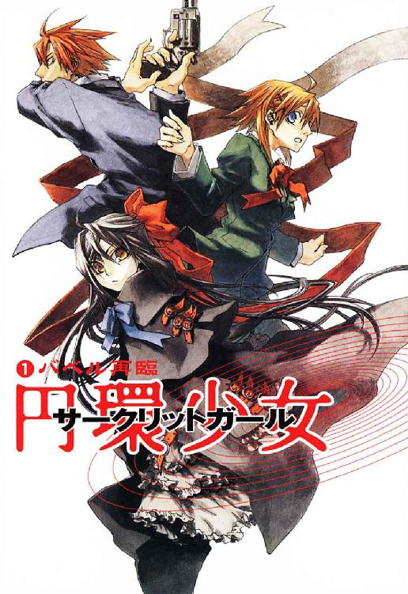
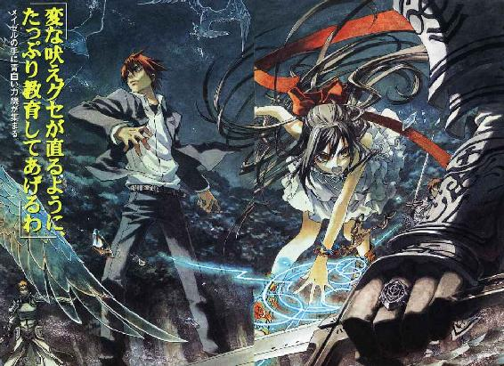
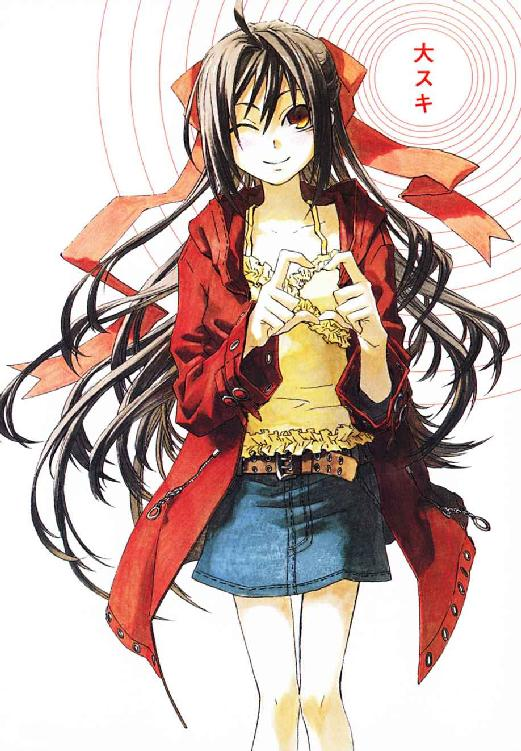
円環少女
①バベル再臨
長谷敏司

角川スニーカー文庫
本作品の全部または一部を無断で複製、転載、配信、送信したり、ホームページ上に転載することを禁止します。また、本作品の内容を無断で改変、改ざん等を行うことも禁止します。
本作品購入時にご承諾いただいた規約により、有償・無償にかかわらず本作品を第三者に譲渡することはできません。
本作品を示すサムネイルなどのイメージ画像は、再ダウンロード時に予告なく変更される場合があります。
本作品は縦書きでレイアウトされています。
また、ご覧になるリーディングシステムにより、表示の差が認められることがあります。
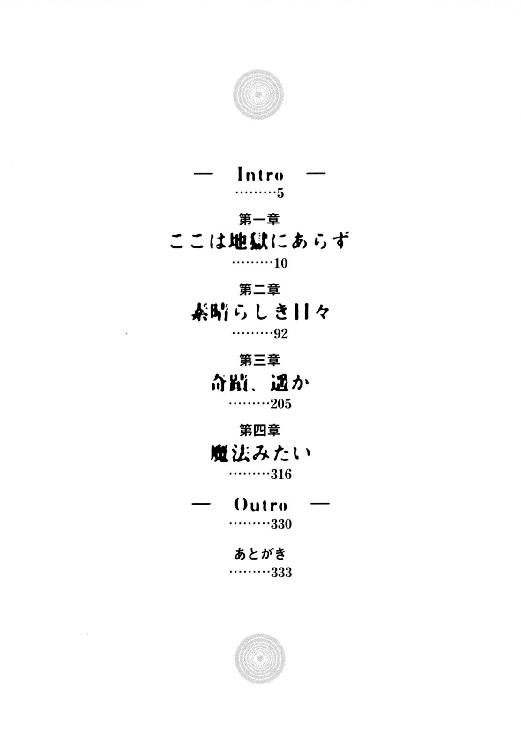
武原仁は半月前、はじめて教壇に立ったとき、あんまり子どもたちが見てくるものだから、「実は俺、全裸なんじゃないか」と不安になったものだ。今は教師の権威がまるハダカだが、生徒は誰も気にかけてくれない。ヘンデル、モーツァルト、ハイドン、バッハ、音楽の巨匠たちが、壁面の高みから小学校教諭の苦闘を憐れむ。音楽室の肖像画と教師の差は、子どもの手が届くところにいるかどうかだ。四列に並んだ六年一組三十六人の野獣たちと同じ檻に入って合唱させるなんて芸当は、教育ではなく一種の曲芸ですよ？
「せんせ、もうちょっと上手に歌ってください」
最前列で、ひときわ目を惹く少女が、品のいい眉を怒らせ不平の声をあげた。陽光に輝く白い首筋と長い黒髪の、どんな風景からも異物になる白黒の落差のせいか、仁には彼女が、白昼の幻のように儚く見える。だが臙脂色のリボンを結んだこの女子出席番号一番、鴉木メイゼルが、未熟な仁の授業を、無茶苦茶にする元凶なのだ。
「先生だって練習したんだ。ちょっとくらいうまくなくても、我慢しなさい」
武原仁の本来の職務は、文化庁文化財部の非公式セクションに属する専任係官。この私立御陵甲小学校で副担任をまかされている彼は、実は教員免許すら持っていないニセ教師なのだ。
「でも、せんせ、ほんとにヘタクソだわ」
「先生は、うまくなくても気持ちが伝わってくる歌が大好きだな。それに歌だって何だって、努力すれば、這いあがれるだろ」
歌の下手な人間に音楽室で発言権はないとばかりに、声を押し殺して子どもたちが笑っている。
「歌手の世界って、努力より『才能ないから田舎に帰れ』って言われるトコだと思いまーす」
男子生徒の生意気な言い草へも、教育者の端くれだから教訓で返す。
「石にかじりついても歌い続けて、花ひらいた演歌歌手は多いんだぞ。先生は、あきらめないことは素晴らしいと思う」
「売れない演歌歌手はどうでもいいですから、先生は『アマリリス』を歌ってください」
学級委員長の寒川紀子は、怒ると縁なし眼鏡を押しあげる癖がある。
「それじゃあ、最初から行きますよ」
ピアノの前から担任の祖師堂しづか先生が一声かけると、噓のように音楽室が静まりかえる。波打つ栗色の髪の女性教諭は、どつぼにはまって溺れる仁を、海のように心広く見守って、助けてはくれないのだ。
空気を硬質の結晶に変えるような、澄んだ旋律が音楽室に響きわたる。六年一組の生徒たちも、思い思いのつかみ方で開いた教科書を持って、大声をあげ始める。声変わり前の子どもたちの歌は、羽毛の上をすべるようにやわらかい。仁は、低い自分の声を重ねるのが申し訳ない気分で、合唱を先導する。
その昔、歌は人と神の仲立ちで、巫術者は歌うことで役割を果たした。歌は、神と人とをつなぐ神の言葉。だが武原仁は、神聖さも祈りもなくただ楽しく歌う授業を悪くないと、ついポケットに煙草を探してしまう。
曲の最中、男子生徒たちが自分の肘や頭に触れて、小さな身振りを出し合っていた。最近、男子の間で、授業中にこそこそ野球のブロックサインのようなもので会話するのが、はやりはじめたのだ。歌が終わっても、けじめなく続けているから、仁は腹の底からドスのきいた低い声を吐き出す。
「落合、井出、そんなに踊りたきゃ前に出て〝踊らせる〟ぞ」
注意すればなめられ、凄めば必ず生徒に怖がられるのが、武原仁という男だ。黙りこくった三十六人の視線の檻に閉じこめられて、歴戦の男の脳から、思考が吹っ飛んだ。
「──笑え。いや、歌え。もっと陽気に歌え」
額といわず首筋といわず脂汗をじっとり浮かべながら、子どもたちにせまる。せっぱ詰まったニセ教師は、仮面のようにぎこちない作り笑いを陳列されて、更に追い詰められてゆく。
蠟でかためたような空気を破ったのは、携帯電話の呼び出し音だった。ひとりおかしそうにのどを鳴らしていた女子生徒、鴉木メイゼルが、素肌に直接着た黒いジャンパースカートのポケットから携帯を取り出す。武原仁は知っている。その呼び出し音は、彼女が《魔導師公館》から連絡を受けるとき使っているものだ。
世間には秘密だが、小学生、鴉木メイゼルは、異世界人の魔女だ。この世界には異世界から魔法使いたちが到来し続けている。神話や伝承、おとぎ話や古い文献に数々の痕跡を残し、人間が増えすぎた現在では、もはや歴史の表舞台に姿を現せない奇蹟の振るい手たち。その魔法使い問題を管轄する日本政府の機関が、関係者には《公館》と略される魔導師公館──武原仁の本来の職場なのだ。
「こら鴉木。授業中に携帯電話使うな」
彼に《公館》から辞令がおりて、メイゼルの保護監視のためニセ教師をはじめて、はや二十日。小さな魔女は帰国子女という名目で一ヶ月前転入したばかりだから、日本語や風習をよくまちがえる。
「せんせ、保健室から電話で、そろそろ気分が悪くなっただろうから休みに来なさいって」
「鴉木がいなくなると、先生の気分が悪くなりそうだから、ここにいてくれないか」
授業を抜けたが最後、あどけない魔法使いは絶対に学校から飛び出してしまう。だが、音楽室がざわりとして、仁は事情を説明できないから焦る。生徒は、教師の失言にとことん敏感だ。
頰を薄桃色に上気させたメイゼルが、体をくの字に折るようにして、下から彼の顔を覗きこんでくる。
「せんせって、かわいい。そんなに、あたしとはなれるの、我慢できないんだ」
ネズミをいたぶる猫さながら、嗜虐的に目を細める。
「ガマンはできるけど、先生は、正直、鴉木がなにしでかすか心配だ」
「いいこと考えた。せんせ、これからあたしが保健室で寝てる間、ずっととなりで手をにぎらせてあげる」
ふくらんでない胸を手のひらで押さえて、男らしいのか乙女なのか微妙な許可をくれる。
「......連れて行ってやってくれ」
騒ぎの元凶が保健委員を引っ張るように飛び出してしまうと、台風が過ぎ去ったように音楽室はとっちらかって、静かだ。腕時計を見ると、授業時間は五分しか残っていない。目が合った、女子出席番号十二番天瑞岬が、ボロボロの副担任を鞭打った。
「先生と鴉木さんを見ていると、ある意味授業より有意義なことをたくさん学習できます」
仁には、それでも教壇を降りて生徒の前から逃げるという選択肢は、ない。
「なにが勉強できるんだ？」
「人間、弱みを見せたら転落するだけです」
とってもいい笑顔で、断言された。
歌の授業を再開しようと教科書を開きなおした仁は、大きく息を吸った後、ふと思い出して付け加える。
「先生、弱みなんかないぞ」
担任の祖師堂先生のピアノがもの悲しい前奏を叩き始め、仁の反論は誰にも聞いてもらえないまま歌声に押し流された。
そこは一面の血の海だった。東銀座の高級マンションの一室に、今や、人の気配はない。革張りのソファから、テーブルの上のティーセットまでイタリア製で統一された応接間の時間は、一日前に停止した。もう夏と言っていい六月はじめの気温と湿度で、錆に似た血臭が部屋にこもっている。ここを出ても、臭いはしばらく鼻腔に残り続けるだろう。
武原仁は、音楽室で子どもたちにやりこめられていたときとは打って変わった、厳しい面持ちで惨劇の痕を検分する。
彼には、ふたつの顔がある。ひとつは御陵甲小学校のニセ教師。そしてもうひとつは、魔導師公館の専任係官。日本の法律を守らない異世界人を武力で制圧、場合によっては裁判無しで秘密裏に抹殺する。千年以上も前からこの国の治安は、そうやって魔法使いたちから守られてきた。現在では、今日のように、警察から管轄ちがいと判断された凶悪事件を受け継ぐこともある。
この現場が奇妙なのは、血の跳ねがまったく飛んでいないことだ。被害者の男性は、心臓を鋭利な刃物で一突きされている。本当なら部屋中に返り血がまきちらされているはずだ。なのに、壁紙も新品のようにきれいで、応接の調度も汚れていない。乾いて黒ずんだ血の痕は、床だけに赤黒い花園のように広がっている。そこは一面の、今は凪いだ血の海だった。
携帯電話を取りだし、仁は公館へと連絡を入れる。
「武原仁。東銀座の現場を確認」
電話口に出たのは、《公館》の事務官、十崎京香。まだ二十五歳の、この女性官僚が、仁たち専任係官を束ねているのだ。
〈武原係官。似顔絵の確認が取れました。昨日午後二時、東銀座の呉服店で、染血公主とおぼしき女性が三百万円の訪問着を購入しています〉
「いつもどおり、血液制御で血痕は床だけ。設置されてた金庫は、鍵をこじあけずに、わざわざ金属板を内側からめくるように破壊してある。まず《染血公主》で間違いない」
現場からなくなったのは現金だけで、通帳貴金属のたぐいはすべて無事だ。犯人はすぐそばの呉服店へ買いものに来て、持ち合わせが足りず、不足金を銀行ではなくこの現場で引き出した。異世界人の魔法使いに、現代日本の常識など通用しない。そもそも連中は、この世界を《地獄》と呼び、住民である仁たちのことなど人間あつかいしていないのだ。
「......しっかし、よくも《協会》が、似顔絵なんか出したもんだ。ジェルヴェーヌ・ロッソは、元々、正式メンバーだろ」
《協会》は、日本政府と外交関係がある一千以上の魔法世界に勢力を広げる研究機関だ。記録に残るだけで平安朝からの歴史ある付き合いだが、魔法使いたちは、千年以上もこの世界の人間を見下し続けている。だから、日本政府の代表機関である《公館》へ、必要な情報をまったく寄越さない。特に、元身内が関わっている場合には。
携帯電話のスピーカー越しに伝わる十崎京香の声は、冷静だ。
〈《協会》内に、早急にジェルヴェーヌを処分したい勢力があるようです。彼女が姿を消して二年間も止まっていた情報を、請求しなくても押しつけてくるようになりましたよ〉
「首に縄つきなら、調査はもう引き揚げるよ。メイゼルをマンションの前で待たせてるんだ」
女性官僚の口調が、ほんの少しだけ、あたたかみを帯びる。
〈了解しました。現場から直帰で問題ありません。小さな魔女によろしく〉
今日、音楽室で、メイゼルは学校を無断早退しようとした。この現場で、魔法犯罪の痕跡が発見されたと連絡が入ったからだ。
《協会》でつながる一千の魔法世界には、《刻印魔導師》という死刑に等しい重罰がある。その罰を受けた魔導師は、この世界──《地獄》へ追放され、協会の敵を百人倒すまで自由になれない。仁たちが生き、ニセ教師として小学生を教え、銀座から地下鉄に乗って多摩川沿いの自宅に戻るこの世界は、魔法使いにとっての《地獄》だ。
そしてメイゼルも、罪人たる《刻印魔導師》として、《協会》から、道具のように《公館》へとさげわたされてきた。専任係官はそれを管理し、場合によっては処分する。仁は、死ぬまで戦わされるメイゼルにどう接してやるべきか、いまだに迷い続けている。だから、せめて少女が生きる過酷な道行きを、一秒も余さず、ともに歩んでやりたい。小さな魔女がおとなになるまで、この世界でしあわせをつかむまで、守ってやれたらいい。それはたぶん故郷を、異世界人たちに《地獄》だと言わせたくない意地なのだ。
マンション八階の窓から、新橋方面に落ちる夕陽が、魔法使いが実在するなど知らなかっただろう被害者の、生の終わりを赤く染め上げる。郷愁にくすぐられた胸が、メイゼルのことを思い出した。凄惨な殺人現場を見せたくなくて玄関ホールでまたせたが、もう小学生は補導されておかしくない時間だ。
†
そのころ、鴉木メイゼルは、マンションの入り口から、銀座の街へと続く道をぼんやり眺めていた。
二ヶ月前、少女はこの世界、《地獄》へと、生きながら堕とされた。
メイゼルたち魔法使いにとって、魔法世界と地獄をわける差は、《魔法》と《神》だ。彼女たちは、数百億個に及ぶと言われる魔法諸世界と《地獄》と《神》の関係を、小さな支点を持った巨大な天秤になぞらえる。魔法使いは天秤棒の端にある不安定な世界で、自然というはかりを揺らすことができる。こうして世界に影響を与える行為が、《魔法》だ。そして魔法の存在するところには、必ず自然現象を調整し世界秩序を支えてくれる《神》がいる。だが《地獄》は、自然現象だけで秩序の釣り合いが取れているから、科学は成立しても神が存在しない。だから魔法使いたちは、魔法も神もないこの世界を「神に見捨てられた地獄」とさげすみ、悪人は死ねばここに堕ちると教えるのだ。
日本一地価が高い街へと向かう、肌も露な女性たちを目で追いながら、メイゼルはため息をつく。
「ああもう！ 保健室にほんとに踏みこんでくるし、現場も見せてくれないし、せんせの心配性もたいがいだわ。たまにはあたしに、かっこいいとこ見させなさいよ」
オートロックのドアにもたれながら、小さな魔女は大気中の魔力を励起させ、両手の人差し指の間に、白い稲妻の糸を作る。まばゆく弾けるプラズマを一本ずつ、中指の間、薬指の間と、徐々に増やしてゆく。そして、放電の弦で作ったあやとりは、五本目の糸を作った直後、橙色の炎をあげてすべて燃えた。
メイゼルをけげんそうに見おろしながら、主婦らしい四十代くらいの女性が、足音高くマンションを出て行った。もう、少女の小さな手の中に稲妻はない。ごく普通の住人に、大した興味もなくちらりと一瞥されただけで魔法は砕け散ったのだ。
この世界の人間は生涯、魔法を観ない。魔法使いたちは、観測する──目で見、耳で聴き肌で触れることで世界を主観的に再配置し、一時的に自らの属する異世界の自然法則に取りこめるから、本来奇蹟のないここで魔法を使える。だが地獄人の観測行為は自然現象を強制的に安定させ、不安定な異世界の法則、つまり魔法を引っぺがしてしまう。だから、見ようとすると奇蹟のほうが崩壊し、その元凶の目に映らない光──魔炎として残骸がまき散らされることになる。この異世界を奪う力ゆえに地獄人たちは、奇蹟と神に敵対する《悪鬼》と忌み嫌われるのだ。
網膜に今も、魔炎が焼きついている。奇蹟の使い手を真に恐怖させる悪夢、積み重ねた力も技術も焼き尽くし、魔導師をただの無力な生き物に引きずり戻す、呪われた光。神話や伝承に多くの影響を残した異世界の客は、これがゆえただ悪鬼が増えただけで表舞台から追い払われた。地獄の空気に押しつぶされそうで、メイゼルは仁の広い背中を思い浮かべる。巨大な《協会》ですら、ここでは地獄の国家と取引してようやく存続している。大蛇の群れに投げこまれたカエルは、どんなに強くても、戦えば生き残れないから。
「本当に、ひとりで大丈夫なんだから」
ガラス扉に映る、長い黒髪の少女に自信を出してと微笑みかけた。仁より五十センチも背が低い、お母さんと同じ黒い瞳の、頰のふくらみもあどけない子どもがそこにいた。ここがどこでも、自分は自分だと胸の中で言い聞かせる。
「大丈夫、あたしのこと、子どもだなんて言わせないんだから」
メイゼルは背負っていた赤いランドセルを、我慢できなくなって床に落とした。先生と手を繫いだり腕を組んだりしても、親子にも兄妹にも見えない方法はないかと、手持ちぶさたな時間をうめるように、ああでもないこうでもないと表情を作る。
──少女の眼前の通りを、見知った顔が横切った。
「ひと、りで、だいじょうぶ......なんだから」
金髪を後ろになでつけた、この身長百九十センチ近い大男は、《公館》の犯罪魔導師リストに載っていた。ラグランツ・ヴェイル、《染血公主》ジェルヴェーヌの手下のひとりだ。
魔法使いのいる世界には、必ず一種類の魔法大系がある。メイゼルの世界では、振動や回転のように周期のある運動や自然現象が安定しない。揺れるブランコは勝手に高くはねあがって危険だし、回る車輪が理由なく止まるのもしょっちゅうだ。もろい自然は、観測者たる人間がどう見るかで変動する。そんな歪みにつけこんで、周期運動するものに《魔力》を見出す方法とそれを支配する魔術、円環大系は練りあげられた。原子核のまわりで電子軌道を占有する電子も、円環大系が操る《魔力》のひとつだ。膨大な電子を手元に収束し加速し、さっきのあやとり遊びのように、円環大系の魔導師はたやすく稲妻を編みあげる。
「まちなさい！」
硝子のドアを開けてメイゼルが声をかけると、肩幅の広さを誇示するようなタンクトップの男が、首だけ振り向かせて彼女を見おろす。
「宣名大系魔導師ラグランツ、でしょ？ あれだけの事件を起こした現場に、よくぬけしゃあしゃあと戻ってこれるわね」
少女は足もとに魔法陣のかたちの過敏領域を展開し、視界全域の《魔力》を励起させた。同時に魔炎があがって奇蹟は焼き尽くされ、その軌跡が、周囲に存在する悪鬼の位置を明らかにする。東銀座の街路にも、悪鬼に観測されていない、魔法消去の影響を受けない死角がないわけではないのだ。
「こんな子どもが刻印魔導師か!?」
舌打ちして退こうとした男に先んじて、メイゼルは高い建物に囲まれた街の死角に飛びこみ、足もとに小さな陣を展開する。八階の殺人事件にかかわっているのだろう魔導師が、明確な殺意をこめて突っこんできた。
「我、我が右手を名付けて『剣』と定義し、絶対有との論理積を保存する」
あまたの魔法世界に発達した魔法は、《索引型》と《魔力型》に分類される。円環大系のように、自然秩序の乱れを《魔力》として感知し、それをてこに自然を操作する魔力型。そして宣名大系のような索引型は、世界をかたちづくる構成要素を、《索引》を頼りに図鑑でも引くように実体化させる。
指先をそろえたラグランツの手刀が、燐光をはなつ複雑な文字でびっしりとおおわれる。
「我が定義済み概念『黒曜』を、『剣』に加算する。......貫け！」
《索引》を通して魔法が発動し、一瞬で男の手は夕陽に照り映える黒曜石へと材質を変えた。漆黒の鋭い剣となった右手の突きを、メイゼルはほとんど抜き打ちではなった人工稲妻で迎え撃つ。天然のガラスである黒曜石は、電気を極めてとおしにくい絶縁体だ。だが逆に、通電すれば電気エネルギーをまともに吸収し、破壊をまぬがれない。少女がわずか数秒で練りあげた雷は、それだけの電圧を持っていた。
鼻先三十センチの位置で、あどけない魔女は黒曜石の右腕を粉みじんに吹っ飛ばした。指が折れ手のひらが剝がれ、黒い粉塵が影のように舞い散る。カランカランと軽い音を立てて、艶やかな断面の腕が道路に転がった。
衝撃でよろめきながらも、右肘から先のほとんどを失ったラグランツは、平然とただ一言、命じただけだった。
「『剣』を、保存済み論理積に復帰する。......戻れ」
飛び散った破片が、時計が巻き戻るように集まってゆき、ついには生身の状態の右手に再構成されてしまった。百九十センチメートルの長身から、賛嘆の声を投げかける。
「神童とほまれ高いアリューシャ家の長女が地獄堕ちしたと聞いたが。なるほど、そなたがそうか」
「素直に捕まったら、ちょっと泣かせるくらいで勘弁したげる。〝亜〟索引系のあんたじゃ、あたしに勝てないわ」
メイゼルは、体格では勝負にならない敵を無理やり見おろすように、傲然と体をそらす。腕一本を壊したほうも、修復したほうも眉ひとつ動かさない。高位魔導師の間の戦いでは、なにが起こっても不思議はない。
「主君より、用を申しつけられているゆえ、御免こうむる」
ラグランツが大きく後ろに飛んで距離を離し、不利を悟ったか、彼女に背中を向けて逃げ出した。
メイゼルは鍛えあげた逆三角形の背中を追うように、舗装道路にぱんと手のひらを押し当てる。
百人の敵を倒さねばならない小さな魔女は、円形に広げていた魔法陣を、視線方向へと伸びる直線に組み替える。自らの手と敵魔導師の足を結ぶ線上のアスファルトから、むりやり電子を遊離させ、魔力が通りやすくする。魔法陣の上で、円環大系の魔法使いだけに感知できる《魔力》の影が、無数の白い力線となって今にもあふれそうだ。狙いは、走る敵の、道路を蹴る足もと。
俊足の人間など、ほぼ光速で伝達する電流に比べれば止まっているのと同じだ。
「疾れ！」
押し出された電子が高圧電流となって、玉突き状に魔法で整えられた導線を疾走する。五十メートルほど先で左足を接地させた敵魔導師が、壊れたオモチャさながら横っ飛びに転倒した。電流で筋肉が硬直したのだ。だが、男は力が入ってない左足で立ち上がり、引きずりながらまだ逃げる。
そしてラグランツは、地下駐車場の、シャッターがおりた入り口のすぐそばで、ふり返った。後ろ手に暗証番号を叩いてシャッターを開け、脂汗をたらし血の気の引いた男が、それでも歯を食いしばりにやりと不敵に笑う。ついてこいと少女を誘うように、悪鬼の目が街路より確実にすくない、照明も薄暗い駐車場へと転げこむ。
実は一度も人の命を奪ったことがない魔女は、八階で仕事をしているはずの仁を呼ぼうか、一瞬迷う。いつもメイゼルをまだ子どもだなんて理由でかばう先生は、もしそのせいで彼が命を落としたら彼女が死ぬよりつらいと、鈍感だからわかっていないのだ。
「せんせも、ちょっとくらいお仕事休ませてあげるべきだわ」
レースでふち取られたスカートがホコリで汚れないよう注意して、魔女は子どもの歩幅で、戦場へと足を踏み入れる。背中で、シャッターがおりて、ふたりの魔法使いは完全に閉じこめられた。空気中の魔力を目覚めさせても間接消去の魔炎はあがらない、防犯カメラが破壊されているのは確認済みだ。今度こそ人を殺すかもしれない、消せるはずもない恐怖と緊張で、心臓が高鳴る。
「幼い刻印魔導師よ、いい度胸だ。命取りなほどに無謀ではあるがな」
「臆病者が生き残れるほど《地獄》は甘くない、そうでしょ」
大人と子どもでも、見あげるメイゼルの視線は、まるまる太ったカエルを見る蛇のそれだ。ラグランツが、かわいらしい少女の圧力をはねのけるように、腕を上げて高らかに宣言する。
「我、メイゼル・アリューシャを名付けて『蛇』と定義する」
宣名大系は、世界から直接奇蹟を引き出すのではなく、指定した対象へ重ねる、索引型でも特殊な魔術だ。だから術者がまず《対象》を定義しないと、魔法が発動しない。
人形のような細い足を、毒蛇の静かさで、悪意ある力がはい登ってくる。だが、少女は過去を振り捨てるように、腹の底から言い切った。
「ちがうわ。今のあたしは、鴉木メイゼルよ」
定義を崩されて、冷たい言霊の蛇が大気に霧散する。人間を対象にして、宣名魔術をかけるのは難しい。定義がズレていると、魔法も外れるからだ。
「さっきので、わかっちゃった。あたし、負ける気がしないわ」
この世界で二ヶ月暮らして、彼女は変わったのだろう。メイゼルは、この短くも濃密だった時間をそっと胸の中で思い返す。力強い自信が、自然と微笑みのかたちで浮かんでくる。
「我、鴉木メイゼルの憎悪を名付けて、『茨』と定義する」
「それも効かない」
刻印魔導師に堕とされても、憎しみに魂を売る生きかたは、死んだ母から教えられていない。メイゼルを押しつつもうとした、うす緑色の魔術文字が、内側から切り裂かれた。
だが二度魔法を破られたラグランツは、侮るような少女の目に、勝利を確信した獰猛な嘲笑でこたえた。
「我、鴉木メイゼルの《地獄への恐怖》を名付けて、『告死』と定義する」
前の二回は、ただの油断を誘うエサにすぎなかった。桁外れの素早さ的確さで、多くの魔導師の命を奪ってきた、亡者の鎖が少女の心臓にからみつく。
宣名魔術を人間にかけるとき、重要なのは「定義で何をくくるか」という対象設定だ。たとえば体の一部が鉄に変わったとして、《対象》が爪なら指が重くなるだけだが、心臓なら即死してしまう。そして恐怖は、定義されれば発狂やショックでの心停止に直結する、致命的な対象だ。命を掌握されかけたメイゼルは、心中のおびえを対象化からずらそうと、必死で六年一組での思い出を脳裏に浮かべる。それは学級委員長の寒川紀子や、クラスメートの顔とひとつになった記憶だ。この世界の人間と友だちになれると、小さな魔女は知っている。そして、恐怖と正反対の気持ちを呼び起こす、きっと今このときもメイゼルを心配してくれている、仁の広い背中。
「......たすけて、せんせ」
祈りをこめて、負けないように、想いを抱きしめるように胸に両手を当て、そっとまぶたを閉じる。
音もなく、宣名魔導師が絶対の自信をもって放った告死の縛鎖が、ことごとく弾けた。
メイゼルがこわごわ目を開くと、眼前で、あり得ないものを見た大のおとなが、総身を震わせていた。確かにこの世界で暮らす魔法使いは、《地獄》と悪鬼への恐怖を、絶えず刻まれ続ける。それでも、悪鬼なら殺していいなんて話があるはずもない。友だちが、こんな魔導師の手にかかったらと思うと許せない。
少女は人差し指で、男の下唇の、黒曜石の右腕を砕いたとき破片が刺さった傷口を指差す。
「娘、貴様になにがある！ 魔法使いが、なぜこの地獄を恐怖しななふぇああ────」
メイゼルが、男の傷口の、《魔力》の自転方向を揃えて、血中鉄分を魔法で無理やり磁石に変えたのだ。魔法によって強力なＳ極となった下唇と、Ｎ極に磁化されていたコンクリートの床とを、容赦なく引き合わせる。どすんと、魔法使いの頭と誇りが地に墜ちる、鈍い音が響いた。体重百キログラム近い筋肉質の犯罪魔導師が、魔法の磁力で縫い止められて、四つんばいになって冷たい建造物にキスをさせられていた。
「あたし、背の高い人がそうやってはいつくばるとこ見るの、大スキだわ。はぁっ、もう、そういう目はもっとスキ！」
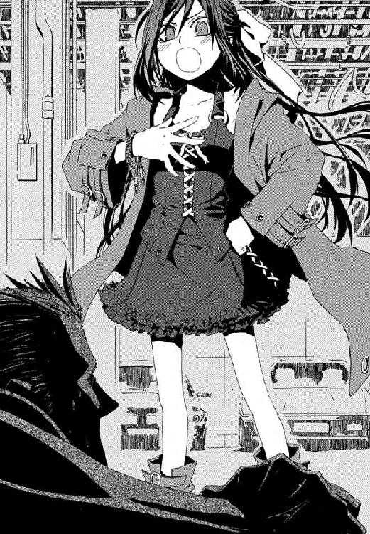
嗜虐的なよろこびに目をうるませる小学生の前で、脂汗をたらした男が、顔を床から引きはがそうと両手足の筋力を振り絞る。しっかり接着されたようにホコリまみれの床にへばりついて離れない下唇が、びろんと長く伸びていた。
「う、あ、ぅ鴉木メイゼルの、嗜虐的変態性を名付け、『Ｓ』と定義する」
ぼとぼととよだれの糸を垂らしながら、犬のように四つんばいにさせられた男が、メイゼルの性的嗜好を魔術でくくろうとする。サディストという定義は説得力満点だ。
少女は、小さな手のひらをふくらんでない胸に当て、自信たっぷりに言いはなつ。
「変態呼ばわりしないで！ あたしは、強い相手やきれいな子の泣き顔を見たい気持ちが、人よりちょっとはげしいだけなんだから！」
──これ以上なくガッチリ、ジャンパースカートの下の素肌に魔術文字が定着し、定義が完了する。
「我が定義済み概念『鋼鉄』を、『Ｓ』に加算する。......我を苦しみから解き放て！」
魔術が発動した瞬間、メイゼルを突き動かしていた感情が、鉄のように重くなり静止した。宣名魔導師は、脳神経に《保持済み概念》を組みこみ魔法イメージとして読み出すことで、強力な《索引》を手軽に扱う。どうして自分にこんなかわいそうなことができたのだろうとメイゼルは怖くなって、言われるまま魔法を解除する。
同時に、嗜虐性の喪失で定義『Ｓ』が解放され、前提の崩れた宣名魔術は効力を失う。だが、それまでの時間差が、すべてだった。
メイゼルが我に返ったとき、敵はもう地下駐車場から走り去ろうとしていた。戦況不利と判断した魔法使いが、この一瞬の間隙に、逃走に出たのだ。
「あ、あ、あ......」
天使のようなあどけない頰を真っ赤に染めて、少女は絶句する。この魔法のかかりかたは、魔術大系そのものから「おまえは変態だ」とお墨つきをもらったも同然だ。
「ま、まま、まちなさい！」
精神的打撃のせいか、走りだしたメイゼルの足もとはふらふらだ。ロータスエリーゼ二〇〇四年モデルの赤い車体に思い切り膝をぶつけて、ホコリまみれの床に、ぽてんと転ぶ。
「まちなさいったら！ 泣くまでひどいことしたげるから、まちなさい！」
魔術的空間転移で敵に逃げられたメイゼルが、不機嫌まるだしで地下駐車場をあとにしたのは、それから三分後だった。
階段をあがって、もう一度マンション玄関から、表の通りに出る。もちろん、討ち漏らした魔導師が、まだこんなところをうろついているはずがない。
がっくりと肩を落とした小学生の前を、女子高生が歩いていった。メイゼルには奇蹟でもない限り望みえない、立派な胸のふくらみが、ちょうど小さな魔女の顔の高さを通り過ぎたから目で追ってしまう。
†
倉本きずなは、そこにいた小学生を、思わず歩きながらふり返ってしまった。衿ぐりを大胆に開けた夏物のジャンパースカートをひるがえし、長い黒髪に臙脂色のリボンを結んだ、まるで妖精みたいにきれいな女の子だったのだ。もちろん羽根はないけれど、夕暮れの風景から、まどろみの夢のように浮いている。
家賃の高そうなマンションから、背の高い男の人が飛び出してきた。年の離れた兄妹か、それとも親子か、お姫様と苦労性の執事みたいな取り合わせに、きずなはちょっと噴きだしてしまう。見あげる少女が、若いその男性を心から信頼している雰囲気に、ちょっとほのぼのする。
さすが銀座はひと味ちがうなと、変なところに感心してしまった。
金曜日の夕方に、高校二年生の彼女が、湿っぽい夏の空気すら趣味のいい街を歩いているのは、小さなギャラリーを見た帰りだからだ。そこには、父が作る、不思議な音色の楽器を置かせてもらっていて、きずなはそれを会期終了ぎりぎりで見に来たのだ。個展を開くほど本格的な趣味人が家族にいるのは、彼女の自慢だ。
きっと物静かな父は、「見てきたよ」と言ったら、照れくさそうに頭を搔くのだろう。運送会社でトラックの運転手をしている家族が、どこで楽器づくりを覚えたのか、きずなは知らない。毎日、夜遅くに起き出すと、絶対に入ってはいけない開かずの部屋で、いつもひとり明け方まで作業をしている。
特別な取り柄があるわけでもないきずなにとって、家族が小さいころから自慢だった。高校生になった今でもそうだ。動きのある、肩に触れないくらいで切った髪に、指で触れる。赤みがかった髪の色や、よく見ると黒ではなく濃紺の瞳が、父とちがうから余計に大切に思うのかもしれない。きつい表情がとことん似合わないらしい、自分で思い返しても笑ってることが多い口元もそうだ。友だちに「きずなみたいなお姉さんが欲しかった」と言われる、正直、褒められているのか微妙な彼女は、父の倉本慈雄とまったく似ていない。
地下鉄に私鉄、ＪＲを乗り継いで、慣れ親しんだ駅前に戻ると、もう陽が落ちて青黒い空に星が輝いていた。きずなは、夜が好きだ。夜は魔法に近いからだ。
「魔法は本当にあるんだよ」
もうはっきりとは覚えていない昔の、たぶん今日みたいに静かな夜、父はそう言って彼女をなぐさめてくれた。きずなだって、魔法なんて本当はないことくらい知っている。それでも、おとなになっても「ある」と信じ続けるのも、ロマンチックでいいと思う。
駅から徒歩十五分のアパートに、最近売り場が広くなったスーパーで晩ご飯の買いものをして、夜道を帰る。
タイムサービスの刺身の匂いに惹かれたか、近所に住み着いた黒猫が、とことこブロック塀の上を道がわりに、彼女についてきた。きずなが足を止めると、物欲しそうに見られじと優雅に尻尾を立てた貴婦人に、追いこされてしまった。そして四つ辻で、夜空と同じ色の猫が、ひらりと音もなく塀から道路に飛び降りる。
右側の一方通行の通りから、強烈な車のライトが差した。
地面に落ちる猫の影は、光源が猛スピードで迫るにつれ濃くなり、黒い体はかたまったように動けない。衝突して、光のなかに命が踏みつぶされかけたそのとき。
夜だから、奇蹟は起こった。
きずなが握った手を反射的に体に引き寄せた。同時に、尻尾を《見えない手》につかまれたように、轢かれかけた猫が彼女のすぐそばまで引きずられてきた。
中央自動車道のインターチェンジのほうへと、白い乗用車が突っ走っていった。何キロ出していたのだろう、驚いたきずなが息を整えている間に、排気音ももうはるか向こうだ。正面から見ていられずとっさに体をひねった姿勢のまま、動悸が止まらないきずなは足もとを見おろす。
黒猫が、黄金の目で彼女を見あげて、背を丸めて牙をむき威嚇していた。
「ご、ごめんなさい」
あわてて握っていた手を開くと、猫は尻尾に火でもついたように逃げ出し、しばらく進んで立ち止まる。
「......これって、ひょっとして、......魔法!?」
手応えが、まだはっきりと残っている。感触が消えない間に、もう一度やってみた。
「えや！」
ふり返ってきずなの様子をうかがっていた黒猫を、また尻尾をひもがわりに《見えない手》でずるずる引きずってこれた。前足でアスファルトに爪を立てて踏ん張った猫が、健闘むなしくきずなの足もとに到着した。
「すごい。魔法だ」
きずなが感極まってため息をついたのと、再三尻尾を引っ張られて気の立った黒猫が飛びかかってきたのは、ほぼ同時だった。
「学校のカバンなのに～～」
アパートに逃げ帰って電気をつけて確認すると、猫パンチの傷痕は、高校指定のカバンに革の地肌がのぞくほど深く刻まれていた。それでも、落ちこみと興奮は、釣り合っている。平穏で、けれどたいした不満もない倉本家の日常に、たしかに、新しいなにかがやってきた。
今日はトラックの運転手で日本中を走り回っているお父さんが、家に帰ってくる日だから、いつもよりおかずを二品たくさん作る。父ひとり娘ひとりの住まいは、つつましいけれど、寂しくなんかない。コツを忘れないように、食材を魔法で流しまで引き寄せてみる。加減を失敗して、タマネギがおでこにぶつかった。
酢豚の味付けをしながら中華なべを振っていると、玄関のドアが開いた。
「ただいま」
父、倉本慈雄が帰ってきたのだ。ジャアジャアと油の爆ぜる音と、甘酸っぱい中華の匂いに誘われたように、安芸宮島ののれんをくぐって、台所に入ってきた。
眼差しが繊細な灰色の瞳が、きずなをやさしく見おろす。長めに伸ばして後ろでくくった黒褐色の髪と、短く刈りそろえた無精ひげがワイルドで、クラスメートのお父さんよりちょっとだけ格好いいと思う。
「おかえり！ お父さん、今日、大ニュースがあるんだよ」
そして、楽しい夕食が終わると、ふたりでてきぱき後かたづけをするのが、倉本家のきまりだ。
「じゃーん」
きずなは、父がどんな顔をするだろうとわくわくしながら、広告のチラシを二つ折りにして、ちゃぶ台に立てる。これならまあ、加減をまちがっておでこにぶつけても、痛くない。
「お父さん、魔法はあるって言ってたよね」
大きな手で湯飲みをつかんでお茶を飲みながら、父は、いつも首からかけているハーモニカみたいな楽器の鎖をもてあそんでいた。きずなが小学生だったころの話を蒸し返したから、困っているのだろうか。変だと思われたらどうしようと躊躇した彼女を、けれど父は、今日も勇気づけてくれたのだ。
「あるよ。魔法はある」
きずなは大きく深呼吸して立ち上がると、ちゃぶ台から遠ざかった。父、慈雄はわけもわからず、湯飲み茶碗を手にとって、娘の奇行をながめるだけだ。
「見ててね、お父さん。いくよ！」
三メートル以上離れたチラシを、あのときと同じように見えない手で引っ張る。くっと胸の底につっかかるような手応えとともに、ふわりとチラシがきずなの前まで飛んできた。
「すごいでしょ！ すごくない？」
チラシを空中で捕まえて、きずなは種も仕掛けもないことを裏返したり逆さにしたりしてアピールする。父が、目を瞠っていた。
「すごいな、きずなは」
手品だともまったく疑わず、ただほめてくれたから、本当に魔法を誇らしく思えた。彼女ひとりのときはどこか現実感がなかったのに、人に見てもらったとたん、幻ではなく本物だと、自分でも現実感があやふやになって、立っていられなくなった。
「すごいでしょ」
わけのわからない歓喜で胸がいっぱいになって、子どもに戻ったみたいに、父に抱きついてしまう。常識もなにもかもふわふわ浮かんで、空でも飛べそうだ。
きずなのやわらかな髪を、父の小さな傷や汚れがいっぱいについた手が、シャンプーでもするみたいに乱暴にかき回す。厚い胸板に顔をうずめると、今日も家族のため一生懸命に働いてきてくれた、汗のすっぱい匂いを鼻腔に感じる。
「その力を、たいせつにしなさい」
そして、わけもわからず興奮で涙すらあふれさせる彼女に、父はやさしく忠告したのだ。
「でも、魔法を、絶対に家の外で使ってはいけないよ」
「うん。約束する」
なにか素晴らしいものにつながる扉を開いた彼女は、なにもかもに感謝したい気分だから、素直にうなずく。見あげると、父もなぜだか、目を赤くして、鼻をすすりあげていた。
「きずなが魔法使いになった記念日だから、今日はお祝いしようか」
「はいはい、ビールだね。お父さん」
一晩明けた土曜日、倉本きずなは、昼までの授業を終えた後、すこし遠回りして家に帰った。晴れた空の下、今日は近くで競馬があるからか、公園にも家族連れがたくさん来ていて、楽しい気分になる。
この世界には、魔法がある。それを知っただけなのに、目に見えるすべてが美しく花ひらいたみたいだ。たぶん神様だって本当にいて、あふれるほどの奇蹟で彼女たちをやさしく見守ってくれている。手の中に今、望んだことをかなえる力がある。恵みの中に生きている。そんな、子どもの夢みたいなことが、真実だと思えた。
倉本家のあたりは、都心よりずっと緑が多くて、住宅地でも歩いていて楽しい。頭の中で音楽を流しながら、ちょっとスキップしてみたりする。魔法使いになってみると、今いるここもまるでおとぎの国だ。
父は、昨夜も遅くから起き出して、製作部屋で楽器を作っていた。また今日も、昼過ぎまで眠っているのだろう。
「こんにちは」
すれちがったふたり連れに、きずなはあいさつした。涼しそうなワンピースで、黒髪を今日は濃紺のリボンでまとめた小学生が、驚いたようにきずなをふり返る。手首あたりをつかまえられている、おとなの男性のほうが、首だけ彼女に向けて丁寧に会釈を返してくれた。昨日の夕方、銀座で見かけた、小さな妖精と男の人だ。
近所に住んでいたのは、ちょっとうれしい偶然かもしれない。
そのとき、きずなはまだ、ふたつの世界は交わらないと思っていたのだ。
†
笑顔と弾むような雰囲気につりこまれるように、制服姿の女子高生に突然あいさつされて、武原仁は思わずにやけてしまった。
次の瞬間、彼の左腕にしがみついていたメイゼルが、手の甲に円環魔術で電気をとおす。奇蹟的に、道をゆく悪鬼たちに消去されなかった魔法が、ばぢりと彼の手に激痛を走らせた。
「せんせ、あのひとのおっぱいすごく見てた......」
反射的に見おろすと、桜色の唇をへの字に曲げて、小さな姫がむくれていた。背中がぱっくり開いたワンピースから、白い肌が覗いて、おとなの彼が気恥ずかしくなる。
「見てないだろ。人聞き悪いな」
土曜日で観光客も多いから、仁は内心ヒヤヒヤだ。御陵甲小学校は何駅も遠くだが、放課後に小学校教諭と生徒が腕を組んで歩くのは、あまりよろしくない。
「あたしといっしょじゃ、不満なわけ？」
武原仁と鴉木メイゼルは、もちろんデート中ではない。《公館》から呼ばれて、これから打ち合わせなのだ。
《染血公主》ジェルヴェーヌ・ロッソを、現在、魔導師公館は捕捉できていない。最後に目撃されたのは二日前、魔女は東銀座の呉服店へ、仕立てた加賀友禅の中振袖を受け取りに来た。そして代金三百万円を払うためマンションで人を殺す。魔法は通じなくとも、刃物で刺せばこの世界の人間はもちろん死ぬ。そして、死人はもう何も観測しないから、消去に阻害されず現場から魔法で逃走できる。ジェルヴェーヌのいつもの犯行手口だ。
刻印魔導師が倒さなければならない相手は、こんな危険人物ばかりだ。仁は、メイゼルが《染血公主》に一対一の戦いでも挑んだらと思うと、胃に穴が開きそうだ。
「もう二度と、ひとりで戦おうとしないって、前に約束したよな」
メイゼルはじっと彼の目を見あげて、考えるように小首をかしげると、手をぎゅっと握ってきた。
「その後、せんせが、あたしに何って言ってくれたか、覚えてる？」
仁も、そのときは重要だと気づかなかった短いやりとりを、もちろん覚えている。腕にもたれかかってきた小学生が、手のつなぎかたを、指をからめるような恋人っぽい仕方になおした。彼は、六月なのに雲ひとつない高い空を仰いだ。
「そういう話じゃなくてだ」
「わかってるわよ。今度は、絶対にせんせを呼ぶから」
マンションの現場検証をした日、メイゼルが遭遇したジェルヴェーヌの手下、ラグランツ・ヴェイルですら少女が考えていたほど甘い相手ではない。宣名大系は、強敵というわけではないが、その突出した攻撃力で死人を出す確率だけは著しく高いのだ。
「おまえに何かあったら、俺も、クラスのみんなも、京香も、みんな悲しいんだよ」
「あたしが死んだら、せんせ、泣くんだ」
つないだ小さな手から、ほのかな熱が彼の血にまで、にじんでくる。
「言いながら、笑うようなこっちゃないだろ」
「あたしは《刻印魔導師》なんだから。せんせの仕事を手伝ってあげたいの。責務を果たして、大手を振って自由を手に入れたいの。子どもだからなんて理由で、守られているのはイヤ。強くなって、みんなのことも守れるようになるもの」
健気な少女が、しがみつくように両手で、思い切り仁の手にやわらかな爪を立てる。痛みに息をのんだ彼の手の甲に、所有権を主張するように、黒髪の妖精が濡れた唇でやさしくキスをした。
「あたし強くなって、せんせが心配なんかしなくていいように屈服させたげるから。せんせは毎日、あたしが作った手料理を、あたしの手から食べて生きていくの」
正直、尻に敷かれるとか倫理以前の、その未来予想図は、仁にとってどうだろう？
多摩川流域には一軒の、広大な敷地をもつ、古びた洋館がある。文部科学省文化庁に属する非公式機関、魔導師公館だ。
地獄とさげすむ世界へ、《協会》の魔導師たちのような異世界人が来るのは、安定した自然秩序と神の不在が、高度な魔法研究に理想的だからだ。現在、高度な科学研究のいくつかは、地球重力の影響が微少な宇宙で行われている。魔法使いにとって《地獄》は、それに極めて近い。だが、彼らは自力で研究場所の確保ができない。だから保護と協力を引き換える魔導師公館のような機関が、地獄の至るところにある。現代日本でも、魔法なしで維持できる魔法産物を《公館》が受け取り、科学的に解析して膨大な特許を取得しているのだ。
公館本館の広々とした身内用の応接室には、先客がいた。大きく開けはなった窓に背を向けて、若い男が立っていたのだ。
「ひさしぶりだね、仁」
ピンクのドレスシャツを胸板が見えるほどはだけさせ、ジャケットもパンツも輝くような白でまとめた、派手すぎる男だ。秀でた額に前髪が一房落ちかかり、貴人のように繊細な容貌を際立たせている。仁と同じ専任係官、八咬誠志郎だ。
「《染血公主》の事件は、おまえが出張るほど大きかったか？」
八咬はよほどな事態でないと呼ばれない、《協会》の魔導師に最も嫌われた忌み子だ。専任係官でも相性の悪い人間が多いから、たいてい仁が組まされる。
「つれないな。僕は、君に会いに来たのさ。メイゼルちゃんはどこだい？」
「メイゼルは《奥の院》だよ。また、この世界の人間にゃ聞かせない、魔法使いの話だ」
魔導師公館の敷地は、まっぷたつに分かれている。日本政府の役人がはたらく木造二階建ての《公館》の本館と、《協会》の魔法使いたちの研究施設が並ぶ《奥の院》と呼ばれる区画だ。そちら側には、悪鬼による魔法研究や魔法物品の破壊を防ぐという名目で、限られた人間しか入れない。八咬誠志郎も仁も、《奥の院》出入り禁止組だ。
同僚が、なぐさめるように、仁の肩を叩く。
「エレガントであれ」
こんなトンチキな台詞に熱く気持ちをこめられる男を、仁は他に知らない。
「まあ、飲みたまえ。ベルニッチ秘蔵のシャンパンがある」
魔導師たちは仕事中でも酒を飲むから、応接室には食器棚と冷蔵庫がある。八咬が冷蔵庫から失敬したシャンパンの瓶は、首から上が魔法で消したかのようにきれいに消滅していた。
「今は勤務中だ」
言いつつも、仁は棚からグラスをふたつ出す。彼がいい加減な社会人だからではない。シャンパンは、瓶の口があいてしまうと飲みごろが短いのだ。
「武原、八咬係官、昼間から何をしているのですか？」
古いソファにどっかと腰かけた男たちの上に、つららのような冷たい叱責が降り注ぐ。鋼鉄の刃にも似た鋭い視線のあるじは、シンプルなスーツを着こなす有能な女性官僚。定員十二席、現在は七名の専任係官を束ねる、事務官の十崎京香だ。
「こいつが、勝手にシャンパンの栓を吹っ飛ばしたんだ」
「君はひどい男だな」
責任を押しつけ合う男たちを、長い髪を品よくアップスタイルにまとめた京香が、木製の窓枠を規則正しくコツコツたたく音だけで黙らせる。一歳年上の彼女は、幼なじみの仁にとって、昔からいつも前を行く存在だった。
姉が弟をたしなめるように、京香が腕を組んで、ため息をつく。
「武原係官は、メイゼルちゃんがしっかり監視していないと、ダメね」
仁が憮然としていると、《奥の院》側の廊下から、とことことメイゼルが戻ってきた。そして、八咬の姿を見ると、血相を変えて仁の座るソファの陰にかくれる。
「つれないな、僕は、君とお友達になりたいのに」
からかうような声とは裏腹に、八咬が寂しげに切れ長の目を伏せた。
「どうしてこの人まで、ここにいるのよ」
気丈なメイゼルが、かくれんぼでもするように仁の後ろに姿を隠して、声を震わせていた。
「因達羅、......おびえてる」
しっぽを丸めた犬をかばうように、白磁の人形のように体温を感じさせない娘がメイゼルの肩に手を置いた。奇蹟も神も存在しないこの地獄にあって、神域のような清冽な空気を漂わせる彼女は、専任係官、神和瑞希。《公館》が現在のかたちになる明治時代以前から《協会》と同盟関係にあった古い一族の末裔だ。
「因達羅じゃない。メイゼルだ」
仁は同僚の言葉を、メイゼルは人間だと訂正する。神和家は、その長い《協会》との関係の中で、刻印魔導師を《式神》と呼び、使い捨ての道具として使役してきた。
瑞希は、しおれた黒翼のように頭の左右でくくった長い黒髪を揺らして、メイゼルに頰を寄せる。
「式神は、戦っているのが、一番しあわせ。......因達羅、貴方も、戦いたいよね」
インドラ、帝釈天、ゼウス、あるいはトールといった権威ある雷霆神の神話が分布する地域で、円環大系の魔導師たちは活発に活動していた。消去能力への耐性が高く、歴史上魔導師勢力の武器として、神威をよそおった地獄人への示威行為や暗殺に関わってきた、強力な魔法大系だ。
「神和！ メイゼルの面倒は俺が見る」
仁は声を荒げて、ソファから立ち上がる。神和瑞希は、専任係官七人の中で、昨年一年で最多の敵を倒したが、同時に桁外れに多くの刻印魔導師を失っているのだ。
「......残念」
瑞希がぽつりとつぶやく。八咬が、シャンパンを注いでいたグラスを高くかかげた。
「愛だね。僕がゆるす、ふたりで幸せになりたまえ」
「法律も俺の倫理もゆるさんというより前に、おまえは黙れ」
部下である専任係官たちの、ささやかな不協和音に、十崎京香は干渉しない。一段落ついたころ仕事の話を始めるだけだ。事務官が、脇にはさんでいた書類封筒を瑞希へ手わたす。
「《協会》側で、説明を受けてきましたね？ 今回の一件と別口ですが、いえ、繫がっている可能性も充分あるので注意してください」
書類封筒に手を突っこんで、実はまだ十六歳の瑞希が、作り物のようにしわのない指で無造作にファイルをつかみ出す。
「......高校、入っても出席できないけど、いいの？」
「可能な限り登校してください」
メイゼルを小学校に入学させたのも、仁をニセ教師にしたのも、十崎京香だ。目の前の、最高撃墜数を誇る専任係官は、女子高生をやらされることになるらしい。
「高校生になった神和クンのため、高校教師は僕にまかせてくれたまえ！」
「八咬係官におまかせするのは、北海道の知床で、廃校舎に立てこもった魔導師です。熊に高度な知能をあたえて、熊先生と呼ばれています」
十崎京香が『消去者の閲覧厳禁』の判が押された──写真を観測したことで間接的に魔法消去が時間をさかのぼるのを避けるための、書類封筒を押しつける。まさかと笑って写真を引っ張りだした八咬の顔がこわばった。二十頭近いくまが行儀よく椅子に座って授業を受ける、ファンシーな光景が写っていたからだ。世の中には不思議なものがたくさんある。
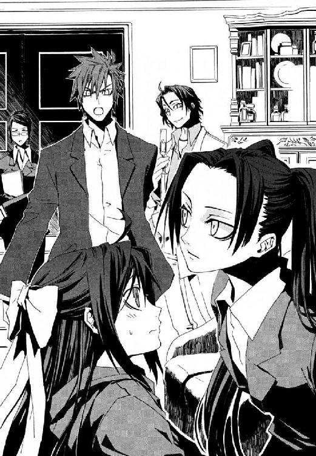
「......メイゼルちゃん、神和係官、そっちの学校にかよいたそうな顔をしないでください」
夕方から、ようやく準備が調い、会議室で専任係官の会議が始まった。刻印魔導師を参加させない決まりだから、公館側は神和瑞希と彼、武原仁と十崎京香の三人。八咬誠志郎は本当に北海道へ飛ばされてしまった。そして、魔法使い勢力《協会》側からは、顎髭をなでさする仕草がいやらしい中年男、調整官ベルニッチ。絹製の黒いローブに細かい細工の装身具をつけたこの魔導師は、言葉は薄っぺらく、仕草はうさんくさいほどに大きい。
「《沈黙》に、《魔獣使い》、公館が誇る忌まわしいハンターどもに、またもお目もじできて、うれしいことだ」
魔法使いたちは、とかく仰々しいふたつ名が好きだ。仁たち専任係官など、鏖殺の《鏖殺戦鬼》としか呼ばれない。日本国民に害をなす犯罪魔導師の取り締まりと、同盟関係にある《協会》の敵の撃退、絶大な力を秘めた神人遺物の捜索・確保。たいてい専任係官の仕事が、敵対魔導師の殺戮へ行き着くせいだ。
「それでは、本日の案件を。二件、重要度の極めて高い事案があがってきています」
殺戮者の頭目たる十崎京香は、長い会議をなにより嫌う。
「まず一点。《協会》からの告知により、二年前、ジェルヴェーヌ・ロッソは姿を消す前、共同研究の対象であった神人遺物を奪っていたことが判明しました」
仁は頭を抱える。神人とは、少なくとも二千年前には完全に姿を消した幻の魔法大系のことだ。同時期にこの世界で活動していた《協会》ですら正体を知らないうえ、神人の痕跡として発見されるのが、魔法消去されても自力回復する、桁外れに高度な魔法産物なのだ。おかげで遺物が発見されるたび、各魔法勢力が入り乱れて壮絶な奪い合いだ。
こんな重要事項が二年間も秘匿されて、しかも今さら出てくることに、脱力して机に突っ伏したくなった。
「遺物ってのは何だ？ どうして今になって、いきなりジェルヴェーヌを切り捨てる？」
「我々とて、六人の高位魔導師を殺害されて《幻影城》の鍵を奪われた。鍵を持つ者は、好きなとき城にはいり、内部を自由に移動できる以上、無理に追っても無駄だったのだ」
ベルニッチがうんざりだとばかりに手を振り、政治的な決定事項なのだろう、十崎京香がそれを受けた。
「当案件は、以降、神和係官を専任とします」
だが、もう関わるなと言われても、仁に納得できるはずがない。
「待てよ！ 問題を神人遺物にすりかえるなよ。あの女、一日でも早く身柄を押さえないと、殺して盗み続けるぞ。手下が現場マンションの地下駐車場に戻ってきたのだって、かさばる車を、後からぬけしゃあしゃあと盗りに来たんだ。罪悪感どころの話か？」
魔女はこの世界の住人を人間扱いしていないうえ、どこまでもなめきっている。だがそれでもベルニッチは、顔を赤黒く紅潮させて元仲間をかばう。
「わきまえたまえ、鏖殺戦鬼。彼女を盗人呼ばわりしないでもらいたいね。ジェルヴェーヌ・ロッソは、小銭ほしさで動く人物ではない。欲深く業深い、一代の女傑だ」
「その女傑が、人を殺して回ってるんだ！」
マンションの惨劇を現場検証した彼は、思わず机を拳でぶったたいていた。
ベルニッチは気持ちいいくらいはっきりした差別主義者だ。魔法を使えないこの世界の住人など、犬猫と同列程度にしか思っていない。
十崎京香が、冷静な表情を崩さないまま、コツコツと規則正しく机を叩いて、彼らを黙らせる。そして、珍しく、言葉を発する前に勢いをつけるように大きく息を吸った。
「第二の案件です。《神音大系》の神聖騎士団が十二名、首都圏に侵入しました」
その瞬間、ジェルヴェーヌのことなど、たぶん全員の頭から吹っ飛んだ。これから始まる戦いが、何人の犠牲者を出すとも知れない壮絶なものになると、誰もが覚悟したのだ。
沈黙を打ち破ったのは、瑞希のかすれたような地声だった。
「......構成は？」
「上級聖騎士の転移時反応は、通常構成の倍、四名です。精鋭部隊と判断します」
《協会》の魔法使いたちは、特別な理由があるときを除いて英語を使わない。彼らの魔法世界では、英語を、地獄語の中でも最低の罵倒語として扱っているせいだ。神音大系という《協会》の仇敵が、この百年間アメリカの支援を受けているから、そんな風習ができた。
神音大系は、音を媒介に世界から奇蹟を引き出す、索引型魔術だ。戦闘に特化して練りあげられた神音魔術と、その神聖騎士団による集団戦術は、純粋な戦闘能力ならおそらく最高。一千の魔法世界をつなぐ《協会》が、一万年も抗争して勝負がつかないほど、神音大系は強い。
「目的は何だ」
「行動目的は不明ですが、今現在も状況が悪化していることだけは確かです」
会議室の電灯が消え、ＯＨＰで、ひとりの少女の画像がスクリーンがわりの壁面に映し出された。
「今日の午後、ブラックリストに該当する人物が、都内で目撃されました」
その写真を目の当たりにして、ベルニッチが息を飲んだ。この娘が前任者の心臓を剣でぶちぬいたから、尊大な男は今、《協会》で調整官の椅子に座っている。
身長一七〇センチ近い、尼僧服を着た長身の少女が、おそらく明治神宮前だろう人混みを歩いていた。凜々しさと女性らしさの中間を絶妙に振り抜いた眉の下に、碧玉の瞳が輝いている。
会議室にいる全員がその名前を知っていた。ベルニッチが、憎悪か恐怖どちらかをこらえるように歯ぎしりする。
「......エレオノール・ナガンか」
迷いのない引き締まった表情の少女は、幾多の高位魔導師を討ち果たし、神聖騎士団の若手最強の一角とまで謳われる聖騎士だった。
†
上級聖騎士エレオノール・ナガンの目に、この世界の教会は色鮮やかで、神の国にふさわしい慈愛をたたえている。旅立ちの朝、天井の高い礼拝堂は、曙光をまつ朝空さながら、さわやかな緊張に包まれていた。それは神音大系が伝える、この世界の姿そのもの。
「此処は神なき《地獄》にあらず。最も高きものをいただく日を約束されし《約束の地》なり。神の座の空位、審判の日に終わり、受難の民は苦しみゆえに救われん」
鎧乙女は胸に染みさせるように聖句を唱え、祭壇の十字架を見あげる。日本は今、雨期だということで、あいにく灰色のくもり空だ。だが、彼女の心は敬虔な祈りに満ちて、晴れやかだ。目を閉じて、エレオノールは自然な気持ちで、こうべを垂れる。耳の上にはさんでいた髪が一房、頰に落ちかかった。彼女の金髪を、すべてを他者に与え尽くして色褪せた陽光の色だ、と言った人がいる。だから後ろ髪を一本に編んで切らずにいたが、そろそろ短くすることを考えていいかもしれない。
神聖騎士団と協力関係にあるアメリカ合衆国から紹介された教会に、エレオノールたちは結局、三日間留まった。この世界の国家と結びついた魔導師集団に集中攻撃を受けているアメリカを、神音大系が守っていることへの、ささやかな礼だという。
「エレオノール・ナガン。出立のときだ」
ふり返ると、現代日本の風景には合わない、白銀の鎧に身を固めた十一人の騎士がいた。
一隊の先頭に立つのは、声にも仕草にも覇気あふれる、四十代に達した剽悍な男性だ。
「祈りは終わったか？」
彼女たちの指揮官、団将グレアム・ヴィエンは、鎧の金属板も傷だらけで、一切飾りをつけない。常に前線で戦い抜いてきた、戦場を選ばず常に結果を出す本物の強者だ。エレオノールは、聖霊の剣を受けついだ師匠でもある彼へ、晴れやかに応える。
「準備はできております、先生」
無骨な鎧に獅子の浮き彫りを彫りこんだ、身長二メートル近い黒い肌の巨漢が、礼拝堂の入り口を守っている。おとなの背丈ほどもある戦斧を、風車のようにぐるりと回した。
「はやく動こう。いかにわしでも、誰を巻きこむかわからん場所で《協会》と斬り合うのは、心が痛む」
誇り高く倒れることを決して自分に許さない、三十代の坂をこえた彼は、上級騎士ドナルド・デュトワ。
「戦いだけを向いていると、たいせつなことを見落としますよ」
急所以外は銀板ではなく黒革の鎧でまとめた、比較的軽装の若い男性が、ドナルドと彼女の間に割って入った。
「エレオノール。神の声は、聞こえましたか？」
銀縁の眼鏡の奥から、上級騎士ニコライ・バルトはいつもあたたかく彼女を見守ってくれる。情に厚く、どんなにつらいときも微笑を絶やさないこの細剣の業師は、少女が最も信頼する仲間だ。聖騎士に叙勲された年、はじめて会ったときから、ずっと同じ隊で戦ってきたし、おそらく戦場に倒れる日も同じだろう。
「もう、からかわないでください。私もみんなと同じように、ただ迷い、すがるだけですから」
エレオノールは鉢金がわりでもある、大きな髪留めの位置を直し、わざとふくれっ面をつくってニコライを軽くにらむ。神音大系世界では、魔術の才に極めて恵まれた者は《神の声を聞く者》であると、敬意を払われる。若手最強だのと大仰な名前ばかりが積みあがってゆくことは、親しい者には、彼女をからかうよい種だ。
アドリアン、ゴーチェ、エリック、ガストン、ジャコ、バルタザール、イニアス、フェルナン。八人の、彼女をふくめ三名の上級聖騎士と団将グレアムに率いられる聖騎士たちも、全員が歴戦の精鋭だ。
彼女たちが魔術的空間転移で日本に潜入したことは、仇敵たる《協会》に、確実に察知されている。一千の魔法世界をつなぐ巨大勢力の、この世界における拠点の内懐にあって、神聖騎士団に恐れはない。
エレオノールは、礼拝堂の隅でずっと彼女の視線を待っていた少女に、やさしく声をかけた。
「リュリュ。結局、昨晩のうちに帰らなかったのですね」
礼拝堂にいあわせた中で、このまだあどけなさの残る少女ひとりだけが、鎧を着けず帯剣もしていない。
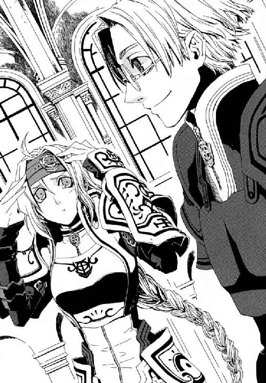
「お姉様！ お許しになって」
白金色の猫っ毛を弾ませて、エレオノールのそばに駆けてくる。子猫のようなリュリュ・メルルは、神音世界の有力者、枢機卿の娘で、伸び盛りの聖騎士だ。
「せっかくお姉様の隊に配属されたのに、肝心のときにいっしょにいられないんですもの」
リュリュは、髪型も同じにしようと伸ばしはじめ、まだ肩にも掛かっていない毛先を、指でもてあそぶ。
団将グレアムが、枢機卿の娘に軽く会釈する。礼拝堂の聖騎士隊は、エレオノールの隊をこの団将が接収したものだ。そして、今回の聖務は十二名で行われる必要があるため、リュリュだけが外された。
「リュリュ。礼拝堂の、信者席の椅子を片づけてくれたのは、あなたでしょう？」
胸に秘めた感慨を知られないよう、別れを惜しむ。ほめられて、置いてけぼりの少女が、満面を喜色に染めた。
「はい！ 掃除をしておきました」
見送りだけのリュリュは知らない。《協会》の本拠が存在する日本まで、聖務につく騎士以外の者が同行を許されるのは特例中の特例だ。団将グレアムは、相手が有力者の娘だろうが規律の乱れを見過ごす人物ではない。
つまりそれほど、今回、この十二人に課せられた使命は過酷で、重大なのだ。
「よくやりました。エレオノール隊リュリュ・メルル。あなたに聖務を申しつけます」
咳払いをして、彼女は首にかけていた、親指の爪ほどしかない小さな楽器を外す。音で奇蹟の力を引き出す神音大系では、正確な神音を誰でも出せるよう、好んで楽器を使う。
「私たちの出立を、この聖具で、祝福してください」
籠手でつまみそこねて、お手玉しそうになる。本当に、信仰と戦闘以外のことにはてんで不器用な我が身が、エレオノールはうらめしい。
「ほんとに、私は不器用ね」
「お姉様、その口癖だけは、おやめになってください。お姉様は、《神の声を聞く者》《世代最強の騎士》《未来の聖騎士将軍》なんですから」
リュリュが、憧れのお姉様をたしなめる。
全員の準備は整った。厳粛な面持ちでグレアムが直剣を抜き放つ。祈りの場の静謐を破って、十一人の騎士が思い思いに、剣を鞘走らせる。おのおのが握った長剣、細剣、そして戦斧の予備の小剣、十二人の十二本が次々に重ねられてゆく。
今が、旅立ちのとき。
団将グレアムが、朗々と戦陣の聖句をとなえる。
「神意、我らが行く手にあり。ただ最後まで生をまっとうすることを誓い、今はひとたび剣を収めん。再び抜くときは、刃を血に汚し、敵を屠るときぞ！」
水晶の音叉を鳴らしたような、澄んだ音色がひとつ、彼らの心と剣に波紋を広げた。
そして騎士たちは、次々に風を切るような音を立て、礼拝堂から消滅してゆく。リュリュが、旅立つ彼らの背に向かって、勢いよく神音を吹き鳴らす。楽器が飾りのない箱形をしているのは、神音大系世界では、心に変化を起こす魔法源であるしるしだ。この笛の神音は、人の胸に、門出にふさわしい澄んだ青空の下を歩くような、晴れやかな気持ちを引き出す。
戦場へ向かうエレオノールは、かわいい後輩に精一杯よい印象を残せるよう、微笑みかける。
「行ってきます。リュリュ」
小箱型の魔笛を振りながら、すこし垂れたやさしい目尻から、リュリュは涙をこぼす。
「ご健勝で、お姉様」
今回の聖務は、儀式のように、多くがきまりごとに定められている。そしてその先にまつのは、別れの運命だ。彼女は、最も古い馴染みであるニコライと視線をかわす。悲壮な覚悟などなく、彼はいつも飄然と運命に立ち向かうから、エレオノールも空を見あげて足を一歩踏み出せた。
嵐の黒雲の下であろうとも、地の底の闇に閉ざされようとも、彼女たち聖騎士は、光を見失いはしない。
†
倉本きずなの父、慈雄は、古びた楽器をいつも首にかけている。親指の爪ほどの、小さな箱形をしたハーモニカみたいなそれを、父はギャラリーに出しもしないし、自分で吹くわけでもない。一度吹き鳴らしているのを聞いたときまで、きずなは、それが楽器であることすら知らなかったのだ。
「お父さん、楽器作るけど、鳴らさないよね」
麻婆豆腐とロールキャベツ、カニ缶のサラダをおかずに夕食をとりながら、きずなはふと疑問に思った。倉本家では、晩ご飯のとき、テレビをつけない。
父が、ロールキャベツをはしで切りながら、遠い目をして返す。
「演奏するのは、苦手なんだ」
「お母さんの笛、ひさしぶりに吹いてほしいな」
父の楽器で音色を聞いたことがあるのは、肌身離さず持っている骨董品みたいな笛ひとつだけだ。
「一回だけ、わたしが、お母さんのこと聞いた日の晩、お父さんそれ吹いていたよね」
まだ小学生のきずなは、夜空に吸いこまれてゆくような澄んだ音に身震いし、確かに一瞬、青白い幻を見た。流れ星の糸で編んだきらきら光る服を着た、きれいな女の人が彼女に笑いかけた。お母さんだと思った。今まで感じたこともないほど、胸が苦しくなって、立っていることすらできず、泣いてしまったから。
「わたしの魔法、お母さんにも見てもらいたいんだ」
あの面影をはっきり思い出して、照れくさくなる。けれど、父は上の空で、彼女の顔など見てはいなかった。
「......お父さん？」
灰色の瞳が、けれどただ切ない眼差しを虚空に向けている。きずななど、ここにいないかのように。まるで他人になったようで、怖くなって声を荒げてしまった。
「お父さん！ ちゃんと聞いてよ」
倉本家に本当は団らんなどなく、ひとりきりだったみたいで、この寒さから抜け出したかった。きずなは自分を戒めて、今日の父はちょっとおかしいんだと思い直す。
「お父さん、疲れてない？ 風邪ひいてたら、お仕事、休んだほうがいいよ」
かいがいしく、彼女は押入から薬箱を出して、体温計を手わたそうとする。けれど、テーブルに食べ残した晩ご飯にもおかずにも目もくれず、立ちあがってしまった。
「ごめん、今日はもう食べられないよ」
言葉は気弱でも、彼の背中はきずなが立ち入れないほど、厳しい。
「家族なんだから、つらかったり苦しかったりしたら、もっとわたしを頼ってよ。わたしだって、もう、お父さんのこと、すこしは助けてあげられるんだからね」
彼女はいつ家族がふり返ってもいいように、元気に笑いかける。子どもだったころ、一瞬の追憶の中で、お母さんがそうしていたみたいに。
「きずなは、本当にやさしいな......」
顔を上向けて鴨居のあたりをにらんだ、父の声が震えていた。そして、彼女が入れない決まりになっている作業場へと、慈雄はそれ以上何も言わずに行ってしまった。
次の日、学校に行っても、きずなは重い引っかかりをかかえたままだった。父は今朝も仕事に行った。体はだいじょうぶか、心配だ。
魔法でえいやっと解決できたらいいけど、いまだ軽いものを押したり引いたりすることしかできない。先週の金曜日に目覚めたばかりの魔法は、まだ彼女をどこか素晴らしい場所へ連れて行ってくれる気配もない。
黒板に、チョークで切りつけるように、今週の月曜日にクラスに来たばかりの転校生が、問題の答えを書いている。長い髪を頭の高い位置で結んだ二本のポニーテールが、勢いよく、そのたびムチのように跳ねる。神和瑞希は、ときどき手を止めて真剣に考えてはいる様子だ。だが、成績がかなり下のほうのきずなが見てすら、こんな時期に編入できたのが、ありえない奇蹟に思える。
無表情な転校生が、その肌と変わらない白さの、チョークを置いた。
「......できた」
まだ若い数学教師が、どこが致命傷かわからない惨殺死体のような解答を前に、泣き笑いの表情を浮かべる。
「神和さんの解答ですが、どうしようっか？ 一番最初から説明し直しますが、いいですかー！」
人間、勉強じゃないとよく言うけれど、本当にダメだと普通ちょっとは卑屈になる。この転校生は、変な開き直りすらない堂々たるバカの地位を、たった五日で二年Ｃ組の中に築いてしまった。
きずなのふたつとなりの、窓際の席に、彼女が戻ってきた。無表情で、無口で、無愛想で、まず成績はクラス最下位。それでも、宮殿の空気でも染みこんだような気品が、何者にも神和瑞希をあなどることを許さない。
「それじゃ、来週月曜日の授業は、ちょっと余計めに進めるから、みんな、ちゃんと予習しとけよ～！」
結局、ひどすぎる答えに赤を入れながら説明するだけで、数学の授業は終わってしまった。
休み時間。あまり偏差値が高いわけでもない公立高校だけに、休みをつぶして勉強する生徒はいない。今も、教室後ろの黒板あたりで、投げたら天井に刺さってしまったダーツを回収しようと、机の上に椅子をのせて、髪を茶髪に染めた男子生徒がその上にのぼっていた。
「やめたほうがいいよ」と、学級委員に選ばれた女子生徒がおろおろしていた。女子はみんな、きずなもふくめてハラハラしながら遠巻きに見ている。
案の定、高いところからひっくり返った。
きずなは、そのバランスが崩れた瞬間、ごく自然に、男子生徒を押して机の上に着地させようとしていた。何度も父の前では魔法を使ってきたのだ。この素晴らしい道具、奇蹟をつかむ夢の道具で、クラスメートを助ければいいと。
外で魔法を使ってはならないという父の言いつけを、初めて破って、手を軽く前に押し出す。力を呼び出す、解放感に酔いしれ。
────瞬間、視界が炎の渦に包まれた。
時間が、一呼吸ほどの間だけ、確かに、世界に焼きついた。男子生徒が、空中で炎をあげて燃えていた。刻が解凍され、魔法はなにひとつ効果をあげず失われる。たわむような音がして椅子が床に落ち、続いて焼けた人間が背中から墜落する。
「い、いや、いやあああっ！」
きずなは顔を覆って、悲鳴をあげていた。ケガをしたかもしれない男子生徒を心配したからではない。世界が裏返ったように、教室が灼熱の牢獄に変わり、クラスメートたちも怪物に変容したからだ。
眼前に広がる、波打つ炎の地獄の底に、溶岩の瞳の魔人たちが、全身を焼かれながら徘徊していた。赤熱した肌から火の粉をほとばしらせ、口からは灼熱の炎を噴き上げながら、なぜか学生服だけは燃えていない。見慣れていたはずの世界が、醜く焼けただれて膿と血をまき散らしていた。
のどが勝手にほとばしらせる叫びを止めることができず、きずなは腕を振り回す。何十人という燃える魔人たちが、今にも熔け落ちそうな赤熱した眼球を、彼女に向けている。
震えて、涙を流すきずなを心配して駆け寄ってきた友だちの顔が、ことごとく、炎をあげていた。そしてあまつさえ、きずなにその燃える手で触れようとさえする。
気がつくと、きずなはさっきまで友だちだったクラスメートたちを、必死で、魔法で押しのけようとしていた。
「いや、いや......」
魔法を解きはなつほど、すべては焼き尽くされ、劫火の津波が彼女へと押し寄せてくる。心配しているような顔で、親切にも手助けしてくれているような顔で、この悪魔たちは、必死の努力でつむごうとしている奇蹟を片っ端から消去してゆくのだ。滅びゆく魔法の断末魔が、炎になって、少女の全身にまでからみつく。
空を飛べなくても、きずなは、ここが何だってできる自由な雲の上だと、知っていた。
世界は完全で、欠け落ちたものなど何もないと思っていた。
なのに助けてくれるはずの奇蹟が、今、目の前で、なすすべもなく燃えていた。
彼女は、地獄にたったひとり突き落とされたような、底なしの恐怖にのたうつ。
「もうやめて！ わたしは、あなたたちと......」
ちがう、と叫びかけて、心がまるはだかになった恥ずかしさに、やさしい少女はうずくまった。それが魔法使いたちの心に巣くう、超人の驕りだと、彼女は知らない。だから、奇蹟の力のふるい手たちは、この世界を《地獄》とさげすみ、《悪鬼》を恐れるのだ。
なおも激しく燃えさかる火の海を、たったひとり、かきわけて人間がやってきた。涼やかな無表情を決して崩さない、神和瑞希だった。
「だいじょうぶ。......こわがらない、私を、......見て」
きずなは、この転校生だけは燃えないのを、何度も指で整った鼻筋や赤みの強い唇、頰のやわらかさをなぞって確かめる。
「だいじょうぶ......、私、燃えないから」
訥々としゃべるその声に胸をたたかれ、最後の自制心は決壊する。赤ん坊のように泣きじゃくり、何もかも受け入れてくれそうな瑞希の胸へすがりついてしまったのだ。
そしてきずなは、神和瑞希に付き添われて、保健室のベッドに横たわっていた。仰向けのまま、彼女はたくさんの穴が開いた天井の板材と、窓からのぞく薄曇りの空を見ていた。
もう、何も燃えていない。
ただそれだけのことに、安堵する。あの火の海にのまれたのに、体には火傷ひとつなかった。炎につつまれたのは、魔法だけだ。
「みんなに、あやまらなきゃ」
まだ小刻みに、体が震えている。きっと、彼女は真っ青な顔をしている。覚えていないけれど、たぶんクラスのみんなに失礼なことをした。
体を起こして、きずなははじめて、すぐ脇に、気配もなくずっと瑞希が見守っていてくれたと知った。立ち上がって礼を言おうとしたそのとき、つくりもののように滑らかなその手が、きずなの肩を力強くおさえこんだ。
「貴方は、魔法使い。......その宿縁から、逃げられない」
魔法を使うのがこわくなった弱さを見透かされて、なのに奇蹟を捨てると思うと喪失感に耐えられず、きずなは顔を手で覆った。
「何から逃げればいいのかな？ わたしは何なのかな？ わたし、わからないよ」
自分の手をじっと見つめる。特別な取り柄もないきずなは、奇妙な楽器をつくる父が自慢で、父娘ふたり、ごくふつうに暮らしてきた。一週間前まで、魔法なんか夢物語だった。もしこの魔法を使うのをやめたって、元に戻るだけだ。なのに、ここが寒くて怖い牢獄で、彼女は永遠に閉じこめられたような、被害者意識が心臓にまとわりついて離れない。飛ぶことを覚えた鳥は、翼を燃やされたら、一体どう生きればいいのだろう？
「魔法使いは、ずっと昔から、この世界に来てた。......だから、血が混じった子孫には、ときどき魔法が見えたり、使えたりする人が、いる。貴方も、......その、ひとり」
瑞希が彼女の耳元に、かすれた声で告げる。
「貴方の魔法は、再演大系。......六十年前、使い手が途絶えて、滅亡したはずの魔術」
†
そしていつものことだが、六年一組の教室は、今日も派手に炎上していた。
「あやまってください！ もっとしっかりあやまってください！」
学級委員長の寒川紀子は、いつもは冷静な優等生だが、ひとたび点火すると止まらない。しかしこのクラスには、涙目で怒る寒川に、歪んだ興奮を覚える変態少女がいるのだ。
鴉木メイゼルが、机に肘をついたその両手に、頰を染めて微笑む顔をのせ、うっとりしている。
「寒川さんの涙目って、すっごいかわいいんだけど、あたし、どうしたらいいのかしら」
「反省すればいいと思います！」
寒川が、きっとメイゼルをにらみつける。眼鏡の奥で、学級委員長の目は確かに動揺していた。
クラスメートはすでに、泣き顔や悔しい顔が大好きなメイゼルの嗜虐癖に、関わらないことを学習した。未知の世界に引きずりこまれるのは怖いらしい。
「そろそろ、鴉木が掃除に残らず帰ったことについて、先生は意見を決めたほうがいいと思うな」
ホームルームのたびどうしてこんな惨状になるのか、ニセ教師は脱力して黒板にもたれかかりそうになる。そして、ＰＴＡ会議に出席中の担任の祖師堂先生にまかされている手前、気合いを入れ直す。
「でも、鴉木さんは反省してません！」
「急な用事が入ったの。早くつかまえないと、すぐ逃げるのよ」
言い訳まるだしの答えで、寒川が納得するはずがない。
「だから、いつもいつも用事って、何なんですか！」
メイゼルが放課後に小学校をすぐ飛び出すのは、日中学校に拘束されていて、刻印魔導師としてはたらく時間が、実質夕方しかないからだ。彼女は、校則には従うし、悪鬼と友だち付き合いをしようと努力している。《地獄》に来た魔法使いとしては奇蹟的な順応だ。専任係官としては大目に見てやりたいが、それでもここは学校で、教室での仁は教師なのだ。
「いい加減にしろ！ 鴉木！ 寒川！ ふたりとも、放課後職員室に来なさい」
教室を見わたすと、前に音楽室でやっていたように、男子生徒が身振りでこっそり合図を出し合って会話していた。この流行は、まだ六年一組でおとろえをみせない。
「あと、兵頭、落合、井出、森、柳田、御子柴、吉本、津島、おまえらも全員、職員室だ」
人狩りの専門家である彼は、目の鋭さと記憶力では人後に落ちない。課題はホームルームごときで学級の約三分の一を呼び出す羽目になる、指導力だけだ。
「せんせー、ぜんっぜん、魔法使いが、この世界で暮らすってことがわかってない！」
その晩、仁は案の定、学校から帰ってきたメイゼルに、野菜炒めのキャベツをフォークで突き刺しながら説教された。寒川の前での余裕の表情と、彼女自身の苦労を聞いてもらいたい気持ちは、また別らしい。
「そーだ。全部、こいつが悪いっ」
ビール缶を片手に、この家のあるじ、十崎京香が話にのっかってきた。これは《協会》も一目置く魔導師公館の事務官、十崎京香とはたぶん同姓同名の別人だ。幼なじみの仁ですら、この変わりようは詐欺だと思う。
「もう飲むな」
呆れて、上司の手からビールをとりあげた。
十崎家にメイゼルがいるのは、京香が、保護者として身元を引き受け、一緒に暮らしているせいだ。刻印魔導師は原則的に全員、官舎に押しこまれるのだが、《公館》の職員たちは、子どもをひとり、犯罪者の中に放置できなかった。命のやりとりを職務にしているからこそ、偽善だとしても、子どもは守るべきものだと思いたかった。だから、刻印魔導師を小学校に通わせるなどという、前例のない選択に出たのだ。
「メイゼルちゃんも、何もかもこいつが悪いって、思うよねー」
「せんせは、ちゃんとお仕事してるわ。こないだなんか、すっごく頼もしかったもの......。『神和、メイゼルの面倒は俺が見る！』って」
先日の、公館の応接室で神和瑞希とやり合ったときのことだ。メイゼルが彼の顔を見あげて、うっとりしている。
「面倒見てね、せんせ」
たぶん、彼女と仁が考える〝面倒見る〟の意味は、根本的にズレている。
「裏切られたー」
京香は両手をあげてバンザイし、「小学生でも女なのね」と、女の友情のはかなさをぶちぶちと愚痴りはじめる。
掘りごたつの下で、メイゼルのつま先が合図するように足をけってきた。ちょっと恥ずかしそうに、あどけない頰を紅潮させ、彼へ向かって指を一本立てる。
「せんせにだけ、あたしの面倒の見方、特別に教えたげる。あたしが弱くなってるときは、せんせが、いっぱいなぐさめるのよ」
「のろけられたー」
酒か、こっ恥ずかしさのどちらかで顔の赤い京香が、大げさにがっくり落ちこんだフリをする。泣きまねをしながら、はしで焼き魚をつまんでちびちび食べては、ぐびぐび彼から取り返したビールを飲んでいる。
仁はメイゼルの前に、おかずを寄せた。
「つきあってたら遅くなるから、早く食べような」
十崎家の料理は、いかに手を抜くかに重点が置かれている。たとえば今、テーブルには六品ものおかずが並んでいるが、半分は冷凍食品で、切るだけの漬け物と焼いただけの魚が脇を固め、実はメインは野菜炒め。調理時間は全部で三十分だ。
「こいつ、先生になって、つまんない男になったー」
「いったいどこの誰が、俺をニセ教師にしてくれやがりましたか、この酔っぱらいは」
「はい、私でーす！」
そして、メイゼルが晩ご飯を食べ終えて、お風呂に入りに行くと、ようやく京香も静かになった。酔いつぶれたのではない。もう二ヶ月も一緒にいるのに、今でも少女との同居に慣れなくて、アルコールを入れずには会話もできないのだ。
「メイゼルちゃん、学校で、どう？」
京香が、公館の事務官でもさっきまでの酔っぱらいでもなく、仁にだけはなじみ深い、涙もろい横顔に戻る。思い返せば、家が近所だった彼と、十崎家のつきあいは、もう二十年だ。この同じ居間で、京香の誕生会にも何度も出たし、貧しかった仁たち兄妹がこの掘りごたつでご飯を食べさせてもらったことも数知れない。
「よくやってる。あのクラスの子どもたちくらい、魔法使いと、この世界の人間が仲良くやれたら、俺たちの仕事も半分はなくなるよ」
「そうなんだ。メイゼルちゃん、学校で、楽しそうなんだ」
慈愛深く彼を包んできてくれた京香が、小さな魔女に冷たくなれるはずがない。それでも現実として、《刻印魔導師》の半数は三年以内に死ぬし、百人倒しきった者など歴史上ひとりもいない。京香が、苦悩を彼に見られまいと、かわいた手で顔を洗う。
「あの子は、死なせない。俺が、守るよ」
つらい顔も、うれしい顔も、お互い見せ合った幼なじみは、気休めになりそうな言葉のかわりに、強く彼の手をにぎった。
「忘れないで。仁が死んだら、意味ないのよ」
「なあ、俺とメイゼルは、どう見える？」
一歳年上の京香は、仁にとって、お姉ちゃんのような存在だった。そして、今はもういない──。
過去に巻き戻りかけた時間を、無味乾燥な呼び出し音で、十崎京香の携帯電話が押しとどめた。
「十崎京香。現在、非番です。かまわないから、用件を話しなさい」
事務官の鉄の眼差しに戻った彼女へ答えた、その報告が、十崎家の居間を凍りつかせた。
〈専任係官、神和瑞希。......現在、奥多摩、区画一三三〇八─Ｂ23。......《染血公主》ジェルヴェーヌを、捕捉。標的は、聖騎士六名と交戦中。うち一名は、エレオノール・ナガン。......これより通信切断、割りこみます〉
†
異世界でも、夜空にはひとつの、月が掛かっているという。
すくなくとも《地獄》に到来している魔法使いたちの世界では、天体などの条件はほぼ同一であると言われる。それも神の恩寵なのか、動植物も、魔導師たちが人為的に生成したもの以外はほぼ変わらない。
だから奥多摩の、高く伸びる柱のような針葉樹の森は、魔法使いたちにとっても奇異な光景ではない。
「姫ぃさま、お早く！」
逃げる者は、索引型、宣名大系の魔導師ラグランツ。そして、彼の後ろには、年の頃は二十代前半か。深い森の木の根が這う地面を踏む、紗織りの振袖も艶やかな女性がひとり。まなじりに朱を差した目を、湿った土の匂いを楽しむように細め、仕草は悠然。《協会》出奔から二年間の地獄暮らしで、不思議と和服が肌になじんでいた。
鴉木メイゼルと銀座の地下駐車場で戦ったときすら見せなかったほど顔面を蒼白にして、大柄な男が魔女を差し招く。
あいにくの黒雲で、今夜の空に月は見えない。
「せっかくやったら、山やのうて、海のほうがよかったなあ」
紅を引いた情熱的な唇が、残念そうにつぶやいた。聞いた男は泥だらけの顔を、焦燥で眉も口もへの字だらけにする。
「姫ぃさま、聖騎士どもが参ります」
よく見れば、彼の太い左腕はずたずたに切り裂かれて、血の滴を下ばえに垂らし続けている。
けれど暗闇の姫君は、六月のなまぬるい風を嘲笑う。
「『参ります』とは、ちがうわいな。もう、来おったよ」
ふたりを、鶴翼の半弧の中心に捕らえるように、白銀の鎧に身を固めた騎士たちが取り囲んでいた。いかなる細工か、甲冑は、神音魔術のさまたげにならないよう、音をほとんど立てない。
「──総員、剣を聖別してください」
追跡隊を指揮する上級聖騎士エレオノール・ナガンが、指示を出す。騎士たちが、籠手にはめた指輪を、武器に彫られたくさび形の紋に押し当て、一気に走らせる。神音魔術で、魔法は音を伝達する媒質上に発現する。刃鉄を伝わらば、神音から引き出された奇蹟は、直接、剣刃を魔刃に変えるのだ。
キィンと澄んだ反響を立てて、騎士剣がことごとく、闇の森に煌々と白い虹を放ち始める。
「えらい派手な提灯やな。せっかくの夜が台無しや」
花火のような青白さの光を放つ五本の剣、一本の戦斧にあぶられ、白地の和服の女が、なまめかしく衿を撫でる。返す少女聖騎士の声は、この瞬間に殺し合いが始まってもおかしくない今、祈りの章句をとなえるかのように、おだやかだ。
「あなたの奪った《鍵》を、わたしてください」
「いやや、いうたら妾は、その物騒な剣でなます切りかえ？」
「その通りです。──《染血公主》ジェルヴェーヌ」
決して畏れることのない傲岸不遜な魂、人を人と思わない業深い自由さ。それが《協会》調整官ベルニッチに一代の女傑と称された、ジェルヴェーヌ・ロッソという魔導師だ。
「姫ぃさま！ ここは私めが盾に」
従者ラグランツが、恐怖をかき消さんと咆哮をあげ、姫君の前に躍り出る。それが、交渉の余地などなかったふたつの魔術の、戦闘の合図となった。
宣名大系と神音大系は、同じ索引型。これら異世界で、人は、あるものとあるものが同じである根拠──真実有たる形相を観測できる。真実有を観測できるかたちは、そのまま魔法だ。たとえば神音大系では《索引》を音として聞くから、そのとおり音を発すれば、魔法が発動する。
エレオノールが口笛を吹くように口をすぼめた次の瞬間、引き出された奇蹟が衝撃波となって、ボロ屑のように忠勤の従者の胸筋を吹き飛ばし、あばら骨をまとめてへし折った。
《索引》が術者自身の中に、抽象的なイメージとして浮かぶ宣名大系では、特定の像を想起することが奇蹟につながる。内心の問題で現実には存在しない魔術イメージは、橋渡したる《貪欲の化身》で対象を捕獲することで、世界ににじむ。
「汝、......エレオノール・ナガンを、......名付けて、......『剣』と定義する」
ひゅうひゅうと肺から空気が抜けた、瀕死のラグランツの定義にこたえて、剣をかたどった幾十本もの言霊が、敵を刺し貫き、つなぎとめる。宣名魔導師は、名づけで主従を確認し、今や共有物である魔法を《対象》だけに流しこむ。
「宣名大系の魔術で、私は縛れませんよ」
鎧乙女の姿が一呼吸ほどの間、揺らめき、言霊の剣はすべて砕け散った。魔法で敵を倒す、とっかかりすらなかったのだ。
「対象指定で一手間必要な〝亜〟索引型魔術で、直接、世界から奇蹟を引き出せる六名もの聖騎士と、どう戦うつもりです？ ジェルヴェーヌ」
力尽き、膝から森の斜面に崩れ落ちた男と、指一本動かさなかった少女の、それが残酷な実力差だった。
だが、手下の命懸けの忠義を、蚊がつぶれた程度の感慨しかふくまない一言で、姫君は評した。
「あんサン、死に方も地味やなあ」
彼女を取り囲む聖騎士たちが、傲慢すぎる物言いに、さすがに鼻白む。
「もうちょっとだけ、妾のために働きや」
ジェルヴェーヌが手を叩く音を起爆の合図に、従者の体が内側から爆散した。
飛び散った赤いしぶきが、血の霧が、この瞬間に絶命したラグランツから噴きあげ、奥多摩の森に朱の華をひらかせる。金魚柄の風雅な振袖の両腕が、横に払われた一拍子に、泰然たるエレオノールがはじめて悲鳴をあげた。
「急いで！ 私の後ろへ！」
「従者ラグランツの血を名づけて《火花》と定義、保持済み概念《緋牡丹》と加算。......弾けぃ！」
硝化甘油に血液が変成された、今や体重九十キロのラグランツの身体は、約七リットルもの火薬をふくんだ即席爆薬だ。小さな火花を起点に、爆発し大地を波打たせた。膨大な体積にふくれあがった高温ガスが、火薬密度の散らばりから予測もつかない爆轟波をまき散らし、あらゆる物を嚙み砕く。荒れ狂う巨龍さながら、もうもうたる白煙と土煙をまきあげる。
奥多摩の山間を揺るがした巨大な爆発は、悪鬼に観測されて人目を集め、魔法が消去され戦闘はうやむやになる──はずだった。
土煙が晴れたとき、染血公主は驚愕で口を半開きにし、吐息をつくことになる。
輝く剣を、両手で森の腐葉土に力一杯に突き立て、一騎の勇者が立ち塞がっていたからだ。
「......〝あれ〟を、押さえこみやったか」
斜面の杉をなぎ倒したはずの破壊力を、まっ正面から受け止められては、さすがの魔女も感嘆するよりない。死体を中心に土砂が吹き飛ばされた中、エレオノールを頂点にした三角形の範囲だけが無傷だった。少女はただ爆破を凌ぎきったのみならず、背後の部下たちを守るため、刹那の判断であえてニトログリセリンの爆心地へ一歩踏みこんだのだ。
「よくも......」
やさしい乙女の表情に戻って、エレオノールは、失われた生命ではなく裏切られた信義のため、涙もなく哮る。
「......よくも、仲間を、そのように扱えたものですね！」
焦げた土の匂いと肉の焼けた異臭は、夜風にべったりなすりつけられても、死体はない。血管中の血液まで火薬化され魔法で引火させられたのだ、肉片ひとつ残るはずがない。
従者を切り捨てひとり無傷の《染血公主》が、臭気を嫌って白檀の扇子を広げた。
「ようやる。《地獄》で死ぬのは、怖ぁないのんか？ どこの神サンの手ぇも届かんよって、死人の魂は、永遠に地獄に繫がれてしまうで」
エレオノールは、蒼白な顔色で脂汗が止まらない。魔法による消耗ではない。強い血管拡張作用をもつ火薬）を、皮膚や粘膜から大量に吸収したせいで、はげしい血圧低下におそわれているのだ。
「聖騎士とは、神からいただいた神意の種を運ぶ、一羽の鳥。たとえ私が荒野で朽ち果てようと、そこには新たな花が芽吹きます」
「妾は、あんサンみたい女、一番キライや。そないつまらん女には、殺されたらへん」
異臭がくすぶる中、《染血公主》は無邪気な悪意をこめて唇をつり上げる。
「命のやりとりのときでも、自分の言葉でしゃべれん人形なんか、《悪鬼》以下や」
「言葉がきたないですよ、育ちが知れます」
眼鏡のレンズも泥まみれで、歯を食いしばりながら、上級騎士ニコライが剣をひっさげ少女の前に出る。ジェルヴェーヌが、面白いものを見たとばかりに目を細めた。
「熱いなあ、でも、報われへんなあ」
──騎士たちの目はこのとき、女魔導師にだけしか向いていなかった。
「エレオノール隊。総員、概念魔弾、射撃式《残照》ッ！」
ニコライのテノールに応じて、少女を除いた全員が、籠手の指輪を、腕鎧にほどこされた、くさび型文字列の浮き彫りに押し当てる。このくさびを指輪でこすることで、オルゴールが歯と鍵盤で音を鳴らすように、彼らは魔法の神音を奏でる。神音魔導師たちは、戦闘中とっさに奇蹟の索引を引けるよう、鎧や武器に楽器を仕込むのだ。
「いかんなあ、あんサンらが戦うんは、妾とちがう。......ここがどこやか、忘れてへんか？」
南風が、梅雨の雨雲をほんのわずか押し広げる。大気中の湿気でぼやけた満月が、天空から魔法使いたちを睥睨する。いや、黄金の円盤を背負って、巫女装束の少女が、重さから解きはなたれたように悠然と黒雲に腰かけていた。
「......《染血公主》ジェルヴェーヌ、......およびエレオノール・ナガン以下聖騎士......六名、......捕捉」
仙女はボートから海へダイビングでもするように、体を後ろへ倒して空中へ身を投げる。戦場へと、迷いのない一直線の軌道で、落下してゆく。頭の両側でくくられた長い黒髪が、天使の黒翼さながら風圧でばさりと広がって波打つ。
魔導師公館の専任係官、神和瑞希は、魔法を消去してしまう悪鬼ではない。
カオティック・ファクター。そう、瑞希のふたつ名《魔獣使い》とは、地獄だけに存在する、魔力型にも索引型にも分類できない魔法のひとつを指す。悪鬼を観測者とするこの世界に、本来いないはずの例外中の例外──彼女は《地獄の魔法使い》。
†
「《再演大系》、か......」
倉本きずなの魔法を、あの転校生、神和瑞希はそう呼んだ。目覚めたばかりの魔女はまだ知らない。すべての奇蹟は、魔導師が世界を観測することそのものが基盤だ。《魔力》型の魔導師たちは、世界秩序の乱れを鋭敏に感知せずにいられない。そして《索引》型の魔導師たちにとって、生きるとは、まるだしになった世界の索引と直面することだ。世界に生き、見る聞く感じる限り、魔法使いは決して魔法から逃げられない。
台所の水道の蛇口を開きっぱなしにしたまま、きずなはため息をつく。あれ以来、怖くて家でも魔法を使っていない。世界が燃える《地獄》みたいだったなんて、心配させそうだから父にも相談できない。
「あ、ダメだ。もうお父さん帰ってきちゃう」
慌てて、といであるお米と水を入れた内釜を、炊飯ジャーへと持ってゆく。きずなを助け、再演大系の名を教えた神和瑞希が今、奥多摩の山中で戦っていることなど、知るよしもない。
運命がドアをたたいたのは、ご飯が炊きあがって三十分ほどしたときだった。
きずなの父、慈雄が、乱暴にアパートの扉をひらいた。そして靴も脱がずに家にあがると、彼女の手首をつかまえたのだ。
「お父さんと家を出るんだ、きずな」
──あのとき、わたしがもっとお父さんの言うこと、素直に聞いていたら、あのときをやり直せたら、こんなふうにならなかった？
今、きずなの眼前で、青い二トントラックが横倒しになって、むなしく車輪を空転させている。裏道を走っているとき、親娘をのせたトラックの片輪が突然持ちあがり、そのままひっくり返ったのだ。
──わたしが取り戻したい世界は、ここじゃない。
過去をつかまえようと、きずなは戻れたらもっとうまくやり直せるその〝時間の織り目〟へ、泣きじゃくる子どものようにすがりつく。
けれど、きずなに叶うのは、《世界》という目もくらむほど巨大な本の、ページを泳ぐことだけだ。いつもとは別人みたいな殺気立った父に、押しこまれるようにトラックの助手席にのぼらされ、多摩川の上流へと車は走り、そして──。
記憶にしては鮮明すぎた像が、はるか広い空白へと退潮しはじめた。目覚めつつある意識が夢を手放すときのように、感覚の網目の隙間から、たいせつなものをボトボトこぼしてしまう。
過去を幻視した魔法は、奇蹟をつかめないまま焦点を失った。そしてきずなは現実に放り出され、暗闇の底にひざまずいたまま、呆然と、広げた手を見ていた。世界のすべてを記述した一冊の《歴史書》を読み返すように、過去を覗いていた。本の中では、きずな自身が今いる苦痛の現在すら、ただの一ページのようで。
「......これが、わたしの魔法」
目覚めたばかりの魔女は、けれど建設予定の錆びた札が立つ空き地に横転した、父のトラックをどうしようもない。そして、街灯もまばらな道路に突如現れ、倉本親娘の前の立ち塞がった、物語から現れたような六人の騎士のことも。
「貴卿が、このようなところにおられるとは、奇妙な巡り合わせだ」
父と同年代の、荒々しい直線に引き締まった顔の中年男性が、深く豊かな声を響かせる。雨雲に覆われて星すらない夜闇の下、抜き身の剣を右手ににぎって。
そしてきずなを守って騎士たちの前に立ちはだかる、父、倉本慈雄という男性の背中は、あまりにも厳しく。
先頭の騎士の背後で、耳障りな音が重奏で響いた。横一列に並んだ五人の騎士の剣が、白い光を放ちはじめる。
「再演大系の娘を、我ら神聖騎士団に、おわたしいただきたい」
「それはできない。きずなは大切な、私の娘だ」
そう言った慈雄への返礼のように、ただ一本、光をまとっていなかった鎧の騎士、グレアム・ヴィエンの剣が、音もなく紫色の炎を波打たせ、はわせた。
「《バベル》を、再演するのです。その意味は、貴卿にもおわかりのはずだ」
「三千年前のバベルの歴史に我々が学んだのは、神意に払う犠牲の理不尽さだと思っていたが」
「立ちふさがるなら、剣にて決するが聖騎士の道。......かつて貴卿に手ほどきを受けた聖霊剣、今では達人のひとりに数えられております」
何が起こっているかはわからなくても、父が殺される、その予感に、悲鳴すら凍りついた。きずなが見わたしても、周囲にはもはや人家すら見あたらない。誰も助けに来てはくれない。
夜が魔法の時間なのは、視界がわるく、悪鬼に観測されにくいからだ。それは今のきずなにとっては、目撃されて警察を呼んでもらえる幸運も望めないということだ。
「お父さん！ だめ、だめ、だめ......」
少女の手に、雫が落ちる。ぽつり、ぽつりと、冷たい涙のように、雨が降り始めた。
まるで、これがお別れであるかのように、ぎこちなく首をひねって彼女を見おろした父が、やさしく告げた。
「きずなが、お父さんの娘でいてくれて、よかったよ」
重い鎧に全身を固めた聖騎士たちが、油断なく剣をかまえて、父娘を取り囲むように移動し始める。騎士たちの足取りは、全身を金属鎧でおおっているにもかかわらず、軽い。擬似魔法生物化されたこの鎧は、身を護るために着ける重荷などではない。内側から操縦する、身振りに忠実に追従する外骨格、騎士たちが生身ではあり得ない怪力を発揮するための強化具だ。
きずなは、立ち上がることも忘れて、四つんばいで父の足にすがりつこうとする。
「待って！ わたしなら、いいから。そんなことしなくていいから！」
だが、足もとに転がっていた鉄パイプを拾い上げると、倉本慈雄は、ズボンのポケットから出した金属製の小さなカスタネットのような楽器を、それに叩きつける。たわむような余韻を響かせて、パイプが薄ぼんやりした光に包まれた。同時に、轟と激しい音をたてて、もう夏だというのに猛烈な冷気が押し寄せてきた。水分が凍結してアスファルトの道路に割れるような異音をあげて霜がおり、何もかもがうっすらと白く化粧する。ひざまずいたままのきずなの視界が真っ白な霧でふさがれ、吐く息も白く凍った。
濃いもやの中、慈雄がくるりと軽くそれを回す。数秒前までただの鉄パイプだったものが、湯気を立てて赤熱する一本の細身の剣へと変わっていた。倉本慈雄は今、父であり、騎士だった。
「神聖騎士団、元団将、《慈悲深き剣》マルク・フェルゼー。グレアム君たちにはここで倒れてもらう」
魔術でも、普通は因果関係の順序を守って、現象を起こして〝結果〟を手に入れる。だが、高位魔導には、〝結果〟を対象に無理やりかぶせ、自然の横面を張り倒してそこへ到達する現象を起こさせる《概念魔術》という技法が存在する。鉄パイプを一瞬で剣に鍛え直す熱が必要だったから、概念魔術の要求を満たすため、自然が周囲の気温を零下まで下げたのだ。
「逃げなさい、きずな！」
朦々たる白い夜霧が、今度は幻のように晴れてゆく。打ちあがった日本刀を水につけて焼きを入れるような、ジュウと水分の爆ぜる破裂音が響き、今度は刀身を冷やすため夜のほうが沸騰しはじめたのだ。
それは、まぎれもなく魔法だった。それも、彼女がよろこんでいたささやかなそれなど比較にもならない高度な。教室のクラスメートたちがきずなの魔法を消去したのに、家では大丈夫だったのはなぜだ？ 父、倉本慈雄も、魔法使いだったからだ。
父の指が、ポケットから、涙滴型のおもりがついた細い鎖を取り出し、それを回し始める。ひゅうひゅうと、子どものオモチャのような楽器が、かん高い笛のような音を立てはじめた。軽く、父娘の背後に回り込んでいた騎士たちへと、それを投げる。
「受けるな！ よけろ！」
団将グレアムの大喝に、余裕で打ち払おうとしていた騎士が、血相を変えて地面に身を投げ出す。
次の瞬間、神音に達した笛の音が、世界から力を引き出し巨大な暴風の槍となる。その余波で、鎧と肉体でゆうに重量百キロを超えた聖騎士が、さらに二人、膝をつく。きずなは、父の視線に追い立てられるように、立ち上がり、わけもわからないまま走り出す。
魔法とは、望みをかなえる、ただ素晴らしい翼だと思っていた。だが少女は今、出会った。人間を傷つけ殺す武器としての魔法に。
ふり返ると、雨の中、左右から切りつけられる光剣を、トラックの運転手だったはずの父が見事に受け流している。
銀座のギャラリーに置かせてもらっていた、趣味で作っていると思っていた奇妙な楽器が、また鎧の騎士をオモチャのように弾き飛ばした。
ひとりの聖騎士が、籠手にはめていた指輪を、鎧の肩口にほどこされたくさび型の浮き彫りに押し当てる。降り注ぐ雨滴を震わせて、オルゴールの曲のようなやさしい旋律が夜という固い氷を溶かす。
体に雨をすり抜けさせる、透明な鷹が、ひらりと舞い上がり父へと向かって突進した。
「これは、私のころにはなかった神音だな」
慈雄が、バイオリンの弓を構えるような型に細剣のにぎりかたを変えた。長い髪を後頭部でしばっていたひもを解き、一方の端を奥歯で嚙んで固定し、もう一端をしっかりとカップ状の反響器に固定する。そして、わずか五秒で張った一本の即席弦へと、調律すらなしに剣の背を押し当てた。
《慈悲深き剣》がゆるやかに、わずかな雑味のある、弦楽の音色を奏でる。複雑な神音を擬似動作させるとき、神音魔導師は、神音を並べて概念魔術を組み合わせて難度を下げる。神音の旋律が、奏者を守る防御殻を構築した。魔法の鷹が一度、二度、三度、透明な壁へ体当たりして、寿命がつきたように萎れて、かき消える。
今度は、慈雄が弦を弾いてで、さっきの聖騎士とまったく同じ旋律を演奏する。騎士が生成したより一回り大きな魔弾の鷹が、虚空から現出した。
「なるほど、こんなものか」
父は初聴で神音魔術を真似た。魔法の壁で鷹を受け止めるも次の一手が出ず、鎧の騎士たちが動きを止める。きずなも、皮膚が粟立つ誇らしさに身を震わせた。彼女の父がこともなげにやってのけたのは、天才にのみ許された領域の技なのだ。
戦意を見失った隙を見逃さず、慈雄が手近な騎士たちから魔剣を二本、刃を叩かないよう器用に弾き飛ばす。武器を取り落とした死に体の敵を、しかし慈雄は切り倒さず、かぶとをかぶらない頰に、強烈な肘打ちをたたきこむ。歯を折られた男たちが、雨に濡れた道路で踏ん張り損ねて、音高く鎧を鳴らして転倒する。
マルク・フェルゼーと呼ばれた父、倉本慈雄は、強い。
だが、配下の騎士たちのごくわずかに鈍った太刀筋を、半歩引いた踏みこみを、団将グレアムは叱咤せず、支えてやるのだ。
「今、我らの前にあるのは、かつて《神の声を聞く者》に数えられたほどの男。胸を借りるつもりで打ちかかれ、天上の語りぐさだ！」
グレアム隊の聖騎士たちが顔を見合わせる。顔を、単純に強者へおのれを試す興奮にほころばせ、もう一度視線をあげ、しっかりと敵をとらえる。同じ雨に打たれるその団将と、少女の、視線があった。人を愛して慈悲深く、厳しい、こんな目をした人物が、刃物を持ってきずなたちを襲っている。
殺気すら感じさせず、ごく自然に振り抜かれたグレアムの神速の斬撃を、慈雄がすんでのところで食い止めた。
「たまらないな。これが、グレアム君の二十年か」
一歩退いて、打ち返した光を縫い止めるような刺突は、しかし、ゆらめく紫の炎に難なく受け止められる。
「二十年も実戦から遠のくと、貴卿の腕は、見る影もなく鈍っていますな」
流れるような踏みこみにのせて、団将が横払いに慈雄の胴をなごうとする。落雷のような激しい、シンバルの一打ちに似た音が、びりびりと雨空を震わせた。そして、刃の軌跡が空中に留められたように、紫光が残ったままだ。
グレアム・ヴィエンが軽く、十字を切るように振り、刃を立てて長剣を構える。フルートのような風にやさしく溶ける音が、透明な指で湿った夜風をくすぐる。紫の炎の正体は、振られる速度で音を変える、神音魔術で構成された楽器だ。剣筋の後ろに鮮やかな光のリボンを曳きながら、炎は一本で一隊の楽団のように、千変万化の音色を陳列する。
「────」
グレアムの炎の剣が構えをとったその空気にのまれて、誰もが言葉を失った。
団将グレアムが炎の指揮棒を振り下ろした。一瞬、人を超えたものがそこに現出したかのように、意識を引きこまれた。本当に美しい音には、人を畏怖させる力がある。そして、神音には、世界を畏怖させる力がある。
拍節が世界の鼓動を規定し、神音はうねりつつ正確な高さと音色を守って、一段また一段、奇蹟へ至る階段を高くのばしてゆく。グレアムの音楽に背中を押されて、部下の聖騎士たちが白光の魔剣で激しく打ちかかる。完全に連携をとった五人が相手では、さすがの慈雄も受け流すだけで精一杯だ。
剣に迷いなく、体さばき、運足、すべてが人為を超えて神意にかなう、荘厳。背後に神の姿を背負うようなグレアムの雄大な剣舞は、まったく似てなどいないはずなのに、指揮棒を振る指揮者を思わせた。神音が確実に、精密な折り重なりを遥か天へと届かんばかりに積みあげてゆき、世界の背後から力が、決壊寸前のダムさながらふくれあがる。
そして、自然というオーケストラが、奇蹟を顕現させる。
彼女たちを叩いていた雨は、いつの間にか横殴りの土砂降りになっていた。ちがう、今、きずなが浴びているものは、梅雨空から降る透明の水滴が半分、残りの半分は、地面に落ちず空中に浮かんで飛び回っている。
それは風をともなわない、雨滴だけが巨大な意志に操られるように踊り狂う、嵐だ。
「お父さん！ お父さん！」
目を開けていることもできなくなって、きずなは手で顔を守りながら、大声をあげる。
返事は、ない。
聖霊剣の達人は、剣で、神意と現実をつなぐ。だからこそ神と世界の仲介者たる、聖霊の名が冠されたのだ。
「総員、散れぃ！」
指揮者グレアムの声が響いた次の瞬間、六月の夜が凝縮し氷結し、そして割れた。
そして残ったものは、夏の光景であるとは幻にも思えない、氷の世界。道路は氷河となり、かたちあるものはすべて霜をかぶる。きずなの周囲、直径一メートルの範囲だけが、氷海に浮かぶ島のように夏のままだった。ひんやりとした冷気が、尻もちをついた腰から心臓まで一気にのぼってくる。
「い、いやあああああああっ！」
きずなの時間が、凍りつく。
彼女の眼前で、剣を手にした父が、縦横一メートル半、高さ二メートルほどもある直方体の氷柱に、封じこめられていたからだ。
グレアムが籠手の指輪を、剣の血溝に浮き彫りにされたくさびへと走らせる。紫の炎は左手の籠手に移動し、繊細な飾りをほどこされた刃は、白い光を放ちはじめた。
「お覚悟を」
透明な氷の棺桶に閉じこめられた父は、ぴくりとも動かない。息をしている様子もない。はやく出してあげないと、死んでしまう。もうとっくに生命を失っている可能性を、頭から追い出し、やさしい少女は握った両こぶしを氷結した道路につく。
「お父さん！ やめて、お父さんを助けて。なんでもしますから、なんでもしますから」
──魔法は、奇蹟へととどく、どこまでも昇ってゆける高い階段だったはずだった。
──だから少女は、どう望みをかなえられるとも知れない魔法を、過去を展開させるだけの魔法に頼ろうとする。発動すらしない。
そして、救いを求めて月光も星もない黒雲の空を見あげた、その瞳に映ったものは、甘くも塩辛くもない百億の雨滴と。
ふわりと広がったスカートの中の、かわいい縞のぱんつ。
夜風の滑り台を、三階建てのビルの屋上ほどもの高さから、黒髪の少女がすべり降りてくる。めくれあがらないようスカートを手で押さえて、下からは丸見えなのに。
「動かないでっ、動いちゃダメよっ」
道路におしりをついていたはずのきずなの体が、いつの間にか十センチ近く浮き上がっていた。異常事態に呆然としていたきずなへと、小学生くらいの女の子が弾丸のように突進してくる。きずなの胸のふくらみにばふっと顔がめりこむと、摩擦がなくなったように、体が聖騎士たちから離れるように凄まじい速度でスライドしてゆく。これも魔法だと、呼吸困難になりながら悟った。戦いの場が一瞬ごとに流れ去る景色の中へと遠ざかり何十メートルも滑って、ようやく魔法のそりが止まった。
突然の加速に息をつまらせたきずなは、ようやく呼吸を取り戻して、あえぐ。豊かな胸に顔を埋めていた女の子が、機嫌の悪そうな顔で見あげてきた。
「なにっ。この、ふかふかぁっ！」
いつか銀座で出会った、妖精のような、あの少女だった。事態がつかめないきずなに、まくし立てる。
「窒息して死なせる気？ あたしイヤよ、そんな死にかた」
でも、なぜいきなりきずなは怒られてるのだろう。
「──さがれ《公館》の狗」
「イヌなわけないでしょ、あたしはご主人様よ！」
小さな淑女は立ちあがって、胸に手のひらを当てる。そして外見との落差にぞくりとするほど背徳的に表情をとろけさせ、黒髪の魔女が真っ白な手を、高く天にかかげた。
「変な吠えグセが直るように、たっぷり教育してあげるわ」
異様な大気の高鳴りとともに、きずなの髪までふわりと揺らぐ。剣を構え氷塊を蹴立て突進してきた、足音の寄せ波を、強気な女の子がまっ正面から迎え撃つ。空気の爆ぜる音を道連れに、青白い力線が小さな手のひらへと落下するように集まってゆく。そして鎧の騎士たちへと、本物の雷が、高度魔術の威力に言葉もないきずなの前で轟き放たれた。
皆が稲妻の閃光に気を取られた隙に、すっと彼の影はその位置を占めていた。
「ひゃっ......」
動転したきずなは思わず、現れた背広の背中に向けて、差し出した手を引いてしまった。はじめて奇蹟に触れた夜、猫のしっぽをつかんだときのように魔法ははたらいた。肩口をささやかな術でぐいと引っぱられて、その男性がよろけ、顔が彼女のほうを向く。
日本人にしては彫りが深い、固い印象の顔立ちに、意志の強そうな眉。なのになぜか、不思議と苦労性に見える、ほどよく緊張の抜けた雰囲気。銀座で、府中の街で、小さな魔女といつも一緒だった男性だ。きずなは、魔法の暴発に慌てると同時に、魔法が教室のときみたいに消されなかったことに安心してしまう。
厳しい表情を崩さず、目だけをおだやかに細めて、彼が約束してくれた。
「だいじょうぶだ。あいつらに、何も奪わせはしない」
背の高い救い手は、氷結したまっ白な世界と、父を氷に閉じこめた騎士たちを振り返る。この人は強いと、直感する。迷いなく自信に満ちた背中にきずなを背に守るように、彼が歩みはじめ、そして言った。
「もう、こんな夜は終わりだ」
騎士のひとりが、半透明の鷹を生み出し、けしかける。きずなの前で〝彼〟が脱ぎ捨てたスーツに引き寄せられ、空中で命中し破裂した。この世界で魔法の効く相手は、お父さん、倉本慈雄みたいな魔法使いということだから、聖騎士が居丈高に宣告する。
「そちらの子犬もつれて去れ、刻印魔導師！ 命を無駄にするだけだ」
退かねば殺すとばかりに、五人の騎士が生み出した五羽の死鳥が、舞いあがる。だが、魔法が翼をすぼめて滑空の速度を上げ、生命をえぐりだそうとしたとき、彼は苦笑したのだ。
「おまえら、この国に来るなら、俺の顔くらいは覚えとくもんだ」
──そして全てが、燃えあがった。
渦巻く炎にのまれて、羽ばたく魔弾が焼き滅ぼされた。
人気のない真夜中の通りに現出したのは、きずながかつて教室で見た猛火の煉獄、そびえ立つ紅蓮の魔人。
魔法の焼き滅ぼされる、断末魔がこだましていた。
悪鬼たちは、認識することにより、魔術系、殺傷用途、人を助けるもの一切の区別なく魔法を崩壊させる。異世界を引きはがす認識が発動基盤だから、何を感覚すべきか知り神経を向けるべき狙いどころがわかっている悪鬼は、より効率よく魔法を破壊する。さっきまで魔法使いだったはずの炎の悪魔が、雨にもまったく火勢が弱まらない魔炎へと、的確に奇蹟を放散させてゆく。
団将グレアムが鎧に指輪を押し当て、鳴らしたはずの神音は、この場の誰にも聞かれなかった。だが、父が作ったよりさらに一回り大きい鷹が、差し渡し三メートルにもなる翼を広げて離陸した。疾風の魔鳥は仲間を守るように突進し、無造作に〝彼〟が向けた手のひらの直前で、頭からシュレッダーにでも突っこまれたように嘴と胴体をごっそりと消滅させられた。その皮膚に触れなかった翼だけが背後にすり抜けることを許された。制御を失って、アスファルトの地面に墜落する。まきあげた土ぼこりが、人の背丈ほども立ちあがる。
強大なはずの、《人を傷つけ殺すための魔法》が、牽制の役すら果たさない。
自分を襲った人間と戦っているのに、きずなは、目覚めたばかりの魔法使いの本能に全身が震え、感謝も何もうかんでこない。戦いのための魔法が怖いと思ったはずなのに。なすすべなく燃え落ちる奇蹟たちが、あまりにも無惨だった。飛び立つことなく巣の中で焼かれる雛鳥の、断末魔が火の粉となって吹き上げられ、次々に消えてゆく。百年の名画にガソリンをかけて火をつけたような、それを冒瀆だと思った。
「......いや、これ、いや」
ぎしり、ぎしりと骨を嚙みつぶすような音が響く。父を閉じこめた氷柱が、炎の津波にあぶられ、みしみしときしみをあげているのだ。きずなの周りにはもう、すっかり除雪されていた、いや消しゴムで不要なものを消したかのように、氷や霜の痕跡すらない。そして、きずなの目の前で、氷結した家族が粉々に砕け散った。破片すら燃えて、夜風に吹き飛ばされ、そのありかすらわからなくなってゆく。
忌まわしい炎が流れ去ったとき、氷柱の棺はそこになく──そして父もまた跡形もなく消滅していた。
全身の力が抜けて、けれど体の奥底から衝動はつきあげ、きずなは濡れたアスファルトをわけもわからずかきむしる。父は、もういない。何の取り柄もない彼女は、個展を開くほど本格的な趣味人が家族にいるのが、自慢だった。そして、ほんの数時間前まで彼女のものだった、失うなんて思ってもいなかった暮らしは、二度と戻ってこない。
「総員、立て直せ！」
団将グレアムの、余裕のない号令が、うつろに響く。魔人が、疲れ切った騎士たちを容赦なく打ちすえる。光の消えた重そうな長剣を、燃える手がつかんだナイフが受け止め、かわし、倒れた鎧の胴は靴底でふみにじられる。
この雨の中、父と騎士たちが戦っていたとき、きずなは心の底から恐れながら、まだ絶望してはいなかった。
だが、今は凍えるように寒い。体が芯まで冷えきっただけではなく、震えが、止まらない。両手で自分の身体を抱いて、だるい体を立ち上がらせる力すら湧かなかった。
倉本きずなは知らない。魔導師公館にはただひとり、魔法消去を〝使わない〟ことができる最悪の悪鬼がいる。
確かに魔法使いにとって、奇蹟を奪う悪鬼は致命的な脅威だ。だが、実は、魔法をかならず消去してしまう悪鬼を、避けるのはたやすい。視線で魔炎を走らせ、どんな遠方からでもわかるほど派手に、自らの所在を明かすから、近づかれる前に逃げればいいのだ。真におそるべきは、何の予兆もなく致命的な距離まで肉薄し、あらゆる奇蹟を《沈黙》させる魔導師の天敵。
聖騎士たちが、輝きを失った剣をだらりと下げ、もはや重さを生身で支えねばならない鎧を引きずり、ついに新たな魔法をつむぐことを止めた。疲れと悔しさとのいりまじった呻きを、団将グレアムが漏らす。
「《沈黙》、......真なる悪鬼か」
魔法使いと悪鬼の頭に、等しく注ぐものは、雨。
風の匂いが変わっていた。遠くから、これまで聞こえていなかった、車の走る音や、蛙の声が届いている。きずなが知らないうちに張られていた、音が漏れて近隣の住民に聞かれないための防音殻が、魔法消去で破られたのだ。
そして地響きと黒煙をあげて、彼女たちのすぐそばで、慈雄のトラックが燃えあがった。戦闘の余波を受け続けた車輌から漏れ出ていたガソリンに、ついに引火した。
爆ぜる本物の炎を残して、ゆらめく陽炎がかき消えるかのように、騎士たちは全員、姿を消していた。
「転移んだか」
彼が周囲を見回し、確認するようにつぶやく。誰かが通報したのだろう。遠くからパトカーのサイレンが近づいてきた。
父のトラックがあげる炎に照らされた、その男性が、ずぶ濡れで座りこんだままのきずなに、手を差し伸べてきた。
「俺は、文科省《魔導師公館》の武原仁です。──再演大系魔導師、倉本きずなさん。あなたを保護します」
魔法も、お父さんも、みんな焼き尽くした男が、今さらぬけぬけと。十日前、彼女が魔法に初めて出会った日、東銀座で黒髪の妖精と彼とすれちがったあの日から、すべてがおかしくなったのだ。もし、きずなの世界が、この人たちの世界と交差しなければ、何も失わずにすんだ。これがただの逆恨みでも、絶対にそうだったにちがいないのだ。
「こんな手で、なにがつかめるの？」
雨に濡れ、前髪を額に貼りつかせた彼が、うろたえるように視線を泳がせる。
大切なお父さん、彼女を見守ってくれた家族。目の前のこの男は、救い出してくれるふりをして、何もかも燃やした。きずなの大切なものは、もうここに何もない。彼女の手はすべてをなくして、からっぽだ。今、もしも魔法で時間を戻せるなら、この人たちと関わらない未来を絶対に選ぶと──。
だから、あふれる涙をぬぐいもせず、きずなは、彼の手を思い切りひっぱたいた。
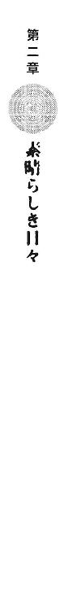
武原仁の仕事は、人に好かれることではない。だが、この状態はすこしばかり、こたえた。
魔導師公館での事情聴取の間も、倉本きずなは彼と目も合わそうともしなかった。彼女は今、現状説明を受けているところだろうか。
「武原係官！」
事務官、十崎京香の鋭い声が飛ぶ。
「悪い。ちょっと、気が散ってた」
仁たちは今、公館の薄暗い会議室で、今後の方針を決める会議をしている最中なのだ。
専任係官のまとめ役である京香が、確実に悪化している戦況を伝える書類をにらみ、神経質に指で机をたたく。
「氷に閉じこめられていたのを視認できた倉本慈雄が、魔法消去発動後に観測できなくなったということは──。どこかで、生きているのでしょうね」
実はこの会議で、最も重点を置いて協議されているのは、きずなの父親である慈雄の件だ。戦闘後、警察の捜索にもかかわらず死体が出てこない。娘はかんちがいしているが、悪鬼の観測は魔法を破壊するだけで、魔法使いは傷つけない。つまり、あの氷漬けの倉本慈雄は最初から魔法で作られた偽物だったのだ。
仁は、厳しい表情の京香へと、ずっと気になっていたことを確認する。
「あの子に、慈雄が死んでいないことは、伝えるのか？」
「倉本きずなに関しては、倫理や常識より、六十年ぶりに発見された再演大系魔導師であることを優先してください。すくなくとも、倉本慈雄の行動目的がつかめるまでは」
昨晩いきなり剣をさげた騎士に襲われ、家族を失ったと悲しむ娘に、彼らは事実を隠す。異世界人の魔法は、それぞれの魔法世界の人間だけが扱える帰属の証でもある。神音大系の慈雄と、再演大系のきずなでは、血縁があるかも微妙。遺失魔術の生き残りと考えれば、公館の決定は非情だが戦略的には妥当だ。
各種情報を集め、整理しながら、並行して事後処理を昨晩から一睡もせず片づけていた十崎京香が、疲れた表情で仁に水を向けた。
「倉本慈雄のことを、彼女から聞きましたか？」
仁は、お手上げを身振りで示す。父親が目の前で燃えたショックのせいだろう。おびえて口もきいてくれない。
「倉本慈雄は、銀座のギャラリーに、自作の楽器をおろしていました。実地検分に行った魔導師によると、神音を奏でるものはひとつもないということですが、どれも細工は相当に高度だそうです。相手は優秀な魔術武器職人です」
聖騎士たちは鎧や武器に、多くの楽器を仕込んで持ち歩く。正確な音を発しなければ世界の《索引》を引けない神音魔術は、難度が高すぎて、事前の完璧な準備なしでは魔導師にすら魔法を使えないからだ。裏を返せば、楽器が優秀ならどんな魔法でも飛んでくる可能性がある。
「確実に、かなり高度な神音楽器を隠し持ってるな」
それまで黙っていた、会議のもうひとりの出席者、《魔獣使い》神和瑞希が、ぷいと横を向いた。
「......その人の相手、貴方に、おねがい」
「それでは、武原係官、お願いします」
「俺かよ！」
ぽつりぽつりと、《魔獣使い》が、何度も区切りながらしゃべる。
「私の、手持ちの式神じゃ、......たぶん手に負えない」
仁は脱力して、がくりと椅子の背もたれに体重を預ける。だが、魔法使いに対して最も安定した力を発揮するのは、彼の魔法消去だ。相手の手がわからない現状では、順当な割り振りではある。
「それで、聖騎士十二名様はどうするんだ？ こっちはひとりじゃどうにもならんぞ」
仁は、戦闘中メイゼルにシャッターを切らせていた写真をはさんだリストをめくる。聖騎士たちは全身を鎧で固めても、声を発し、音を聞くために、決してかぶとをかぶらない。身元だけはわかりやすい。瑞希のほうも写真のノルマを果たして、全員の顔写真が集まっていた。
会議室の明かりが落ち、窓がない室内は真っ暗になる。ＯＨＰがスクリーンがわりの壁に、仁が昨夜の戦闘で出会った、鼻筋も眉も全部直線で描いたような聖騎士を映しだしていた。
「今回の聖騎士隊のリーダーは彼、団将グレアム・ヴィエン。斥候部隊ではなく常に敵を正面攻撃する役をまかされる指揮官であることから、神聖騎士団による大規模侵攻の前哨ではないと判断しました」
そして、次々に、壁面に新しい騎士の写真が追加されてゆく。
「残り三名の上級騎士は、エレオノール・ナガンと、彼女の隊に所属していたニコライ・バルト。および、ドナルド・デュトワ──」
「《団将》って、......どのくらい、エライ？」
眉をひそめた瑞希から、疑問が飛んできた。歴史ある神和家の跡取りとはいえ、彼女はまだ専任係官になって二年弱の経験しかない。忠告は先輩の仕事だ。
「この世界の兵科に無理やり置き換えたら、中尉くらいかな」
まったくわかっていない様子だ。仁は、六年一組のニセ教師をやっているクセで、こういう顔をされると落ち着かなくなってくる。頭をかきながら、立ちあがった。
「団将は、本来、騎士隊十個をまとめた《団》の指揮をする役だ。本来《隊》より格上の、《団》の指揮官が隊を率いてきたのは、それだけ目的が特殊なんだろ」
説明をどう並べても、神聖騎士団については、甘い話がまったく出てこない。やり合うこと自体が戦略的失策としか思えない強大さは、いっそ爽快ですらある。
「あと、上級聖騎士の手強さは、基準がないから気をつけろ。連中の兵科は、この世界でいう下士官と士官が全部《上級聖騎士》で、実績に応じて役につくだけだ。上級聖騎士なら、大役の指揮官を張る実力があっても不思議じゃない。そこをド忘れして、調整官ベルニッチの前任者はエレオノール・ナガンに心臓を串刺しだからな」
もう《上級聖騎士》階級の上は、神聖騎士団全体を統括する兵科の頂点、この世界でいえば准将以上にあたる《聖騎士将軍》階級しかない。
ぱちぱちと、瑞希が無言で拍手をする。
「......さすが、先生。......説明、長い」
ついつい先生気分で語りすぎて、居心地が悪くなって咳払いする。
「こういう話なら専門なんだけどな、俺」
ああ一度でいいから、このくらいすらすらと授業をしてみたいと、ニセ教師である仁は心から願う。
「小学校では絶対使わない知識ですが」
修羅場の空気に夜から浸かりっぱなしだった十崎京香が、ようやく頰を笑みの形に、わずかだけゆるめた。
会議嫌いの事務官が、まぶたを閉じれば安眠できそうな暗闇の中、目の上を指で強くもんで、気を取り直すように深呼吸する。
「戦闘報告は手早く済ませましょうか。長考しても、気休めにしかなりません」
こちらも今日は高校を休んだ神和瑞希が、昨夜の戦闘の報告に入る。
「専任係官、神和瑞希......。《染血公主》ジェルヴェーヌ・ロッソを追跡中、......エレオノール・ナガンら聖騎士六名と交戦。使った式神は、宮毘羅が二体、伐折羅が一体」
神和家では式神、つまり刻印魔導師を、薬師如来の十二神将になぞらえる。宮毘羅は相似大系、伐折羅は錬金大系の魔導師のことだ。
「《染血公主》の手下は、死んだ。けど本人は、交戦中に、逃げた。......聖騎士、二名は大けがさせた。けど、逃げられた。たぶん次に会うときは、......快復してる」
「宣名大系魔導師ラグランツ・ヴェイルの死体は、確認できていません。死亡時の状況から、回収は不可能と判断し、黒帳から抹消しました。錬金大系魔導師スピッツ・モード、および相似大系魔導師ネリム・エンド、クラム・エンドの首帳に、それぞれひとり加点してください」
「気前、いいんだ」
何ひとつ手柄がないはずだから、瑞希が首をかしげる。十崎京香が専任係官のとりまとめになって、首狩りの数えかたは甘くなった。本来、《協会》基準では直接とどめを刺した場合しか、刻印魔導師が〝敵を倒した〟と数えない。
「私たちは、彼らを戦力として譲り受けただけで、処刑をまかされたのではありませんから」
生き残れる希望をあたえれば、刻印魔導師がこの国で魔法犯罪をおかす率はさがるというのが、京香の持論だ。
「神和係官。再演大系魔導師、倉本きずなの監視、およびジェルヴェーヌ・ロッソの捜索をお願いします」
「......了解」
事務官と瑞希の申し送りを聞いて、仁も「了解」と発して立ちあがる。消去法で、十二人と一人の神音魔導師を、いっさいがっさい彼がまかされたということだからだ。
今後の方針が決まって、公館の両開きの古い扉を開けると、昨日とはうってかわった気持ちのいい星空が広がっていた。疲れるわけだ、腕時計を確認すると、もう日付が変わりかかっていた。結局、副担任をしている小学校も休んでしまったが、メイゼルはどうしているだろう。
「仕事あがりが一緒なのに、どうしてひとりで帰るかなあ」
ふり返るとそこには、公館を一歩出てすっかり気が抜けた油断口調の、十崎京香だ。
だが、仁は直後、ぽかんと口を半開きにした顔をさらす羽目になる。京香の、いかにも仕事ができる女らしいマックスマーラのスーツの陰に、ずぶ濡れの私服から制服に着替えた女子高生がいたからだ。もらわれてきた子犬のように身を縮めた、倉本きずなだった。
「私の家で、この子も、面倒見ることにしたから」
確かに慈雄がああなった以上、彼女を元の家でひとり暮らしはさせられない。だったらどこでと考えれば、すでにメイゼルを引き取っている十崎家は、あり得ない選択肢ではない。だがそれは、ただでも激務の京香が、また仕事を増やすということだ。
「体、だいじょうぶか？ おまえぶっ倒れたら、メイゼルも俺も看病せにゃならんから、ほんと、気をつけろよ」
だが、ひとつ年上の幼なじみは、心配に仇で返すのだ。
「あはははは、他人事みたいな顔して。私、この子たちのこと、仁にまかせるのよ」
「なんでだ!?」
「だって、メイゼルちゃんも仁にべったりだしー。先生だしー」
犬拾ってくるんじゃないんだぞと、怒鳴りかけて彼は、きずなから上目遣いにじっと見あげられて、正気に返る。京香は最初から、彼に押しつけるつもりだったのだ。仁は運命の娘の、濃紺の瞳を覗き、やはり慈雄や聖騎士たち、余計なことを考えずにいられない。
「よ、よろしく」
だが、ようやく正面から目を見てくれた倉本きずなは、昨夜と地続きの泣き笑いで、彼を迎える。
「ちゃんと説明したでしょ。こいつ、こんな顔してるけど、きずなちゃんのお父さんには本当に何にもしてないのよ」
「わたし、倉本きずなです！ これからよろしくお願いします！」
勢いで恐怖を押し流すように、大きな声であいさつする。彼女は九〇度に体を折ったまま、いつまで経っても顔をあげようとしなかった。
十崎家に倉本きずなを住ませるということは、つまり鴉木メイゼルと同居させるということだ。
その重大にして致命的なことを、京香は見落としていたんじゃないかという嫌な予感を、今、仁はひしひしと感じている。
────トゥルルルル、トゥルルルル。
深夜、ようやくアパートに戻って眠れた仁は、寝入りばなを電話の呼び出し音でたたき起こされたのだ。電灯を落とした真っ暗な部屋にたったひとつ灯る明かり、携帯電話の液晶画面に表示されている電話番号は、鴉木メイゼルのものだ。
頭も朦朧としたまま、布団から片腕だけ出して、通話ボタンを押す。飛びこんできたのは案の定、メイゼルの興奮して地に足のつかない声。
〈せんせ、変な女がうちに来たの！ キョウカは、せんせが面倒を見るって言ってるのよ。どういうこと？ あたしというものがありながらっ〉
十崎家に寄ったら長くなるからと、まる二日不休仕事で積み重なった睡眠欲に負けたのが、いけなかった。面通しにくらい立ち合っておけばと、血のめぐらない頭で後悔する。
〈キョウカはさっさと寝ちゃうし、起こしたら殺すって言うし、その変な女ずっと黙ったまま、おふとんに座ってぼーっとしてるのよ〉
「変な女なんて言うな。書類は見てるだろ」
無茶を言われても子どもだからと辛抱できるようになった、ニセ教師修行に感謝する。
〈だって！〉
「俺が、その子を守るのは本当だ。しばらくはずっと一緒なんだから、仲良くしてやってくれ」
もっとも、そう頼んでいる仁も、六年一組の副担任を一ヶ月近くやって、メイゼルが誰かと仲良くやっている姿はまったく思い浮かばない。従うとか屈服させる以外の、対等の人間関係をちゃんと結べるのかが、微妙に未知数だ。
仁は大きなため息をひとつ吐くと、通話を切って、携帯電話の電源を落とした。そして力尽き、布団に突っ伏す。ひょっとして十崎家の人間関係も、俺がなんとかするのかと、倍加した仕事の重みに潰されながら。
翌朝、私立御陵甲小学校の教壇で、副担任の先生として、武原仁はさっそく手を抜いたツケを思い知っていた。黒板に板書する間も、背中に鋭い視線を感じ続けているのだ。
窓の外では気持ちいい晴れた空の下、子どもたちが元気に運動場を走っている。だが、六年一組の教室の、空気は重苦しい。このクラスがもめる中心、相手が教師だろうが職員室に呼ばれようが決して退かないアウトロー、鴉木メイゼルが無言で周囲を威圧しているからだ。
「今日、みんなに討論してもらう題は、『学校の昼ご飯は、給食にするべきか、お弁当にするべきか』です。意見のある者は手をあげて、発表してください」
仁が担任の祖師堂先生からまかされたのは、題を教師が出して、それに対する意見を生徒同士で討論させる、学級討論会だ。給食派と弁当派に分かれた生徒に、お互い意見を言わせて、説得力のあるほうが勝ちとするわけだ。
誰よりも早く手をあげたのは、メイゼルだ。そして、彼に当てられる前から立ち上がり、今日は真紅のリボンを結んだ長い黒髪を振り、桜色の唇をひらく。
「あたしは、絶対にお弁当だわ。こうします、こう決まりましたって、言われたからあたしはそれを食べなきゃいけないの？ イヤなものはイヤなのよ。頼まれたら、食べてあげるわよ、しかたないもの。でも、あたしがイヤだって気持ちは変わってないの。これって一体いつまで続いて、いつまであたしはガマンすればいいの？」
ノースリーブの黒いワンピースからのびる華奢な両手で大きな身振りで主張した少女が、まっすぐに仁を見あげている。微妙におかしな話になっているうえに、豪快すぎるワガママだ。
「鴉木。先生にぶつけるんじゃなくて、これはクラスのみんなと話し合いする時間だからな。はい！ 鴉木さんのとは別の意見がある人はいないか？ みんな、いろいろ意見を出してみろ」
だが、望まない同居を押しつけられた少女は、席に着こうとしない。それはもう、お姑さんがやってきて二世帯同居を押しつけられた主婦もかくやの、妥協を許さない構えだ。しかも笑えないことに、話がちがうと責められているのは、きずなの世話もまかされた彼自身なのだ。
「好き嫌いでモノ言って何が悪いの？ ええそうよ、あたしは。せんせーから見たら子どもなんでしょうけど、それでも、あたしは女なのよ！」
小学校の国語の授業が、お昼の奥様相談になりつつあった。彼は、興奮した小さな魔女が余計なことを言い出さないか、冷や汗をだらだら流しながら教室を見回す。
こういうとき、メイゼルの勢いに萎縮せず対抗してくれるのは、たいてい学級委員長の寒川紀子だ。優等生的な正論で、まっ正面からぶつかってゆく。
「好き嫌いでものを判断するのはただのワガママで、女か男かは関係ないと思います。鴉木さんの言うのとはちがって、私は給食がいいと思います！ 給食だと栄養のバランスも給食のおばさんが考えてくれるし、お金持ちの家でもそうでない家の子でも、同じものを食べられます」
「あんたすっこんでなさい！ 給食のおばさんは、あたしの女の意地を満たしてくれるの？ 問題は、あたしのキモチと、生きかたなのよ」
小さな手のひらで、ばんと薄い胸をたたく。給食で人生語るなよと、口から出かけたつっこみを仁はのみこんだ。
「それじゃ、弁当がいいと思う者は、手をあげなさい」
苦しまぎれに生徒たちへ声をかける。六年一組の男子も女子も、仲のいい友だちとお互い顔を見合わせる。学級討論を国語の授業に入れたのは、自分の考えを論理的に述べる力をつけさせたかったからだ。それなのに、おまえはメイゼル派か寒川派かという学級内政治は、いったい生徒にとって何の身になっているのだろう。拳を固く握ったままの魔女が、肩を震わせ始める。
「夜中に問いつめても生返事で、......頼むなんて言われても知らないわよ」
目を赤くして涙をこらえるメイゼルには、たぶんここが小学校で、自分が生徒で仁が先生でだということなど頭から飛んでいる。愁嘆場など、小学六年生では、両親の夫婦喧嘩をみるくらいだろう。だが、ただならぬ気配は伝わっていた。
泣くな落ち着けと、声をかければ、涙の堰が崩れるのはもうわかりきっていた。だが、教室で授業中に事情を説明など、学校ではただの教師と生徒でとおしている以上、できるはずがない。こんなときに、六年一組の男子たちにいまだに流行ってる秘密のブロックサインが使えたらと、仁は平静を装った面の裏側でのたうちまわる。進退谷まって、一番安全そうなところへと。
「祖師堂先生は、どう思いますか？」
だが、最後の頼みの担任、祖師堂しづか先生は、心の傷にでも触れたか、小学校教諭ではなく女の顔で断言したのだ。
「そういうときは、男性から『俺が悪かった』って折れるべきです」
ノートに学級討論の惨状をＨＢの鉛筆で記録していた天瑞岬が、顔を上げた。
「つまりこの討論の結論は、とりあえず問題は、責任者が詰め腹を切れば解決するということで」
「そんな解決があるか！ もっと建設的な意見はないのか？ 小学生から事なかれを決めこむな」
だが、弁当や給食が人生の重大事ではない人情の機微を、生徒たちは嫌なかたちで学び始めていた。そんな授業じゃないのに。仁は副担任として、またしても授業が収拾つかなくなる覚悟を決めた。
そして、奮闘かなわず、そのとおりになった。
学級討論のことで学年主任にさんざん絞られた仁は、残務をこなしてその夜、今日こそはと十崎家の呼び鈴を押した。
「国語の時間は、ごめんなさい。あたしのせいで、怒られたんでしょ」
ドアを開けて、しゅんとしおれた顔のメイゼルが、玄関で彼を迎えてくれた。あいさつに行くと連絡を入れたときから、ずっと待っていたらしい。
「気にするな。今日のは確かに、俺が悪い」
「でもせんせ、貸し、ひとつよ」
微笑む少女の目は、やっぱり笑っていない。
「倉本きずなの様子はどうだ？」
靴を脱いでいる間、かばんを抱きかかえるようにして持ってくれた小さな魔女が、憮然としてつぶやく。
「石けんで思いっきり、口の中ゴシゴシ洗ってやりたいわ」
メイゼルからすると、普通の日本人は外来語のかたちで会話に英単語をまぜるせいで、ひどく育ちが悪く見えるのだ。仁が思い起こしても、そのせいで六年一組の教室でもめごとを起こした例は数知れない。
居間には、まだ京香が帰っていないから、がらりとした空莫だけが姿もなくそこに座していた。ぱたぱたと足音を響かせ、躍るような足取りでメイゼルが先回りしてソファに腰かける。空気は華やぎ、もはや寂しさは物陰へと去った。
「きずな、せんせが来たわ、あいさつなさい！」
遠慮がちに廊下のすみっこに立つ年上の娘へ、メイゼルが偉そうに声をかけた。不安で様子をうかがいに来ただけなのだろう倉本きずなが、所在なげにこちらを向く。あの夜から抜けきれていない同じ眼差しで見られると、仁は作り笑いにも奥歯を嚙みしめてしまう。魔導師とはいえ、彼女は最近まで魔法の存在すら信じていなかった、普通の女子高生だったのだ。
「あ、座っててよ。俺がお茶でもいれるからさ」
勝手知ったる幼なじみの家だから、仁は立ち上がって茶菓子のあるキッチンへ向かおうとする。
「......いいです。わたし、わかりますから」
ぺこりと会釈して、どこか懐かしい雰囲気のきずなが、彼に先んじて行ってしまう。ミニスカートの裾が、ひらひらと揺れる。
微妙な既視感の謎はすぐに解けた。きずなが身につけているあのミニスカートも、半袖のＴシャツも、京香のおさがりだ。十年前の流行モノを着ても、何の違和感もなく似合って見えるのは、きっときずなという元がいいのだろう。
ちりちりと焦げるような視線が痛くて脇を見ると、メイゼルが掘りごたつに頰杖をついていた。
「せんせー、そういう目できずなのこと見るわけ？」
「人聞きがわるいこと言うな」
スリッパの軽い足音を、彫刻用ノミを板に打ちこむようにカツカツ鈍く響かせ、危なっかしい足取りの娘が戻ってきた。お盆に急須とふたりぶんの湯飲みと、菓子鉢をのせている。軽くはない荷物を運んでいるのに、不自然に仁から目をそらしているものだから。
「......きゃっ」
蹴つまずいて、お盆ごと前へと倒れこむ。床に手をつけばいいのに、この期に及んで胸の前で片手を握りかけ、やめて、そのまま完全にバランスを失って転倒する。
《公館》での聴取のとき、一度だけ倉本きずなにその魔法を使ってもらったから、わかった。彼女は再演大系の《無色の手》、大規模な魔法で操演の補助に使う魔法生物の召喚を、途中でやめたのだ。
索引型に分類される再演大系では、世界は一冊の本として感覚される。本をつづるアルファベットたる過去の観測者そのものが、再演大系の《索引》。そして、古代のシャーマンが獣の毛皮をかぶり身振りで動物をまねたように、術者の前で過去を再演することが、発動のための《魔法媒介》。再演魔術は、現在と過去を魔法で曖昧にし、現在演じている魔法劇の筋書きをねじ曲げることで、過去の事実もねじ曲げるのだそうだ。
深い茶色の板床に、急須がはずみ湯飲みが転がり、小袋に入ったせんべいとチョコレートがぶちまけられていた。
「大丈夫か？」
「またやった。あんた、前見てないと、そのうちケガするわよ」
これで面倒見は悪くないメイゼルが、てきぱきと散らばった割れ物とお菓子を集めてゆく。仁が近寄ると、触れられることをおそれるようにきずなが立ち上がった。あんまり勢いよかったものだから、反動で重そうな胸が揺れる。
「ご心配なく。ちゃんと立てますから！ ずっと前から、お父さ──」
言いかけて、顔をこわばらせる。動悸でもしているのか、開いた手を胸の前で合わせて、大きく深呼吸している。倉本きずなはどんなふうに暮らしていたどんな娘だったのか、かいま見えてしまうからこそ、彼女の今が哀しい。
掘りごたつにお盆を置くと、逃げるように、再演魔導師は行ってしまった。
「せんせー、また、きずなのおっぱい見てた！」
「ちがうって！ だから、人聞きの悪いこと言うな」
びくりと嫌な気配を感じてふり返ると、本人と一瞬目があって、ついとそらされる。本気で軽蔑されてるんじゃないだろうかと、暗澹たる気分になる。
きずなの足音が、十崎家の階段をのぼってゆく音が、仁たちのところにも響いてくる。無理のないこととはいえ、こうもはっきり避けられると、落ちこむ。
「やっぱりあたし、あの子、あんまりスキじゃない」
メイゼルがつぶやく。彼女も、はじめてこの世界に来た当初、魔法を消去する地獄の住人におびえていたと聞く。今では小学校に普通に通っているが、仁がきずなを見るより、ずっと胸に複雑な気持ちを喚起するのだろう。
「そのうちきっと慣れるから、じっくり付き合ってみてくれよ」
湯沸かしポットで急須にお湯を注ぎながら、円環大系の魔法使いが、すこしおとなびた横顔で不平を並べる。
「たしかに、きずなのことは、あたしだってかわいそうだと思うわ。けど、せんせ、あたしのことないがしろになってない？」
出してもらったお茶をすする仁へと、メイゼルが何かをたくらんでる様子で、にんまりと表情を崩した。
「というわけで、せんせには、特別に、あたしの機嫌を直させる方法を教えたげます」
メイゼルが突然、まるでウサギの耳みたいに、白い両の手のひらを頭の上に立てた。
「あたしがこうしたら【怒ってる】って意味だから、そしたら先生はこうやって顔の前に手を立てて【ごめんなさい】っていう合図を出すのよ」
「それ、クラスの男子が授業中に遊んでる、秘密の合図出しあうやつだろ」
私語をすると怒られるから、身振りでしょうもないことを授業中に話し合う、教師としては頭の痛いはやりごとだ。
「あ、あたし、教室で女子が付き合ってくれないからせんせに頼んでるんじゃないわっ。知らない人が家にいるんだから、ナイショ話だってあるもの」
「知らない人なんて言うな」
切り捨てかたがキツかったのか、少女がしゅんとうなだれる。寂しそうにされると、罪悪感で胸がつぶれそうになる。きずなとの同居は、確かに《公館》の都合の押しつけだ。まだ子どもの彼女に、聞き分けろと言うのも酷ではある。
「でもまあ、〝借り〟もひとつあるし、ちょっとくらいなら、いいぞ」
珍しく彼が乗り気なのを知って、あどけない魔女が目を輝かせる。
「ね、ね、せんせ、どんな合図がほしい？」
もちろん頭に浮かぶのは、胃に穴が開くかと思った、今日の教室のことだ。あれだけは二度とゴメンだ。
「仲直りの合図を決めとこう。とりあえず合図をしたら、しばらくは仲直りってことで」
「そうだわ。頭にこうやって触ったら、【仲直りしたい】ってこと。せんせ、こんなのどう？ あたし、せんせとあたしだけの秘密の合図、たくさん考えてあるの」
息がかかるくらい身を乗り出して、メイゼルが自作の身振りを見せようとする。鼻息の荒さがやる気の指標だとすると、今夜の様子なら仁は一体どのくらい覚えればいいのか、かなり嫌な予感がした。
そして翌朝、一時間目から、仁は六年一組の教室で、予感が的中したことをさっそく思い知らされていた。
うれしさ冷めやらぬメイゼルが、昨夜に覚えさせられた合図を、彼へと出してくるのだ。算数の授業中に、生徒から身振りで「大スキ」と告白された副担任はどう反応したらいいか、仁は途方にくれる。なにしろ、【スキ】はあっても【キライ】の合図がない。こんなもので会話のキャッチボールは無理だ。どうして【どうでもいいから授業に集中しろ】の合図を作っておかなかったのだろう。
「はい、ここまで、わからない人は手をあげてください」
メイゼルが、ウサギ耳のポーズ、【怒っている】の合図を出し始める。もちろん彼は副担任で、今は授業中だから、断固としてとり合わない。
「兵頭。手をあげないんなら、こことここの数を、先生がこう変えたら、答えがどうなるか、わかるよな？」
彼が見なかったフリを貫いていると、これに注目とばかりにウサギ耳がぴこぴこと手まねきを始める。だんだん、目つきが険悪になってきた。ついに、寒川が立ちあがって、授業に参加してない不届き者を告発する。
「先生！ 鴉木さんが変なことしてます」
「あー、鴉木。とりあえずおまえは、昼休みに生活指導室な」
教室中の生徒たちみんなが、さすがに異様な少女に注目していたから、遠慮のない爆笑が彼女へ向けて落ちかかっていった。
昼休み。指導室にやってきたメイゼルは、腰に手を当てて言い放つ。
「せっかく決めたのに、どうして使ってくれないの？」
「授業中はそれ、絶対禁止だからな。わかったな」
刻印魔導師や魔法使い、魔導師公館、仁との関係、すべて黙っているようには言ってある。それでも、この一ヶ月ほどで、汗腺が太くなったんじゃないかと疑うほど、冷や汗はかき慣れた。
メイゼルは、首をたてに振らない。きずなのことが、まだ納得できていないのだ。付き合いを長さではかれば短いが、生命を預け合う彼らの関係は、簡単なものではない。
「俺は、おまえを監督する専任係官なんだから、絶対に離れたりしない。変な心配するなよ」
この世界に頼るものなどほとんどない、過酷な運命を強いられた少女の頭を、ぽんぽんと軽くたたいてやる。
メイゼルが、おずおずと頭に人差し指を当て、くるくると髪を巻きこみながら指を回す。この身振りは【仲直り】の意味だったはずだ。
仁は、【ごめん】では変だから、影絵できつねを作るときのように、親指と中指薬指をくっつけ、人差し指と小指はぴんと立てる。たしか、これが【だいじょうぶ】の合図だ。
目が合うと、少女が首筋までまっ赤になった。にやついたまま、すこし照れくさそうに顔をうつむかせる。
「わかったわよ。......せんせも、合図覚えてくれたんだから。......あたしも、きずなのこと、まかされたげる」
†
その夜、小学校から《公館》に寄って、仁が十崎家へご機嫌うかがいに行くと、きずなが居間の掘りごたつに座っていた。もう水玉のパジャマに着替えているメイゼルが、頭にタオルを巻いてカルピスをストローですすって微妙に得意げだ。
時計はもう夜の十時を回っている。宅配のピザを出前にとったらしい、ゴミ箱に大きな箱がきれいにつぶしてたたきこまれていた。きずなは今日アパートまで服を取りに行ったそうで、垂れ目気味のやさしい雰囲気に合った、やわらかい青リンゴ色のキャミソール姿だった。
「女の人だけの家に、こんな時間に来るなんて、どういうつもりなんですか？」
「ごめん。いっつも来てるから、正直、気にしてなかった」
仁は、十崎家に来るたび、誰かに怒られている気がする。そして、腰を落ち着けて話すつもりになったらしい彼女の話題は、まず当たり前のところに触るのだ。
「だいたいメイゼルちゃんと、あなたはどういう関係なんですか？」
仁が、汚れ仕事である専任係官と刻印魔導師の事実を正直に話すべきか、わずかだけ守った。だがこんな年齢でも、思い切りで、女性は建前にしばられる男をあっさりと凌ぐ。
「あたしは《魔導師公館》の刻印魔導師よ。あんたを襲った聖騎士みたいなのから、この国の人を守ったげるのが、あたしのお仕事」
自分より何歳も年下のメイゼルの答えを、十七年間この国の平和な側で暮らした倉本きずなは予想できただろうか。だが、小学六年生の女の子が続けて口にした真実は、きずなに想像できる最悪などはるかかなたにすっ飛ばした。
「せんせは、あたしを管理する専任係官。刻印魔導師を戦わせて敵を倒したり、もしもあたしたちが犯罪に手を染めたときは処分したりするのよ」
処分という言葉が指すものに、普通の女子高生であった彼女は正しく行き着けない。そして、武原仁は、ただ巻きこまれ振り回されている被害者面ができる立場ではない。
「メイゼルの言ったことは、みんな本当だ」
その言葉の意味が本当に理解されたのは、午後十時十八分四秒、彼女の顔全体がきっかりその時間、嫌悪に歪んだからまちがいない。
「あなた、頭おかしいんじゃないですか？」
血の気が引いた唇をわななかせて、きずながかん高い悲鳴をあげる。反応が予想できていても、彼の胸はきしむ。十崎家に人が入るということは、《公館》と魔法使いに関わる世界へ外から人がはいるということは、つまりこういうことだ。
「遊んであげたら、それで解決だとでも思ってるんですか？」
柱時計の秒針の回る音が、いやにはっきり響く。
「そんな危ないこと、〝まだ子ども〟のメイゼルちゃんに押しつけるなんて。そんな残酷なこと、どうしてできるんですか」
きずなが、まともに見ていられないほど純粋な、けれど正論をぶつけてくる。円環大系の誇り高い、けれど狭い世界しか生きていない少女が、現実を知らない甘い理屈をはじき返す。
「半人前があたしの戦いに口出ししないで。押しつけられて選んだんじゃないわ。あたしは魔法使いだから、義務から逃げないの」
鴉木メイゼルは、本当に人の弱点を見つけるのがうまい。
「言いたいことは他にあるくせに、〝まだ子ども〟のあたしにかこつけるのだって、十分、残酷よね」
「いや、言わせてやってくれメイゼル。彼女は正しいんだ。おまえの気持ちに救われてるだけで、だからって俺たちが許されるわけじゃないんだよ」
仁は、たぶん今、きずなを言いくるめてはならないのだ。十崎家に倉本きずなという、魔法使いの悪しき慣習を知らない人間が入ることを、どこか歓迎したい気持ちになっていた。
メイゼルを小学校に転入させたのは、刻印魔導師を道具のように消費し続ける《公館》の、罪悪感からきた偽善だ。公館の職員は、ただの公務員も多く、小さな部署だから出世も頭打ちが早い。倫理的な枠をあまり派手にぶち壊すと士気を維持できないし、造反者が出かねないのだ。もし本気で救ってやりたいなら、史上ぶっちぎりで最年少の刻印魔導師に子どもらしい暮らしをさせるより、厳しすぎる刑を減免するよう《協会》に掛け合うのが筋だ。
問題ある状況だけがはっきりしていて、誰もが、噓で自分の身を護っている間に過ぎ去ってくれるのを待っている。慢性的に人手不足の公館が、専任係官まで小学校に送りこんだのは、その過ぎ去りかたの第一候補が、少女が戦闘で死ぬことだからだ。おかげで、官僚機構の最底辺である事務官にすぎず、政治力のない十崎京香は、いまだにアルコールなしでは、メイゼルとまともに話せない。そして、その手がまっさらで無垢だとは言えない仁も、少女から目を離せないし、身近で監視・監督する小学校のニセ教師もやめられない。
ここは、魔導師たちが勝手に呼んでいるだけではない、本物の地獄だ。片棒をかついでいる公館職員があきらめたら、本当にそうなる。
「たぶん、俺たちのことを見る目は、きずなちゃんの目が一番正しい。これが、俺たちの生きてる世界だ」
鴉木メイゼルも、仁も、普通じゃないネジの狂った世界に生きている。聖騎士たちも、《染血公主》も、そしてたぶん姿を消したきずなの父、倉本慈雄も。
「残念だけど、再演大系の魔導師を狙っている人間がいるあいだ、きずなちゃんを元の────人が殺し合ったりしない世界へ、戻してあげるのは無理だ」
仁は「普通の世界」と言いかけて、十崎家にも普通がないと認めるわけにいかず、言葉を飲みこむ。そしてきずな自身もすでに、望まなくても仁たちの側の住人だ。
「でも心配しないでいい。俺とメイゼルだけじゃない、京香も、他にもきずなちゃんを守ってる人間がたくさんいるよ。だから、いつか必ず、帰れるよ」
また彼は噓をつく。きずなが家族と暮らせるようになる可能性は、低い。彼女が現れるまで、再演大系は地獄だけではなく、既知魔法世界すべてから消失していた。過去を書きかえ操作する強力な魔術大系が、滅亡したという最大の謎を残して。なのに《協会》は、貴重な生き残りの保護にまったく協力せず、公館だけに押しつけた。一千の魔法世界をつなぐ大勢力でも関わり合いたくないほどの、何かが、六十年ぶりに現れたこの魔法大系にはある。
顎を引いてうつむいたきずなの、目の表情が、前髪に隠れる。
「わたしは、これからどうなるんですか？」
「異世界人の魔法使いの子孫は、そこまで珍しいものじゃないんだ。普通に日本国籍も持ってるし、公館がきずなちゃんをどうこうすることはないよ」
「魔法なんかなかったら、お父さんは！ どうして」
倉本きずなは、ひとり、目に涙をためる。仁には彼女を抱きしめられず、メイゼルは誰かをなぐさめるには幼すぎた。そうやってタイミングを逃して、人はひとりで泣く。
「わたしは、魔法が使えてうれしかったのに。もっといいことがあるって思ったのに」
胸の傷口からちらりとのぞいた、娘の純真に息をのむ。魔法世界に棄てられた小さな刻印魔導師も、もらい泣きの前兆のように肩をびくりと引きつらせはじめていた。彼と目が合って、あどけない落人が、なぐさめないでとばかりに首を横に振る。この少女にも、仁に決して踏みこめない部分がある。
だから、メイゼルの背中をやさしくたたいてやる。
「湯冷めして風邪ひくから、上にあがるか」
「せんせ、あたし、もう寝るわ」
湯あがりの髪にタオルを巻き、うつむいたまま廊下に出て行った。今、小さな魔女にこう返せるだけでも、ニセ教師をやっていてよかったと思う。
「それじゃまた明日、学校でな」
彼にうなずき返すためだけに、背の低い少女が一度居間に戻ってきて、二階へとあがってゆく。
居間に、きずなとふたりきりになると、夜の空気が十崎家の壁からしんと染み入ってきた。ひどく静かになってしまった。
「武原さんは、どうするんですか？」
割れた地面から水がわきだすように、それでも彼らは乾き続けてはいられない。人の心は石よりも、泥に近い。
「俺は帰るよ。もう、女の子の家にあがってるには、遅すぎる」
きずなが、何か言いたげに仁を見あげる。すがりつくものを探しているような濡れた瞳に出会って、血管がどくりと脈打った。
もう十時半を回っている。きずなとメイゼルだけの十崎家で、夜を明かせるはずもない。
掘りごたつから足を抜いて、来るときは彼の生徒が抱きかかえていたカバンをつかむ。きずなも、追いかけるように立ちあがる。仁は彼女の父親がわりはよそおえない。それでもこの普通でない世界へ飲みこまれたきずなを、支えてやれるような関係を築きたい。
「あの......」
「メイゼルを頼むよ。俺も京香も帰りが遅いから、家の中でひとりになること多いんだ」
本当は十崎京香が相談相手になってやれればいいのだけど、仕事との線を引ききるのは厳しいのだろう。幼なじみは、重責を望んで背負ったとはいえ、まだ入庁三年目だ。
玄関で靴を履いて出ようとしても、まだ倉本きずなはついて来ていた。見送ってくれたのかと思うと、感謝の念がこみあげる。
「ありがとう。また明日も様子を見に来るよ」
また、勢いをつけるように、彼女が大きめの声で返す。
「今度は、もうちょっと早く来てください。あ、あの......」
きずなの、肩までのやわらかそうな銅色の髪が、小さな仕草で元気に弾んだ。抱きしめられるのを待っているような、手ごろな肩幅と、上半身の曲線が、布地の下からちらりと覗く。
経緯を考えれば、わだかまりを一歩だけ踏みだしてくれたと、期待するのも厚かましいのだけれど。戸惑うほど身近に、こんなことを言ってくれるから、感じてしまうのだ。
「晩ご飯ごちそうします！」
最初はすれ違うだけの風景で、名前を名乗ったのは、溺れ死ぬ寸前のようにおびえ、震えていた雨の中だ。澄んだ冬の夜空と同じきずなの濃紺の瞳が、肋骨に刺さった多くの罪の疼きすら包みこむようで、仁の息は詰まる。彼女が、髪と同じ明るい色の眉をゆるめて、ぎこちなく微笑んでくれた。それだけで、ぱっと心地よい空気が広がる。食事をお呼ばれした礼を言うべきなのに、言葉を忘れて、どうしようもなくて落ち着けと肯定のつもりで顔を笑わせる。心臓が高鳴って、今、彼は絶対だらしない顔になっている。
武原仁はたぶん今、初めて本当の倉本きずなに出会ったのだ。
†
翌日、学校から《公館》に寄らずに十崎家へ直帰した仁を、待っていたのは信じられないほどまともな食卓だった。
揚げたての、鶏の唐揚げはまだ湯気を立てている。メイゼルの好物がわからなかったのか、子ども向けにハンバーグを用意してくれていた。アボカドサラダが、十崎家で十年ぶりくらいに見た木の器に盛りつけられて、食卓に緑をそえている。
「キョウカ、この料理はなんていうの？」
「クリームシチュー？」
きずなが、十崎家の女性たちに、申し訳なさそうに訂正した。
「あ、あの、......クラムチャウダーです」
十崎京香も、珍しく八時前に帰宅して部屋着に着替えている。
「クラムチャウダーくらい知ってるもんねー。作ったことないだけで」
幼なじみの負け惜しみに、仁はこの食卓が何よりたいせつだった昔を思い出す。新しく、ふたりぶんの顔が増えて、彼には時の流れがひどくまぶしかった。
人数分のはしが、これまた久しぶりに見る焼き物の箸枕にのせられている。メイゼルの前だけは、銀色のスプーンとフォークだ。きずなは、はしを使うのがまだ下手くそなメイゼルにも食べやすいように、わざわざ洋食にしてくれたのだ。
「あははは、なんかもういろいろ懐かしいわ。はい、これ仁の箸枕」
十崎京香が、自分の前にあった陶製の茄子の箸枕を、仁のと交換してくれた。子どものころ、十崎のおばさんがいつ来てもいいんだよと、彼のぶんも用意してくれたのだ。格好いいものが欲しくて、紫色だから茄子を選んだのは、我ながらどうかと思う。
「これ、まだあったんだな」
エプロンを外して居間に戻ってきたきずなに、メイゼルが軽くぱちぱちと拍手する。
「すっごい、きずな。ほめたげるわ」
強烈に手間を省いていた十崎京香の食事を「地獄の料理」だと思っていたから、驚きが大きいのだろう。仁も、経験がある。京香に料理を頼むと、冬は湯豆腐、夏は冷や奴と、二日に一度は単なる豆腐が白磁のような白い肌で食卓を彩るのだ。
「そんな、普通だよ」
きずなが照れて、シルエットのきれいなワンピースの前をもじもじと指でつまむ。並んでいるのを見て、匂いをかぐだけでも、相当に本格的だということは明らかだ。
食欲に負けて待ちきれなくなって、何はともあれ、まずはみんなでいただきますを言う。肉汁が皿にじわりとにじみ始めている熱々のハンバーグを一口食べて、メイゼルが言葉を失った。続いて、クラムチャウダーを一さじ、スプーンごとかわいらしい唇の中へ。
「なんだ、地獄の料理って、おいしいんじゃない」
はしが止まらない様子で唐揚げをぱくつきながら、京香が悔しそうにうなる。
「どういう意味かはよくわからないけど、その言い様はメイゼルちゃん、ものすごく引っかかるわね」
「いや、意味は聞いたまんまだろ」
はたらいてないことに罪悪感を感じて、取り皿にアボカドサラダを取り分けながら、仁が幼なじみのかんちがいをただしてやる。
「いいのよ。ぜんぶ、材料代は私がかせいだんだもん！」
ようやく上品に手を合わせて、いただきますを言ったきずなが、自分のぶんを食べ始めた。サラダをわけた小皿をわたすと、「ありがとうございます」と丁寧にお礼を返してくれる。
「でもこれ、本当にうまいな」
「確かにおいしいわ。きずな、今日からあんたがうちでご飯作りなさい」
口の端をケチャップで汚しながら、メイゼルはやっぱりえらそうだ。きずなが、ティッシュを二枚とって、少女の口をふいてやる。いいお母さんになりそうだ。
仁が、そんな微笑ましい光景をぼんやり眺めていると、視線に気づいた小学生が頰を紅潮させた。
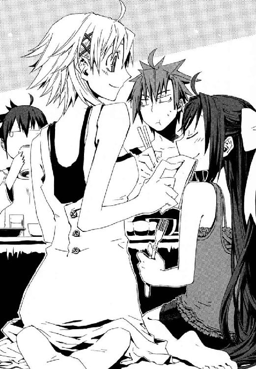
「みんな、子ども扱いしないで。あたし、来週の二十日で誕生日なんだからっ」
確かに《協会》から回ってきた書類では、メイゼル・アリューシャ、鴉木メイゼルは六月二十日が誕生日だ。やりきれない苦みが、一瞬、十崎京香の目元をよぎる。書類上、メイゼルは仁と同い年、二十四歳だ。もちろん、本当にそんな年齢であるはずがない。《協会》が子どもに死刑同然の重罰を科すため、書類に噓を書いたのだ。
何も知らないきずなが、地雷を踏む。
「メイゼルちゃん、小学六年生だから、今度、十二歳になるんだ」
「ちがうわ。あたし、二十五歳よ」
普通の家で育ったきずなが、かわいらしい見栄だとかんちがいしたまま、両手を合わせる。
「そうだ！ メイゼルちゃんのお誕生会をしましょう」
予想もしないところから落ちてきた爆弾に対処できず、食卓に沈黙が広がった。どうしてこんなことすら気が回らなかったのだろうと、おかしくなって、仁は頭をかいた。京香も目を閉じて、微苦笑に肩を震わせる。メイゼルに普通の女の子みたいな暮らしをさせてやりたかった。これでもけっこうがんばったつもりだが、〝本当の普通の女の子〟にはまったくかなわない。
「やるか、お誕生会」
刻印魔導師の修羅道しか用意されなかった少女が、人形のように整った顔を驚きにくずして、そして泣き顔を見られまいとするように両手で覆った。鼻声で故郷の円環大系世界のものだろう言葉をつぶやきながら、仁へともたれかかり、しがみつく。その熱が愛おしくて、しあわせになっていいんだと伝えるように、抱きかかえてやる。赤ん坊を寝かしつけるように、頭をなでる。
まだご飯が残っているのに、京香がコップにビールを注ぎはじめた。
「我ながら、きずなちゃん連れこんで正解だったわ。ほんと、私たち、ダメー」
仁は、メイゼルに抱きつかれているぬくもりが心地よくて、不覚にも一瞬、手放したくないと思ってしまった。どうにもならない状況はなにも変わっていないのに、あったかいご飯を食べると人心地がついてしまう。
きずなが、もらい泣き寸前の、目の縁を赤くした顔で、小さな刻印魔導師の頭をなでてやった。
「それじゃ、二十日は、思いっきりごちそう作っちゃいますよ。メイゼルちゃんも、楽しみにしててね」
ふと、今日みたいな日がずっと続けばいいと心に浮かぶ。きずなを預かっているのは聖騎士の襲撃よけの一時退避で、メイゼルを引き受けているのは偽善だということも棚に上げて。
「あはははは、参ったわ、涙でそう」
今日は、幼なじみがビールを空ける速度が、いつもよりゆっくりだ。一秒でも早く酔うためではなく、本当に酒を楽しめているのだろう。
「こら、こいつ。なにしてんの。吞みなさい、こんなときくらい、吞みなさい」
「飲めったって、コップないだろ」
こぽこぽこぽこぽ............。
「なにすんだ！ メシの茶碗にビール入れるアホがいるか」
でも、まだあたたかい茶碗を杯がわりに、彼も金色の酒を一気に飲み干す。
「ぬるいと、まずいな」
「そっかー、まずいかー、もう一杯いけー」
幼なじみが、いい感じに陽気になって。きずなが気を利かせて、冷蔵庫から缶ビールを持ってきた。今夜は、久しぶりに酔っぱらってもいいと思えた。
「女の子を抱きしめてる間に、他の女からお酌してもらって酔いつぶれる男って、正直サイテーだと思うの」
硝子の鈴を振るような、メイゼルの声が頭に響く。体を起こしてみたら、十崎家の居間だ。時計は、朝の七時半。ガラス戸の向こう側は、全然疲れなんかとれてないのに青空で、もう仕事に行かなければならない時間だ。テラスでは二羽の小鳥がさえずり合っていた。つまり仁は、酔っぱらっていい気分で眠ってしまったのだ。十崎京香は、とっくに《公館》へ登庁したらしい。
久しぶりなのに深酒すれば、次の朝はふつか酔いになる。そんな当たり前の真理を、頭痛の嵐の中でようやく思い出す。
学校の制服に着替えたきずなが、きれいに片づけられたテーブルに、水の入ったコップを持ってきてくれた。
「あんまり飲み過ぎちゃダメですよ」
「おはよう。ありがとう、きずなちゃん」
台所へスリッパの足音が戻ってゆく。ベーコンを炒めているいい匂いが、鼻をくすぐる。ふつか酔いの胃にはすこし厳しいなと、ぼんやり考える。大きなあくびが出た。
フローリングの床にぺたりと正座していたメイゼルが、彼のシャツの袖を指でつかみながら、かわいらしく唇をとがらせる。朝から機嫌が悪そうだった。
「......きずなちゃん」
頭を振ると頭痛の嵐にもまれて、たまらずコップの水を一気に胃へと流しこむ。
「せんせー、いつの間にか、きずなのこと『きずなちゃん』って呼んでる」
「呼びやすかったし、なんとなく『きずなちゃん』って感じしないか？」
その倉本きずなが、廊下からトーストとベーコンエッグをお盆にのせてやってきた。
「武原さん。わたし、明日、お友だちこちらの家に連れてきていいですか？ お互い知ってるらしいですし」
セーラー服の夏服につけたエプロンがまぶしい女子高生が、流れるような手並みで食事の準備をしてくれる。そんな光景を、ちょっといい気分で眺めていると、小学生に思いっきり手の甲をつねられた。
「いいよ。何人だって、連れてきていいんだ」
つい一昨日まで、まともに話もしてくれなかったきずなが、こんなに打ち解けてくれているのは、仁が何かの原因になったわけではない。たぶん誰よりも彼女自身が、浮上するきっかけを探していたのだ。結局、また彼は、少女たちに助けてもらっていた。
仁は、多少落ちこみながら、ポケットの煙草をとりだし、一本くわえる。
「せんせ、落ちこんでる？」
そんな細かいところまで、メイゼルには読まれるようになっていた。ガラス戸から差す朝の陽光が、時間を止めるようで、何もかもが幻に思えてくる。すぐそばにあった、黒髪の頭に、こつんとふつか酔いの頭をぶつけた。
「痛い、せんせっ！」
頭をかきまわされる激痛で、夢ではないと確認すると、彼は恨みがましくまぶたを半分おろした教え子へ、無理やり唇の端をつりあげる。
「落ちこむことなんかあるもんか。俺は今、けっこうしあわせだよ」
女の子の前で、格好の悪いところばかり見せているような気がしてきた。
翌日、土曜日になっても聖騎士たちに動きはない。正確に言うと、魔導師公館からはまったくつかめていない。この世界ではアメリカの支援を受ける神聖騎士団は、しばしば横田、厚木、座間、横須賀あたりの米軍基地を秘密裏に使うから、政府機関のしがらみで踏みこめない公館では追い詰められないのだ。魔法は科学的にろくなデータもとれないし、神聖騎士団は地獄の国際情勢へほぼ無干渉だが、米国を、魔法テロリストから守っているのは騎士たちだ。軍に協力者は確実にいる。公館も、聖騎士の失尾はよくあるから、もう慣れたものだ。
「かといって、俺たちが、きずなちゃんの友だちを迎える必要はないと思うんだけどなあ」
御陵甲小学校は、月の第三土曜日が、教職員も生徒も全休日だ。せっかくの休日を、真っ昼間から十崎家で待機させられることになった仁としては、愚痴のひとつも出る。
「俺たち専任係官は、医療現場や海上救難なみの、二十四時間臨戦態勢で交替制だぞ。まともな時間の休みがどんだけ貴重か。だいたい京香のほうが、休み多いだろ」
魔導師公館でも、事務方は勤務時間がきちんとしていて、週休二日で休める。
ソファに倒れこんでだらける男の頭の脇に、適度な肉付きが魅力的なまるいお尻が、ぎゅっと革をきしませておりてくる。
「何かあったらたいへんだしー。うちに、魔法使いにまったく関係ない普通の高校生が来るんだし、やっぱり男手ないと不安でしょ」
十崎家のあるじ、京香に罪悪感などあろうはずがない。仁は寝返りを打って、昨日から気持ちよく晴れている庭をながめる。ハイビスカスの鉢植えが、日当たりのよい場所でピンク色の花弁を大きく開かせている。今年は空梅雨だ。
「普通の子どもって言ったら、メイゼルの誕生会は、友だち呼ぶの許可するのか」
メイゼルに戦闘の仕事をさせるため、鉢を買ってきた張本人も、やっぱり同じ花に想いを馳せていた。
「小学生だし、普通に遊びに来られるようになっちゃうと、厳しいかなー。もういっそ、公民館かパーティ会場借りて会場にしちゃったら──」
ダメなおとなたちは、あさってに飛んでいった〝普通〟を見送ってため息をつく。
「ところで、私、変じゃない？ お友だちの女子高生が見て、『きずなちゃん、きれいなお姉さんと一緒でうらやましー』って感じに仕上がってる？」
倉本きずなの通う高校では、六月末に校内実力テストがある。あまり成績のいいほうではないきずなは、彼女と同じようにテストの危ない友だちと、いっしょに勉強をする約束らしい。
「印象残したかったら、夏なんだし、もうちょっと派手に露出したほうがよくないか」
「地味かー。でも、来るの女の子だしー」
──確かに、十崎家を訪れたのは女の子だった。
玄関で迎えた京香が固まり、見物に行った仁もどう反応していいかわからない。
どんな季節、どんな空の色の下でも肌が真っ白に見える、長い黒髪を左右対称に結んだ専任係官、《魔獣使い》神和瑞希がそこにいた。
成績がイマイチの友だち。そう、「勉強」という単語と結びつかなくて、この公館の誇る最高撃墜数の狩人が一応高校生だと、仁たちはすっかり忘れていた。
「......確かにあんだけ日本中飛び回ってたら、学校に行かないし勉強もしてないわな」
誰だって一日は二十四時間、一年は三百六十五日しかないのだ、なんでもできるはずがない。合点が行ってつぶやいてしまった仁は、氷の視線でじろりにらまれる。学業自体のことは考えてなかったらしい、高校にたたきこんだ張本人はさすがにばつが悪そうだ。
「......事務官、なにしてるの？」
さすがの京香も、短期間でこんなに仲がよくなるとは予想外だったのだろう。とっさに十崎家のあるじの顔から、公館の鉄の女に戻れず、あわくっていた。
続いて、瑞希の表情に乏しい目が、休日の昼にこんなところでたむろしている仁を、じっと見すえる。
「先生って......、ヒマそう......」
「生徒にだけは絶対言われたくねえそのセリフ」
倉本きずなを中心に、驚くほど自然に人がつながってゆく。人間誰でも持っていて、ただそばにいるだけでは結ばれることのない手が、いつの間にかしっかりと誰かの手をとって輪を育ててゆく。そんな小さな不思議が、得難くも尊いものに思えて、ひどくまぶしかった。
仁が京香の差し金で、応援がてら勉学する女子高生たちに飲み物でも持っていってやると、ドアから漏れてきたのは苦悶の声だった。
「......強敵だね」
立て付けが悪い隙間から思わず中をのぞくと、教科書とノートを広げたテーブルに、生徒たちはすでに突っ伏していた。
「こういうどうしようもないとき、たとえば戦いだったら、どうする？」
「......距離をとる」
振り乱した長い黒髪が、床にまで広がっている。ここまで追い詰められた《魔獣使い》を見るのははじめてだ。きずなが、泣きそうにうるんだ瞳で、友だちを見つめる。
「それは勉強に役立つかなあ......」
瑞希が突然、何を思ったか問題用紙を、ぐいっと両手につかんで距離を離した。
きずなも、どれどれと顔を並べて真剣にそれをのぞきこむ。
戦う女子高生たちは、難問相手に、距離をとっていた。
あまりにも突き抜けてしまったアホの子たちを、どう声をかけていいか迷いながらぼーっと見おろす。風で自然にドアが開きはじめて、顔をあげたきずなと目が合った。仁に気づいて、真っ赤になって大焦りしはじめる。
「はわわっ。ちがうんです！ わたしたち、バカじゃありませんからっ」
†
魔力型に分類される魔法大系、錬金大系は観測した《対象》に魔力を見る。その魔法世界では、〝対象物〟と〝他の部分〟をわける《対象の境界》が曖昧なのだ。彼らはその世界性質につけこみ、あるいは境界面の性質、あるいは境界面の範囲自体をも操作する。
たとえば自らの肉体を《対象》として、「境界の内側からみた外側は、より比重の高い液体である」魔法使いにとって、空気は水に等しい。彼は空を飛ぶように、大気を泳ぐことができる。対象を特別視する錬金大系文化では、魔導師がまじりけない己を《対象》として人目にさらす、つまり全裸であることは珍しくない。以上を総合すると、こういうことだ。
「ふはははははっははははははははははっ！」
こらえきれない快感を笑いにして漏らし、肉体を鍛えあげた全裸の男が夜空を飛ぶ。太陽はずっと前に沈んだとはいえ、六月中旬の星空には、まだうっすらと光が掃き残されていた。
倉本きずなは気づいていないだろう。瑞希が近くにいられないとき、再演大系の娘を尾行して守っていたのは、頭を空力的に合理的にはげ上がらせ、ダンディなカイゼル髭を生やしたこの空飛ぶ男だ。きずなと十崎家で一緒に勉強した同じ日の、まだ時間は八時。新しい友だちと別れてから、たった二時間しか経っていない。公館に関わる瑞希たちにとって、日常と死はあまりに近い。
「総員、剣の聖別を！」
天上から響くようなエレオノールの号令にこたえて、騎士たちが籠手の指輪を、くさびの文様に走らせた。白い光剣が、廃ビルの裏路地を明るく照らし、ゴミだらけの地面に濃い影をおどらせる。
望んだ戦闘ではない。《染血公主》発見の報を受けて向かうと、聖騎士の一団に遭遇したのだ。神聖騎士団が身を寄せる米軍基地と、追う日本側の魔導師公館と、すべての拠点は東京都南西部と神奈川県中央部までに集中している。だから地勢的に、動けば衝突する。
「......上級聖騎士はエレオノールと、ニコライ・バルト。......ドナルド・デュトワ。平騎士四人で、全部で七人。............しんどい」
対する瑞希の手駒は、刻印魔導師が三体。今、全裸で空を飛んでいる錬金大系魔導師スピッツ・モード。そして相似大系魔導師クラム・エンドとネリム・エンドの姉弟。この戦闘で消耗するのは、無意味だ。
金髪の鎧乙女が、白虹の魔刃を手に、澄んだ声で宣告する。
「あなたがたと私たち、どちらかが倒れるのが、定めだというのなら──」
「定めなんか、......知らない」
エレオノールの返答は、横一文字に夕闇を裂くような、雷鳴の刺突。未来の聖騎士将軍の、化粧をしなくとも艶やかな唇が言葉をつむぐ。瑞希を守る、半透明の防御壁がたわんだ。細かいさざ波が高速で走り、《魔獣使い》は髪を躍らせ衝撃で一メートルも後方へと地面を滑る。体重をのせた突きから、奥多摩で宣名大系魔導師ラグランツを一瞬で屠った姿なき魔弾が三発、間髪入れず四連続で撃ちこまれたのだ。
「さすがは鏖殺戦鬼、これでも貫通けませんか」
こともなげに連撃を放ったエレオノールが、感嘆の声を漏らす。十二層の防御壁が上層六層まですべてはがされ、物質以前の霧は砂礫の嵐と散った。
「天地は一つ、......《気》にして、万物は一つ......《気》にしたがう」
地獄の魔法、《魔獣使い》と呼ばれるカオティック・ファクターは、使い手の感覚する原初の霧、《気》から、おおよそ地上に存在するあらゆる自然物を生じさせる。瑞希が使う気盾は物質以前の息気を敵の攻撃に反応させ、それと相殺し得るものに転化させる強力な防御魔術だ。
「......面妖な！」
身長二メートル近い黒い肌の上級騎士、ドナルド・デュトワが斧の柄をにぎりかえ、てこがわりに使うことを余儀なくされた。あかね色に染まった霧が、口の長さだけで三メートルを超える巨大なワニの顎のかたちをとり、鎧の上から右肘にかじりついたのだ。
一秒ごとに《気》は、幾千もの小さな渦の集合となってうねり、確かな重みと質感、臭いをもった実体をとり、生々しくも現実的な色を帯びてゆく。血を吸った大地に花が開くように、大きくピンク色の口腔内をさらして口を開いた、鰐の頭が咲き乱れる。
「なんなのですか、これは！ 神よ、神よ!!」
まだ経験の浅い聖騎士が、頭だけの不自然な獣に膝頭を砕かれ、悲鳴をあげた。戦斧をひっさげたドナルドが、咆哮一閃、は虫類の頭をたたきつぶす。
そのとき血臭を切り裂いて、二条の銀風が奔った。斧の柄を回転させて、ドナルドがそれを打ち払う。ガキンと、重く鈍い余韻がとけようとした瞬間、弾かれたはずの武器が、不自然に鋭角な軌道で、髪をドレッドにした上級騎士の延髄へとめりこんだ。
「隙だらけだな」
「隙だらけよね」
輪唱するように囁きながら路地裏から顔を出したのは、手をつないだ中年の姉弟だ。しっかりと結び合った互いの手と逆の、空いた側の指で、ドーナツ状に中心に穴が開いた円盤をもてあそんでいる。円盤外縁の刃物で敵を切り裂く、手裏剣のように投げて用いられる投擲武器、戦輪だ。
「死んだかな」
「どうかしら」
ふたりで交換するように、くすくす笑いながら仲良く肩を押し合いながら、戦輪を頭上に投げあげお手玉をはじめる。ひとつ、ふたつ、四つ、八つ、十......。
「「確かめてみよっか？」」
このうえない恍惚の表情でよだれを垂らし、ふたりが二本の戦輪を投げる。同時に、空中を飛んでいた十本の〝同じかたち〟の武器が、同じ軌道で空を切った。かたちが似たものの間に《魔力》を見出す、相似大系の魔術だ。
更に、十と二本の刃が、無情に、次々に不動の騎士の肉へと食いこんでゆく。──いや、激しく回転する凶器はすべて、皮膚と紙一重のところで、その研ぎ澄まされた刃をさえぎられている。
刃を、急所に触れる寸前で受け止めていたのは、聖騎士たちの使う汎用防御魔術。地獄の住人が天使や神に見た《光背》の原型は、これだ。
上級騎士ドナルド・デュトワは、鬼神の形相で、回る戦輪をひっつかみ、いともたやすく握りつぶす。
「生温いというのだ」
その間にも、三人の聖騎士が、刻印魔導師の姉弟に肉薄していた。あわてて罪人たちが戦輪を飛ばす。ふたりの騎士が足を止めて壁役になり、投げられた刃物を、光をはなつ剣で叩き割った。そして、三人目の聖騎士がその隙間から飛び出す。──問答無用、弟のほうを縦一線、唐竹割に断ち割った。神音魔法によって無双の切れ味を与えられた刃は、頭蓋と脊柱をまとめて割り裂き、腰骨までを一太刀で征する。間欠のように血潮を噴きあげながら、クラム・エンドは泣き顔も両断されて仰向けに倒れた。
精強をもって知られる神聖騎士団に、弱卒はいない。
「ひぃっ、た、お助けを！」
降り注ぐ血の雨で顔を汚して、姉が、死体を前に命乞いをはじめた。姉弟は、女性と子どもばかり二十五人を殺害してこの地獄に墜とされた。故郷の異世界でふたりが手にかけた被害者の死体も、同じくらい凄惨なものが多かった。
虫けらでもつぶすように、巨大な足が、罪人の頭のすぐ脇に踏みおろされた。
「それはできん」
黒人騎士が軽々と持ちあげた斧が、大きな目の子どもがそのまま老けたような中年女性、ネリムの頭を弟の死体そっくりにたたき割る。ただひとつ違ったのは、即死した骸が次の瞬間、轟音をたてて、魔法で霧ほどの細かさまで分解されたことだ。ペースト状のこんもりした血肉の山と、しみだす血溜まりのほか、そこには何も残らない。瑞希の制御をはずれた鰐たちが、姉弟の死体をうまそうに食い漁りはじめた。
あっという間に、刻印魔導師がふたり死んだ。だが《光背》と《気盾》、おたがいの強固な防御魔法で決定打をゆるさないエレオノールと瑞希は、もはや援護どころではない。
「ふはははあっははははっ......ははははっははっ」
超低空飛行で地上の騎士たちをなで斬るように、疾風に乗った人形の影が突進──に入れず、弾き飛ばされた。錬金大系魔導師《大気泳者》スピッツ・モードが、飛行機の翼よろしく広げた両腕で敵をまとめて胴切りにせんと試み、ニコライ・バルトの剣にはばまれたのだ。
刻印魔導師は、素人しか切り刻めないただの凶悪犯から、専任係官とほぼ同等の力を持つ者まで、力量に差が大きい。瑞希は、せめて《大気泳者》を温存できればと──。
「《魔獣使い》。ひとりきりで戦っているあなたの、負けです」
鎧乙女の声に応えて、ニコライ・バルトが軽装の鎧を鳴らす。
「あの痴れ者は、僕におまかせを」
バネじかけが作動して、嘴するどい不死鳥をかたどった彼の手甲が、その羽根を広げるように展開する。骨格だけの精巧な二枚の翼と甲の間には、八本の金属弦が張られ、ニコライの腕鎧はバネ仕掛けで分解再構成され今や、竪琴となっていた。
一隊でただひとり、腕の動きの精密さを守るため軽量の鎧しか身につけない男が、繊細な弦をつま弾く。張りのある音が、すえた戦場の大気を浄めてゆく。
神音魔術では単一の〝単語〟としてではなく、神音を組み合わせ〝文〟を作ることで複雑な奇蹟を扱う。例えば鷹の翼で羽ばたく魔弾が、《破壊力》《力を運ぶ手段》《誘導方法》の三種の神音で構成されるように、一般に強力な術ほど旋律も長い。瑞希はこの曲が〝とても長い〟という事実に焦り、何度となく中断させようと試み、ことごとくエレオノールにはばまれる。
「......光よ」
旋律の最高潮、音に酔うように上気したニコライが、感極まってつぶやく。彼の胸の前に出現したほのかな光源に、銀縁眼鏡が下からあおられ黄金色に照らされた。
そのとき裸人飛行機は、廃ビルの壁に激突しかけてあやうく立て直し、また夜空に吸いこまれるように上昇してゆく最中だった。見事に盛り上がった後背筋から汗の雫を飛び散らせて、彼は群青の空で、まるで誰よりも自由──。
都市の夜空の下縁は、夜景の明かりに感染したような、黄色がかった桃色だ。全裸の魔導師はそこを舞う小さな人形の影。
「ふはは、はっ、はっははは、空を飛ばずして、何の人生でありましょうや」
それが、《大気泳者》の最期の言葉だった。
神音魔術によって生成された《導きの光剣》は、異なる魔法系の魔術に反応して、文字通り光速でそれを撃ち抜く。涼やかな騎士が、瑞希の前で、自ら奪った命のため眼鏡の奥で黙禱をささげた。
†
錬金大系刻印魔導師スピッツ・モード、および相似大系刻印魔導師クラム・エンド、ネリム・エンドが死亡した。
その一報が十崎家に入ったのは、神和瑞希が帰ってせいぜい二時間ほどの、午後八時半前だ。
十崎京香は、晩ご飯を先に食べているように言って、当たり前のように死体確認のため公館に出た。またしても聖騎士側の被害はゼロ。十分ほどで交戦は終了して、瑞希は追跡の断念を現場判断したらしい。
魔法使いは、悪鬼が機械に関わっていると間接観測で魔法消去がはたらくおそれがあるので、たいていＧＰＳや携帯電話の電源を切っている。出会い頭で戦闘に入った場合、状況が決してから報告があることは珍しくない。
「せんせ、どうしたの？」
居間の床に両足を投げ出して、テレビを見ていたメイゼルが、武原仁をふり返った。
本来、神聖騎士団の件は仁の担当だが、状況はもう収束しているので、十崎家で待機を指示されているのだ。明々後日に誕生日をひかえた少女に、同じ刻印魔導師三人の死を伝えるべきか、仁は迷う。
「いや、なにもないよ」
せいいっぱい、何事もなかったのだという顔をして、仁はそらとぼける。子どもでない刻印魔導師なら、見捨ててもいいというわけではない。けれど、被害者であるメイゼルに痛みを分担しろというのも、酷な話だ。
「あのな、おまえ誕生日なにがほしい？」
メイゼルが、指を立てて、おとなの彼へとお説教する。
「お誕生日の贈り物は、あたしの一番よろこぶものはなにか、せんせが必死で考えるから、意味があるのよ」
とても重要な訓辞をたれるように、もらう立場のメイゼルが、なぜかえらそうだ。
「きずなも！ あたしのこと、まだよく知らないからって、手ぇ抜いちゃダメよ」
もしこの少女を失ったらと思うと、仁はそれが「怖い」。そういえば、刻印魔導師を使うのはひさしぶりだ。瑞希のようには割り切れないから、彼はひとりで《公館》の仕事をしてきたというのに。
「そんなぁ。メイゼルちゃんのこと、もうすこし教えてよ」
食後のお茶道具を持って、倉本きずなが台所から戻ってきた。
掘りごたつの上には、京香のぶんの食事が並んでいる。丁寧にかけられたラップには、小さな水蒸気の玉がたくさんついて、白くくもっている。今日死んだ三人の魔導師は、もう温かい食事を食べることはない。
「あら？ あたしにお願いしたいの？ だったら、もうちょっと、あたしを気分よくさせてみなさい」
「姫さま。おふろあがりに冷たいカルピスなど、いかがでしょう？」
きずながそこにいるのが、当たり前に感じていることに、ふと気づいた。驚くくらい自然に浸透して、彼女は十崎家にいなくてはならない人になってゆく。
今夜の凶報との落差が大きすぎる団らんをぼんやりながめていると、廊下からちょいちょいと、お盆を戻しに行ったきずなが彼を手まねきした。
「武原さん、ちょっとお願いがあるんですけど......」
†
翌日の日曜日。仁は、駅前の大型スーパーまで買い物に出ていた。
「ほんっとうに、今日はありがとうございます」
きずなが、初々しくはにかみ、お礼を言ってくれた。会ってまだ一週間にもならないから、彼女は当然メイゼルのことを何も知らない。だから、くわしそうな仁が、プレゼントのあてで頼りにされたわけだ。
子供服のコーナーで、きずなが派手な水色の、アロハ柄のワンピースを取りあげていた。仁は、ふと目線を下げる。前屈みになったきずなの、衿ぐりから汗ばんだ胸の谷間がのぞいて、その不意打ちに息をのむ。
「他に、なにかありましたか？」
彼女はまだ高校生だろと自分に言い聞かせて、仁は罪悪感で目をそらす。その視線を追って、きずなが顔を近づけてくる。女性らしい肉感を持ちはじめた瑞々しい肢体を、意識してしまってどうしようもない。
「ちょっとこう、子供服売り場は、ちょっと照れるな」
きずなはともかく、日曜日だけに、仁と変わらない年代の夫婦連れもいるのだ。少女が彼のそばで、ぼっと火がついたように顔を赤くした。
「で、出ましょうか？ メイゼルちゃん、オモチャ好きでしたっけ？」
「ぬいぐるみは、たしかいくつか持ってたはずなんだが」
早足で通路を進みながら、次にどこを回るか相談する。意外にシンプルなメイゼルの部屋を思い出し、ぬいぐるみならどのくらいの大きさのものがいいか考える。
「園芸用品買うのも、嫌味ですし......」
きずなも、メイゼルが毎朝いやいやハイビスカスの鉢植えを庭に出し、夕方めんどくさそうに玄関に戻しているのをよく知っている。時間は確実に、降り積もっているのだ。
「それじゃ、きずなちゃんはオモチャでさがすか。俺は後から、何か見つくろうよ」
のぼりのエスカレーターに、ふたりで乗る。初めて会ったあの雨の日から考えると、たいした進歩だ。いや、歩み寄ってくれたのはきずなで、仁は何もしていない。
これはというものが見つからないフロアを見送り、首をめぐらす。彼女も仁を見ていた。その距離感が快適で、意味もなく顔がほころぶ。
「新宿まで、出ちゃいましょうか？」
そうしようと答えかけたとき、仁たちが到着した四階へ、金髪の少女がエスカレーターを転がり落ちてきた。ろくに受け身もとらずに、そのまま床を回転し、最後にはにぶい音をたててコンクリートの柱に背中を打ちつける。周囲の男性の視線が一瞬で、デニムのミニスカートから派手に投げ出された、意外に肉付きのいい脚に集中する。
最後の仕上げに、巨大なテディベアが、欧米人らしい皮膚の薄い頰にキスをするように、顔面に正面から激突して、止まった。
「だだだだだ、だいじょうぶですか！」
きずなが慌ててかけ出す。買い物客にどよめきが起こった。派手な階段落ちを見せた金髪娘が、幼稚園児くらいの男の子を抱えていたからだ。涙をためた目をいっぱいに見開いた幼児に、彼女がテンガロンハットをかぶらせ、きれいなソプラノで声をかける。
「......泣かないで、カウボーイ。あなたは、強い子」
このきずなと同じ年頃の彼女が、エスカレーターから転落した子どもを、自分の身体をクッションにして守ったのだ。男の子の母親だろう女性が、血相変えて走ってきた。
あられもない格好の少女と、目が合った。仁の頭の中を「ありえない」の五文字が飛び回る。聖騎士がスーパーで買い物、しかも《協会》の幹部を倒した大物が、こんな公館の鼻先で。
携帯電話を取りだした仁の手を、細いわりに力強い手が横合いからつかむ。
「僕なら正直、こんなところで、まじめに戦いたくありませんね」
上級聖騎士ニコライ・バルトだった。つまり衆人環視の中、助けた子どもを鼻歌であやしている、青いデニムのミニスカートにへそまるだしの黒いタンクトップのこれが、エレオノール・ナガンだということだ。
「あれ、おまえの趣味か？」
何を企んでいるか疑いながらも、仁はオモチャ売り場そばの階段に、聖騎士ニコライと並んで座っていた。さわやかに、聖騎士ニコライが言い切った。
「ええ、その通りです」
銀縁眼鏡が、窓から漏れ入る陽光を照り返す。
「彼女は素直な、すばらしい人格者ですから、街に溶けこむために努力をおしまないのです」
へそまるだしで、金髪のエレオノールが、近くにいた子どもに「あれ取って」とせがまれて、高いところのオモチャの箱を取ってやっていた。何を言っても許してくれそうな人間を見つけるのが、子どもはうまい。
そんな微笑ましい光景の中心にいる、若手最強の少女聖騎士を前に、ニコライは至福の表情だ。
「ああ、神よ、僕をお許しください」
人通りのすくない階段に座って、携帯電話のカメラで鎧乙女を撮影していた騎士が、コーラでのどの渇きをうるおす。仁のとなりに座るきずなは、日常にすべりこんだ未知の世界に対応できず、ウーロン茶の紙コップを両手でつつんでいた。
仁は、陳列の間を楽しそうに見歩く何百人の親子連れをながめながら、コーヒーに口をつけることもできない。
「きずなちゃんには、どこからどう話したものかな」
倉本きずなは、おそらく聖騎士を、鎧をつけた凶暴な犯罪者くらいに認識している。だから、このスーパーを歩いている人々と何も変わらないふたりが、倉本父娘を襲った張本人の仲間だと、まだ理解していない。
「彼はニコライ・バルト、あっちはエレオノール・ナガン。ふたりとも、きずなちゃんを襲ったのと同じ、神聖騎士団だ」
仁の言葉に、まだ父を失ったと思っているきずなは、顔色を失った。
「この人たちが......」
それきり、呼吸困難になったように言葉を途切れさせる。あの雨の夜から、再演大系の娘は逃れきったわけではない。これからずっと、片づけきれないかもしれない。
「だいじょうぶだ。俺が、きずなちゃんを守るから。第一、こんなたくさんの人間に観測された状態で、魔法は発動しないよ」
「だからって！ おかしいです」
たれ目がちの大きな目をぎゅっとつぶり、声を荒げる。買い物客の注意を引いていることにぞっとするが、聖騎士の魔法を封じている今このときだから、教えておきたかった。
「そうだよ。俺たちはおかしい。だから、まだ普通でいられるきずなちゃんに、聞いてもらいたい。俺たちが何をやっていて、俺たちの敵が何をやっているかを、きずなちゃんに知っていてもらいたい」
「なんのために、そんなこと、しなくちゃいけないんですか」
「きずなちゃんが魔法使いだから、現実にいきなりぶつかるより、先に言葉で聞いててもらいたいんだろうな。魔法を使えない俺が言っても説得力ないけど、魔法使いはひとり立ちできる足場を作っておかないと、厳しいことになるケースが多いんだ」
実際、奇蹟の力を焼き尽くされるこの地獄で生きるのに耐えきれず、悪鬼を憎み犯罪に手をそめるようになる魔導師は多い。《公館》が、メイゼルのような例外中の例外をのぞいて、刻印魔導師を保護せず使いつぶす傾向なのは、そのせいだ。だが仁は、やさしい今のきずなが、奇蹟に振り回されて歪んでゆくところなど、見たくない。
「僕もあなたに、聞いていただきたい、倉本きずな。神音大系がこの世界のアフリカ大陸へ到達した一万五千年前からの、罪と贖罪の歴史を、時間があったらすべてお伝えしたいくらいです」
昨夜も刻印魔導師をひとり殺したニコライが、中指で押して眼鏡の位置を直す。聖騎士たちも人間だから、知ってもらいたい欲はある。
きずなの手が震えて、紙コップのお茶が細かな波紋を伝わせていた。スーパーのオモチャ売り場では、色とりどりの箱がならび、テレビ画面がＣＭを流し、ワゴンの安売り商品を子どもがためつすがめつしている。今ここが異世界と交錯していると、誰も知らない。
「僕ら神音大系は、この神なき世界に、《神への信仰》を広めてしまった罪を、つぐないたいだけなのです」
きずなが、際限なく渇くのどにただ湿り気をあたえるように、何度もお茶の紙コップに唇をつける。
「そのために、ジェルヴェーヌの《鍵》をねらったのか？」
「何もかもわかってるなら、話の腰を折らないでください」
始めた話を途中で打ち切りたくないのか、仁へ、ニコライが不用意な返事をかえす。
神音大系がきずなを求める理由は、再演魔術による歴史改変なのだろう。新米魔女の、魔法の未熟さは、世界最大規模の神人遺物が補ってくれる。聖騎士たちがジェルヴェーヌから奪おうとしたのは、ここの《鍵》。地獄の時間軸の外に係留された、きずなの召喚する《無色の手》の備蓄基地でもある、再演大系の聖域──幻影城。
「神音大系もはじめ、《協会》の魔導師たちと同じ、研究者でした。ここは、魔法世界のうちで自然秩序がもっともよく保たれて、《神の辞書》に近いかたちで根元有を聞けますからね。再演大系の倉本きずな。魔法使いであるあなたには、世界が自らへより透明にこたえてくれる環境が、無上の感覚をくれる得難いものだと、わかるでしょう」
まだ、自分からしゃべりたい魔法の話題などないだろうきずなが、唇にコップをつけたまま、動きを止める。仁は、魔法使いの世界に、入り口より先へは立ちいりようがない。
迷子のアナウンスがフロアに流れ、困ってる人を助けずにいられないのだろうエレオノールが目に見えておろおろし始めた。
「だから、聖地にふさわしい美質をそなえたこの世界が、《地獄》と呼ばれるひどい有様なのが僕らにはガマンできなかった」
ニコライは、淡々と事実をのべるように神学を語る。
「太古の神音魔導師たちは、この神なき地で、大規模な巡礼をはじめました。《地獄》扱いされる苦しい暮らしだったこの世界の人々に、多くの道具を伝え、文化を教えたんです。そうして、人は善く生きれば死後に天国へ行くのだから神にすがりなさいと、《信仰》を学ばせた」
歴史をさかのぼって人口がすくなくなるほど、魔法使いの痕跡は増える。彼ら異邦人は確かに、この世界に多くのものをもたらした。人類文化の根元が、幾百幾千の異世界文化のパッチワークに思えるほどに。
「けれど僕らは、むくわれることなく神を信じ続けるということが、どういうことか、何もわかっていなかった」
そして奇蹟に愛されたニコライが、深い苦悩を額に刻んで、言葉を打ち切った。神と神音でつながった聖騎士たちは、自罰的で、罪は言葉で告白しても、贖いは行動で示そうとする者が多い。
「だからどうしたっていうんですか？」
憎む理由があるきずなの詰問は、身も蓋もなくするどい。聖騎士の一万年の葛藤も、他人には「だからどうした」でしかない。それでもきずなとニコライ、考え方がちがいすぎるふたりの魔法使いが、なにかを共有するためには、それでも話すしかない。
口を開いたのは、内省の泥沼でおぼれるニコライのほうだ。
「たとえば一生に一度の恋をしてしまったのに、恋した相手がこの世に存在しないとしたら？ 心の底から子どもを望んだ夫婦が、決してかなえられないと知ってしまったら？」
「つらいですね、どうにもならないじゃないですか」
「僕らも、この世界が、《奇蹟》に見捨てられているのに《神》の存在を広めてしまった罪の重さに、おののきました。なのに悪鬼とさげすんできた彼らは、願っても叶わないというのに、敬虔に祈り、決して得られない神と救いをまち続けている」
ニコライは高いところからいとおしむように、日曜日のスーパーに行きかう人々の営みから目を離さない。
「その姿に、神の意思を見ずして、僕ら神聖騎士団に剣の置き場などない。......生涯むくわれず、それでも信じ続ける、最も高い信仰を持つこの世界の人々こそ、その信仰ゆえに救われねばならない」
だから神音大系は、おそらく唯一、この世界の人間を悪鬼とさげすまない魔法世界になった。不可避的に、魔法の天敵たる悪鬼を決して同列の存在と扱わない《協会》勢力との、抗争がはじまった。
「そのために、きずなちゃんを襲ったのか？」
「再演大系の魔導師よ。僕らは、三千年前の《神の門》の失敗を、あらためたいのです。もう僕らは充分に悔い続けた」
オモチャ売り場では、使われグセのついたエレオノールが、まだ子どものオモチャを持ってレジに運んだり箱をとってやったりを続けている。あんまりな格好のせいで、店のキャンペーンガールか何かとまちがえられているようだ。悪鬼相手にこんなことをやってくれる魔法使いは、神音大系以外には絶対いない。
彼らはただ、売り場のスピーカーから流れてくる音楽と、子どもの足音とはしゃぐ声を聞く。戦場の鬼神エレオノールが、また箱を落っことして申し訳なさそうだ。
「不器用なもので......」
「わたし、行ってきます」
世話焼きのきずなが、行動できない男たちを残して、エレオノールを助けに行ってしまった。彼女が聖騎士の言葉に何を感じたか、魔法使いに触れてもらいたくて残酷な席をもうけた仁にも、わからない。だが、それがきずならしい、やさしい気持ちであってくれたら、うれしい。
遥かで近いものに追いつこうとするかのように、ニコライがつぶやく。
「僕は未熟だ。彼女は、あんなにも透明なのに」
熱っぽい視線の先に金髪の乙女がいて、聖騎士も恋をするという、当たり前のことに驚く。服のきわどさを忘れたように、世代最強の騎士が、また転んだ子どもを助け起こしていた。自分の女らしさを意識していないエレオノールを見るに、ニコライはむくわれなさそうだが。
「彼女のそばに、神はいる」
「この世界にはまだ、神がいないんじゃなかったか？」
男が、ぼりぼり氷を嚙み砕きながらコーラを飲みほした。
「無粋な人ですね、あなたは」
そしてふたりが立ち去り、スーパーのフロアにはきずなと彼が取り残された。メイゼルにオモチャを買うより前に、確かめずにいられなくて、恥知らずにも仁は話しかける。
「話してみて、どうだった？」
そして、倉本きずなの切ない瞳に打たれて、何をしたかったのか一瞬、忘れた。
「普通の人でした」
まるでそれが悲しい事実のように、父を失ったとかんちがいしている娘が、答える。階段の向こうは広いガラスに覆われ、休日の街に出てきた何千という人々が地上をゆくさまが見おろせる。《神の門》を求めているというふたりの姿はもう、人の中にまぎれて判別できない。
「わたし、はじめてお母さんを見たとき、魔法だって思ったんですよ」
きずなが、歩んできた過去の足あとを確認するように、やさしくまぶたを閉じる。
「昔、メイゼルちゃんくらいのとき、お母さんのこと、聞いたんですよ。そしたら、お父さんはいつも持ってる楽器を吹いて。そしたら、ぱぁって、頭の中にお母さんの顔が浮かんできたんです。忘れてた思い出が、今、ここにあるみたいに広がって、魔法みたいって思った」
彼女が、泣き顔を隠したいのか、髪を弾ませ背中を向いた。
「魔法って、そんなものだって思ってたのに」
倉本慈雄が確実に生きていることを、発作的に伝えたくなって、胸が苦しい。安心させてやれなければ、彼女を守ってやることにならない。京香は、再演大系の魔導師として割り切れと言ったが、彼には無理だ。ここにいるのは、ただ変容する自分の世界に振り回される、ひとりの十七歳の少女だ。
だから仁は、どうにもならないものではない、もっと心安らぐものを見せてやりたくて。きずなの肩をつかまえてぐるりとふり返らせる。
「魔法使いになったって、本物の奇蹟の力を使えるようになったって、それまで魔法だと思ってたものを捨てることはないんだ」
まぶたをもちあげたきずなの前に広がるものは、お父さんがいて、お母さんがいて、楽しそうな子どもがいる、何の変哲もない家族たちの風景。ときどき子どもが泣いていたり、わけもわからずお爺ちゃんが人形の箱をためつすがめつしていたりする、しあわせな物語。
「人を好きになったり、努力がむくわれたり。ほんのわずかな偶然が、目の前で自分を助けてくれたり。そんな小さな奇蹟の積み重ねだって、魔法でいいんじゃないか」
新米魔女が、泣きそうな顔でぽつりとつぶやく。
「武原さん。わたしは、前に進めてますか？」
知らない人、知らない世界だったものが交錯してしまった状態で、きずなは今、急速に魔法使いの世界に順応しつつある。彼女は、よくやっている。
「きずなちゃんは、無理をしなくていいんだ。今日はごめんな。のんびりはしてられないかもしれないけど、俺たちがちゃんと守るから、急がなくてもいいから」
なぜだろう。言っていて、目を開けていたら潤んできてしまう気がして、まぶたを閉じる。鏖殺戦鬼と呼ばれここを《地獄》扱いする異世界人と戦うたび、仁はいつも、なんで俺はこいつらと殺し合ってるんだと、そんな泣き言ばかり考える。
「俺じゃ逆立ちしたって一生魔法に手が届かないからさ。......きずなちゃんに、この世界のことが好きな、そんな魔法使いになってもらいたいだけかもしれないな」
自分が彼女の寛容さに甘えて、ひどく残酷なことをしているのではないかと、もう何も言えなくなった。彼女のやさしさはときどき、強いつもりの男を、不安にさせる。
「そんなこと言っちゃダメですよ。わたし、ロマンチックなこと言う人、ダメなんです。......なんか、お父さんが『三千年前にお母さんのこと好きになった』とか言う人だったから、そういうの思い出しちゃって」
棒立ちで頭を搔く仁の腕を、勢いよくきずなが抱えこんだ。体重と勢いにひきこまれて、バランスを崩した彼の鼻が、少女の赤みがかったやわらかな髪にうまった。そのしっとりした感触に女を感じてあわてつつ、顔の向きを変えると、今度は真っ赤に染まった愛らしい耳に遭遇する。呼吸をするだけで、敏感な耳に息を吹きかけてしまう。
「いや、......ごめん」
「あやまらないでください」
それでも彼女は、熱っぽい体でがっちり彼の腕をつかまえて、うつむいたまま顔を見せてはくれなかった。
「メイゼルちゃんに、魔法みたいって思ってもらえるくらい、よろこんでもらわなきゃ」
結局、仁はテンションの高いきずなに振り回されるように、《公館》に登庁する直前まで付き合うことになった。
そして午後十時、仕事中の仁の携帯電話に、一通のメールが入った。きずなから、文面は「今日は楽しかったです」。三十秒もしないうちに、またメールが来た。めずらしくメイゼルからだ。タイトルは【あたしというものがありながら！】、文面はひとめ見ただけで頭がくらくらきた。
どうも妙なことになっているようだと、冷や汗をたらしつつ携帯電話をポケットにしまう。
仁は今夜、アパートの再調査で、きずなたちが住んでいた倉本家の部屋に、土足であがりこんでいる。倉本きずなの日常が終わった雨の夜の空気が、いまだ幽霊のようにただよう。居間のふすまには、慈雄の筆跡で『倉本家のきまり』を箇条書きに五つ書いた紙が貼ってあった。覗いてはいけない聖域に踏み入ってしまったような、すわりの悪い気分になる。
かすかな家鳴りにまで反応して周囲を確認せずにいられない。神聖騎士団が、どこから顔を出してもおかしくないのだ。公館は、単純な力押しは得意だが、護衛や捜索といった細かい仕事に弱い。動員戦力である刻印魔導師たちが、地獄と《協会》にかかわる何もかもを憎んでいて、手綱を締めていないと使い物にならないためだ。昨夜、神和瑞希が失ったのが、信用できる数少ない刻印魔導師のひとり、《大気泳者》だったのはまずかった。
三時間かけて、仁は、死体のあばら骨から肉をついばむハゲタカの気分で、徹底的に慈雄の行き先の手がかりを探してきた。台所、ふろ場にトイレ、居間、押し入れに納戸、きずなの部屋まで徹底的に。
そして残るはここ、きずなは入ってはいけないことになっていた慈雄の工房だけだ。
携帯電話で公館へ電話をかけて、万が一の事態への用心に、自動応答の受付に向かって録音を吹きこんでおく。
「武原仁。現在、倉本慈雄のアパート。工房をのぞく全室に手がかり無し、これより工房の調査に移る」
そして取っ手に手をかけふすまを滑らせたとき、回せば音が鳴る、歯車のようなかたちのオルゴールがかすかな音を立てた。ぞっとする。索引型の魔法では、《魔法媒介》と《観測者》の一組がそろえば魔法は発動する。この神音の罠つきのふすまを聖騎士が開けたなら、一体どんな魔術が吹き荒れたのだろう。
六畳の工房から、完成品はすべて公館が持ち去ったというのに、作りかけを目の当たりにしただけで、その偏執的な複雑さに嫌悪感を覚える。慈雄が娘を絶対ここに入れなかったのは当然だ。工房で細工されていたのは、精巧な魔術武器だ。魔法が使えなくてもわかる、人を楽しませるために作る楽器は、こんな禍々しい冷気をはなちはしない。
神聖騎士団は、倉本きずなに「《神の門》をやり直す」と言った。《神の門》とは紀元前六世紀、新バビロニア王国第二代国王ネブガドネザル２世によって建てられた、巨大な階段状神殿のことだ。旧約聖書で記述者がヘブライ語《混乱》とかけた、有名な「バベルの塔」は、これがモデルだと言われている。時代も、約三千年とする騎士ニコライの言葉と、大きく外れていない。何よりこのころは、世界中に魔導師たちがまだ神官や聖職者の姿を借りて散らばり、この世界の人間を導いていた。
《幻影城》の鍵を奪って二年間も姿を消していた染血公主の帰還、バベルの塔を求める神聖騎士団。今日の昼間、ニコライはこの世界を「《神の辞書》に近いかたちで根元有を聞ける」と評した。索引型大系では、「理論上、神の言葉と直結する《神の辞書》が存在し、自然環境の秩序がもっともよく保たれた《地獄》は最もそれに近い世界だ」という共通認識がある。ジェルヴェーヌの宣名大系、聖騎士の神音大系、そして再演大系、三つすべて索引型だ。なら、きずなを育て続けた父親、倉本慈雄は、一体どんな役を担っている？ こんな凶熱に浮かされたような武器庫と隣り合わせの日常をすごしながら。
瘴気のこりかたまったような、悪意にあてられて工房を出てふすまを閉めたとき、仁の脇には誰かの気配があった。
彼が飛びすさるより早い踏みこみから、軽く横腹を拳で弾かれた。着地の瞬間、踏ん張りがきかず、仁は畳に転倒していた。内臓がねじれてゆくような違和感とともに、しびれに似た腹痛が生まれ、脂汗が額に浮かぶ。反射的に、腹に力を入れるのではなく魔法消去を作動させた。ふっと憑きものでも落ちたように体が軽くなって、それが生命をわける選択だったことに気づき、寒気がした。
「見事。......初見で〝あれ〟を凌いだか」
感心した声が、頭の上から響く。着ているものは街に埋没するようスーツに変わっても、仁は鋭い直線で輪郭をかたどったその男に見覚えがあった。団将グレアム・ヴィエンだ。
さっき受けたそれの正体を悟って、全身に、恐怖で汗がにじんだ。
この男は楽器のかわりに仁の腹をたたいて、体内で内臓の直接破壊を狙った神音を炸裂させたのだ。神音魔術は、音の伝達する媒質上に奇蹟を発現させる。そして、人体を媒質にしても、医者が患者に聴診器を当てて打診をしているように、音は響く。神音を肉体に浸透させる絶技、原理的に不可能ではないとはいえ、人間に実現できるものかと。
仁は、即応できたおかげで内臓損傷がなかったことに感謝しつつ、跳ね起きる。
「驚いたな。聖騎士とはずいぶん戦ったが、初めて見る技だ」
だが、ニセ教師はすぐにもう一度、驚かされることになる。
狭い日本家屋の屋根に頭がつかえそうな、身長二メートルの巨漢がグレアムの更に後ろにひかえていたのだ。
「《公館》の戦士に、わしにもあいさつさせてくれませぬか」
「お断りだ」
仁は出てきたばかりの、武器工房のふすまを、もう一度引き開けた。ふすまのすべりとともに、小さなオルゴールの罠が神音を鳴らす。
神音と騎士がそろい、神音魔術は発動する。木造二階建てのアパートの、悪鬼の隣人たちから魔法を消去されないよう、慈雄の置きみやげは無音で死をまき散らした。渦を巻いて、魔法によって生成された黒い霧が工房から押し寄せてきたのだ。まちがいなくこのガスは毒だ。
「死にたくなけりゃ、さっさと逃げることだ」
仁は魔法消去を作動させ、嗅覚と味覚で魔法の毒自体を消去しながら、警告してやる。殺しにかかってきた敵まで助けてやる義理はないから、目を閉じて音だけを頼りに聖騎士の動きを探る。
三十秒、動きはない。一分、無音。二分、気配なし。三分、目を開いた──。
目の前に、汗ばんだ黒い顔を紫がからせ、根を張るように青筋を幾本立てても息を止め続けた、鬼がいた。どれほどの克己だろう、猛毒を吸ったにちがいない鼻血を垂らし唇の端に血の泡を立てた状態で。
「名乗り忘れておったゆえ、待たせてもらったぞ」
大音声で呼ばわるとともに、力士が四股を踏むように大きくステップして、すでに振り上げていた拳を。
軌道の途中で消える、全身の力と百キロを超える体重を一点集中した突きを、仁が十字受けで受けきったのは半分ただの幸運だ。両腕の骨がみしりときしんだと思った途端、彼の足は地面から浮いた。背中から倒れて追撃を受けるよりはと、畳を蹴って肩で窓ガラスを割った。磨りガラスの破片とともに駐車場の地面へ落下しながら、倉本家が一階だったことに感謝する。
「わしの名はドナルド・デュトワ。次は邪魔の入らぬ場所で、存分に戦おうぞ」
†
「このあたしを誰だと思ってんの？ 邪魔の入んない場所で、ごめんなさい言うのが気持ちよくなるまでいじめたげるわ！」
夜が明けて御陵甲小学校の給食時間、いつもどおりメイゼルが噴火していた。仁は担任の祖師堂先生と、教壇で給食のカレーを食べている。
「武原先生、上着、そのままでよろしいんですか？」
仁は、額に汗をうかべて夏日にカレーを喰いながら、それでも上着を脱がない。昨夜、受け身をとったときガラスで切って、二の腕に包帯を巻いているのを、見せたくないのだ。
あまり触れてほしくないから、六年一組の教室で今、まさに展開されている話をそらす。
「なんで寒川って、あの調子なのに、給食の時間だけは必ず鴉木とメシ食ってるんでしょうね」
立ちあがって応戦する寒川紀子に、いつも感心するのは、自分が正しいと思ったら決して折れないことだ。しかも、班活動などで集団をつくるとき、この学級委員長は教室で浮きがちなメイゼルを自分のグループに入れてやる。ケンカするほど仲がいいというより、本気でそりが合わないようにしか見えないのだが。
「そこで鴉木さんを突き放せないところが、寒川さんのいいところなんですよ」
そして、授業が終わって、いつもはメイゼルがつるし上げられる終わりの会で、仁は六年一組の生徒たちに驚かされることになる。
「今日は鴉木さんの誕生日なので、お祝いをしたらいいと思います」
寒川が、突然、そんなことを言い始めたのだ。学級委員長のことばに、教室の全員がどよめく。メイゼルが一番驚いて、目を見開いたままだ。たしかに名簿にも、誕生日くらいは書いてあるけれど、まさか教室から声があがるとは。仁はまだ一昨日、十崎京香とかわした会話を思い出す。「普通の子どもって言ったら、メイゼルの誕生会は、友だち呼ぶの許可するのか？」「小学生だし、普通に遊びに来られるようになっちゃうと、厳しいかなー」その温度差を胸に深く刻めたことが、今この教室に彼がいる価値に思えて、敗北の心地よさに胸がいっぱいになる。
祖師堂先生が、いいことを思いついたとばかりに手を合わせた。
「それでは、ハッピーバースデーを歌いましょうか」
そして六年一組、三十五名の生徒たちが、合唱を始めた。おめでとうを言う者もあり、なんとなく歌っている者もあり、全然関係ない話をしている者もあり、様々だ。仁も、手拍子をとりながら、いっしょになって大きな声で歌をうたう。
地獄語の、特に英語は、魔法使いにとって最悪の罵倒語なのだけれど、メイゼルが目を真っ赤にして英語の歌詞に聞きいっていた。いや、小学校の英語の授業はまともに参加しないのに、口ずさんでいる。
クラスメートが、いいやつらでよかったと思う。歌が終わったとき、拍手の中で、つらくても泣くまいとこらえる少女が、ぼろぼろ涙をこぼしはじめた。
†
鴉木メイゼルの六月二十日は、まだ終わっていなかった。
靴箱に上ばきをいれて、下校しようとした少女を、眼鏡を弾ませて走ってきた寒川紀子が呼び止めたのだ。
あまり運動が得意ではない学級委員長が、身体を折ってまっすぐ立てない様子で荒い息の下、言った。
「よかった。鴉木さんに、プレゼント、わたし忘れるかと思った」
不意のしらせに、メイゼルはてれくさくて、でもその気持ちがうれしくて、いつもは怒鳴り合ってばかりのクラスメートにお礼を言う。
「......ありがとう」
くもったレンズの向こうで、いつも一言多い女の子が目をそらした。ことさら乱暴にランドセルのベルトを片側だけ外し、磁石をはがして中に手を突っこむ。
「そんなこと、学級委員としてあたりまえのことだから」
かわいらしくラッピングされた、小さな箱を片手で手わたしてくれる。感激して、自然に笑みがこぼれた。
「開けていい？」
メイゼルが袋包みを開けると、中にはピンク色のリボンと、手書きのお誕生カードが一枚──。
【おたんじょうびおめでとう。もうすぐ中学生なので、心を入れかえて真人間になってください。】
漢字が苦手な彼女のため、「まにんげん」はふりがなつきだ。
うれしすぎて、メイゼルの頭の中で、何かがぷっちり切れた。思わずもらったばかりのリボンで、うかつな言動が魅力的な委員長の両手首をしばる。そして「お持っち帰り、お持っち帰り」と鼻歌をうたいながら、まだ上ばきの寒川の背中を押して、悲鳴にかまわず校舎の外まで。
じっくり話し合う前に、ふと思いついた疑問をぶつけてみた。
「そういえば、『まにんげん』ってどういう意味かしら？」
何をされるのかと怯えてか、肩を震わせ、クラスメートは涙目だった。
「こういうこと絶対しない人ですっ」
†
十崎家の玄関をあがると、倉本きずながボウルでメレンゲを攪拌しながら踊っていた。台所からくるくる回ってステップを踏みつつ、鼻歌まじりで。
仁が見ていることにも気づかず、うっとりと目を閉じたまま廊下を横切って居間へと消えてゆく。
続いて神和瑞希が、無言で無表情のまま、台所からきずなと同じように片足を伸ばして、くるくる回りながら現れ、居間へと追いかけてゆく。仁は、瑞希の《魔獣使い》の顔しか最近まで知らなかっただけに、見たものを拒絶するように一瞬、意識が飛んだ。
台所から、こわごわという表情のメイゼルが顔を出した。
「不気味だわ」
小さな魔女が気味悪がる気持ちもわからないではない。仁が居間を覗くと、もうほとんど準備の終わった豪勢なテーブルのまわりで、このまま空でも飛びそうなきずなと、何を考えてるのかわからない人形のような瑞希が群舞を踊っていた。
「せんせ、高校生って、謎ね」
これはかなり特殊な女子高生だ。
「たっだいまー。うそ、なにこれ、いいにおい！」
玄関から、靴を脱いでいるらしい足音が響く。まだ七時にもならないのに、十崎京香が帰ってきたのだ。ワインの瓶を指に引っかけた京香が、きずなたちの妙なテンションが空気感染したのか、軽い足取りでやってきて酒瓶を仁に手わたした。
「ちょっと待て状況考えろいくらなんでも早すぎだろ」
「係長に仕事押しつけたー」
「イイ神経してんなおい」
「メイゼルちゃーん、お誕生日おめでと～～う。パーティだしお料理、私も作ってあげよっか？」
小学生の居候は語らないが、そのこわばった頰が、なにより雄弁に気持ちを伝えていた。京香のほうは微妙にショックみたいだ。
「裏切り者～。ずっとおいしいって食べてきたくせに」
さすがに十崎家の長の前では、面と向かって言えず、今日、ひとつおとなになった女の子が目をそらした。
「......だって、キョウカの料理だけ残ったらカド立つじゃない」
「なにおうー」
だが、この十年、京香が使ったことのないガスオーブンから、肉の焼けるいいにおいが漂ってきているのだ。
「なにこのにおい！」
きずなは、ホイップクリームを泡立てながら、ちょっと得意げだ。
「今日は、学校の給食に負けないように、思い切ってローストビーフを作ってみました」
そしてメイゼルの、自称二十五歳の誕生会ははじまった。居間の壁には、きずなの字で【おたんじょうびおめでとう】の画用紙が貼ってある。何日前から準備していたのか、色紙でたくさん輪っかを作った鎖が、天井に何本もわたしてある。徹底して式神を道具として扱う神和家の瑞希が、来たのはきずなに呼ばれたかららしい。
掘りごたつの上の料理は、新米魔女が張り切ったおかげで、豪華でカロリーてんこもりだ。帆立のサラダ、カボチャのパイ、香ばしいクリームコロッケと並んだとなりには、メイゼルの好物の手作りプリンにまっ白なホイップクリームがのっている。
そして、中心に居座るのは、湯気をたてるローストビーフ。
「すっごい、きずな。給食に勝ってる。明日から給食のおばさんになっていいわよ」
微妙なほめられかたをした料理人が、友だちの瑞希にもとりわけてやっていた。呼吸が合っていて、奇妙にサマになっている。好物やはじめて食べるごちそうに囲まれて、今日の主役はとてもしあわせそうだ。
さすがに手が回らず洋菓子店で買ってきたケーキを、きずなが台所から持ってきた。
「ろうそく、本当に、ふーって消さないんだ？」
二十五歳と主張してメイゼルが本当の年を教えてくれないから、ろうそくを吹き消す儀式はとりやめになったのだ。この程度のことで、お子様が、胸をはって主張する。
「そういうわけだから、せんせも、あたしのこと、ちゃんと〝おとなの女〟としてあつかうのよ」
いばって見せても、プリンを食べる小学生は、ほっぺにホイップクリームをつけたままだ。そして、調子に乗って、両手の親指と人差し指でハートマークを作って【大スキ】の合図を出してくる。
京香やきずなの見ている前だけに悶死ものの恥ずかしさだが、今日は誕生日だ。とはいえ、メイゼルの作った合図じゃ適切な返事がなくて、手の親指と中指薬指を合わせ、人差し指と小指をのばした、【だいじょうぶ】で代用する。
「なになになにー」
京香に見咎められて、秘密と言った張本人のメイゼルが、歯を見せて笑う。
「せんせと、あたしの、秘密の合図」
女性たちの視線が仁に集まった。メイゼルの保護者である京香が、にやにや笑いを浮かべながら、またグラスのワインを一口吞む。
「ふふーん？ 仲良しじゃない」
きずながマネして、豊かな胸のふくらみの前でハートマークを作った。
「きずなは入ってないの！」
「おーねーがーいー。ふたりっきりもいいけど、みんなでやったら、もっと楽しいよ」
ふたりの魔法使いは、十崎家で暮らしながら、いつの間にか仲良しになっていた。よかったと思うと同時に、メイゼルが懐いていると、ちょっと取られたような複雑な気分になる。
肩をもんでお願いされて、まんざらでもない様子で、メイゼルがきずなの入門を許可した。
「仕方ないわね。でも、せんせに合図を出すときは、あたしに許可取るのよ」
小さな淑女が、無邪気に笑っている。きずなの前では、仁の前みたいに意地を張ったり、公館事務官の十崎京香との関係みたいに一線を守ることもない。素直に甘えられる相手なのだろう。
仁はワインをちびちび舐めながら、こんな瞬間が毎日続いてゆくことはないと、わかっているから嚙み締める。
生きているって、楽しいよな。
声に出すと大事な何かが散り去ってしまいそうだから、自分自身にだけ確認する。この刻印魔導師の女の子を人間らしく扱ってやれているか、彼らはそうできる人間か？ しあわせそうなメイゼルが、もしもその答えなら、うれしい。
仁たちが生まれ骨をうずめる故郷。《地獄》と呼ばれるここは救いのない本当の地獄じゃない。そう信じられなくなったら、神なき世界に悪鬼として生きることは、あまりに無惨だ。
深夜、一滴のアルコールも入ってないメイゼルが、一番初めに眠っていた。もたれかかるような、抱きつくような格好で、信頼しきって仁にへばりついている。
きずなはもう二階にあがってしまったし、瑞希は二時からの公館勤務シフトだから、そろそろ登庁しているころかもしれない。寝顔をぼんやりながめながら、起きているときにあんまりやると調子にのるから、ここぞとばかりに頭をなでてやる。さらさらした肌触りのいい髪をどけると、メイゼルの上品な額がのぞく。そんなことがくせになって前髪をいじって遊んでいると、飲み過ぎてソファの背もたれにぐったり体重をあずけていた京香に声をかけられた。
「仁さ、小学校の先生になっちゃえば？」
昔みたいに、久しぶりに京香から名前で呼ばれた。たぶん、幼なじみは彼が小学校教諭の資格でもとって、本気で足を洗えばいいと思っているのだ。
「そっちのほうが向いてる。絶対に」
十崎家の居間は、記憶のまま、あまりにも変わらない。彼らだけがこんなふうになるなんて、メイゼルくらいの年のころは考えもしなかったのに。
「京香姉ちゃん。俺は、専任係官に、向いてないか？」
たぶん七年ぶりくらいで、そんな昔の呼び方をしてみた。静かな夜と妙にかっちりはまりすぎていて気恥ずかしい。
「全然ダメ」
はっきりと、《公館》の専任係官をたばねる、鉄の女は切り捨てた。
「こんな仕事してるくせに、高校生くらいから根っこが何も変わってないから。刻印魔導師どころか、敵だってどうにもならなくなるまで殺そうとしない専任係官なんて、あなたひとりだけ」
そして京香は、女らしくなってしまった肉感的な身体を折り、仁にしがみついた少女をじっと見おろす。
「もういっそ、メイゼルちゃんと引っついちゃえ。そしたら、《公館》も、専任係官クビにしてくれるから」
「同じ職場の上役が、そこまで仕事を否定するかよ」
本気で言ってるとわかるから、子どものころなら、たぶん泣いて食ってかかったキツさだ。彼の胴をカニばさみするように、しがみついている少女の体温が、ひどく切ない。
「この子、本当にいい娘よ」
「不始末しでかしたほうがマシなとこまで、ダメか」
「刻印魔導師を消耗品として使い捨てないと、専任係官は必ず死ぬよ。どういう意味かわからないなんて言わせない」
この二年で二百人を超える魔導師の死体を確認してきた京香の、言葉は重い。高位魔導師の戦闘では、実力差より、駆引と運が物を言う。それぞれの魔法文明を支える高度魔術を、生身で撃ち合う以上、脆い人間など命中即死が普通だ。《協会》が、魔法世界中の重罪人を刻印魔術師にして敵にぶつけるのも、自分たちがこの危険を背負いたくないからなのだ。
魔法消去すら、魔法に対して、必ず効果はあっても無敵ではない。出力次第では、人間ひとりぶんの観測消去では間に合わないし、円環大系のように消去への耐性が高い魔術もある。グレアムの浸透神音を危うく受け損ねるところだったように、選択をひとつ誤っても終わる。魔術ではなく剣や銃弾で来られたら、魔法を使えない仁には防御手段もない。
「五年間やって、ついた刻印魔導師をひとりも敵との戦闘で死なせていないのはあなただけ。新記録よ、ああすごいわ、立派」
「俺は、これからも、誰も死なせるつもりはないよ」
食べたあとがとっちらかったままの掘りごたつみたいな、十崎家の雑然とした生活のあとが、まぶしい。何度でも、少女をここへ帰って来させてやりたい。
「そのかわりに、あなたは、必ず死ぬ。絶対死ぬ。いつか、いつも通りに出て行って、消し炭でも残っててラッキーみたいなボロボロの死体で帰ってくる。絶対そうなる、命を賭けたっていい」
おさななじみの京香姉ちゃんに、仁はよくこんな顔で説教されていたことを思い出す。そう、こうやって最後には目を潤ませるのだ。
「............私、仁の死体なんか確認したくない」
きっと今も、京香が正しい。それでも、彼は、メイゼル自身が望んだけじめのつけかたを、無理やりやめさせられない。この小さな魔女には、決して戦いを強要しない仁のもとで、百人討伐の修羅道から逃げようとしない理由が、たぶんあるのだ。
「メイゼルに、自分の生き方を探してほしいんだ。そのために、恥ずかしくないよう精一杯に、俺はちゃんとしてなくちゃいけない」
「メイゼルちゃんは、男の背中なんかじゃなくて、となりに並んで顔を見ながら生きていきたいの。わかるでしょう？ 仁は、背中を見せたいんじゃなくて、メイゼルちゃんの気持ちから目をそらして背中を向けてるだけ」
彼よりずっと頭がいい、いつも正しかった幼なじみは、そんな仁を子どもっぽいと笑うのだ。四つんばいで寄ってきて、寝息を立てる少女に、やさしくささやく。
「ねえ、メイゼルちゃん。こいつ、あなたがこんなにスキなのに、子ども扱いし続けるつもりなのよ。小さくたって女なのに、ただのいくじなしよね」
それでも苦い表情をのみこんで、自分のやりかたでしか付き合えない。彼は、若造だが、おとななのだ。
「俺に不始末させたい相手は、きずなちゃんじゃないんだな」
どうして名前が出たのか仁にもわからないけど、ぽつっと言ってしまった。京香の顔が、ぽかんと、見る間に酒が回ってきたかのように赤くなってきた。
「......それはなんていうか、話が具体的すぎるっていうか生々しい！ そういうえっちな話、私んちで禁止！」
両腕をクロスして、大きくバッテンを作る。動悸をおさえるように、心臓に手を当てている。
「ひっつくって言ったって、私んちを愛の巣にしろって意味じゃないのよ。仁が、そんな即物的な男だなんてしらなかった」
説教の趣旨がもう意味不明だ。京香はもう完全に酔っていた。
「どっちだよ」
仁は呆れながら、ただ彼の胸にもたれかかったまま眠る女の子を、支えたままだから、立ちあがることもできない。そろそろ抱きかかえてベッドにでも連れて行ったほうがいいだろうかと、考えつつ彼はやっぱり動けない。深夜の眠った大気のなか、まるで彼らだけが夢の中で起きているかのようだ。時間が経てば朝が来て、あまねく光を当てて物事をはっきりさせてゆくときがくるとしても。
メイゼルがもしも生き延びておとなになったとき、彼女はどんな女性になって、彼はそのころ何をしているだろう。
†
そこは夕焼けのホームで、線路の向こうに広がっているのは見慣れた街だ。息をするのもつらいような沈黙の中、きずなは周囲を見回し、自分の立つ場所を確かめる。十日前まで、ここから高校に通っていた。学校帰り、なつかしいアパートの最寄り駅まで電車に揺られてきたのは、突然寂しくなったせいだ。瑞希以外のクラスメートは、一週間前のきずなと今の彼女がちがうことを知らない。
魔法使いだから、出会ったばかりで、あのぎこちない言葉で激しい感情をたどる神和瑞希と友だちになれた。燃やされてしまう奇蹟をかかえて、たぶん同じように不安で、クラスの集団から押し出されるように自然に寄り添えた。十崎家で暮らしはじめた。メイゼルちゃんと仲良くなった。武原さんと出会った。きずなにはもったいないくらいの新しい世界が、思い出を胸から押し出してしまうようで、理不尽な感傷に胸がはりさけそうになる。
「おかえり、きずな」
甘い未練が呼んだ幻聴のように、すぐそばでなつかしい声がきこえた。振り向くと、そこに過去があった。死んだと思っていた父、倉本慈雄が、前よりもすこしやつれて、立っていた。
ただそれだけで、きずなの世界は、ひっくり返る──。
夕暮れは、思い出も現前する景色も同じ赤に染めて、過去と現在を交錯させる魔法だ。
「わたしたち、どこへ行くの？」
電車に乗って、父と娘は街から離れてゆく。聞きたいことはいくらでもあるのに、家族は何も教えてくれない。
「遠いところだよ」
あの苦労性の彼、武原仁が父を燃やしたんじゃないことに、ほっとした。
「どうしたんだい、きずな。お世話になっていた家のことを、思い出したのかい？」
「ち、ちがうよお父さん！ 変なこと言わないでよ。そうじゃなくて思い出してたけど......」
そんなきずなを見て、父が微笑むように目を細める。
「今までどこにいたの？ すごい心配したんだよ」
「ごめんな。ずっと、あの騎士たちから逃げどおしで、連絡できなかったんだ」
列車はガタンゴトンと音を立てて、彼女たちを遠くへ運んでゆく。客車からはどんどん人がおりてゆき、もう父と娘以外に乗客は、つり革や座席から落ちる淡い影だけだ。
「この電車が止まるところには、何でも願いがかなう城があるんだ」
そう言う父が、あんまりにも心の弱い人に見えたから言葉を失う。
「きずなの魔法にはね、すぎてしまった過去を、やりなおす力があるんだよ」
もしも彼女が魔法使いでなければ、父の魔術を見ていなければ、おとぎ話だと返せただろう。けれど、奇蹟に魅入られた彼女たちに、それは現実だ。
「やりなおさなきゃいけないの？」
「やり直さなきゃならない」
倉本家の暮らしは、やりなおす必要なんてない、きずなにとって寂しい日もあったけれど楽しいものだった。けれど、父が言うなら、いまだぴんとこない魔法のことも、全部そうなんだと思った。やり直す彼女の魔法が、誰かに迷惑をかけないか不安で、きずなは気弱にカマをかける。
「わたしね、この世界のことが好きな、いい魔法使いになれたらいいなって、思うんだ」
「ごめんな。......お父さんの我が儘に、巻きこんで」
化膿したような時間を、沈む太陽を追いかける電車に揺られてゆく。
あの雨の夜、彼女を守って戦ってくれた父が、たった十日でこんなに弱くなってしまった。そうじゃない。きずなだって十崎家で一度も魔法を使わなかった。自分らしくいたくて、ごく普通でも安楽だった暮らしへ気分だけでも時間を巻き戻したくて、魔法から逃げた。逃げられないと友だちの瑞希に忠告されたのに、向き合わなかっただけだ。
父が、光を弱めた夕焼けすらまぶしそうに、目を細める。
「情けないよな。お父さん」
「いいんだよ。わたしたち、似たもの親子かもね」
やさしい彼女は、ぶつかるより癒着する。ぼろぼろと十崎家の日々は身体からはがれおちて、目的も意志もすっかり預けて、このまま流れてどこへ行き着くか考えることもやめた。父が疲れきった旅人の、力のない額にうっすらと汗をてからせる。
「ほんのちょっとだけ、神様におねがいをして、そしたらみんなでしあわせに暮らそう」
瞳の色も髪の色も、扱う魔法大系もすべてがちがう娘と父は、顔を見合わせて、どうしようもなくて笑った。ひとつ屋根の下で暮らした親子なのに、今や見ているものが決定的にズレはじめている感覚がこわくて、広いその肩に頭を預ける。いびつに固まった一塊の影が、誰もいない客車の床でガタリゴトリと小さく揺れる。心ではなく、頭でつながっているから、暴れる罪悪感や悪い予感を伝える言葉もでてこない。
また、電車が減速した。もう終点も近い。すっかり傾いた西日の落ち行く山をながめていたきずなは、駅に差しかかった窓から視線を近間に引き寄せられた。ホームに、あかね色の光を受けて天地に揺るがぬ無二の名花さながら、和服姿の女性が立っていたからだ。水色がかった露草色の平絽の訪問着に、きりりと映える濃い色の帯。ちょうど日本刀が入るくらいの細長い、黒地に紫陽花の刺繡が入った袋をかかえ持っている。
「さあ、おりようか」
父にうながされて、きずなは停車した電車をおりた。メイゼルのとどちらが長いだろうか、帯の結び目にかかりそうな黒髪も艶やかな、女性が父娘をむかえてくれた。
「おかえりや」
暑い夕凪の淀みなどものともせず、涼しげな美女がはっきりした表情で笑う。メリハリがきいた感情表現が伝わってきて、きずなの胸中にも花が咲く。
「ただいま、こっちが娘のきずなだよ」
父、慈雄が、二十代なかばだろうその女性を前に、ほっとした表情を見せる。
「きずなちゃんやね。お話、いっぱい聞いてるよ」
きずなへ向けて、濡れた視線を流す。表情を変えるごとに、完璧に整っていることを一歩踏みだした華やかないびつさを帯びる。十崎家で会った妖精のような魔法使い、鴉木メイゼルが成長して、武原仁や十崎京香の年になったら、この女性みたいになる気がした。父が、照れくさそうに、ぎこちなく口をひらく。
「この人を、きずなに、ちゃんと紹介しとかなくちゃな」
「お父さんとお付き合いさせてもろてます、ジェルヴェーヌ・ロッソいいます」
挨拶をしたジェルヴェーヌの姿が、そよ風のように自然に、少女の前から流れた。
そこがまるで定位置であるかのように、きずなの後ろにいた父の胸元へと、軽やかに飛びこんでゆく。
驚いたように唇を開いた父の唇を、背伸びして女が奪った。まさか娘の前でこんなことになるとおもわなかったから、きずなはあ然として言葉もない。年上好みのところまでメイゼルと重なって、おかしくなる。こんな若い美人をつかまえるなんて、お父さんも捨てたもんじゃないと感心しつつ、この人を「お母さん」と呼べるかなと考えてみる。
血がさざ波立つようななまあたたかい、風が吹いた。娘の前だというのに、むさぼるような長い口づけはまだ終わらない。その愛情表現のはげしさに照れながら、武原さんたち新しい人間関係の輪もいっしょに、また前みたいに暮らせるんじゃないかと。そんなことを夢想した。
「けっこう上手やろ。悪鬼相手に、ついでにけっこう練習したんやで」
女の無邪気な朱唇からひとしずく、垂れ落ちていたものは、赤黒い血──。
きずなは、まだ頭ではわけもわからず、ふわふわと茜雲の上を歩いているかのようで。生命の危険に反応した身体が、心臓の鼓動を爆発しそうなほど速める。
ぐらぐらと揺れる視界の中、父もまっすぐ立っていられないようによろめく。
「油断したらあかへんなあ。魔法使いやからて、見るからに人のいそうなとこで、仕掛けてけえへんとは限らへんよ」
そして少女は見る。深々と父の胸に埋まっている、青みがかった金属でできた、ナイフの柄のようなそれを。
「ほんま、今まで、ご苦労さんな」
血が、なぜ、死んじゃう、救急車、血を吐いた、お母さん、まっ赤だ、ダメ、お父さん。思考がかさぶたになってはがされたようで、感情の薄皮の下で本能がただ体を動かそうとして、何も考えられない。シャツを真っ赤にそめながら、父がぱくぱくと口を開く。声のかわりに、血のかたまりがあふれ出る。
「きずなちゃんは、そこで待っときや。パパにとどめさしたら、ええとこ連れて行ったるさかい」
ホームに血の雫を点々とこぼしながら、父が駅舎に逃げこもうとする。すがりつくように駅舎のドアにもたれかかった家族を、きずなは視界をぼやけさせる涙もぬぐわず、追いかける。扉をひらいた駅舎の中は、一面の血の海。窓にはブラインドがおろされ、すでに駅員はみんな血まみれで倒れてぴくりとも動かない。
ゆっくりと流れる時間の中で、ジェルヴェーヌが細長い袋の紐の結び目を解き、巻き上げをほどき、袋の口から年季の入った柄を押し出す。右手で、月を打ち欠いて鍛えたような優美な刀身を一気に抜く。そのまま流れるような動作で刀袋を置いた左手で柄をつかみなおし、右手をそえた左上段の構えから──。
緋色の彼岸花の花弁が、噴きあげて霧と散ったかのようだ。袈裟がけに斬り下ろされた父が、断末魔をあげることすらゆるされず、仰向けに崩れる。女が優雅に血振りをし、刀袋から出した漆塗りの拵へと納刀した。ぽんと手をたたくと、着物や壁、天井にこびりついた返り血がすべて重力に従って、滝のように床へ落ちる。もはや、惨劇の景色は、床に足の踏みようもなく広がる血の海と、そこに島のように浮かぶ死体だけだ。
「ほな、出発しよか」
ホームにおりてジェルヴェーヌと出会って、二分か、三分か。たったそれだけで、すべては奈落の底だ。立ちあがる力もなく、目だけが傷口のように熱く、涙は噴きだす血のようで。
なにごともなかったように女が扉を閉じ、軽く握った手の甲で品よくそれをたたきながら、奇蹟の力を行使する。
「《染血公主》ジェルヴェーヌ・ロッソが名づく。扉を《龍門》と定義、保持済み概念《噴井》と加算、変数域に《塔前》を代入」
そして再びジェルヴェーヌが開いた駅舎の扉の向こうは、皆殺しの屍の山ではなく、風景を切り取ったような夕暮れの山林。
「......さあ、魔法の時間をはじめよやないか？」
「どうして!? どうして!?」
電車ごっこみたいに、楽しそうに肩を押す魔導師へと、倉本きずなは叫ぶ。背中をどやしつけられて、真っ赤に咲くヤマツツジの群落へと小枝を折りながら上半身を突っこみ、息をつまらせる。
「そやかて、なんもかんもぜーんぶ奪ったらんと、あんさん魔法使えへんやろ」
全部、魔法を使わないきずなが悪いとばかりに、ジェルヴェーヌが言い切った。
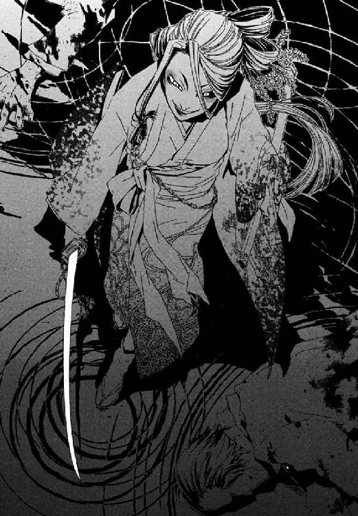
きずなの学生服が、後ろから引きずられる。目の前で今、父を殺した魔女が、立ちあがれない彼女を蹴り倒し、無力を嘲り笑う。
「顔見たらわかるで。こんなんイヤやて思ってるやろ。もういっぺん、時間を巻き戻してやりなおしたいやろ」
あの電車の中で、父と、もっといっぱい話せばよかった。十崎家の人たちに電話をしたらよかった。そうしたら、きっと助けられた。
「あんさんの魔法は、それができる。すごいなあ。でも、魔法を使わん魔法使いなんか、生ゴミやなあ」
──ここにいたくないと、生きながら火葬場の窯に突っ込まれたような怒りと後悔に骨まで焼かれながら、心の底から願った。
昂った荒い息で彼女をいたぶるジェルヴェーヌが、突如、視界の中で小さな点になった。まるで雲の上から航空写真で地上を見おろすように、すべてが厚みを失ってゆく。きずなは今この奥多摩の山中でジェルヴェーヌに草履でゴムまりみたいに乳房を踏みにじられていて、同時に巨大な流れが足もとに、遥か。それは有限の過去から有限の未来へとつらなる経糸と、座標化された位置を示す一本の緯糸。限りなく無限に近い線が交わる十字の交点にきずなが立ち、足もとにはたったひとつの文字がある。刻一刻と変化してゆき以前のパターンと一致することのない〝これ〟が、倉本きずなだ。
今、再演大系魔導師である彼女にはわかる。文字の組み合わせでできた世界なら、ノートに書かれた歴史年表を消しゴムで消して修正するように書き直せる。ノートの上の文字にとって消しゴムをどうしようもないように、未来から投射される魔法攻撃を防御などできない。彼女たちの再演大系は、数えきれないほどの魔法世界の歴史を、かつて操作してきたのだ。
「しんきくさい娘やな。まだ泣いてるのんか？」
変容した世界の中、きずなは引き寄せられるように過去を、あの夜を見ていた。
──雨の中、翼もつ鳥が空を飛ぶように力をふるう魔法使いたちがいて、ずぶ濡れで何もできず震える彼女がいた。けれど、あのときは怯えて指一本動かせなかった手で、奇蹟をつかめる。
「やだな、なんでだろ、涙、止まらないや」
魔法使いは決して、魔法から逃げられない。瑞希の言う通りだった。割れた骨の中で骨髄から血が、赤い玉のようににじんでいた父の死体を思い出し、きずなは下唇を歪める。彼女は過去を書き換えて父を取り戻せる。魔法という奇蹟の力で世界に欲望を押しとおせる。気をつかってくれた武原仁に、あやまらずにいられなかった。
「ごめんなさい、武原さん。......わたし、〝いい魔法使い〟に、なれません」
過去の変革が、同じ世界に生きる莫大な人間を巻きこむ、触れてはならない禁断の領域だとわかっていても、彼女はそのための力を使えるのだ。
「でも、ほんのちょっとだけ神様におねがいをして、......そしたらみんな、しあわせに暮らせるから」
娘は、それが電車に揺られていた父が、弱々しく語りかけてきたのと同じ言い訳だと思い出し、羞恥に顔を覆った。
魔法はかくも残酷に、魔法使いを試す。
きずなと同じ位置座標で、二百年前、魔法的なすぐそばの過去に、《扉》をひらいた再演魔導師がいる。そのやりかたを見て、新米魔女は理解する。
彼女はここに、扉があると知っている。悠久の時を積み重ねた、世界を騙し書き換えるための劇場が、きずなの浅ましい欲をかなえてくれる。幻影城──あえてこの世界とわずかにズレた時間の流れに繫留された、再演の聖域。
ジェルヴェーヌの白粉を塗った目元が、みだらに赤みを帯びる。
「《協会》が最高の魔法系のひとつに数える《再演大系》、生きてる間に見られるとは、眼福やな」
罪悪感と自己嫌悪と、みずから掛け金を外してしまった願いがからみ合い、重い鎖でしばるように少女をさいなむ。きずなの周囲の大気が、《幻影城》の切れそうに冷たい冬の空気と入れ替わり、生じた気圧差が風を起こした。背中から押し寄せた追い風につき倒され、少女は一瞬にして厳冬へと引きずりこまれ枯れてゆく斜面の青草を呆然とながめる。すぐ脇に、ボロ布に包まれた、やせこけて死んだ赤ん坊の死体の幻があった。ああそうだ。きずなの前にここへ来た再演魔導師は母親で、死んでしまった子どもを蘇らせに来たのだ。何十人という、天にそむいた望みをかなえに来た罪人の列に、今、きずなは連なっている。
ジェルヴェーヌが、感慨深くつぶやいた。
「ほんま、長かったわ。ようやく、《神の門》のお出ましかい」
†
円環大系における魔法的空間転移は、魔法使い自身がここにいるという、それ自体閉じている現象を無理やり開き《そこにいるかもしれない》場所へと再結像させる。術者が存在したことのある場所へ、記憶が確かならどこへでも転移できるが、明確にイメージできないところへ地図頼りで移動はできない。だから武原仁は、助手席にメイゼルをのせてドライブしていた。《公館》から、奥多摩の山中で再演魔術が発動したと連絡を受けたのは、暗雲の空に地平線から緋色が走る宵闇のころだった。
反応は観測史上最大級。二十日前にきずなが召喚した《無色の手》を感知したときの、数万倍。そんな巨大な構造物が、地獄の空間ないし時間軸上に割りこんだのだ。
「倉本きずなは、倉本慈雄と駅に降り、ジェルヴェーヌ・ロッソに人相が酷似した和服姿の女と会っていた。他に同行者は？」
運転したまま携帯電話でしゃべるわけにもいかず、メイゼルに言づてを頼む。
「せんせ、電車の運転手の証言では、その三人だけだって。駅舎は、《染血公主》が起こした最新の殺人事件の現場だから、現在検証中だってキョウカが言ってる」
小さな魔女の声も、震えている。十日もきずなと暮らしていたのだ。誘拐した犯人が凶悪な犯罪魔導師とあっては、平気でいられるはずがない。
事態をまてば、倉本きずなは死ぬ。ジェルヴェーヌ・ロッソが関わったとみられる事件は、公館の調べでは三十件以上あり、被害者やただ居合わせただけの人間含めて、ひとりも生存者はいない。この世界で殺した人間は、百人ではきかないだろう。
《染血公主》は、用済みになれば、かならずきずなを殺す。あたたかみのある彼女の紺色の瞳が、瞳孔をひらいて白く濁り、命を失って血の海に沈んでいるところを、ありありと想像できた。だから、焦らずにいられない。
「武原係官。了解。これより反応座標に車輛で向かう」
連絡を切ると、自動車の助手席から、メイゼルが袖をつかんできた。
「せんせ、きずなは、〝そこ〟なの？」
「まちがいないな」
彼が答えると、メイゼルが不安をこらえるように、車の窓にまっ白な肘をつく。
「あたしに相談すればよかったのに。そしたら、くよくよ思い悩むヒマなんてなくしたげたのよ」
どこまで本気か、メイゼルが手をわきわき動かしている。正念場だというのに、六年一組の、いつも彼女にいじられている委員長、寒川紀子を思い出し、ふきだした。
「ほどほどにしてやれよ。寒川、本気で怒ってるぞ」
「本気だからいいんじゃない。あの子が怒る顔、あたし泣き顔の次に好きよ」
記憶をよみがえらせて、嗜好のゆがみきった少女が、うっとりと白い花弁のような両手で頰を覆う。
仁はアクセルを踏みこみ、車を加速させる。まだ、聖騎士たちより早く幻影城に突入して、きずなを救い出す見込みは充分ある。
このときはまだ、今どれほど彼らが後手に回っているか、読みちがえていたのだ。
「やはり、あなたが来てしまいましたか」
澄みきったこだまに呼び止められたのは、樹齢五十年ほどの杉が太い幹を立てる、日当たりが悪い林。神和瑞希がかつて、エレオノールら六名と交戦した座標のすぐそばだ。仁の背に、じっとりと汗がにじんだ。
「ここを通してくれないか。こないだ、オモチャ売り場でおまえが子どもの相手をしてるのを助けてくれた、あのきずなって子が危ないんだ」
神音魔術で、転移は《場所を指す神音》をかなでるありふれた技術だ。だから、世代最強の騎士、エレオノール・ナガンに待ち伏せされていたのも、ありえないことではなかった。
「すべて、この世界が地獄の運命から救われる、《神の門》へつながる予定どおりです。消去能力を持つ者が、この先へ進むこと以外は」
鎧乙女の、わけ知り顔の宣告に、仁の臓腑は静かな怒りでねじれた。きずなを失うかもしれない焦りと、公館側の動きが読まれていた恐怖に、凍った憤怒が均衡し、彼の胸中に狂った安定をつくる。
「『予定』ってのはどういう意味だ？ 神聖騎士団は、いったい何を知っている」
「私たちの望みはただひとつ。それが終われば、遺物はお返しします」
異世界から来た魔法使いたちは、はじめこの世界の平地を支配し、悪鬼の人口が増えるにしたがって山へと追われていった。悪鬼が集まる町やムラと、そこから離れて平穏な研究場所を求めた魔導師。その構図が、山に神がすまう伝承の祖景だ。人間の近づかない場所に賢者が住み、あるいは聖人が余人に観測されない聖域で神と対面する。《幻影城》は、山の楽土として神話に影響を残した。仏教世界観における兜率天に住み五十六億七千万年後に世界を救うというマイトレーヤ、弥勒信仰の起源ともいわれ未来時点から無限に世界を改変する再演大系の舞台装置には、魔法的な出入り口の伝承が多い。世界各地に痕跡を残す《門》のひとつが、このあたりにもあったのだ。
──いや、元々《鍵》で自由に侵入できるジェルヴェーヌが、あえてきずなに《幻影城》の扉を開かせたのは、どうしてだ？
剣を抱くように、大樹の切り株に腰かけていた少女騎士が、当たり前のように立ちあがる。はじめから仁たちを斬るつもりだったのだろう、迷いなく自然に鞘をはらい、夜を迎えようとする夕空の、最後の赤光に刃をかざした。
「エレオノール。正直、こないだあんなところを見ただけに、戦いにくいんだけどな」
仁は、剣を抜いた聖騎士に、もはや話し合いはないとよく知っているから、スラックスに差したホルスターから大振りのナイフを抜いて応じる。あの日オモチャ売り場で出会った、子どもの頼みをことわれない金髪の少女が、今は人を斬るためだけに打ち鍛えられた一振りの刃だ。
「《沈黙》、......私は、命をかけて戦う相手が、あなたのようなかたであることを、感謝しています」
エレオノールの、敗北の可能性をまったく織りこんでいない余裕が、少女の誇りに火をつける。
「あんた、どこまでえらそうなわけ？ 聖騎士って、群れないとナニもできないんじゃなかった」
「相手が《沈黙》とあれば、私ひとりのほうが、制限なく戦えますので」
仁は、もりあがるのをとおりこしてカンシャクを起こしかけている、あどけない魔女を制止する。
「メイゼル、一切あそびを入れるな。こいつは、今までの敵と格がちがう」
刻印魔導師の少女の、全身がこわばる気配が、戦いの開始の合図だった。
鎧乙女が籠手の指輪を鎧に走らせる。神音魔術は音から生まれ、羽ばたく。幾多の魔導師の命を奪ってきた概念魔弾が、今まさに仁の命を絶たんと舞いあがる。
「悪いが、こっちも、是が非でもきずなちゃんを助けないわけにゃいかないんだよ！」
仁はあの雨の日、団将グレアム・ヴィエンの魔弾を破壊したときのように、消去を作動して、手を前にかかげる。十崎京香に「いつか死ぬ」と説教されたように、魔法消去は無敵の能力ではない。倉本慈雄の幻を閉じこめた氷柱が数秒間耐えたように、強力な魔術は一瞬では破壊できないのだ。そして、消しきれない魔法に急所でも撃ちぬかれれば、見えも聞こえも触覚もない幽霊のような魔術で、仁は殺される。
「せんせ、気をつけて！ 次のは大きいわ」
透明な鷹を受け止めるように、前へ向けて今度は両手をつき出す。胴体の急所を狙って飛んでくるだろう魔弾を消去するため、視覚に腕の皮膚感覚を加えて魔法消去の効率をあげたのだ。所詮、概念魔弾の飛行軌道は、射撃位置から予測できる単純なものだから、それができる。
「さすがに、通常の魔弾では突破できませんか」
今の仁には感覚できない魔炎の焦熱地獄を見ているだろう、金髪の聖騎士が、よどみのないソプラノで嘆息する。
「魔法がダメなら、今度は剣をためすか？」
もう仁と、少女騎士の間の間合いは、三メートルと離れていない。感覚できないという心臓が爆発しそうな極限状況で、エレオノールに表情を読まれないためだけに減らず口をたたく。まるで武原仁が、すべての魔法使いの天敵であるかのように。彼のかわりに、敵がおびえにとらわれてくれるようにと。
「いいえ。魔法の使いかたを変えさせていただきます」
顔色ひとつ変えずに唇が────、仁の額に鈍器で殴られたような衝撃がはじけた。
魔法消去中は、奇蹟を認識できないことと表裏一体の能力だから、そもそも魔法が見えない。だから、魔術の性質を、敵の反応と経験から類推する。そう仁は訓練され、魔法について学び積みあげてきた。
その彼が、一瞬、その攻撃の正体を見失った。つぶてのような魔法外の飛び道具では、ない。これは神音魔法だ。
「メイゼル、こいつの足を止めろ！」
叫んで、足場の悪い斜面を飛びずさりながら、魔法消去を切る。同時に、仁の背中側から轟音をたてて、大気の絶縁を破壊して火花放電が気体分子を発光させた。円環大系が得意とする稲妻だ。
聖騎士の鎧は紫電にとらえられて、空気の破裂した衝撃でその身体ごと後方に吹っ飛んだ。
「やったの!?」
「まだだ」
雷に打たれてはね飛ばされた人間が、受け身をとって起きあがるところなどそうそう見れるものではない。刻印魔導師が、二発目をはなつべく手元に負電荷を蓄積してゆく。一呼吸ほどの間に早くもメイゼルの手元で集められた電子が気体分子とぶつかって発光をはじめるが、エレオノールがまってくれるはずがない。若手最強の聖騎士が、若杉の幹を盾に走りながら、指輪で鎧のくさび紋をなぞる。足場の悪い斜面をかける足が、疾走の速度を爆発的にあげる。鎧を外骨格に、聖騎士が生身を超えた鋭さで突っこんでくる相手は、もちろん仁しかいない。
「そんな無表情で斬りかかられると、正直ものすごく悪いことをした気になるんだが」
下段から残像すらほとんど見えない速度で切りあげられた重い剣を、仁はナイフを取り落としそうになりながら、なんとか受け止める。
「......不器用なもので」
顔だけすまなそうなエレオノールが、その長剣を引いた同時に、騎士剣の紋に指輪をなぞらせる。ナイフを構え内懐に飛びこもうとした仁の頭を、一刀両断すべく切りさげられた刃は、すでに白光を放つ魔剣だ。受ければナイフなど切断しかねないそれを、距離をとって避ける。
そして騎士はそのまま、口笛のような音を鳴らしつつ、流れるように剣を胴なぎに払った。
──いましも雷を放とうとしていたメイゼルへ向かって。
剣風が実体化したか、おそらく三日月型だろう衝撃波が夏の藪をはねあげ突進する。視界をふさがれかけた仁は、慌ててもう一度消去を発動させる。そしてまた、一切の神秘は沈黙した。魔法は破壊され青葉が雨と降り、ほっとした様子で、頰をこわばらせていたメイゼルが肩から力を抜く。そして、鎧乙女を振り向いた彼は、驚愕に息をのむことになる。
魔法消去は作動しているのに、エレオノールが陽炎のような何かに包まれていたからだ。それは宗教美術で神や天使がまとうおだやかな光にも似て、しっかり見ようとすると目がちかちかする。仁に魔法が観測できているのではない。見えていない認識の空白を、脳が科学的な生理現象として、錯覚で埋めたのだ。
「本物の光背を、この目で見るのは四度目だよ」
悪鬼が魔法を観測したとき、その奇蹟は消去されている。つまり魔法消去がとおっていない状態なら、悪鬼には向こう側が、そもそも見通せないということだ。太古の地獄人たちは、見えないことを光に目がくらんでいるのだと錯覚し、強力な奇蹟のふるい手は光に包まれているとした。この防御魔術への錯視が、神話の神々や天使や聖者、神仏が背負う《光背》の起源だ。
「せんせ、消去切って。仕掛けるわ」
仁のすぐ後ろまで近づいていたメイゼルが、覚悟を決めたように言った。このあどけない魔法使いも、肌で実感したのだ。この少女聖騎士は今まで戦ってきた魔導師たちと、はっきり、格がちがう。
彼が、魔法消去を切る。メイゼルが小さな歩幅で、後ろに飛んだ。その瞬間、仁の背後から彼をはさみこむように二本とエレオノールの左右、合計三方から四本の稲妻が、人間に反応などしようのない速度で騎士を貫く。援軍が来たのではない。
「悪いけど、一気に勝負をつけるわ」
「悪いけど、一気に勝負をつけるわ」
「悪いけど、一気に勝負をつけるわ」
まったく同じ声が、まったく同じ調子で少女騎士を指差した。そして、仁に一番近いところのメイゼルが紫のリボンを揺らし、まっ赤になって怒り始める。
「あんたたち、恥ずかしいわね！ 三人でかぶってんじゃないわよ」
はじめて荒い息をついて身を起こしたエレオノールが、水晶のように澄んだ眼光を、ほんのわずかに揺らす。
「......《破滅の化身》。こんな子どもが」
《破滅の化身》。円環大系の切り札のひとつだ。
化身とは、《魔法使いがここにいること》自体を魔法的に分解し、それを《魔法的観測で再構成した》もうひとりの自分自身の姿。魔法という奇蹟の力を鏡に自分を映したとき、存在しえる、もうひとつの自分自身のかたち。円環大系の《破滅の化身》は、魔法使い自身がここにいるという、それ自体閉じた円環になっている現象を位相幾何学的に無理やり変形させ、小さな円環を理論上無数に作り出す。ひらたくいえば、自分自身を何人にでも増やすことができる。つまり奥多摩の林に現れたすべて、分身ではなく、四人ともが本物のメイゼルだ。
「これでも、貫徹らないの？」
四人から四倍の数の稲妻が、嵐のように騎士を撃つ。そのたびに金髪を振り乱してよろけながら、けれど神意の運び手は倒れない。それはまるで、人を超えた力に支えられているかのようで。ただ雷火と剣を輝かす白光が絶え間なく宵闇の薄暗い戦場を照らす、
仁の全身に、脂汗が浮いた。
「ちがう。......これは、《歌》だ」
鎧の少女は歌い続けているのだ。楽器など必要ない。人間ののどが歌で神音を発して、《光背》の防御を何度も新たに張り直しているのだ。
そして殺意すら透明な死天使が、もの問うように仁の顔を見る。彼の顔のすぐそばで、大気が爆発した。
目をつぶされそうになった仁が、転げながら木を遮蔽にとろうと、腕で頭をかばいながら走る。その腕を、二発、三発と重い衝撃が打ちすえ皮膚をそぎ取り、骨をきしませる。接近しても、十メートル離れても、致命打を狙う攻撃の精度がまったく変わらないのだ。距離感が喪失するような、その狙いの正確さに呼吸を整えることすらできない。動きを先読みするように、ごく自然に、急所へ破壊力が吸いこまれてゆく。
「せんせ、無理しないで！ こいつに近づくの無理だわ」
ようやく仁にも、この攻撃の正体がわかってきた。神音魔術が奇蹟を発現させるのは、音が神音になった瞬間と位置だ。空気中を伝達する音は、低音が高音より消耗しやすいことなどで常に変質しているため、普通の神音魔導師は、魔法の発現位置を精密制御できず、誘導なしでは魔弾を当てられない。だが、エレオノールは狙ったところに魔法を発現させられるのだ。
「なるほど。こいつは魔法消去をすり抜ける見えない魔弾ってわけか！」
木の陰にようやく退避して、血みどろになった左手をかばう。鷹のかたちの魔弾を仁が飛来する間に破壊していたように、消去には時間が要る。そもそも魔法消去が一瞬で完了する現象なら、魔炎は魔法の強さに応じて瞬間的に爆発するだけで、炎をあげて燃え続けはしない。観測し続けることで累積し、奇蹟を破壊し続ける継続的な現象だから、魔法消去では軌道も弾体もなく着弾の瞬間に威力だけが現れる魔法など、消去しきれない。
「対策は万全......か。こりゃキツイぞ」
一秒ごとに、勝算の薄さを思い知らされてゆくようだ。なら、悪鬼の観測ではなく、魔力型最大級の円環大系の出力と《破滅の化身》の手数で押し切ってもらうか。
高く笛を鳴らすように、少女が大きく吸いこむ。小気味よいスタッカートがついた、特殊な歌唱法が可能にする超高速のリズムで、単音の神音が十六個発された。
「なにこれ!?」
マシンガンなのかショットガンなのか魔弾の乱れ撃ちを、メイゼルが三人がかりの大気の防壁でなんとか食い止めた。
さらにその先に、更に鋭い聖騎士の刺突が迫っている。四人めのメイゼルが、雷光を放って《光背》に弾かれつつも急膨張した大気の破裂でなんとか剣尖をそらさせる。
四人いて防戦一方だ。
「メイゼルさがれ！ こいつは、シャレにならん」
《破滅の化身》は、ただ人数が増える都合のいいものではない、致命的な弱点がある。何人に増えてもメイゼルという円環なす存在はひとつだから、《化身》発動中のメイゼルは全員が等しいものでなければならない。そのうちひとりに、かすり傷ひとつでもついて等質でなくなれば、伸ばしきった輪ゴムが小さな切れ目ひとつで簡単にちぎれてしまうように、鴉木メイゼルという全存在が消滅する。
「くそっ。ここまで何のためらいもなく剣を向けられるかよ！」
仁は毒づいて、痺れが引きそうもない左手を盾に聖騎士へと突進する。あの日きずなと行ったオモチャ売り場で、聖騎士ニコライ・バルトは、この少女聖騎士が「透明である」と賞賛した。けれど仁は、オモチャ売り場では子どもの頼みをことわらないお姉さんであり、戦場では脅威と見た子どもをためらいなく殺す鬼と化す、剣の乙女の透明さが悲しい。神意に透明であっても、きずなと同い年くらいだろうエレオノール・ナガンという、ひとりの人間の意志がそこにないから。
「いい加減にしろ！」
命のやりとりに、子どももおとなもない。それでも理不尽な怒りにかられずにいられない。メイゼルを追撃にかかったエレオノールの背中へ、仁は姿勢を低くして肩からぶつかってゆく。聖騎士が、ふり返りざま肩の高さで夜風を両断せんと剣を振りぬく。鋼鉄でよろわれた腰へタックルする仁の頭と、髪を数十本斬り飛ばした魔法の白刃が一瞬、すれちがった。
衝突の瞬間、鉄にぶつかった仁の肩がぎしりときしむ。魔法消去を作動させ、《光背》を作動したままのエレオノールの意外に細い身体を、両手で抱えこみ、締めつける。
「うおおおおおらぁっ」
視覚聴覚嗅覚、皮膚感覚を総動員して一気に防御魔術を魔炎に焼き切った仁が、そのまま重い金属鎧ごと少女を肩車に持ち上げ、体重をかけて地面に投げ落とした。奇蹟の加護を失って右肩から落下したエレオノールが、土まみれになりながら、なだらかな斜面を転げ落ちる。
「メイゼル！ 無事か？」
仁は攻撃魔法を暴発させないよう、消去を停止してふり返る。メイゼルたちが、その手に雷光を集め、今にも放とうとしているところだった。
「せんせ、なにしてるの？ 今しかな──」
木の幹に背中を打ちつけて、まだ立ち上がれない少女聖騎士が、つらぬけとばかりに大地へ剣を突き立てた。その瞬間、その一点から影が一万本の切片となって渦を巻きはじけ飛び、周囲から完全に音が消えた。
なぜ、静かなのだろう。
その違和感に、仁がきたえあげてきた勘が、最大級の警告を鳴らし始める。もし沈黙を引き起こす魔法が神音大系において作られ、命のやりとりの最中にそれを発動する意味があるとしたら、雑音を排除するためだ。大きなエネルギーを扱う科学実験が、極限の環境管理の下で行われるように。
完璧な白地の世界に──もっとも精妙で複雑な神音が、はじけた。
「化身、戻せ！」
仁は彼の生徒を押し倒し、背中にかばう。超高精度神音。神ならぬ人間が戦闘中にかなでるため、ある程度のぶれ幅を許容範囲として織りこんだものではない。本当に完璧な音を要求する《世界の索引》としての純粋な神音魔術が、神の拳となって炸裂する。
圧倒的な破壊力が音すら発せず荒れ狂い、とっさに作動した魔法消去を大出力で突破する。風と土礫が仁の背中を石のように打ちすえ、地面に押しつける。
顔をあげ、夜のとばりの下、まわりが暗すぎて視界がきかないことに、恐怖で歯の根が嚙み合わなくなった。耳鳴りがして、何も聞こえない。
「せんせ！ せんせ！」
メイゼルに揺り起こされて、仁が勇気を振り絞り、状況確認に消去を切って顔をあげる。
意識が朦朧としているのではないかと、疑った。錯覚ではないと知り、無力感と死の覚悟が、冷たく心臓にからみつく。上級聖騎士エレオノール・ナガンが、ふたりいた。
「こちらも《化身》を、使わせていただきます」
世界の《索引》だから、神音には、《あなた》《これ》といった抽象的な代名詞が存在しない。たったひとつの例外が、観測者である魔導師自身を表す《私自身》だ。このひとつずつ微妙にちがい、誰もが自分自身の力で見出さなければならない神音は、《私自身》つまり術者本人を世界から引き出す。そして、もうひとりのエレオノールは、本物のエレオノール自身はここにいるから、《影》としてしか存在できない。それが、神音大系魔術の《化身》たる、《ゆらぎの化身》。
その特徴は──。
悲鳴をあげる全身の筋肉を無理やり使役して、傷だらけの仁は立ちあがる。魔法消去で、少女聖騎士を守っている奇蹟を焼き切る。魔法を失った重い鎧を引きずり、まだエレオノールの足は止まらない。仁は同じくらい相手も苦しく、怖いのだと自分に言い聞かせる。そう信じなければ心がへし折れる。
カツ──ンと。
ナイフで長剣を受け止めた音が、山間に澄んだ響きをあげる。雷光も白光の魔剣もないと山深い林は暗く、お互いの顔すらろくに見えない。だが、仁には、エレオノールの荒い息づかいが確かに聞こえる。
「さすがは公館の誇る鏖殺戦鬼」
仁は、騎士の腕の外側線を転がるように、体を回旋させる。鎧の右手首を捕獲したままで。
対魔導師戦の基本である組みうちに移行しようとしているのに、しかしエレオノールは防御にはいる気配もない。ぞっと幽霊を見たような瞬間。
「よけて！」
悲鳴のようなメイゼルの声に従って、腕を離して体を沈めたと同時に、ちょうど首があった位置を迅風が切り裂いた。
さっきの魔法消去を生きのびて《影》が、《ゆらぎの化身》がまだ動いているのだ。これでは二対一も同然で、しかも片方を彼は認識すらできない。
「《影》はどこだ!?」
狙いをつけて消去しようにも、魔法が見えない今、《ゆらぎの化身》の位置がわからない。
「左！ いや、動いた。正面！」
らちが開かないと、魔法消去を切った瞬間、《ゆらぎの化身》は正面にあって、まさに彼を串刺しにしようとしているところだった。体を開いたと同時に、《影》の凶刃が胸元をかすめる。
間髪入れず、仁の額の上で魔弾が破裂した。血が飛び散り、よろめいた彼に追い打ちで、胴体に、足に、肩に、消去で減衰していない急所に当たれば死ねる威力の〝見えない魔弾〟が着弾する。視力をうばわれないよう、必死で目だけは手でかばいながら、状況を把握しようと歯を食いしばり前を向き続ける。ついにナイフまでが、握った指からはね飛ばされた。
《ゆらぎの化身》もまた、《破滅の化身》と同様、単体で魔法を使う。手数が二倍になった見えない魔弾が、仁の身体をめった打ちにして、すこしずつ後ろにはね飛ばしてゆく。ちがう。エレオノールとまったく同じ魔法技量を持つ《化身》だけが彼を釘づけにしている。騎士本人はひとりずつ確実に倒すつもりか剣をひっさげ、泣きそうな顔で仁を掩護しようとしている子どもを、鎧の足を足場の悪い地面に取られながらも追いつめているのだ。
「さがれ！ やられるぞ、さがれ！」
仁は視線をただ一点、《ゆらぎの化身》の頭に集中して、魔法消去を作動した。《影》を完全に破壊できなくていい、口だけが止まればあのあどけない魔女を助けにゆける。消去作動と同時に魔弾の着弾数が、きっと魔炎に包まれているのだろう《化身》の損傷を反映するように減ってゆく。そして沈黙を確かめて魔法消去を落とし、仁が見たものは。
五十羽を超える白い鳩の群れのかたちをとって、解きはなたれた、死を告げる概念魔弾。
かわせる数でも、受け止めきれる数でもない。エレオノールは《化身》で彼の注意を引きつけ、歩きながらずっとこの翼ある魔弾を、仁の視界外に結晶させ続けていた。魔法消去をすり抜ける最も確実な手段は何か？ 観測されない死角に奇蹟を置けばいい。
「逃げろ！」
悲痛な男の叫びが響く、仁自身の声だった。
鎧の騎士が荒い息をつき、メイゼルのすぐそばにせまっている。勝敗はすでに決したと、この場の誰もが知っていた。刻印魔導師の少女が、棒立ちのままこわばった微笑みを向け、押し寄せる運命から最後まで逃げずに、胸を張って目を閉じた。幼なじみが言うとおり、専任係官として正しいのは刻印魔導師を消耗品として使い捨てる、神和瑞希のほうだ。それでも、目の前でメイゼルに死なれたら、きっと彼の中で何かたいせつなものが死んでしまう。だから、わけのわからない咆哮をあげ、仁は走らずにいられない。
人を救わない奇蹟など消えろと、視界を血走った目でにらみ魔法を焼き滅ぼす。重い全身鎧の聖騎士より、満身創痍の仁ははるかに足が速い。だが、騎士を組み伏せても、消去しきれない魔弾の嵐が、子どもの華奢な体をバラバラに引き裂く。
一瞬、消去を切って魔法を確認したとき、目に飛びこんできた白い鳩は大きさを一回り縮めたかわりに、数百羽に増殖し、まさに雲霞。魔法構造が揺らぐと分裂する魔弾の、先頭の一羽を、飛びこんだ仁の手が握り潰し、その瞬間爆発して右手の感覚が消失した。
魔弾と刃が彼の生徒に到達する寸前、ニセ教師は間に合った。神なき地獄に起こった、ひとつの奇蹟だと思った。
仁の目の前には今、傷ひとつないメイゼルがいて、魔法はなく、そしてかわりに背中から彼を串刺しにした剣尖が心臓のすぐ脇から突き出ていた。自分が刺されたのだと、胸が焼けるように熱くて、全身を血が脈打つ音が耳元でがなり立てるほどなのに、最初気づかなかった。
「......魔弾、......消え、た、か？」
目の前の愛おしい少女が、身に持った奇蹟の力でここから逃げられるよう、最後の魔法消去を切る。痛い、どうしようもなく熱い、力もはいらない。でも、彼の生徒を傷つける魔法は、もう存在しない。真っ青になって、メイゼルが言葉を失ったように首をカクカクとふる。仁も涙だか鼻水だかわからないものがあふれて、どんな顔をしているかもわからない。目から涙をこぼす小さな魔女に、かけてやる言葉も浮かばないほど、意識がぼやけてゆく。
彼の胸から突き出ていた剣が、肉をそぎ取りながら容赦なく引き抜かれた。鋼でふさがれていた動脈から、血潮が霧のように噴く。急速に力が抜け視界がぐるぐる回る中、感覚のない足を踏ん張り、粘つく血を口の中で泡立たせながら。彼を倒した騎士を見すえ、重い腕を広げて立ちはだかった。なぜだか、ふと、今朝はまだ十崎家にきずながいて、京香がいて、メイゼルがいて、おだやかだったことを思い出す。
夜闇の中、誰ひとり、声を発する者はない。
返り血を浴びた聖騎士を揺れる視界の中にとらえながら、武原仁は死を前に不思議な充足感に満たされていた。きずなをもう助けに行けないのも、メイゼルを残していかねばならないのも、身を切られるほど心残りだ。けれどどこか、最悪を見ずにすんだと、ほっとした。精一杯やりとげたような、もうこれで解放されるんだという、一瞬の心地よさが、胸をよぎる。
ああ、これは、幼い刻印魔導師に彼が見せたかった《この世界の人間の背中》だろうか。
「にげろ」
メイゼルへと、最後のつもりでかけた声は、聞き取れないほどかすれ、濁っていた。肺の動脈が破れ、血のかたまりを口からはき出す。反転する夜空をながめながら、あおむけにぶったおれると、体が一度だけ弾んだ。
なのに、なぜだろう。仁が背中に守った、とっくに逃げているはずのメイゼルの泣き顔が、すぐそばにあるのだ。愛らしい顔をくしゃくしゃにして、背中も胸も痺れる手足も寒くてどんどん眠くなる彼を、必死で揺り起こそうとするのだ。闇の底へと沈みながら、みんな、ずっといっしょにいたいと思い、死にたくないとこみあげる。京香に言われた、メイゼルが見たいのは仁の背中ではないんだ。もう見えなくても小さな手が、指をからめるように、血まみれの仁と手をつなぐ熱が、熱が。
......もう夜か。夜なら家に帰らないといけない。みんな、みんな......まっている。
失った多くの懐かしいものと、倒してきた敵の断末魔と、きっと数えれば苦しいことばかり並んでいる過去が、血潮の温度の泡沫とともに遠くへ去り。紫の疵を散りばめて視界に白く焼きつく闇を最期に──。
武原仁の意識は、無尽の静寂に砕けた。
身体を起こすと、そこには十崎京香がいて、思い切り平手打ちされた。
泣きはらしたように、腫れぼったいまぶたの下から充血した目が、武原仁を見おろしていた。
何もかもがすべて終わったような、ひどくおだやかな昼下がりで、そこには気持ちよい風が吹いていて、カーテンがゆっくり揺れている。
じんじんと響く頰と、病院のベッドの脇でうつむいて肩を震わすスーツ姿の幼なじみと、あまりに静かな病室。なにかが足りないような気がした。
「メイゼルは？」
そのとき、時間が止まった。
「──死んだわ」
なんでそうなると、叫びたいのに息もできない。
「勝手に倒れた仁を守って！ あの子は、ひとりっきりで戦って！ ひとりであなたのこと公館まで運んで、ボロボロになって死んだわ！」
メイゼルが死んだ。彼女がもういない。その事実がしみわたってゆくにつれて、全身の細胞が壊死したように、感覚がなくなってゆく。京香に一言罵声をあびせられるたび、むなしく鼓動をたたく心臓から送られる血液も冷えてゆく。
「どうして、最後まで、あの子のことを見てあげなかったの？ あの子が、仁を見捨てられるわけないでしょ！ 気持ちだって、わかってたんでしょ！」
幼なじみが、泣きながら首を絞めるように胸ぐらをつかんで、精神も肉体も力尽きた彼を揺さぶる。殺すならなぜ俺じゃないと、目を閉じた。
──暗黒に吸いこまれるように落っこちた意識が、気づくと後頭部にたまっていた。そして、世界が裏返るように、歓喜に満ちて白く、ただまばゆく、光。
照明の逆光になったように、会いたくてしかたなかった彼女の輪郭が、仁を見おろしていた。これまで見ていたのが悪夢だったか、それとも今が都合のいい夢なのか。
「せんせ！ せんせ！ よかった」
メイゼルが目に涙を浮かべて彼にしがみついている。確かな感触と、体温を感じる。心臓が高鳴って、もし夢でも、ずっとだまされていていいと思った。泣いてしまってないか、変な見栄がはたらいて、仁はまぶたを閉じる。
「よかった、......ぜんぶ、ゆめ、か？」
もの問いたげな様子の少女が幻ではないと確かめたくて、鼻腔の奥の熱をすすりあげながら、何度も強く抱き寄せ直す。落ちかかった長い髪に皮膚をくすぐられ、甘いような髪と汗のにおいが混じったものを嗅ぎ、そのぬくもりに安心する。鴉木メイゼルが、彼の生徒が、生きてここにいてくれる。
「私は、悪鬼を助けるのは気が進まなかったのだがね」
後ろからかけられた侮蔑の声に驚いて、メイゼルがまっ赤にほこほこした顔で仁の腕をすり抜ける。そこにいたのは、影のような黒いローブをまとった、顎髭の男。《協会》の調整官ベルニッチ。公館職員に嫌味を言うのが仕事だと思っていた中年魔導師が、血に汚れた手を白いハンカチでふいている。
「今日ばっかりは、素直に礼を言わせてくれ......」
礼を言おうとして身体を起こし、胸の奥でずきりと鈍くうずいた痛みに声を失う。
ここは天井が重苦しい、魔導師公館の玄関ホールで、彼は車輪つきの担架に上半身裸でのせられていた。右腕の動脈には、輸血パックに繫がった点滴のチューブが刺さっている。胸を貫かれた武原仁は、魔法と現代医療の合同作業で命を救われたのだ。
「礼なら忠実な刻印魔導師に言うがいい。今の君を生かしているのは、途切れかけた《生命の円環》を固定した、この娘の概念魔術だからな」
「せんせ。絶対にしばらく魔法消去使っちゃダメよ。今のせんせの体、穴があいて破裂しかけた風船みたいになってたのを、魔法で無理やり維持してるだけなんだから」
メイゼルが心配そうに、それでも難しい技術に成功して、得意げにかわいらしい小鼻を動かしている。
「たいしたもんだよ。本当に、奇蹟だな」
魔弾を受ける盾にしたせいで、骨が見えかけていた左腕まで元通りだ。もう薄皮が張って、出血ひとつない。
ベルニッチの顎髭をさするしぐさも満足げだ。
「聞くがいい、《沈黙》。我ら《協会》の魔導師は、君を延命した円環魔術を軸に、血管をふさいで重要臓器を修復した。傷の補強、接合部の強化に、自然治癒を早める魔術で仕上げたが。......傷がふさがる前に魔法消去を使えば、死だ」
高度研究のために、《地獄》と呼ぶ世界までおりてくるような魔法使いだ。腕の悪かろうはずがない。自分で説明しながら興にのってきた様子で、袖口から鎮静剤の葉巻をとりだすと吸い口を歯でかみ切り、魔法で火をつける。
「あとのことは、そちらの責任者に話してある。好きに戦って、好きに死ぬがいい」
そして白い煙を吐き出した。見渡せば、この公館本館の玄関ホールには、メイゼルと仁と、ベルニッチしかいない。悪鬼である職員全員が、彼を魔法消去に巻きこまないよう場を外してくれたのだ。
ベルニッチが、「地獄の空気は臭すぎる」といつもどおり毒づきながら、魔導師のみが立ち入れる奥の院へと去ってゆく。そして古びた絨毯の敷かれただだっ広いホールに、トウモロコシのような香りの煙と、男と少女だけが残された。
ふたりきりになると、話すことがたくさんあった。けれど、切り出しかたひとつで意味合いが変わってしまうような気がして、どう言葉にしていいかわからない。仁にとって、この小さな魔女は、たいせつで、失ってはならないもので──。
ずるいおとなより、メイゼルの心のほうがはやく決壊した。
「ごめんなさい、せんせ。あたし、もうこれでいいかなって思った......」
誇り高い魔法使いではなく子どもの表情になって、震えながらストレッチャーをつかむ。彼を運んでくれた勇気ある手に、心配ないと伝わるよう、そっと傷だらけの手をかぶせた。
「いいんだよ。生きててくれたら、それでいいんだ」
今にも壊れそうなほどもろい、涙をこらえたこの顔が、刻印魔導師という重すぎる現実と格闘する少女の素顔だ。心の底から、これで終われると責任を手放しかけたことを、恥じた。
「あたしをかばって、あたしのせいでこんなになった」
「いいんだ。おまえが傷つくより、このほうが、ずっといい」
もう治ったたくさんの傷口を、メイゼルの小さな指が触れてゆく。そのひとつひとつの傷痕が、仁を、ただの敵対魔導師を倒す猟犬よりすこしマシなものにしてくれている。
「おまえがもし死んだら、俺の中で、武原仁って男も死ぬような気がするんだ」
もしも次に寝て覚めたとき現実があの悪夢のほうだったらと思うと、彼はもう二度と眠りたくない。
「だから、俺がどんなふうになっても、おまえは生きててくれ」
口調が、どうしようもなく情けないくらい切々としていて、恥ずかしくなってくる。
ストレッチャーを降りようと体をかがめたとき。
ごく自然に、重力に引かれたように、メイゼルの顔が仁のそれと重なった。陶酔した表情の少女の唇が、彼のほっぺにキスをしていた。
夢見るようにまぶたを閉じ、チュッと小鳥がさえずるような音を鳴らす。男の背中を見せて、そういうピンク色の反応がきたのが予想外で、仁は呆然とするしかない。正気に返ったメイゼルが慌てだす。
「ごごごごごゴホウビよ、ごほうび！ あたしを守ったごほうび。......そこでのぞいているの！ 帰ってきたら泣かせるわよっ」
そして指差した少女自身が硬直した。玄関ホールから二階へあがる大階段に座りこんで、専任係官、神和瑞希がじーっと彼らを凝視していたからだ。
「や、やあ......。いたんなら、声くらいかけ──」
強烈にばつが悪くて、近寄ってくる同僚にかけた声は衝撃とともに中断させられた。瑞希のチョップが、仁の額を縦にぶったたいていたからだ。
「......最近、......きずな、いつも、貴方の、......話、ばっかり」
神和とこんな関係だったっけと混乱する仁の頭に、瑞希が無表情なまま、ガスガスと拳を打ちこんでくる。これは殺意がないだろうか。
「そっか、きずなちゃんがか」
きずなが自分のことを話してるのかと、ちょっと意識してしまうと、もやもやしたものが胸にわきたった。家庭的な少女の、制服のうえにエプロンをつけた後ろ姿が頭に浮かんでしまう。女子高生だとこうも劣情がまじるものかと、さすがにやましい気分になる。
「......にやけすぎ」
いつの間に背後にいたか、瑞希に、後頭部にゲンコツをもらった。同年代の友だちの、近くに男がいると嫌らしい。
「さっきあたしに『おまえがいないと生きてけない』って告白したくせに！ やっぱり、おっぱいなの？」
ものすごい目で、メイゼルが彼をにらんでいた。頭の中がまっ白になった。
「まて、さっきの告白ちがう告白ちがうそういう話ちがうだろちゃんと話を聞け！」
──騒がしくなったホールに、固いノックの音が響いた。
それは窓のカーテンを閉め切った快適な空間の外に、確かに広がる現実からの呼び声。ここは魔法世界と地獄の間で、幾多の光と影を折り重ねてきた魔導師公館。多くの男と女が出て二度と還らなかった、照明の明かりがとどかない、翳りだらけの玄関ホール。
返事をしようとした仁を制止して、メイゼルが大きな声で答えた。
「ここにいるわ。せんせも、目を覚ましたわ。ぜんぜん無事！」
魔法消去で治療魔法を破壊しないよう、地獄人の同僚たちは、夜闇の中でまってくれたのだ。そして、ひとり大量殺人犯に連れ去られ、ここにいないきずなは、今、どうしていることだろう。
大扉へ向かったメイゼルの小さな肩をつかまえて、仁が大きな歩幅で前を行く。ここから先は、人があたりまえに人として扱われない、冷たい世界だ。だが少女が、彼の手の指をぎゅっと握る。
「胸の傷を魔法でふさいでるんだから、この世界の人に絶対声を聞かせちゃダメよ。呼んでるのはキョウカだもの。返事くらい、あたしができるわ」
木材をたたく重いノックが、戦前から公館の玄関を守り続けるドアの向こうで、もう一度せき立てる。背の低いメイゼルが、同じドアのいくぶん低い位置をたたきかえすと、冷たい声が彼らに命じた。
「専任係官、武原仁。あなたを、再演大系遺跡《幻影城》への一次攻撃要員として指名します」
十崎家の酔っぱらいのあるじ、公館事務官、十崎京香の声が、いまは夜の女王のような威厳に満ちている。
命令が無くても、あのお節介でやさしいきずなを取り戻しに行くつもりだったから、了解のノックを返す。自分が答えるのにと、唇を引き結んだ小学生ににらまれた。
「《協会》からは、ジェルヴェーヌ・ロッソを可能なら殺害せず捕獲するよう要求がきています。併せて、あなたを《幻影城》攻撃に加えるよう指名してきました。今のあなたが投入候補の戦力で最弱だからです」
京香の声は、大きくはない。広大な公館の前庭の外には、まったく漏れていないだろう。なのにホールの大気を、その意志が凍りつかせる。
「《公館》としての、ジェルヴェーヌの件についての見解を伝えます。──殺しなさい。この世界で、我々が生き残るために、彼ら魔法使いのルールをとおさせてはなりません」
十崎家での京香しか知らない、直接命令を拝命することのなかったメイゼルが、返事どころか、息すらつまっている様子で立ちつくしていた。かわりに仁が、了承の意味をこめて扉を軽くたたく。異世界人であるがゆえこの世界の法を無視する犯罪魔導師たちの、人権を蹂躙し返す最速の問題解決機関。本質が無惨だから、偽善でも人間らしくあらねば耐えられない、平和な国が靴底の下に踏む影。それが公館と、鏖殺戦鬼と呼ばれる彼ら専任係官だ。
そして、まだいつもどおりを崩すまいとしているメイゼルへと、さらに過酷な宣告がくだされる。
「刻印魔導師、鴉木メイゼル。同行して、武原係官を補助しなさい。ただし、武原係官が戦死した場合、裏切りがあったと見なし、あなたを、理由にかかわらず処刑します」
京香は本当にやるだろう。それが、《協会》の魔導師たちが名前を呼ぶのもはばかる事務官、十崎京香だ。
二ヶ月もいっしょに暮らした保護者からの処刑宣告に、華奢な少女は血の気が引いて、立っているのもやっとだ。勇気づけるように、仁はその弱々しい両肩に手を置いてやる。京香は、幼い刻印魔導師ではなく彼を脅したのだ。彼女を守りたくば、決して死ぬことはゆるさないと。
仁のスラックスが、関節が白くなるほど強くにぎられていた。
「せんせ、あたしの命がかかってるんだから、ぜったい死んじゃダメだからね」
魔法で命をつないでいる今の彼は、維持魔法を破壊すれば死ぬ。傷が完全になおり魔法消去を使えるようになってすら、エレオノールのような高位魔導師は消去を突破してくる。だがそれでも、《染血公主》も聖騎士たちも叩きつぶさねばならない。わずか七人の専任係官が、日本全域ににらみを利かせられるのは、その名が恐怖の象徴だからにすぎないのだ。
「この状態のあなたを送り出す以上、生きて帰れとは言いません」
十崎京香は決して、管理者として最も重い責務から逃げない。公館に受け継がれてきたこの罪深い命令を、彼女がくだす。
「武原係官。《幻影城》に存在するすべての敵対魔導師を、鏖殺にしなさい。それが何者であろうと、ひとりたりとも、情けをかけてはなりません」
仁はその重い扉に手をあてて、厳しい年上のおさななじみの、今は決して見れない素顔を感じようとする。隔絶の向こう側で孤独に立つ、強い女へ伝われと、仁はこの非人間的きわまりない命令への返答に、うたうようなリズムをつけてドアをたたく。
実直なノックが、ひとつだけ、ガツンと強く戻ってくる。おさななじみが苦笑している気がした。
戦闘準備は、公館に用意されていた装備類を身につけ十分で終わった。きずなの状況は不明。仁たちはジェルヴェーヌと聖騎士たちの間で進行している事態に、わりこむことになる。
エレオノールと交戦した場所までメイゼルに魔法で運んでもらう。まだ二時間と経っていないはずなのに、奥多摩の山はすっかり暮れている。空梅雨とはいえ、今夜は雨だそうだ。
「今の連絡。......聖騎士、......全員、同時に消えた。追跡、不能......。魔法的転移......再出現場所が特定できないから、......この世界の座標じゃない」
公館からのメールを、神和瑞希が、感情を感じさせない声で読みあげる。《魔獣使い》も、友だちになったきずなを救うため、志願してくれたのだ。計画では、彼ら少数精鋭の一次攻撃隊が、倉本きずなをかすめとる。三時間連絡がなければ全員死亡とみなし、凶悪な罪人、刻印魔導師たちを大量投入した二次攻撃で《幻影城》内の全魔導師を殲滅する。
再演魔術が作動すれば、今ある世界は音もなく覆る。魔法による記述変更が一箇所だとしても、世界は連鎖的に新しい流れへと書き換わるからだ。そこでは仁たちが守ろうとしたものは根こそぎ奪われているかもしれない。起こった事態の深刻さによっては、仁が、あの普通の女の子だったきずなを犯罪魔導師として逮捕せねばならない最悪すらあり得るのだ。再演魔術を止められる限界を、十崎京香は三時間と設定した。何もかもが、時間との勝負だ。
「聖騎士十二名様。......現地の抹殺リストに、追加」
「あいつら、《幻影城》に直接跳躍できるのか？」
「たぶん、......そう」
闇の中、《魔獣使い》がうなずく。幻影城へ直接魔法で飛べる聖騎士たちが、日本に来て十日間もまった。その不可解も、〝そこ〟へ行けばはっきりするはずだ。
《扉》は、夏山に一点しみのように広がる冬枯れの草地に、たたずんでいた。翼を広げた天使の壮麗な飾りがほどこされた、白いドア。しかも、巨大さをうかがえる全体を見せず、金のにぎりを中心に半径八十センチほどだけが実体化している。魔法消去の影響を避けつつ、中にはいる者だけを引きこむしかけだ。
三〇分の山歩きですっかりへばった小学生に、瑞希が、中空から取り出した桃を押しつけた。
「......あげる」
のどが渇いて息も絶え絶えだったメイゼルが、皮をむいて水気の多い果実にかぶりつき、しあわせそうな顔を見せる。万物の源たる一気から鰐を生み出すように、植物も自在に作り出す。《気》を扱う魔法使いとして、《魔獣使い》神和瑞希は霞を喰って生きたという仙人の域にある。
「さあ、行こうか？」
仁の声に、神和瑞希が、無言でうなずく。メイゼルは桃の種を魔力で焼いて、灰を風に流す。
「恋敵助けるのに命かけるなんて、あたし、ずいぶんお人好しだわ」
手を前にのばし、しっかりと《扉》の握りをつかむ。瞬間、高い、天まで届くような、両開きの扉が、完全なかたちで彼らの前に具現化した。
仁の手がきしみをたてる扉を押し、白い光に満たされた世界を開く。
運命を告げるように、柱時計の音が鳴った。
そして、視界がひらけると、そこはすでに《地獄》ではなく、幻夢の城だった。現実の光景であると、認めることを理性が拒絶する。支える柱もなく吊られているわけでもないのに、何本もの廊下が雲にとどくような高空にかかり、塔のような螺旋階段がどこまでも高くのぼってゆく。空の色は東では朝焼けの紫、天頂は漆黒の星海に星座がまたたき、西には夕焼け。そして見る間に、残像をひく鬼火のように太陽がのぼり、高い場所に南中して沈んでいった。その奇観は絶世と称するもバカバカしい、でたらめさだ。
ここにあふれているものは、狂気にも似た、悪意だ。世界のいとなみを嘲笑し、愚弄し、不変のものなど存在しないと、それが唯一無二であることを完全否定する。目に入るものそれぞれが素晴らしい名品でありながら、何もかもが模造品の、演劇の小道具だとわかる。完璧に快適な再演大系の遺構の内部は、はたして春なのか、冬なのか、それとも夏なのか。視覚はそそぐ夏の強い太陽光にくらまされ、目の端に春のツバメが風をすべるのをとらえ、触れた柱はびっくりするほど冷たく結露していた。
「なんだこれは」
仁には、呆然と息をつくことしかできない。
通り雨が去った夏の昼間のような、透明な輝きが頭上から神の恵みのように降りそそぐ。見あげると、蜘蛛の巣に雨露のしずくを落としたような浄玻璃の、十六方に延びる銀色の回廊が、空をおおうようにわたされていた。
距離感を喪失するような、どこまで続いているかもわからない巨大さだった。はるか地平線では、かつて作られたものと、壊された廃墟と、これから作られるものが、あばらのむき出しになった骸をさらして横たわっている。
重力を無視して膨大な通廊と階段がかかっているというのに、《幻影城》からの皮肉のつもりか、仁たちがいるガラスの平野からのぼれる場所は、階段ひとつしかなかった。
「なによ、なんなの！」
一段目に足をかけたメイゼルが、足もとに目をやり、激怒するようなかん高い悲鳴をあげた。
海のように果てなく深い透明なガラスの床の底で、悪魔のような巨大な黒い何者かが、身体をかがめた格好で、何千本という鎖にしばりつけられているのだ。異様さに、いくつもの魔法遺物に足を踏みいれた仁ですら震えが走った。どこでもないために築かれたようなここは、人のいるべき場所じゃない。こんなところに、人が長居していいわけはない。
《魔獣使い》神和瑞希が、魅入られたように黒いけものを凝視していた。呼吸すら忘れて固まったその頰が、上気している。永久凍土に落とされた魔王はいつかまた地上の王者となることを熱望している。
──この城の扉があんなにも大きいのは、あるじたる《これ》が外へ出るためのものだからではないかと。
背筋に寒気が走ったと同時に仁は、平手打ちに音高く、女子高生の横面を張り倒した。
「目を覚ませ。とりこまれるぞ！」
滑るように水晶の床に倒れた瑞希が、今までの無表情とはちがう虚無をたたえた屍体のうつろさで、ふりあおぐ。彼女が、唇の端から垂れたよだれをぬぐう。瞳孔に、ようやく意志の光がもどってきた。
持ちあがりかけた《けもの》の重いまぶたが、おっくうそうにまた閉じてゆく。仁は一戦もしない前から、全身に冷や汗をかいていた。一瞬ごとに、正常な感覚を切り崩され、生け贄にささげているかのようだ。
「いったいこんなもので何をするつもりだったんだ、再演大系は？」
言い伝えどおりなら、これを造った神人たちか。それとも、再演大系の魔術装置には、これほどの禍々しい何かが必要なのか。
「もう、......行こう。......ここは、......よくない」
倉本きずなを、あの心地よい普通さを運んでくれる彼女を、こんな歪んだ世界に置いていてはいけない。
そして狂気の天国に、高いところから歌が聞こえた。男声のなかにひとつだけ、伸びのある豊かなソプラノが混じった、とても美しい合唱だ。
びしりと、震えた水晶の壁にひびがはいり、青い波紋が縦横にさざ波立って遠くへと広がってゆく。光の切片が桜の花びらになって、一枚、そよ風に舞う。
「せんせ。これ、神音魔法だわ。暴発してる」
音と神音魔導師の一組があれば発動する神音魔術は、悪鬼のいない環境では、膨大な魔法暴発を引き起こす。変質しながら遠くまで到達する音が、こんなふうに、勝手に神音になってしまうのだ。地獄では、ほぼすべての魔法は直接間接に悪鬼の観測にさらされ、弱い魔法は消滅すら目立たないだけで。
「まずいな。合唱だ。規模がでかいぞ」
神音の合唱は、人間が発音できない神音にかえて和声を積みあげた大魔術の発動法だ。階段をかけあがろうとした仁の前で、さっきまで一本だった階段が、三本に分かれていた。
「......三手に、別れろって、......こと、だと思う」
「そうだ。せんせ、この時間が全部終わったら、ピピッって音が鳴るから、それまでは絶対に魔法消去使っちゃダメよ」
突然そう言って、メイゼルが仁に、手のひらサイズの競技用ストップウォッチを握らせてきた。まるで弟がいたずらしないか心配している、お姉さんだ。
「今のせんせは、傷はそこそこ治ってるけど、命はあたしの維持魔術で無理やりつないでるだけなんだからね」
癒着させる面積の問題で、傷は大きいほどなおりにくい。タイマーの液晶が示す、快復までの時間は九十分。それでまた消去を使えるなら、まだ絶望ではないらしい。
階段が神音の合唱に応じるように、小さく震えた。
「......私は、こっち」
学校帰りの制服姿のまま、瑞希が一番左の階段をのぼりはじめる。仁は、《魔獣使い》が命をかけてくれたことが心強く、友だちになってくれたことが誇らしい。
「ありがとうな」
「貴方たち......だけじゃ、行っても死ぬ......だけ、......だったから」
無表情な彼女がふり返ると、目を閉じて、ほんのわずかだけ口の端をつりあげたような気がした。
そして、ひとりずつに別れろとばかりの二本の登り口を前に、先生と生徒は顔を見合わせる。今さらメイゼルの髪に、いつもよりかわいいめのピンク色をしたリボンが結ばれているのに気づく。たしかクラスメートの寒川にもらった誕生日プレゼントだ。
「あれ、そのリボン？」
「せんせーのせいで、前のは血で汚れちゃったの！ 反省する。笑わない！」
照れる彼女が、赤ん坊のように清らかな肌を首筋まで紅潮させる。いつ着替えたのか、よく見るとドキリとするほど大胆な露出がある鮮烈な赤のドレスだ。この決戦に、実用無視で心意気とばかりに勝負服を選ぶのが、あまりにメイゼルらしくて微笑ましくなる。
まるで、少女の姿を目に焼きつけているかのようで、二度と会えないつもりかと、自分を叱咤した。
「せんせ、まだ大きい声出すのつらいでしょ。だから、これからの連絡はこれでやります」
メイゼルが、あの六年一組のはやりだった身振りの合図で【スキ】と伝えてくる。
「こんなもんでナニ伝えるつもりだ。【スキ】とかそういうのしかないじゃねえか」
「せんせ、もうケガ、だいじょうぶ？」
にこにこしながら、親指と中指と薬指をくっつけて人差し指と小指をのばす、【だいじょうぶ】のサインを送りながら、仁の顔をのぞきこんできた。心配させたくなくて、【だいじょうぶ】と、身振りで返す。情熱的な少女が、はにかみをしまいこんで、強い瞳で彼を射た。
「そっか。せんせが大丈夫なら、ひとりずつ、一本ずつだね」
メイゼルが長い黒髪を弾ませ、ガラスの階段を駆けあがる。もうふり返りもしない。階段の一段一段が、光を歪めて七色の虹の膜へと分解していた。
「メイゼル！ 無理だけはするな」
「わかってるわ。せんせ、あたしがいないと生きてけないもんね」
小さな魔女が赤いスカートのすそをふわりと浮かせ、バレエの踊り子のように回転してみせる。そして、前にも増して危なっかしい跳ねるような足取りで、自分の道をのぼっていった。
ぽつりと、仁の顔にひとしずく、水が落ちる。まだ続いている神音魔術の合唱からこぼれた暴発ではない。雲すらない晴れた空から、銀色に、雨が注いでいるのだ。
「......雨？」
道化師の城が、泣いていた。
†
奇蹟ありても、天は冷たい雨をふらせ、人を打つ。
倉本きずなは巨大な塔の、頂上にしつらえられた祭壇の前に立ちつくす。《扉》をくぐった途端、足もとから百メートル以上も構造物がせりあがり、降りることもできなくなったのだ。「過去を変える」という禁忌を選んだむくいのように、人の営為をあざわらう孤独の風景の中、雨に打たれ続ける。
「おろして！ お父さんを、助けなきゃいけないの。お願いおろして！」
再演大系の魔導師には、世界が一冊の本のように観測され、根元有として世界をつづる文字が見える。時間と位置の交点に存在する〝文字〟は、多くの索引型魔術と同じように組み合わせて、世界にひとつしかない〝単語〟や〝文〟を作る。だが、同じ文字や単語、文章がもしふたつ以上になったら、世界という本は必ず新しいほうをオリジナルとみなす。だから再演魔術は、世界を構成する文字を《魔法的に偽装》し、それを組み合わせて過去の事象を改変できるのだ。
《幻影城》は、足の下で今も成長し続ける塔内部の出来事を、きずなに見せ続ける。まぶたを閉じても逃げられない、脳に直接情報を流しこむ拷問ででもあるかのように。
──透明な硝子の柱に、天からの声のように、やさしく霧雨は降りそそぐ。騎士たちが、濡れ続けていた。そして、きずなの脳髄へ、《幻影城》に仕掛けられた魔術をとおして、円陣を組んだ十二人の騎士の合唱が直接たたきこまれる。
鎧の騎士の中に、メイゼルのプレゼントを買いに行ったとき会ったニコライがいた。その銀縁眼鏡の奥の、やさしい視線はエレオノール・ナガンに向いている。まぶたを閉じて、透明に神意をおろす鎧の乙女は、戦場でも死地にあってすら、まるで眠るようにおだやかだ。
「なに、......これ？」
違和感に、きずなは吐き気がしてしゃがみこんだ。エレオノールを前にして、騎士ニコライの胸に浮かんだあたたかなよろこび、思考までを、魔法遺物が映し鏡のように、きずなにも浮かびあがらせているのだ。
幻影城は再演魔導師が疑問を覚えると、その答えを際限なく頭の中に詰めこもうとする。だから三千年前、神聖騎士団がひとつの魔法実験を行った日も、今日とまったく同じ編成の騎士団が同じ神音をうたったのだと、今の彼女にはわかる。
──《神の門》。
聖騎士たちの求めたものは、神音を発する絶対行使者であり決して神音化されない《神》が、降臨するための門。それを構成する神音を、完全索引《神の辞書》から引き出すことが、彼ら神聖騎士団の目的だった。すべては、《地獄》と呼ばれるこの世界を救うために。
濡れぼそる騎士たちが最終小節まで正確に神音を歌いきる。同時に、世界の壁をたわますような鐘の音が、塔の天頂、きずなの真横で高らかに鳴り響いた。
大音響に弾き飛ばされるように、よろめいて尻もちをつく。塔はすでに過去、三千年前バベルの塔が崩れた日と重なっていた。今の彼女には、わかる。きずなと《幻影城》が、ここを《バベルの塔》にした。再演魔術は索引型魔術だから、《観測者》と《媒介》があれば、勝手にはたらいてしまう。今、三千年前の事実をなぞって聖騎士たちが合唱していること──この再演そのものが《魔法媒介》となって、歴史の書き換えは始まったのだ。
「どういうこと？ どうしてこんな、完璧に準備できてるの」
きずなは、愕然として、七色の彩雲よぎる幻影城の空をあおぐ。知りたくない答えを教えようとする魔法施設から、意識を遠ざけたくて何度も頭を振った。
バベルの塔は鳴動する。津波がはるか水平線の向こうから押し寄せるように、無数の焼成レンガで作られた壁が打ち寄せられ、定着した。外壁が、風景から騎士たちを隔絶させてゆく。外から見ると大階段がついた城みたいな施設の外で、うつろな影の軍勢が剣を打ち合わせ魔術を爆裂させる、凄惨な戦いがはじまった。歴史に残るバベルの日も、完全索引を奪おうと総攻撃をしかけてきた他世界の魔導師たちと、神聖騎士団とは激しく争い合った。そして首脳たちが全軍撤退を考慮し始めたころ、ニコライたちと同じ十二人の騎士隊が、施設を起動したのだ。
団将グレアム・ヴィエンが、恭しくとりあげた小さな直方体の笛を、大きな傷痕の走る唇で吹き鳴らす。神音が聖騎士隊の胸中に、高くあまりに崇高な、神の似姿を投影した。歴戦の騎士ニコライも、神にすがることがすべてだと疑わなかった、よき時代を思い出す。上級騎士ドナルドが、黒鬼のようなしかめ面を崩して、慈しみ深い瞳で仲間を見やる。
「このような神こそ、まち続けた彼らにふさわしい。もはや《地獄》などという呼び名は消えてなくなろう」
かつての《神の門》の失敗は、完全索引からそれを引き出す合唱で、想像する神のありようがぶれて神音を乱したためだという。だから彼らは失敗を重ねないよう、神の似姿を共有するため神音楽器を用意してきたのだ。
知覚で頭が破裂しそうなきずなにも、もう疑いようはなかった。倉本きずなは、歴史を書き換えるための再演魔術を維持する、電池として利用されたのだ。ジェルヴェーヌも、そのために父を斬り、彼女をそそのかした。自分の頭があまりよくなくて、優柔不断なことが、心の底からくやしい。これがどこまで行き着けば終わってくれるのか、逃げ出せる終点が見たくて、経糸の未来を覗く。
二時間後、きずなは死んでいた。
「貴女はどこかで、犠牲にならねばならぬ」
団将グレアム・ヴィエンが、命ごいする彼女の頭上で、剣を大上段にかまえる。きずなの時間の終点は、泣き顔のままはねられて床に転がる、生首だった。
《同じ文字がふたつになれば、必ず新しいほうがオリジナルとみなされる》から、再演魔術は常に未来から投射するものが強い。だから、《神の門》の神音を取得した聖騎士たちは、この勝利が無効化されないよう、唯一の再演魔導師であるきずなを殺した。使い終わった電池は、他の人間に利用できないよう壊して捨てられるのだ。
あと二時間で、彼女は死ぬ。それが、今月はじめまで普通の女子高生だったきずなに、目覚めた奇蹟が教えてくれたこと。
嘆きに応じるように、再演大系の遺構は、舞台装置の天からそそぐ雨を強めてゆく。
どうしてこんなにも残酷に、奇蹟は魔法使いを試すのだろう。
†
倉本きずなの苦悶を知らず、まして心中を映されていると知るよしもなく、上級騎士ニコライ・バルトは眼前の驚異に打たれる。屋根などないかのように塔の内部へ降り落ちてくる、冷たい雨滴で顔をぬぐう。
バベルの最頂に設置された極点聖霊は、歴史どおり《約束の地》の極々わずかなひずみを破砕し、安定した極へと到達した。秩序が一切の歪みなく保たれた、幾万幾億の魔法世界の中心点。秩序の極点ではものにぶれ幅が存在せず、万物は根元有と完全な対応関係をもち、すべての現実は索引に等しい。だから、〝そこ〟で魔法使いが観測するいかなるものも根元有で、理論上、神音大系だけでなく索引型魔導師なら誰でも扱える。《神の辞書》と呼ばれるゆえんだ。
エレオノールは、この期におよんでも、子どもに合唱指導する音楽の先生みたいに、気負いがない。
「では、今度こそ、もう二度と願ってかなえられないことがないよう、歌いましょう」
そして、地上に神をまねくため、騎士隊の神音は和声をつくり、豊かな合唱となる。
歌いながら、ニコライはこんなときでも自然に彼女を追ってしまう。憧れ、いとおしまずにいられないあの声が、騎士隊の合唱から浮きあがって聞こえるのだ。
戦場を忘れ、心は四年前、まだ上級聖騎士になりたてだった少年時代に戻る。桜が雨のように舞い散っていたあの日、新しい騎士隊を編成するため隊舎に向かった彼の耳に、今と同じ完璧な音階の神音が飛びこんできた。神に愛された人間がここにいると思った。一秒でも早く姿を見ずにはいられず、中庭の植えこみをかきわけた。そして彼に気づくと、窓ごしに、黄金の髪の乙女は、天使が翼をたたんだようにやわらかく微笑んだ。
あの日まだ十三歳だった少女は、神意に透明に魔法をはなち、剣を血に染め、数え切れないほどの敵を打ち倒してきた。なのに、こんなにも忠実なエレオノールが、なぜ死なねばならない？ この聖務で、ニコライたちは、ほぼ全員命を落とす。本物のバベルの塔では、十二人の騎士隊はたったひとりの生還者をのぞいて全滅したからだ。このまま忠実に再演が進めば、円陣を組む彼らにも、同じ運命がまっている。
じっと見つめていたニコライの視線に気づいたか、鎧乙女が昔よりすこし深みを増した緑の瞳を彼に向ける。
胸に刻まれた御姿より、この瞬間、誰よりも強く想う少女の、慈愛に満ちた微笑みが深く焼きついた。すべてをなくしても彼女だけは護りきると、彼女さえいれば生きて他には何も望まないと。
そして三千年前の歴史をなぞるように、《神の門》をつかまえる神音は乱れた。
わずかな不協和音が、騎士隊全員に失敗を伝えた。合唱神音は、ひとつ踏み外せばすべて崩れる精密作業だ。たったひとつの神音を探るべく、完全索引へとはなたれていた魔法の網が跡形もなく散ってゆく。ニコライは十一人の仲間に囲まれて、罪と羞恥に震えた。
彼の愛おしいものが、いまや背信者であるニコライを、なぐさめるように声をかける。
「あなたのせいではありませんよ、まだ希望は残されています」
ズンと、遥か天頂で爆発音が響き、彼らの立つ床にまで響いてきた。バベルの塔の歴史をなぞるように、完全索引の出現を望んでいた侵入者が、行動を起こしたのだ。
団将グレアム・ヴィエンが、苦々しげに天井を見あげた。
「ジェルヴェーヌだな。やはりまっておったか、あの女狐め」
幻影城がバベルの塔になれば、そこには完全索引があらわれる。《染血公主》の狙いも〝それ〟だった。神の辞書は、索引さえあれば現物も手に入る索引型魔導師にとって、どんな無謀な望みもかなえてくれる万能の奇蹟なのだから。
彼ら騎士隊に、残された道はもはやひとつだ。ニコライは後悔にどこまでもおぼれたい弱さへ、冷静になれと叱咤しながら、眼鏡をはずして顔を手でぬぐう。
「敵より早く、塔をのぼりましょう。ここから先は、歴史より僕らのほうがうまくやれるか、過去への挑戦になりますが」
エレオノールが、彼を、つくろってくれた。
「のぼりきったら、もう一度、神の辞書に挑戦できるじゃありませんか。大失敗してやり直すのは、神音大系の文化ですよ」
冗談があまりにも笑えなくて、かつて神なき世界に信仰をばらまいた贖罪者たちが、苦い薄青の空気にひたる。
神聖騎士団の前に、再演のバベルは、三本ののぼり階段を用意していた。団将グレアムがそのまん中へ、上級騎士ドナルドが戦斧をかついで巨軀を揺らして右端へ、そして騎士たちも思い思いの道を選んでゆく。
ニコライは、足が動かず立ち止まり、凍るような雨に打たれていた。元凶たる彼の胸に今、宿ったひとつの神音が、切なく重すぎたからだ。合唱を乱してしまったあの刹那──はげしく燃える恋心が、彼女に微笑まれた瞬間の息詰まる甘さが、神音として心臓に根を張った。決死の覚悟だった仲間の合唱をかすめとって、ニコライが彼自身の恋心を心に焼きつける神音を、《完全索引》から引き出してしまった。それは、わびようもない彼の罪。
奇蹟はどうして、こんな残酷に魔法使いを試すのか。雨に打たれる彼に、神は答えをくれない。
†
神和瑞希は、幻影城に入ってからずっと、誰かの視線を感じていた。その目がおびえて泣いているようで、彼女を呼んでいるようだから、《魔獣使い》は透きとおった階段を駆ける。ただどう敵を倒すかに思いをめぐらすより、誰かがまっている感覚は、気分がよかった。
レンガの壁に囲われた再演の舞台は、今もかたちを変え続けている。魔法施設では、外壁をめぐらして悪鬼の観測を遮断して、その内側に魔法で広大な空間をしつらえることが多い。一秒ごとに中心空洞が成長するせいで、瑞希が走っている壁面沿いの階段も勝手に距離をのばしてゆく。
突然、いつまでも上へ進めない彼女を嘲笑うように、施設中央からガラスの階段が、噴水さながら、噴きあげるように瞬時に築かれた。水晶のしぶきが、新しい階段からふりおとされて、五十メートル以上落下し砕け散る轟音が響きわたる。空間の照明は、今や明るく輝く床面からの光を、ガラスの柱や階段が透過したものだ。下から光源にあおられ壁にお化けのようにのびる影が、瑞希に合わせて首をひねる。
「......あっち、近道？」
そして、十メートル以上離れた階段へ、踏み外せば一五階建てのビルから転落するに等しい跳躍を、躊躇なく踏み切る。明らかに人体の限界をこえた跳躍力で、女子高生が、ふわりと空を舞う。その先にいた、かつて路地裏で、相似大系の刻印魔導師を唐竹割にした三人の聖騎士が、言葉すら失って一歩あとずさった。
「あ、......いたんだ」
軽い足取りで、着地した瑞希は、心地よい足首と膝への負荷の、余韻を楽しむようにまぶたを閉じる。高校で、きずなが、彼女の跳びかたがきれいだと褒めてくれたのを思い出し、すこしおかしくなった。
「鏖殺戦鬼、我らを笑うか！」
咆哮した騎士たちは、命がおしくば逃げるべきだった。
《魔獣使い》に大仰な装備は必要ない。ただ半袖の制服からのびる白い両腕を十字に組み、踏みこみ一閃、空を切る。同時に三十匹をこえる群狼が、空中から灰色の滝のように続々とあふれ出し、聖騎士たちをのみこんだ。
「獣ふぜいが、神を見たわれらを」
高度に訓練された騎士たちが背中合わせになっておのおの剣をぬき、短い獣毛と肉を切り裂く。だが、狼の群れと至近距離で殺し合って、人間が生き延びる望みなどない。
「我らを、我らをなめるな、ああ、ああ、うぁ」
引きずり倒されのしかかられ、腕と言わず、脚と言わず、胴、むき出しの頭部、首筋。恐怖に表情を凍りつかせた騎士たちが、数匹の狼を胴切りに仕留める。それでも一瞬ごとに実体感を増してゆく野獣の群れが、《光背》の防御を嚙みちぎるほうがはるかに早い。
ガラスの階段が、垂れ落ちた染血で真紅に染まってゆく。
「......ようやく、三人」
昨年、公館で最も多くの魔導師を狩った瑞希に、ただの優秀な聖騎士では相手にもならない。
階段に広がる新鮮な血をすかして、床からの光線が、赤いセロファンごしであるかのように、死の舞台に赤みがかった影を浮かばせる。再演の神殿が、生まれ落ちんとする胎児の鼓動か、ドクンとひとつ脈打った。《魔獣使い》の頭上に、瑞希たちの高校の体育館ほどもある、水晶の踊り場ができあがっていた。足もとの階段は、ガラスから外壁と同じレンガに材質を変えた。歴史どおり人が死ぬことで、再演の舞台が完全になっているのだ。
今、生きている彼女たちが、まるで魔法にしばられて過去のできごとをなぞらされているようで、ひどく不快だった。
手の中に、白桃の実を《気》からつくりだす。血の臭みが染みついた鼻に押しつけるようにして、楽しい思い出をよみがえらせながらまた階段をのぼりはじめる。
同じクラスに入れられて知り合った倉本きずなと、こんなふうに階段をのぼって、屋上で昼にお弁当を交換した。いい加減あきた重箱の惣菜とはちがって、はじめて食べるものばかりで、結局おかずが全部いれかわってしまった。「おいしい」と言ってくれた。「......おいしい」と返した。
仕事だからつきまとっているのに、「友だちだよ」ときずなは指切りをする。瑞希は、狩るべき獲物でも式神でもない、〝友だち〟の魔法使いができてしまった毎日が新鮮だ。学校へかよったのが、運命みたいだ。生まれて初めて、人に嫌われたくないと思った。しっぽをふる猟犬みたいに、遊びにくり出したり、十崎家にお邪魔したり、いつもきずなといっしょで。
瑞希は階段をのぼりながら、桃の実をまっ白な指でなぞる。秘密でこっそり食べないと、他の生徒や先生に見つかったら《気》で編んだ果物が燃えてしまうから、人気のない屋上がふたりの場所だった。
「そう、......取り戻す」
言葉に出して反芻する。きずながそばにいる未来図はとても心地よくて、階段をあがってゆく一段一段が、はじめての友だちに近づく、たいせつな過程に思えてくる。
ひとりで食べるときっとおいしくないから、出した甘い香りの桃を、やわらかな産毛をただ指でもてあそぶ。
────瑞希がふり返りざま、右手にかざした《気》の盾で、それを受け止めた。ぎぢりと嚙みちぎるような異音、気のかけらは火花と燃え、そして弾かれた魔弾が強大な威力の余波を周囲にふりまいた。霧の変成した鉄片が階段に蜘蛛の巣のような亀裂をいれ、衝撃でガラスの柱を破砕した。中ほどからまっぷたつに折れた柱が、自重で崩落する。ダイヤモンドのかけらさながら無数の塵が、舞いあがる。破砕音が引き起こした神音の暴発で、奇蹟からまろび出た雨蛙が一匹、破片だらけの床にぽとりと落ちた。
「覚悟を決めなさい。もうこれ以上、あなたに、もう誰ひとり仲間を殺させはしません」
水晶の鈴を鳴らしたような声を耳にとらえたと同時に、瑞希は、追撃をよける望みがある、足場のしっかりした広い踊り場へと跳んだ。
黄色がかった健康的な肌は、風雪に洗われてみがき抜かれた聖女の像か。神意に透明な、おだやかな表情にただ一点、瞳だけが折れない強い意志を映す。もう命のやりとりも三度目になるエレオノール・ナガン。今回の聖騎士隊中まちがいなく最強、瑞希が戦ってきた全魔導師を数えてもおそらく最高の騎士が、そこにいる。
瑞希は、桃の実を、捨てるにしのびなく、鶯に変成しなおして空にときはなつ。薄緑色の小さな翼は、軽やかに羽ばたいて、友だちがいるのだろう天井へ。
「私は、ひとりじゃ......ない」
言葉に出して、きずなを思い浮かべつつ確認する。静かな湖水のような心にさざ波を立てるもの、それはたぶん、力だ。
小さな天使さながら宙を舞っていたガラス片の雪が、突然弾け飛んだ。精密制御して威力だけを狙った位置に発現させる、見えない魔弾が連射されたのだ。魔弾の嵐を盾にして、滑るような高速の踏みこみから、鎧乙女が全身の力をこめた逆胴で光る大気を裂く。瑞希が横なぎの魔刃をかわして内懐へ飛びこんだ次の瞬間、時間が逆回しになったように、再度エレオノールがまったく同じ剣筋で剣を振り抜いてきた。いや、時間がくり返したのではない。少女騎士がふたりに増えたのだ。
「......今日は、......最初っから、全開だ」
《ゆらぎの化身》と、背中合わせで回転するように二連の斬撃をはなったエレオノールが、今度は瑞希を、化身と連携して左右からはさみこむ。
完全によけきれず横腹を薄く切り裂かれた《魔獣使い》は、《影》を無視して鎧乙女の背後に、巨大な灰色熊を生み出す。身長二メートルにもおよぶ獰猛な熊の腹を、白光の魔剣がかっさばいたその隙に転がって包囲から距離をとる。足もとで、神音の暴発で呼び出された雨蛙が、げこげこと鳴いていた。
騎士たちが追撃まにあわずと見て、防御にまわる。だが瑞希の一撃は、何の生物を生み出すか身構えていたふたりの予想より数百倍速かった。轟音をたてて、この半月ほどの戦いで傷だらけになった鎧を、頭上から稲妻が打ったのだ。
《魔獣使い》が、万物の根元たる《気》のもと、世界に存在するものを再現する魔術なら、生物しか生み出せない理由はない。
だが、雨粒が蒸発した白い霧が晴れたとき、自然の怒りに貫かれたはずのエレオノールには傷ひとつなかった。
「......これ、......ダメなんだ」
カオティック・ファクター《魔獣使い》は、自然に直結しているがため、呼び出す動物なり現象をこえる威力を練れない。高位魔導師を倒すには、絶望的に火力が足りない。
瑞希がガラスの床を、音高く、まっ白な手のひらでたたく。《魔獣使い》を中心に膨大な飴色の液体がわきたち波打ち、聖騎士たちを飲まんと一気に押し寄せる。それは粘度が低く水のように広がる、灼熱の溶岩。風景が火山の火口に塗り変わったかのように、雨滴がシュウシュウと軽い音を立て湯気になり、白いもやをあげる。
ニコライが信頼のこもった目配せを受け、眼鏡の奥で一瞬、いとおしさと痛みの混じったような、複雑な感情を浮かべた。その空白を、黒髪の狩人はのがさない。瑞希が燃える溶岩を素手ですくいとり、摂氏千度のしぶきを投げる。燃える礫を、エレオノールの剣が、銀光の残像をひいて正確にすべて打ち落とす。
「しっかりしてください。あなたに倒れられては、私が困ります」
ニコライが大きく深呼吸して眼鏡を外し、フレームを弾く。響いた神音で、くもっていたレンズが、元の冴えた輝きを取り戻した。
「では溶岩は、すべて僕がかたづけましょう」
千年の歴史ある神和家の末裔は、天性の狩人のゆるがぬ瞳で、一発ずつでは防がれる攻撃を重ねて《光背》を押し切れるタイミングをはかり続ける。
「そちらは簡単なので、《魔獣使い》の動きを止めてもらえると助かるのですが」
「考えがないわけではありませんが、ちょっとキツイですよ」
ニコライが腕鎧のバネ仕掛けで竪琴を組み立て、早弾きで神音をつまびきはじめた。騎士たちはじりじりと、押し寄せる溶岩を避けるように後退してゆく。
がくんと、激しい地震で足場が揺らぎ、瑞希は膝をつき足を踏ん張る。ニコライの神音楽器の魔術が、舞台そのものをまっぷたつに両断した。そして瑞希は見誤っていた。《ゆらぎの化身》が、まだ稼働していることを。
わずか一瞬、目を離した間に、ふたりのエレオノールが同時に超精密神音を発動した。神の力強い御手がごとき暴風の拳が、舞台をま裏からカチあげる。
まるで巨大な本を閉じるように、ぱたんと、わずか三秒で瑞希が立つ床は折りたたまれた。体育館ほどもある舞台が、まっぷたつに折れるなど、予想もしなかった。そして彼女が、本のページの間にはさまれてつぶれる羽虫と同じ運命をたどることになるなど。
急速に傾斜しつつある床を谷側へすべり落ちた瑞希は、津波のごとく立ちあがり押し寄せてくる反対側の床を蹴って、必死で駆けあがろうともした。ガラス床の厚さなど、せいぜい一メートル。だが神音大系なら一撃で打ち砕ける、その純粋な破壊力が、《魔獣使い》という魔法にはない。
瑞希は、急傾斜を滝のように落ちかかってくる溶岩に押し流され、底へ沈む。赤熱してとけたガラスで靴を焼き、足は泥沼につっこんだようにすねまでを固定されていた。とけた鉱物のしぶきで火をあげて燃えはじめた制服のひざこぞうで、一瞬後の運命も知らず蛙が鳴く。
「......ごめん......ちょっと、ダメかも」
奇蹟は、都合よく人を救いなどしない。そして裁きの鎚のごとき轟音をたて、肉厚の床が巨大な手のひらを打ち鳴らした。
†
雪崩のように、仁の視界の端で、スケール感が喪失するほど巨大な硝子板が崩落してゆく。閉鎖された神域に、破滅のはじまりを告げる開始ベルさながら、地響きをたてて。塔の外壁をまきこんで砕け散るのは、凄まじく厚い二枚のガラスが、赤熱してとけた層でぴったり溶接されたような、奇妙なオブジェ。
下層の階段の半分近くを打ち壊したそれが、ついに床に墜落した。土とガラス粉がまじったすさまじい粉塵が、火山の爆発のようにきらめく灰色の爆煙となって噴きあげてくる。
「よそ見をなさるな」
よく通る低音の恫喝が、仁のそれかけた注意を戦いへと引き戻す。
「するかよ！」
至近距離から、長身の仁より二十センチ近く背が高い騎士へと、銃口を向け引き金を引く。足を踏み外しそうになる反動をこらえながら、両手でしっかりとにぎるのは四一〇番散弾をあつかえる回転式拳銃、サンダーファイブ。魔法使いならぬ仁が、魔法消去なしで《光背》の防御を打ち破るには、もはや銃器以外の選択肢はない。公館が《光背》対策に推奨する散弾が、防御魔法の上半身全域に波紋をたて、摩耗させる。
「倉本慈雄のアパート以来だな。ドナルド・デュトワか。生身の腕力で吹っ飛ばされたのは久しぶりだったよ」
上級騎士ドナルドが、黒鬼のような面をゆがめ、歯をむきだし笑う。肩鎧に獅子の浮き彫りをほりこんだ巨漢が、柄の長さ二メートル超の戦斧を軽々とぶんまわす。仁は、力だけではない尋常ならぬ技量に、踏ん張らねば反動で体勢を崩す大型拳銃の引き金を容易に引けず、階段をのぼり後退する。
「覚えておいてくれたか、それは光栄ッ！」
歓喜の咆哮とともに、派手にあがる硝煙を縦一文字に断ち割り両手斧が振りおろされた。地面をたたいた一点から、五メートル以上先までガラスの階段が波打ちながら粉々に砕かれる。仁は追撃が来るとみるや階段の下り方向へ全力で跳ぶ。ガラスの大階段を転がり落ちるしかなくても、他に退路がなかった。頭上に滞空した刹那、ドナルドの後頭部へ向けて一発。行きがけの駄賃に、頭部をまもる《光背》を大幅にかじらせる。
「空中で、器用に当てるものだ」
「これでも、元々は銃器専門なんだよ」
階段の角にスーツのそでを裂かれた仁が、痛む体をこらえて立ち上がる。足もとで、《神の門》の階段に突然、色がつき、レンガに材質がかわった。また死人が出たのか、再演の舞台はどんどん完全へと近づいてゆく。
「おまえら、こんな血塗られた茶番に乗って、本当に、神サマに近づいてるつもりか？」
仁にも、今回の裏側が読めてきた。死の連鎖がバベルを完全にするなら、神聖騎士団を日本に呼び寄せたのはジェルヴェーヌだ。かつての《神の門》でニコライが言うように「聖騎士が失敗した」のなら、歴史の再演にも騎士役が不可欠だ。幻影城の門をきずなに開かせ、仁たちをまねいたのも、バベルの塔の侵入者役を割り振った数合わせだ。まだ小学生のメイゼルが、この狂った歴史劇でどんな役を押しつけられるか考えると、不安でたまらない。
「おまえらに、六十年も沈黙してた再演大系の魔導師がいると教えたのは、誰だ？ くそっ、血を洗ってきれいにするのに、血しか使えないんじゃ、本当にここは《地獄》じゃないかよ」
魔女が用意した筋書きを知っていたから、騎士たちは、三千年前の魔法施設の神音を流用して、再演の舞台へ魔法で移動してこれた。
「すまぬな。わしは戦うばかりが能の男ゆえ、むずかしいことはわからぬ」
誰もに利用されたきずなのことを、考えるとはらわたが煮えくり返る。あのやさしい娘が、再演魔術を維持するため、今この瞬間も、《媒介》たる無惨な殺し合いをすべて〝観測〟させられているのだ。
「わしは、よい死地をあたえられた。果たすべき目的、命をかけるに足る強敵、これ以上望むものなどない」
「そこをどけ！ メイゼルやきずなちゃんを、こんなバカげたことの生け贄にさせられるか」
冷たい雨は彼らを凍えさせ、やむ様子もない。
「バカげたとは、聞き捨てならぬな！」
ドナルドが、にぎりから輪形の固定具を、柄をつたって斧頭へとすべらせる。そして横なぎに斧をたたきつけてきた──その斬撃が突然速度を倍加した。風塵をまきあげるその一刃を、髪の毛をまとめて数十本もっていかれながら危うくかわす。
「魔法なしで、よくぞこれをかわす」
「魔術がないから、ここまで必死で体術を練りこむんだろ」
奔流のごとき死をかわす、歩法は大気のように重さを失う。ふきあげたガラス粉が落ちた白砂の上を、回避後の体勢まで計算した仁の足あとが、幾何学的な合理性をたもちながら点を結んでゆく。いや、たったひとつ踏みまちがえただけで、身体均衡を失って動きが止まった体をまっぷたつにされる、それは超高速の死のダンスだ。
速度を扱いきれず攻撃が単調になったドナルドの斧頭に、仁はよけながら脱いだ上着を素早くかぶせる。風鳴りを神音にしていた魔法武器が、音がズレて奇蹟の恩恵を奪われ、急速に失速した。この機をのがさず、スイングアウトした散弾拳銃のシリンダーへ、ホルスターから抜いた四一〇番散弾を装塡してゆく。夏物の薄い服を旗のようにはためかせながら、羅刹がむき出した歯を食いしばり目を見開き、砕けよと床にたたきつける。
レンガの床が茶色いしぶきを噴きあげ、そのまま津波のように粉塵の壁をつくりながら衝撃が、仁を後退させ、さらに追いかけてくる。ガラスの階段を粉砕した技だ。目をかばって、押し流す土煙の壁をホコリまみれでつきぬける。今このとき魔法でも斧でも絶対にかわしようがない恐怖で全身を硬直させ、叫びをあげて闘志が打ち砕かれるのを必死で耐える。
「そうか、《崩壊の喇叭》か」
なんとか生を拾った仁は、おびえを胸からぬぐうべく、呼吸をととのえる。この神音楽器のことを、昔、公館の資料で見たことがある。一定速度以上で激突した瞬間、急減速した斧頭の中で空気を圧縮して神音を吹き鳴らす神音楽器だ。
「さすがくわしいものだ」
斧から仁の上着をはがした黒人騎士が、重心を落として再度一撃必殺のかまえをとる。悲鳴のようなうなりをあげて塔の外壁が脈打った。また誰か死んだのか、こぼたれて滑り台のようになった階段が、勝手に元のかたちを取りもどしてゆく。
同じ魔法が、もう一度来る。今度は、完全に視界を奪った同じ状態から、確実に仕留めにくる。
「けど、それはやめとけ。次に使えば死ぬぞ」
仁のへらず口の九割はハッタリ、勝算も一割ある。レンガを粉々にしたさっきの一撃の後、ドナルドは斧にからまった上着をほどいて捨てた。刃先に接触していたスーツは、ほぼ無傷だった。つまり破壊魔法は、斧を保護するため、わずかに間隔をあけて魔法の焦点を結んでいる。からまった上着の厚みは二、三センチ、なら指一本ぶんの厚さは安全圏──。
戦いが充実してしかたないというように、牡の臭いをまき散らしながらドナルドが熱い息を吐き出す。
「今度は、そのシャツでもわしの斧にかぶせるつもりか？」
仁は拳銃を右腰のホルスターに戻すと、腰の後ろに差した刃渡り五十センチメートルの直刀を、鞘から引きぬく。
「いいや。もう見切ったってことだよ」
刀身は影を練りかためた漆黒で、光をまったく照り返さない。《協会》の魔法鍛冶から魔導師公館が譲り受けた、維持に魔法を必要としない業物のひとつ。刃のみが硬度のきわめて高い鋼玉で、鎬から棟へとグラデーションをかけるように鉄の比率をあげた、現代科学では作れない刀だ。刃の厚さは根元で四センチ、半分から先なら二センチ以下。二センチの死角がある《崩壊の喇叭》を、この黒刀なら受けられる。
「では、名残惜しいがそろそろ幕引きか」
巨人が土津波を起こすべく、流れるように柄をかついだ瞬間、砂埃の上を仁の足あとが、一直線にドナルドのふところまで貫いた。
加速しきらないうちに斧を止めれば、《崩壊の喇叭》は作動しない。その目算を、上級騎士の二メートルの体軀と鎧が与える剛力があざわらう。縦一直線に宙を割って、鋼鉄の斧頭が真っ向からたたきつけられる。思考も後悔も闘志も、すべてが残像を引くような一瞬、仁は脳裏に、あの小さな魔女がいない悪夢を思い出す。受け止めても斧の刃先の三センチより後ろに体でも腕でも残っていたら、武原仁は挽肉になって死ぬ。安全圏の目測が誤っていてもだ。彼がいなければ、誰がメイゼルを護ってやる？
「おおおおおぉぉっ！」
主義も理性もない絶叫と、戦斧を刀の地で受けた澄んだ音色、ビリビリと全身に伝わる強烈な振動が、死闘に一瞬、音の飽和した沈黙をつくりだした。人に聞こえない音域の神音が、剣にそえた仁の左手数センチ脇で爆発する。風をちぎる衝撃波が横腹をかすめて床をえぐる。全身が痺れて、人体が液体であることを思い知らされ、震える革袋になった気分でただ死にものぐるいで足を踏ん張って数秒後。
折れないよう手を添えた刀身が震えを止めぬらりと輝く。魔導師のきたえた黒刀は、鋼の滝のような斬撃を完璧に受けきった。
「──────！」
ドナルドがふところにもぐられるのを嫌って三歩さがった、そこが散弾拳銃に絶好の至近距離。刀を捨てた仁は、腰を落とししつつ右腰ホルスターから拳銃を抜き、四一〇番散弾を全弾、容赦なくたたきこむ。胴から上の《光背》をはぎ取られ、鉛玉を鎧に食いこませ、光背が分散していた衝撃をまともに受けて、黒人騎士の巨軀があおむけに転倒した。
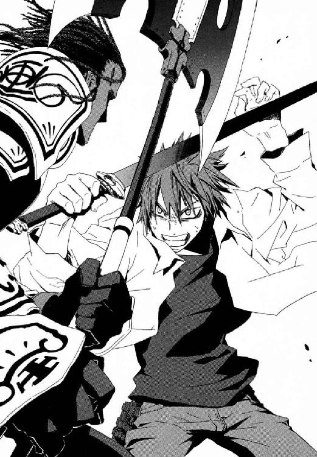
硝煙が、視界に白くもやをかけるほどもうもうと立ちこめる。生命の一瞬を競り勝った仁が荒い息をつき、額の汗をぬぐう。無理をさせすぎた右手の指が、緊張で銃把をはなせなくなっているのを、左手で一本一本もぎはなしてゆく。呼吸が整わず、何度も深呼吸して暴れる胸郭をなだめる。
魔法を使えない人間が、消去能力なしで魔導師を倒すには、ここまでやらなければならない。
「まだだ！ まだだ！」
至近距離で散弾の嵐を受けながら、血みどろの騎士が斧を杖に立ち上がった。仁が床に転がった刀を逆手で拾い直し、重心を前へ崩した勢いに踏みこみを加え体重で突きこむ。よけきれないと悟ったか、ドレッドの髪を振りたて指輪を鎧に走らせる。
ルビーと同じ鋼玉の切っ先が、鈍い音を立てて胸甲の中心を打ち抜いた。確実に致命傷になる、この男を今、仁が殺した。防御魔術は、発動しない。神音をかなでる装飾が散弾でゆがんで、正確な音が出なかったのだ。どれほどの修練、意志のたまものか、胸に刃をうめたままドナルドが問うた。
「......なぜ、一撃を、ああも見切られた」
最期の瞬間、聖なる修羅の心残りは、仁が《崩壊の喇叭》を受け止めた、あの一瞬のことだった。
「神音が正確でなきゃ発動しないせいで、おまえが《喇叭》を当ててくる速度は、一定だったんだ。だから角度も速さも、読めた」
その答えで憑きものが落ちたように、満足げに、唇の端から血の泡を落としながら、騎士がほぅと息をついた。
だが本当は、ふたりともわかっている。勝負をわけた最大要因は、この騎士ドナルドが、今の仁にはかわせない半透明の鷹、概念魔弾を使わなかったことだ。完調の《沈黙》ならたやすく防げた魔弾誘導による、かたい勝ちを望まなかった。
「言い残すことは、あるか？」
感傷的な申し出をした当人である、仁のほうが息をのんだ。死にゆく男が、土気色の頰に涙をこぼしたからだ。
「食卓のとなりに......毒ガスの罠をしかける、......男を父にもった、罪のない生け贄の倉本きずなに、一言、......すまぬと」
ましてや、きずなに謝罪など。
†
きずなは、神和瑞希とともにガラスの舞台が崩落してゆくのを観測させられてから、まだ立ちあがれない。ただ雨に打たれて、床に座りこみ、やり場のない怒りをぶつける場所を求めて暗い瞳をそこへ向けていた。
胸に剣を突き立てた聖騎士の死体が、すでに五体、血臭立ちこめる踊り場に転がっている。首のないもの、腹の破裂したもの、どれもこれも骨と肉がむき出しで、雨で薄まった鮮血がまるで一面の狂った夕焼けの海だ。せめて仲間の骸を踏まないようよけながら、上級聖騎士ニコライ・バルトが竪琴を爪弾いている。進路がまた二手に分かれたから、再会を誓い合ってエレオノールと別れ、そして階段をのぼった染血の舞台で、出会ってしまった。
「なんや、えらい上手に弾くもんやな」
惨劇の女王、緋色の加賀友禅の振袖に衣を替えた《染血公主》ジェルヴェーヌが、蛇の目の唐傘の下で、微笑むように朱唇を歪める。
「神音は、上手い下手の問題ではないのですがね」
一羽の朱鷺が神音から生み出され、灰色の翼を一打ちするごとに数をふやし、八羽になる。
「概念魔弾一番より八番、名付けて《飛鳥》。定義済み概念《緋牡丹》に加算す。......ほれ、墜ちい」
剣指を結んだ女の右手が、空を切り長い振袖をはためかせる。まとめて《対象化》された羽ばたく魔弾が、神音の維持媒介である大気を無理やり硝化甘油に変成され大爆発を起こした。空中で牡丹の花が開いたような、凄艶な爆炎にあおられ、《光背》を失いニコライの体が紙切れさながらガラスの床にたたきつけられる。
きずなは、瑞希があんなことになってから、聖騎士がみんな死んでしまえばいいと恨んだ。けれど、ジェルヴェーヌの惨殺ショウを見せつけられた今、満足などひとかけらもない。小さく体を縮めて雨に打たれるきずなは、どうしてこんな目に遭うのだろうと、ここから逃がしてくださいと一心に祈る。瑞希の顔が浮かんで、嗚咽しながら銅色の髪をかきむしった。
花霞の柄の振袖に、淡彩な帯をきりりとしめた黒髪の姫君が、紫の花々が咲きほこる袖を軽く振る。
「せっかく真打やから、派手めにしたんやけど、こんな感じでええやろか？ ほんまは夏に着るもんとちがうんやけど、ここは季節あらへんしなあ」
花嫁のようなうれし恥ずかしい表情で、頰に手をそえる。
「やっぱり神サンの前やし、白無垢のほうがよかったやろか」
立ちあがったニコライの手甲の、不死鳥をかたどった神音楽器の翼部分が、ぐらぐらになっていた。転倒の衝撃で竪琴の固定バネが折れたのだ。《幻影城》に知覚を無理やり拡張されて、観測しているきずなからも、実力差は圧倒的に見えた。
「僕ひとりでは厳しいということですか」
「あんさん、これが自分らのための《神の門》やいう考え、そろそろ捨てとき。神聖騎士団の歴史には残ってへんやろけどな、本物の《神の門》の十二聖騎士は、ほんまは侵入したひとりの魔法使いを追いかけて突入したんよ。しかもな、それで一番おいしい思いしたんは、最初に入った魔法使いや」
ニコライが、すすけた銀縁眼鏡の奥で視線の焦点を失う。神聖騎士団には、敗戦の記録は残っていても、バベルに勝者がいたとは伝わっていなかったからだ。戦いの意味を疑わせる言葉に、受けた動揺がきずなの胸にも鏡のように映って、足もとがぐらぐら揺れる。
嗜虐的な喜悦に酔ったように、ひとり雨に濡れていない勝者が、敗者を見おろす。
「三千年前のバベルんときの、神聖騎士団の収支、考えてみ。《神の門》は手に入らん、突入した聖騎士はほとんど全滅の大負けや。裏をかえしたら、どっかに〝ボロもうけした勝者〟もおるわいな」
血みどろの歴史の再演で、勝利が決まっている〝主役〟におさまったのが、この《染血公主》ジェルヴェーヌ・ロッソだと。女は血まみれの舞台でそう言うのだ。
「気に入りませんね。あなたが、この歴史劇の、主役だとでも？ 僕ら全員が、あなたが《神の辞書》を手に入れるための脇役だとでも！」
「劇ゆうんは不公平なもんやと思わんか？ どんなに気張ったかて、祈ったかて、演じる筋書きは〝どの役に座るか〟しだいや」
ニコライは壊れた楽器を左腕から引きちぎり、右手に細身の剣を抜く。指輪に刃を走らせて、聖別した白い魔刃に祈りをこめて、かまえた。
「このくらいのことも考えてへんかったんか？ ほんま純粋ゆうかアホやな。魔法世界中から研究者集めてる《協会》が、幻影城の《鍵》持ってたんよ？ 城に好き勝手入れるのに、利用する方法、研究してへんはずないやろ」
情報の量も質も最初からちがいすぎたジェルヴェーヌに、たばかられたのだ。
「だが、すべては、あなたを切りふせれば変わる運命にすぎない」
ニコライには負けられない理由がある。合唱を乱した、罪の証たる神音が、いつまでも胸に響いてつぐなえと急きたてるのだ。そして、横顔が浮かんで決して消えないエレオノールを、神に愛された彼女を守らねばならない。命にかえても、命にかえても。
「騎士の手甲、名づけて《比翼》──」
《対象》を定義せねば作動しないジェルヴェーヌの魔術より、ニコライの捨て身の刺突が早い。だが、元凶たる〝主役〟を貫こうとした瞬間、それが筋書きで決まっていたかのように、非業の騎士は血だまりに足をすべらせた。
「定義済み概念《緋牡丹》に加算す。......一本もろとこ」
破裂音とともに右腕ごと、ニコライの腕鎧が弾けた。
骨の断面もあらわな手首が、剣を握ったまま、ガラス床に広がる血の海に墜ちる。だが、苦悶に嗚咽し身をよじっても、騎士は倒れない。
「なんで、こないいろいろ教えたってると思う？ 本物の《神の門》でも、最初に侵入した〝主役〟の魔法使いは、上級騎士をひとり殺したんよ。まっとったら、ハズレばっかりあがってくるからどないしよ思ったけど、まあよかったよかった」
ハズレと呼んで、ジェルヴェーヌは仲間たちを虫けらのように殺した。
「そうや、ええこと思いついた。やっぱりあんさんのこと、助けたる。あんさん、あの女のこと、好いとるやろ？」
刹那、ニコライの全身の血が、泥のように粘度を増した。
「上級騎士ひとり死なすんやったら、あの女、さいの目に切り刻んだほうが気分ええしな」
「聖騎士をなめるなっ！」
騎士が怒号とともに、足で手首ごと剣を蹴りあげ、左手に握りなおす。総身の力と魂をこめ、切りあげた刃は、ジェルヴェーヌにカサの柄で受け止められた。
「騎士ニコライの恋情、名づけて《朝顔》。定義済み概念《傀儡》と加算し、変数域に《人参果》を代入す」
宣名魔術が、まずニコライの心中に引き起こしたものは、大波。内心のイメージに取りこんだ犠牲者に、宣名魔術は防御も回避もゆるさない。こうしている間も右手首から先を失った腕はどんどん血を失い気が遠くなってもおかしくないはずなのに、意識ははっきりとして、けれど視界がどんどん影にせばめられてゆく。
きずなは魔法で捕獲されたニコライの意識に引きずられて、嘔吐しそうで床に額を押し当てる。どうしてこんなにしてまで戦っているんだろうと、気持ち悪くてたまらない。
「あんさんがこないに思ってるのに、ひどい女やなあ。......ええこと教えたる。女の子は、男の子から手足を一本もがれるたんび、素直になっていくんやで」
世界という本を俯瞰するきずなには、ニコライという〝文字〟が、恋情を中心に、ジェルヴェーヌの望むように転回してゆくのが見える。人格の書きかえに、《対象》化され支配された騎士は、気づくこともできない。
「いろいろ、したいことあるんやろ？ あの女もすました顔の裏側で、ずっとあんさんにムチャクチャにされたいって、まっとったんや。楽にしたらなかわいそうやな。わかるやろ？」
だが、友だちの瑞希をあんなにした敵、スーパーで会ったときは普通の人だと思った騎士の、変化が止まった。情欲にどす黒くぬりつぶされた意識が、脳裏に響いていたあの奇蹟が聞こえないから、必死で抵抗していた。男は喪失感に子どものように泣きじゃくる。神よりもエレオノールを望んでしまった証の、罪深い〝恋〟を焼きつけた神音にしがみつく。
「神よ！ なぜこのように、僕らを試すのです！」
ニコライは、狂気の沼からはいあがり、絶叫する。染血公主の目が、驚きに見開かれる。その瞬間、確かに彼の覚悟はジェルヴェーヌを上回った。また温かい畜生道にたたきおとされる前に、聖騎士は、左手に握りしめた魔剣を迷いなく突き立てたのだ。──抱きしめるように、冷たい鋼をみずからの心臓へと。
だが奇蹟は、命より大切なものを汚す前に自決を選んだ男の、想像をこえて残酷だった。
「あんさんは、死ねへんよ」
まぶたをこじ開けられ、床に落ちた鮮血が蛇のようにのたうち彼の心臓へとはい戻ってくる光景に、男の手は震え全身の力が抜けた。心臓に穴が開き床にこぼれた血液が、なにごともなかったように胸へ啜りあげられ身体を循環しているのだ。
「健気やなあ、かわいいなあ。妾が《染血公主》て呼ばれる理由を、知らんかってんな」
おかしそうに、薄化粧の頰を上気させて、のどを鳴らす。
「そや、イタズラせんよう、手足つけかえとこ」
思わずつりこまれそうな笑顔で、魔女が両手をぽんと軽く打ち鳴らした。ニコライの両肩と太ももが内側から爆散して、四肢がことごとく根元からちぎれ飛ぶ。魂が一割二割は削り取られたような激痛に悲鳴をあげ、芋虫のようにガラスの床をはう。ニコライの傷口に接着されたのは、概念魔術によって鎧の金属部位を変成して作られた自己再構成型の魔法式、魔法生物。伸ばせば二メートルをこえる毒虫のような毛むくじゃらの節足が、彼の新しい手足だ。
「せっかくやから、腕、もう五、六本つけたほうが強そうやな」
体を支えるだけで精一杯のニコライの背中に、背骨を焼き砕くような苦悶がおそう。ジェルヴェーヌが陶然と目を細め、仲間の剣で肉を押し貫き彼を串刺しにしたのだ。五人の死んだ騎士の形見の刃が宣名魔術で太い杭のような魔法生物に変成され、きたえた筋骨と神経に根を張り、ぎちぎちと無秩序にうごめきはじめる。水たまりのできたガラスの床が鏡のように、長さもまちまちな九本の足で床を引っかく蜘蛛のような化け物を、薄ぼんやりと映していた。この何もかも奪われた敗北者が今の、上級聖騎士ニコライ・バルトだ。尊厳を踏みつぶされ異形になり果てたみずからを受け入れられず、男はすすまみれの眼鏡の奥から、呆然とそれを見ていた。
「苦しいやろ。こんな姿では、きらわれてしまうで。......妾にまかしとき。もう、二度とつらならへんように、心も虫けらに堕としたる」
恨みにどっぷり浸かったきずなは、バベルで誰もが破滅することが、すくなくとも公平に思えた。いや、そう言い聞かせることで、今の自分に落ちかかったすべてを納得しようとして、失敗した。彼女のおびえも震えも雨に打たれるこの寒さも、団将グレアムに首を落とされるまでの残り一時間。
†
神音大系の暴発か、一体どこで魔法が飛んだのか戦闘があったのか、武原仁は考えるだけで、心配で心臓にひびが入りそうだ。
バベルは再演の舞台として完全さを増しつつある。外壁内部の空間は直径百メートルの円筒型で固定し、色のなかったガラス宮殿も、今では下層は完全にレンガ造りだ。降り続ける霧雨だけが、長い階段をのぼりはじめたときと何も変わらない。
「無茶するなよ。聖騎士は強いぞ」
これ自体が巨大な神音楽器だったのだろう、複雑な塔の内部を走りながら、必死で彼の生徒をさがす。胸の傷はじくじくうずくし、戦闘の痛みで全身がきしむ。だが、メイゼルにひとりで別の道をゆかせてしまった焦燥は、もっとつらい。あの誇り高い少女は、刻印魔導師としては奇蹟だが、人を殺したことがない。防御能力の低さを破壊力で押し切る円環大系の戦術をとれない、甘いメイゼルに、上級騎士や《染血公主》を倒すのはムリだ。赤いドレスの少女は絶対に目立つはずだと、自分に言い聞かせて駆ける。
彼の視界に、三十メートルほど離れた階段を、息も絶え絶えで一歩一歩。体力に恵まれているとはいえない小学六年生に、頂上まで百五十メートルほどを階段でのぼるのは、厳しかったらしい。猫のようにうんとのびをして、太ももをトントンたたいていたメイゼルも、仁に気づいた。大声を出すのがつらいのか、笑顔で右手を元気よく振っている。中指と薬指と親指をくっつけ、人差し指と小指を立てた、あれは【だいじょうぶ】のサインだ。
「......ばっか、なにやってんだよ」
ほっとするやら拍子抜けするやらで、頭を抱える。大きな身振りで、こっちに来いと手招きした。もう仁のほうが見てられない、限界だ。
なのに彼女は、【だいじょうぶ】の合図を両手にふやして、彼へとふり返すのだ。そして、魔法で雨をよけていたか、流れる長い黒髪とピンクのリボンを揺らして、大砲で打ちあげられたように高く跳躍する。足の裏と床の間に強力な磁力を発生させて、反発力で体を弾いたのだ。その放物線の頂点には、広いガラスの踊り場がある。着地点はそこだ。
競走でもしているつもりかと、仁はため息をつく。刻印魔導師の運命から逃げないのは立派だが、本当にどこまでハラハラさせてくれたら気がすむのかと──。
大気が破裂した。仁は冷たい戦慄に震えた。雷の炸裂音が神音暴発を引き起こし、空中に正体の知れない紫色の煙を発生させた。神音大系の観測者、聖騎士がメイゼルのそばにいるということだ。
「くそっ！」
全力で駆けあがりながら、散弾拳銃をホルスターから引き抜き、リムを赤く着色した四五口径ＬＣ弾を装塡する。
雷撃の破裂音が、三秒間に連続して二発三発、四発。一撃ごとに周囲からいちいち魔力を集めなおさねばならない人工稲妻を、高速連射する手段などひとつしかない──《破滅の化身》だ。人数を増やして手数を倍加させるが、かすり傷ひとつで致命傷になる奥の手で、しょっぱなから全開で攻めねばならない相手がそこにいるのだ。
そして、ガラスの戦場と同じ高さまでようやくたどりついた仁が、見たものは、白い魔刃を籠手から取り落とした団将グレアム・ヴィエン。赤いドレスの妖精が、武器を奪ったことに満足したか、《破滅の化身》をといてひとりに戻る。だが、メイゼルは《化身》で、敵を消し炭にするまで非情に雷で押しまくるべきだったのだ。
気をゆるめた一瞬の隙を、歴戦の騎士は見逃さなかった。おとなの歩幅で距離を殺した男の拳が、少女の腹部に触れる。あの動き回らずにいられない生気にあふれたメイゼルが、スイッチを切られたようにその場にうずくまった。悲鳴すらあげられず、両手で腹を押さえて、ようやく蒼白な顔を起こす。口の端をぬぐった自分の手のひらを、少女は信じられないものを見るようにぼんやりとながめていた。
浸透神音。身体内部で神音を発動させて、内臓を直接破壊する技術だ。メイゼルには防御手段がない。なら、今ここで命を捨てる覚悟で、彼が消去すれば？ もう手遅れだ、魔法消去では、起こってしまった現象を帳消しにはできない。
「動くな！ そこから動くな！ 撃つぞ!!」
仁は叫んで、グレアムへと散弾拳銃を向ける。十メートルで弾丸が横弾になる銃で、三十メートル先に当たるはずがない。それでも、銃口を向けずにいられない。どうして俺はメイゼルを救えない？ 現実を認められない怒りと、落ち着けと叫ぶ理性の間をぐるぐる堂々めぐりする。こうまで重い拳銃だったかと、じっとり汗をにじませながら、震える手をおさえられない。
クラスメートの寒川からもらったピンク色のリボンで、髪を結んだメイゼルが、激痛と苦悶のさなかだろうに、弱々しく微笑む。剣を拾いあげ今しも自分を斬り殺そうとしている騎士ではなく、仁へと顔を向けた。そして、ここが六年一組の教室ででもあるかのように、あの身振りの合図を出しはじめるのだ。最初は、【大スキ】。そして、【今日、ごはんいっしょに食べようよ】。絶望的な命のはざまをわたっているさなか、いいことばかり、うれしいことばかり仁に送ってくる。メイゼルはそんなサインしか作らなかったから。いつか過酷な運命が降りかかってくるとわかっていても、最悪におびえるより今日を人間らしく生きるのが、彼らの生活だったから。
「メイゼル！ もういいんだ。逃げろ、メイゼル！」
少女は、そうしていればいいことを呼びこむかのように、能天気な合図だけを──。
なぜ魔法を撃たない？ 円環魔術をおさめた天才少女が、終わりのときを悟ったからだ。なぜ逃げない？ 立ちあがれもしないなら、剣を持った騎士の前に座りこむしかない。
誇り高い刻印魔導師は、もはや座っている姿勢すら維持できないかのように上体をぐらりぐらり揺らしながら、右手の中指と薬指と親指を合わせて、人差し指と小指をのばす。
──【だいじょうぶ】。
それが、最後の合図だった。少女が、ついに後ろに倒れた。そこに床はない。壊れたオモチャのように階段を転がってゆく。五メートル、十メートル。力ない抜け殻の体が、下の踊り場まで転落してようやく止まった。人形のような赤いドレスに片方ぬげた黒い靴、彼女はぴくりとも動かない。血色を完全に失った肌は、痛がる様子も、呼吸をしている様子すらない。息をしていないということは、死んでいるということだ。死んでいるということは、メイゼルがもう彼にしがみついてくることもなければ、教室でうっかり余計なことをしゃべりかけて彼を焦らせることもないということだ。へたくそな料理を食べさせようとすることもなければ、彼のアパートに自分の私物を置きにくることもないということだ。あの年で嗜虐的にねじれた趣味に振り回されることも、意外な几帳面さや責任感の強さに感心させられることもない。
あふれるように記憶が噴きあげる。どれほどたくさん、もう永遠に失われたたいせつなものの表情を思い出せるか知って、仁は全身の熱と水が目に集まって、寒さに震えた。
「メイゼル！ ああああああ、メイゼ────ルっ！」
銃声が、破滅の塔にむなしく響きわたる。これ以上なく、グレアムの面のしわ一本一本まで確認できるほどの集中力で、姿はとらえている。なのに、引き金を引いても弾丸がまっすぐに飛ばないのだ。撃つごとに、無力感にさいなまれ、武器をほうり出したくなる。どうあっても消えずに、何もかもを飲みこむような胸の穴が重くて息ができない。この世界にはいない神に、心の底から祈った。本当に神がいる異世界の騎士には、かすりもしない。
仁がシリンダーの全弾を撃ちつくしたとき、供物を受け取って満足したように、《幻影城》がまた蠢動した。階段が、またガラスからレンガへと置き換わってゆく。《神の門》に賭けた聖騎士たちの長は、あどけない少女の命と引き替えに延びた道を踏んで、頂上へとのぼる。鎧も頭もずぶ濡れの修羅を、仁には止める手だてすらない。
取り残された男は、呆然と、しかし望みがあるのではないかと救いを求めて、階下におびえた視線を送る。赤いドレスの上に、乱れた黒髪が広がっていた。頭をぶつけたのだろう、ほどけかけたリボンにも血が散っている。
それはまるで、あでやかな羽根が鮮烈に記憶に残っているからこそ儚い、蝶々の死骸のようで。少女は二度と、動かない。
仁の中で、なにかが脈動を止めていた。まだ、眼前の現実が信じられない。目の届くところにいる小さな魔女を守ることで、仁は救われている気がしていた。メイゼルが最後に出した【だいじょうぶ】の合図。仁が、きずなと打ち解けてほしくてしかたなく出してやった合図だから、思い出さずにいられない。俺は、おまえがいてくれたから、救われていたんだよ。だいじょうぶなわけがあるかよ。
「メイゼルは、まだ子どもだったじゃないか......」
まだ子どものメイゼルを戦場に出し続けたのは専任係官武原仁、彼自身だ。何もかも許せなかった。彼女を殺した聖騎士たちも。刻印魔導師という過酷な運命を押しつけた《協会》も。偽善のやさしさしか与えてやれなかった《公館》も。そして何より、守りきると大口をたたいて果たせなかった、薄っぺらい彼自身が。
それが絶望か、もう武原仁は死んだほうがいいと自分ではっきりわかった。この階段を三歩踏み出せば、百メートルほども墜落して、今すぐそうできる。いや、彼自身の胸の傷から、生命が抜けおちるのを防いでいるメイゼルの魔法を、消去するだけでいい。だが、胸に宿るそのぬくもりを、赤ん坊の手のようなあたたかく無垢な感触を、燃やすことなどできるはずがない。
兄妹にも、親子にもなれなかった。子どもだと言いながら、小さな魔女を子ども扱いし切れず、保護するより戦わせ続けていた。やり残したまま終わった胸の空白に、泥のような甘い感傷が押し寄せる。そんなふうに必死で、メイゼルの死を片づけようとしている自分を殴り倒してやりたくなる。
何を失っても、足を前に進めるしかない。
それでも、全部悪い夢だから覚めてくれと目を閉じる。起きたら、きっと彼の生徒が見おろしていて、「よかったね、全部夢だよ」と言ってくれるのだ。これが最後と、うずく未練に言い聞かせて、熱いまぶたをもちあげる。現実の、階下にうつぶせに倒れた少女は、濡れて黒ずんでゆく赤いドレスに飾られ、もう動かない。
たしかに魔法使いたちがさげすむとおり、この世界は地獄か。
立ち止まっていたい弱さと決別などできず、それでも仁は寒い心臓をかかえて、階段を、一段のぼる。メイゼルが決めたことだったから、完遂する。夕方、エレオノールは、消去能力を持つ者が先へ進む予定はないと言った。そんな予定は、ぶちこわさずにいられない。二段、三段と、震えの止まらない体をひきずりあげる。この雨に打たれて、きずなはまだ、助けをまっている。ジェルヴェーヌは、用済みになれば娘を殺す、聖騎士たちもただではおくまい。五段、六段と、階段を踏ませるのは、取り戻したい男の意志だ。メイゼルを失って苦しいから、きずなに甘えさせてもらいたいのかと、罪悪感とも自虐ともつかない声がさいなむ。全身の毛穴から血を噴きだしそうで、なのに、この階段をのぼらずにいられない。
大事なものを永遠になくし、奇蹟をつかめないと知っていてなお、仁は前に進む。
──他に、何ができる？
†
きずなは激しい雨の中、額をレンガの床に押しつけ、もはや身動きする気力もなかった。
帰りたかった。けれど、死んでようやく愚かさとしでかしたことに釣り合う気がして、被害者意識ももう失せた。先生が大好きだった鴉木メイゼルは、血の気のない頰に雨滴をあびて、無念の涙を流し続けるようだ。それでも武原仁は、憔悴しきった表情の、瞳に怒りとも慟哭ともつかない食い荒らすような生命力をたぎらせ、階段をのぼり続ける。
「わたしに、そんな価値なんかないですから。奇蹟なんか起こりませんから。もう、頑張らなくていいんです、やめてください！」
斬首されて死ぬ予定時刻まで、何十分あるだろう。きずな自身が魔法で観測した、動かしようのない未来だというのに、彼がいるからあきらめ切れない。
逃げを敏感に察知したか、《幻影城》が、観測の焦点を移動させる。なのに、彼の足音はまだ戦えとばかりに響いてくるのだ。奇蹟につながれた彼女の、奥深い何かを、目覚めろとたたくように。
エレオノール・ナガンの魔刃が、打ちおろされた黒い脚を一本、きれいに両断した。人間の胴体から、巨大な蜘蛛のような節足を九本のばした化け物が、悲鳴をあげる。それを聞いた、鎧乙女が息を吞んだ。
バベルの悲劇を観測し続けていたきずなは、観測に入らされた瞬間、理解した。うつろによどんだ瞳と半開きの唇が品性を落としているが、脚の長さがまちまちなせいで体を安定させることすらできないこの怪物は、三十分前までいつも彼女とともにあったニコライのなれの果てだ。
「まさか......」
一瞬のスキを、騎士の胴体をつけた大蜘蛛は見過ごさなかった。人ひとりの背丈より長い後肢二本で直立し、意表をつく高速で二足歩行してエレオノールへ突進する。化け物が、鎧乙女の二倍近い背丈から、残った六本の脚を豪雨のごとく打ちおろす。一本が転がってかわした亜麻色の髪をちぎりとり、二本は鎧をかすめ、そして体ごと振り回した四本がエレオノールの胴を左側からとらえた。重い金属同士がぶつかった轟音とともに火花が弾け、自動車事故のように少女騎士が何メートルもはね飛ばされる。
《光背》の防御を一撃で破られたことに顔色を失いながら、神意の騎士が、再度防御魔術を張り直す。魔刃を杖に、編んだ金髪がほどけるのもかまわず、立ちあがる。世界という本の〝文字〟をたどるきずなも、蜘蛛の節足に御輿のようにかつがれたニコライの心を、もはやうかがえない。意志的活動ができない状態まで、歪められているのだ。
「ぶざまやなあ」
舞台のそでで、唐傘を差した魔女が、騎士たちを嘲笑っていた。
しとしとと降る雨に打たれ、エレオノールが底冷えするような、淀んだ声をはなった。
「あなたが、彼をこんなにしたのですか？」
「強なりたいから改造して、て頼まれて、しゃあなしにやったんよ。カッコええやろ」
「噓です！ 誰よりも神に忠実な、立派な騎士を、愚弄するのですか」
絶叫した少女を、振袖で顔を隠したジェルヴェーヌが笑った。
「なんでそない素直にならへんのん？ ここは、これ以上墜ちるとこない、《地獄》やないか」
愉しみで人を殺す享楽の魔女が、黒蜘蛛の脚をつけたニコライに寄りそう。花瓶に見立てたか、心臓を貫いた傷痕に紫陽花の花を生けられた男は、口を半開きにしてうめき続けている。
「頼まれもせんと神サン呼び出すたいそうな祭りや、もっと楽しみ。あんさんらかて、今のままの、この世界認められんと好き勝手やってるだけやろ？」
少女騎士は、戦場にあってはその瘴気に透明な鬼神と化す。容赦なく、魔女の眼球の位置に魔弾を爆裂させた──はずだった。
影がよぎり、宣名魔導師ラグランツを一撃で絶命させたその破壊力を受けたのは、変わり果てたニコライ・バルト。速度と予想外の行動に驚く少女に、槍どころか建設重機の太さの節足が、執拗な神経を削る切迫したリズムで打ちこまれる。秒間二発の間隔で風を押しつぶす一撃すべてが、対物ライフル弾やＭ９Ａ１をも受け止める彼女の《光背》を、突破する威力。
「ニコライ！ こたえてください、ニコライ！」
受け止めることも呼吸をととのえることも許さない猛攻に、たえかねてとうとう距離を離す。
風にながれて、苦悶の声がもれた。それは、エレオノールのものでも、ジェルヴェーヌのそれともちがって。
──ひゅぃゆぅぅぅゆぅぅぅぅ。
かすれた風の音が、黒水晶の舞台の、時の流れを止める。魔法生物を連結されたニコライ・バルトが、唇をすぼめて、口笛を吹いていたのだ。
──ふゅぃゆぃぃぅぃふゅぃゆぃ。
きずなが〝文字〟を観測しても、対象を完全に支配する宣名魔術は解けていない。理性を凍らされたニコライは、今、きっと一度呪縛を破ったときのように、胸に刻まれたあの愛おしい神音へしがみついている。かなでる楽器がなければ口笛で。何度失敗しても遥かな奇蹟へ、手をのばすことをやめずに。
黒水晶の氷面に、スケート競技でも行われたかのように、大毒虫の脚は幾多の滑り傷を刻み続ける。ニコライの魂を懸けた口笛など、意にも介さず、機械のように魔法生物はうごめく。鎧乙女が、寄生生物を斬って無力化せんと魔刃をたたきつけた。
──ふぃぃぃ、ふゅぃぃぃぃ。
きずなは、すべてを奪われたニコライの戦いを前に、善悪がもうわからない。恨み言など情けなくて並べられない。大事な人たちのかたきで憎くても、彼女がもうすぐ死ぬとしても、眼前の死闘から目を離せない。メイゼルの誕生日プレゼントを買いに行ったあのスーパーで、「この世界の人々が救われて欲しい」と言ってくれた彼は、これほどの人物だった。
口笛の音色がついに、奇蹟に届いた。その瞬間、戦場の女たちの胸に、広がったものは恋。それは《神の門》の合唱を乱し、騎士ニコライの恋を焼きつけた、罪深い神音だった。魔法が刻みこんだイメージの中、歌うエレオノールの深い緑の瞳がこちらを向く。あまりに切なくて、すべてをなくしても彼女だけは護りたくて、彼女さえいれば何もいらないと思った。
ジェルヴェーヌが、眉をひそめて騎士たちから遠ざかる。
「......ああ、いやや、いやや。こないもん、付き合ってられんわ」
きずなの胸に、晴れた空のような、清々しい心の色が映し出される。割れた眼鏡の奥で、男は涙を滂沱させていた。恋を《対象》に、呪縛をかけていた宣名魔術が解け、ニコライが意志をとりもどしたのだ。それは偶然という奇蹟か、それとも男の気持ちが、報われたい恋情からただ捧げる愛に変わって、対象定義が無効化したのか。透明でつかみどころがなく、きずなには遠かったエレオノールの感情までもが、胸の奥を風のように通り抜けてゆく。
「エレオノール、僕にとどめを刺してください」
ニコライが血を吐きながら、恋を共有してしまった鎧乙女に告げる。黒蜘蛛の脚が、男の決意などかまわずエレオノールへ殺到する。攻撃を受け流しながら、返した声は震えていた。
「あなたと、戦場から神に召される日も同じだと思っていました」
だが、銀縁の眼鏡の奥から、ニコライはこんなときでも微笑みを絶やさない。わかっている。杭のように太い節足が、四肢の他に五本も接続されていたのだ。全身が寄生生物に根を張られた今の状態で、この蜘蛛の足を殺せば、残るのはスポンジみたいな穴だらけの死体だけだ。助かるはずがない。
神に愛された歌姫の、理性も感情も、その選択を否定する。ただ、ニコライの気持ちに応えなければ、彼女は命よりも大事なものを失うと思った。少女は、そこに神意を見た。
「さあ、僕に君の歌を聴かせてください。天の国へ行っても、決して忘れないように──」
そして、すべての音は死ぬ。
エレオノールの剣が、黒水晶の床に突き立っていた。剣の柄に仕込まれた神音楽器が、解きはなつは《無言の神音》──超高精度神音のため周辺環境を無音に整える、大魔術の準備魔法。
雨に打たれながら、少女は、天へ響けと澄みわたった声を共鳴させる。安心した笑みを浮かべるニコライとちぐはぐに、黒い節足はまだエレオノールを叩きつぶそうと襲いくる。
雪のように、光が舞いおちる。この世のすべての怒りとふしあわせを浄めるように、神の声は、ゆうらりときらめく。頭上に現れたものは、数百もの星の群れのような、少女の髪と同じ黄金色の結晶。
世界の索引を引くために、必要なのは正確な音だけで、感情は必要ない。本当は、たぶん祈りすらも。だがそれでも神音魔導師たちは、祈りをこめずにいられない。涙を流さずにいられない。言葉にならない激情を、その声にのせずにいられない。
エレオノール・ナガンはここにいる。ニコライとともに歩み、恋すら伝えてもらった彼女が、ここにいる。
戦場の歓喜をうたいながら、鎧乙女は、抱きかかえるように両手を広げた。ニコライの四肢を乗っ取った黒蜘蛛が後ろ足二本で直立し、剣すら持たない彼女へと、残った節足を六本まとめてたたきこむ。黄金の星は、ひとつひとつが意志を持つように軌跡を曳いて飛翔し、六点で収束し無敵の盾となって受け止める。上空に残っていた結晶が、槍の雨のようにニコライもろとも魔法生物を背中から蹂躙した。
「ああ、僕の胸には、あの旋律が、今も、今も聞こえる、エレオノール......」
ニコライの見開いた目からよろこびの涙がこぼれる。彼と出会い、守られ、慈しまれて彼女の歌はいつもあった。今、最も信頼する騎士の瞳は、すべてを受け入れ、神意に透明だ。だから、彼の望むことにまちがいがあろうはずがない。
拳を固く握り、横隔膜を震わせながら歌姫は最後の最高潮へ向けて、鋭すぎる光を乱舞させる。星が流れるたび、ニコライの体が打ち砕かれる衝撃で紫陽花の花びらを散らしながら、はねまわる。床を貫通し、弾んで今度は下から打ちあがる。子どもにもがれた昆虫の脚のように、黒い節足が根元から引きちぎれた。
鎧乙女が、永遠には続かない旋律への未練を断ち切らんと、拳を振りおろす。そのときが、永遠のお別れ。
黒水晶の床が、みしりみしり異音をあげてきしんだ。舞台が立っていられないほど揺れ始める。もはやバラバラに引き裂かれたニコライをのせて踊り場そのものが、構造を維持できなくなって崩壊してゆく。塔の外壁すら、強まってゆく振動の余波に悲鳴をあげた。いくつもの大穴が開いて、なだれをうつように降伏応力を突破していった床に、ついにひびがはいる。全身の血を攪拌するような地響きの中、エレオノールの耳は、たしかに横たわるニコライの声を聞いたのだ。
「僕はずっと、はじめて会ったときから、君にあこがれた。君のそばにいたかった」
無垢なる少女が、しびれて動きを止める。
「君が、好きだ」
胴体がずたずたで内臓がはみだした男の告白は、ただ魂の発露のように、晴れやかだった。何もかもから解きはなたれたように、血で汚れた眼鏡のレンズ越しに彼がやさしく笑う。
「ニコライ！ 行かないで！」
鎧乙女の目から、ついに一筋、涙がおちた。床に刺したままの剣を抜くより、少女が瀕死の彼を抱きしめようとし──。
そして、黒水晶の舞台はついにまっぷたつに割れ、破滅の塔の底へ、ニコライ・バルトは黒く輝く破片の滝とともに墜落した。
†
倉本きずなは、再演魔術を維持するためバベル内部の地獄を《観測》させられてきた認識を、ようやく引き戻した。身の丈まで収束した五感を起点に、感覚することすべてが圧倒的な体験で、再演の魔女は心を奪われる。光を固めたようなガラスの王国に、太陽や様々な光源が色をあたえる。光の糸を織ったような、千変する狂気の風景すら、神経に染みて美しい。
奇蹟に振り回され、奇蹟とともに生き、滅びてゆく魔導師たちの姿は、きずなの中に静かに降り積もっている。鮮烈に、あの騎士たちの最期を思い出す。だから、きずなは、雨の中、荒い息をつきながら、もう一度立ちあがる。メイゼルのことも、瑞希のことも考えるだけで胸をかきむしるしかなくなる。魔法に宣告されたきずな自身の死まで、四十分ちょっと。けれど正しくなくても、間違っていても、今はまだ生きている。墜ちたあのニコライの、やりきった顔に、ほんのすこし勇気を刻まれた。
「お父さん。ごめんね。今、助けてあげるからね」
きずなの耳に、今もあの足音が、反響し続けている。「一生奇蹟に手が届かない」と言った武原仁が、このときも二本の足で、長い階段をのぼりつつあるのだ。なぜだろう、胸が締めつけられて立っていられなくなりそうだ。理由もわからず涙が、堰を切ってぼろぼろとこぼれ落ちる。
一瞬、あの人の後ろを、ついて歩きたいと頭によぎってしまった。だから、魔法でつらいことは全部なかったことに塗りつぶして、まっさらな関係で出会えたらいいと。
「本当に、ダメだね、わたし。なんか、情けないや」
運命を変える魔法をきずなはひらく。父に、最後の恩返しをするために。拡散して消滅してもいい覚悟で、世界という一冊の本に意識を飛びこませ、新米の再演魔導師は《倉本きずな》という文字をさがす。何もできなかった昔の彼女自身を《再演》して、魔法で過去をやりなおせるはずだから。きずな自身と、慈雄と、彼の胸を突いた短剣の三つがそろった場所。その決定的な父の死の現場を、膨大な経糸と緯糸の中から、検索する。
無知と軽はずみへの、最悪のむくいが、顎をひろげていると気づきもせず。
情報の海に溺れそうになりながら、幻影城が指し示す経糸と緯糸の交点へ、必死で感覚を集中する。
きずなと慈雄と短剣、すべてがそろった場所──そこは、見たこともない真夜中の街だった。細身の剣を握った、顔立ちが父に似た若い男性が、電信柱にもたれかかって荒い息をついている。剣は血にぬれて、灰色のフードをかぶった男性が、すぐそばのゴミ箱をかかえるようにして倒れていた。たぶん、死んでいる。恐怖に歯の根を鳴らしながら、呆然と、まったく記憶にない光景を凝視するしかない。自分の姿を探すと、幻影城が、きずなの視覚を、毛布にくるまれた赤ん坊へ誘導した。道路のすみっこに置かれた、歯もまだ生えていない乳児。きずなが生まれたばかりで、剣を持った若い男は父──なら、死んでいるのは誰？ あの《短剣》、青銅のペーパーナイフが、なぜかきずなと同じ毛布にくるまれていた。
──なんだろう？
予想だにしなかったものを見せつけられ、動悸が止まらない。熱にうかされたようにぼうっとする頭で、きずな自身の歴史を、倉本慈雄を中心にたどってみる。父が、様子を確認するように、数日に一度、ふたり暮らしのアパートのドアを開ける。食事をすると、すぐ工房にこもってしまう。世界のそこらじゅうに魔法消去がつくる虫食いをよけて、飛ばし飛ばし追いかけてゆくと、切なくなるほど、慈雄の生活にきずなの姿はなかった。
──なんだろう？
次にあの《短剣》が、父と交錯したのは、それが封筒に入れられ、知らない一軒家の郵便受けへほうりこまれたときだ。青銅のナイフは家人らしい年配の男性の目にとまり、彼の勤め先だった見覚えのある建物、魔導師公館へと持ちこまれる。
まるでこれでは、すべての裏側に倉本慈雄がいたみたいだ。きずなの全身は、胸の奥に吹きこんできたすきま風に、がくがく震えはじめる。だとしたら、父と彼女の関係は、何だったのかと。信じていた土台が崩れることにおびえながら、それでも確かめずにいられない。
ついにジェルヴェーヌが現れた。季節は一年以上も前の、冬だ。
「魔法いうんは、けっこう不便なもんやから」
長い黒髪を灰色の海風になびかせ、羽織をはおったあの和装の魔女がつぶやく。きずなの父が、そのとなりに寄り添っていた。ふたりは砂浜で、昼の海を見ていた。
「宣名大系の魔法は、《対象》化せんと魔法がはたらかんよって。神音さんみたいに、タダ取りやのうて、《対象》化したものを犠牲にせんといかんのよ」
心の中で、逃げてとさけぶ。この人に刺されるんだよと。なのに、父は、だまされているのも気づかず、愛おしげに頷いているのだ。
「そやから、好き勝手世界つくりかえてるうちに、気ぃついたら、しょもないもんしか残ってなぁてな。水もろくにあらへんから、花も咲かんわ」
「だから、君はこの《地獄》が好きなのか？」
ジェルヴェーヌが、あの駅のホームで見た、花開くような笑顔で父をふり返る。
「好きなわけあれへん。でも、妾の世界にも、昔は、あったらしいんよ。この《海》ちゅうやつな」
音があるからこそ静寂がいやますように、海鳴りが孤独をからめとる。荒波が、遠い岩場を洗う。
「痛快やろなあ。こんなんが、妾の世界にもあったら」
そして魔女は、当たり前のように言ったのだ。
「あんさんが育ててる再演大系の娘な、使い終わったら殺すで。せっかくの再演が、後から台無しなったら、つまらんしな」
「......ああ」
額の深いしわを苦悩にゆがませ、きずなのたったひとりの家族が、同意を伝えてうなずいた。
足もとのはしごを外されて、奈落の底に落ちてゆくようだ。笑っていいか泣いていいか、感情そのものが吹っ飛んだみたいで、きずなはどんな顔をしていいかわからない。砂色に乾いた時間の中、彼女はひとりだった。
そして、父が刺された夕闇の駅。ジェルヴェーヌと倉本慈雄が、最後の口づけをかわす。それでもここまで来たからにはと、きずなは彼女にも使える魔法で、家族の背中を引っ張った。奇蹟はすり抜け、何も起こらない。父は海を見ていた悪女の背中に腕を回し、やさしく抱きしめる。また青銅の《短剣》が家族の胸を貫いた。
水たまりになった床にくずおれ、もう涙も流しつくし、ひどくうつろだった。きずなは、何もつかめなかった指を、じっとながめていた。失敗は、わざとじゃないと頭ではわかっている。ひとりでじっと、何が正しいかもわからず、ぽつりと落ちた自分の影をながめる。だが、彼女は確かに、恨んだのだ。
家族が何を考えていたか知らず、本当のことは教えてもらえず。父を殺され悲しんで。娘を捨てることを認めた人を取り戻したくて、ダマされ。利用されて。殺し合いを見せつけられ。助けに来てくれて瑞希が、メイゼルがあんなことになってしまった。そして今、自身の底の闇を覗いて、もうすぐ死ぬ。この倉本きずなという魔法電池を憐れんだ。
ごたいそうな魔法で、自分を世界にいなかったことにするのが一番平和じゃないかと、申し訳なさが自己否定に触れたとき、気づく。奇蹟の力で無理をとおそうとすること自体、あのジェルヴェーヌと同じなのだ。嫌悪感に、吐きそうだ。いや、力があったはずなのに、家族も救えなかったきずなは、あの魔女以下だ。どうにもならない心の腐汁がこぼれて、気持ち悪くてしかたない。
「お父さん。わたし、魔法が使えるって、もっといいことだって思ってた」
怒りと、罪悪感と、自己憐憫と、自分のバカさを棚にあげるなと責める冷静さが入り乱れて、頭が麻痺していた。メイゼルに、瑞希にごめんとあやまり続ける。
生きながら血肉が腐ってしまったように、力もはいらずただ苦痛と嫌な感触だけが、体に充満していた。もう終わったのに、自分が息をしていることすら不思議だ。屍が累々と積みあがった塔で、雨に打たれて凍えるきずなは、今、ここを地獄だと思った。
†
同時刻、仁たちを一次攻撃に送りこんだ魔導師公館の会議室で、十崎京香はまち続けていた。第二次攻撃の戦力招集はほぼ完了した。二次攻撃の隊長として呼び戻された専任係官、八咬誠志郎の、白いドレスシャツの胸板は、無意味に大きくはだけられている。
「幻影城の《扉》は消失、か。......まったく、まつ身はつらいな」
格好はアホまるだしでも頼りになるこの男を、一次攻撃に使うべきだったか、京香は今も自問せずにおれない。《協会》からの情報で、三千年前のバベルが、聖騎士十二名と、侵入者四名で戦われたことはわかっていた。元凶たる《染血公主》を除いて、再演に参加できる侵入者枠は、最初から三人だけだったのだ。
「《鍵》がこちらにあれば、もうすこし手の打ちようもあったのですが」
京香は、間接消去されても魔法を自力回復するから悪鬼の閲覧が許されている、神人遺物を写した一枚の写真をとりあげる。《鍵》──十年前、公館の管理官の自宅郵便受けに投函されていた、このペーパーナイフ型の遺物が、本当のはじまりだった。
「ついさっき、ようやく《協会》側から回答が来ました。今回の《バベルの塔》の再演は、元々、《協会》が幻影城を利用するため立てたプランです。同僚の魔導師六名を殺して《鍵》を奪ったジェルヴェーヌも、この研究に従事していました。再演が、遺物の扱いかたを知り抜いた元研究者に操られている以上、倉本きずなの救出も非常に難しいでしょう」
だが、同僚として仁と付き合いが長い八咬誠志郎の感覚は、もう事後整理を考え始めている京香とは違った。
「《沈黙》は最強の専任係官じゃない。最も多く魔法使いを倒しているわけでもない。奇蹟の力もなければ、身体能力だって常識の範囲を超えない。魔法消去すら無敵じゃない」
「その通りです。だから、いつだって、まっている間、こわくてたまりません」
京香が、紙コップのコーヒーごと緊張を腹に飲みくだす。
だが八咬は、深い闇をのぞきこんだ瞳で、誰にともなくつぶやくのだ。
「それでも、魔法使いを本当に絶望させる、公館の恐怖の象徴も、《沈黙》なのさ」
†
メイゼルを失うという、死んでも現実になってほしくなかった悪夢に、武原仁はいる。なのに内心で渦巻く怒りに押されて、彼の疲れ切った足は、階段をのぼる。塔の中央空洞は、もはや生命の気配すらない。長い階段の終点、最後の舞台は、宝石と透きとおったガラスのような黄金で作られた、壮麗な大聖堂。どこからか降る銀色の雨が、過剰な装飾を与えられた柱を伝って細い滝のように落ち、羽毛の王冠を広げるように水琴の音色を鳴らす。ここでは何もかもがほのかに燐光をはなっているから、影がない。神の門の名に恥じない、精緻と荘厳が極限で両立する、ここは天上の庭だった。
胸で円環を描いてめぐる、心を向けるたびかけがえのないものになってゆく最後の魔法が、うずいてたまらない。仁は首筋の汗を、手でぬぐった。現在のイラクにあったという本物の《神の門》から、おそらく雨だけは、この再演が独自につけたしたのだ。
あの雨の夜、父と騎士たちの殺し合いにおびえていたきずなは、今も、ずぶ濡れで震えているのだろう。そして、メイゼルの戦い抜き力つきた小さな体は、闇の底で今も、彼に抱きあげられるのをまっている。
「またせたな。一段一段歩いて、ここまで、長い道のりだったよ」
神音大系魔導師、団将グレアム・ヴィエン。メイゼルを無慈悲に倒した男に、仁はとうとう追いついた。
「かつての《神の門》も、こうであったのだな。最後の舞台に残ったのは、最初に侵入した魔法使いと、それを追った聖騎士のひとり、そして乱戦の隙にもぐりこんだ者」
濡れた髪を額に貼りつかせた騎士は、逃げも嘲りもしない。すべては剣で語るとばかりに刃を抜きはなつ。
「三人目が、あんさんやったとはなあ。魔法で息つないでるだけの、半死半生でなあ」
宣名大系魔導師、《染血公主》ジェルヴェーヌ・ロッソ。緋色の女が、意外そうに、たったひとりさしていた傘をかたむけた。
「俺が負けるわけないだろ。俺は生き残って、これから〝彼女〟のために、死ぬほど泣いてやらなきゃならないんだ」
そのとき、ぶぉう、と。塔自体が持っていた機構か。早く殺し合いをはじめろとばかりに、階下から猛烈な風が噴きあげた。
「ほな、最後の幕の、はじまりやな」
染血公主が投げた蛇の目の傘が、大輪の花が舞い散るように、空へと吸いこまれてゆく。ついに雨の下に身を置いた女の手が、漆塗りの拵から日本刀を抜いた。抜いただけで地金が華やかに照り、同じ光が幽玄にゆらぐ、尋常ならざる業物だ。
浮遊感に戸惑う彼らの頭上で、バベルの塔が天窓をあけてゆく。巨大なたて笛の吹き口を通して、今や上昇風は美しい旋律へ脱皮した。舞台に、蛍のような小さな炎、自律型の魔術楽器が泳ぎはじめる。幾万の小天使が、寄り集って風の道に三つの輪を作る。天へと至る気流が、三重連の太陽を公転するような、和音の万華鏡へと進化を遂げる。以前、《協会》の調整官ベルニッチは仁に、「エネルギー保存やエントロピーなど、持たざる者の泣き言にすぎない」と言った。物理法則など一顧だにしない、幻想的と評するにもデタラメな、これが奇蹟に愛された持てる者の世界だ。
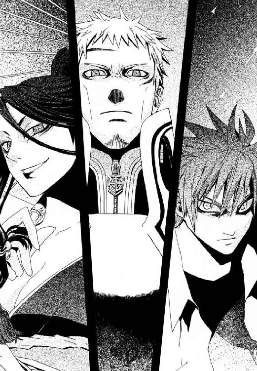
グレアムが、幻影城内部に広がる偽物の空を、感慨深く見あげる。
「貴卿とはじめて会ったのも、このような雨の中であったな」
絢爛たるまやかしの舞台で、人の血からぬくもりを奪ってゆく、冷たい水だけが真実だ。いや、こんな当たり前のことを、今になって理解した自分の愚かさを、武原仁は嚙みしめる。冷たい雨を降らす偽物の空へと、やさしく語りかけた。
「いいや、雨なんか降っていないよ。悪夢の時間は、もう終わりだ」
専任係官に向いていない仁は、胸の熱に、お別れとありがとうを告げる。
「なにアホなことゆうてるねん？」
呆れたジェルヴェーヌが、舞台のはけた現実へ突き落とされたように、一瞬、表情をなくした。アラームが、目覚めを告げてピピッピピッと、軽い電子音を鳴らす。
「見えないのか？ 雨なんか、降っていない」
──そして、世界は、悲鳴をあげて炎上した。
混乱の塔にいた、すべての魔法使いは、世界の果てから吹きつけるような爆炎に包まれた。たったひとりの悪鬼を中心に、幻影城の再演魔術がめくれあがったのだ。雪崩を打つように、この塔全域に精密な構造を組み立てていた魔法が崩れてゆく。奇蹟が強いほど、この世界から引きはがされて散るエネルギーもすさまじい勢いの魔炎をあげる。明らかに武原仁の知覚しない場所までが、猛火の海に沈んでいた。魔法消去は異世界を引きはがす力だから、適切な急所をとらえられれば巨大魔術も転覆を避けられない。負の連鎖の中で、崩壊の規模はどんどん大きくなり、火ぶくれにおおわれた奇蹟が機能不全におちいってゆく。
神人の遺産たる幻影城が、恐怖にはげしくのたうっていた。内側から焼かれる苦悶にきしみ、破壊された再演魔術が、火の粉を躍らせる。
ほんの数秒前までの、天使舞い踊る奇蹟の大伽藍は死んだ。床や柱は、もはやあわい光をにじませない。装飾のうち、魔法なしで自身の構造をささえきれないものは、すべて落下し、床にむくろをさらしていた。
この世界は奇蹟果てる地。──魔法使いの《地獄》。罪深い超人たちにとって、炎の魔人は、奇蹟の翼を焼き現実へとたたきおとす失望そのもの。強い魔導師に負けることを、魔法使いは、未熟さや失敗のためと納得する。だが、この秩序の整った世界ではありふれた、消去能力を持つだけの男なら話がちがう。魔法使いたちは、五体から噴きだす爆炎で粉々に砕け散ってしまいそうな仁の向こうに、絶望的な、六十億人もの悪鬼の影を見る。
「............悪鬼ッ！」
ジェルヴェーヌの怒声に反応した瞬間、仁は後方から消去しきれない衝撃に吹き飛ばされた。ガラスの破片が散る床に、ごろごろと一メートル近くも転がって、ようやく立ちあがる。染血公主が、彼の視界外にあった装飾を宣名魔術で爆破したのだ。グレアムが斬りかかってこないことに気づいて、魔人は慌てて、見えない虚空に手を突き出す。直進して飛んでいた二発の概念魔弾が、仁が魔術による空気の微妙な流れの変化を知覚した瞬間、ことごとく燃えあがった。
魔導師たちは、魔法消去が中断させている再演魔術で歴史をもう一度しばるため、夾雑物たる仁を、集中砲火で倒しにかかっているのだ。
悪鬼が魔術の発動を見逃さないよう消去を切ると、炎の嵐も中断した。
胸に宿っていた、仁の命をつないでくれた奇蹟は、もはや永遠に消えた。けれど、冷たい雨は、もうどこにも降っていない。
†
厚い雲は割れ、幻影城の空に、太陽がのぞいていた。ガラスのような薄い光条が、きずなの前で、曇天に小さな虹をかけた。
不幸のどん底からはいあがれないと思っていたのに、わけも知らず、体が熱くなった。何もかも失ったつもりが、ただ空が晴れただけで、横面をひっぱたいて揺り起こされたのだ。
──それが、魔法だよ。
まだ小学生だった夜、はじめてその言葉を聞いた思い出が、ありありとよみがえる。きずなが、「どうしてうちにはお母さんがいないの？」と夕食のときしつこく食いさがったから、父が鉛筆で似顔絵を描いてくれたのだ。本当にやさしい絵だったから、とてもうれしくて。彼女はその夜、うまれて一度だけ、倉本慈雄が首からかけて肌身離さない楽器を、吹いているのを聞いたのだ。あたたかいような苦しいような、不思議な気持ちが胸にあふれて、立っていられなくなった。胸にぱあっと浮かびあがるみたいに、似顔絵そのままのきれいな女性が笑いかけくれたから、きずなは泣いてしまったのだ。
「それが、魔法だよ」
娘に気づいた父が、強く抱きしめて言ってくれた。きずなも、《魔法》だと思った。愛情がなかったはずがない。彼女だけを見てはいなかったとしても、見捨てられた日があったとしても、倉本慈雄は彼女の父だ。奇蹟がどんな事実を並べても、家族が向けてくれた気持ちは本物だったはずだと。魔法より思い出を、愚かでもきずなは選んだ。
濡れて貼りついた制服を、肌からはがす。冷たい雨はやんだ。あの涙雨の正体を、きずなはもう知っている。魔法に目覚めたとき車にひかれそうな猫を助けた、あの《無色の手》と同じ再演魔術の歴史劇の精度をあげるための道具。その偽物の雨を降らせられるのも、再演大系のきずな自身だけだ。
雨は、人を打つ運命などではない。彼女たちが打ちさいなまれるのは、本当は、それが奇蹟というものだからではない。
†
魔法消去を発動させた瞬間、仁の視界の中で、神話の庭に刻まれた精緻な飾りの凹凸が、そのまま濃い影の隈取りになる。魔法光を感知できないせいで、光源がほとんど失われる天頂の舞台は、まるで廃墟だ。
すそをからげて打ちかかってきたジェルヴェーヌの刀を、半歩引いてかわす。言いしれぬ違和感に魔法消去を止めて、状況を確認する。無音魔術──発動した神音を悪鬼に到達する前に消して〝聞かせない〟、聖霊剣の高等技法だ。聖騎士グレアムの紫の聖霊炎をまとわせた剣尖を起点に、宙に浮いた光の剣が、仁をとりかこんでいた。神音魔術《二十六聖》は、視認不能な速度で飛ぶ魔法生物を、二十六体、同時誘導する。視界で魔法消去を狙えば、死角からまちがいなく七、八本に刺される。
「......ゆくぞ《沈黙》──真なる悪鬼よ」
「やってみろよ。その程度で、人間超えたつもりか？」
仁は黒刀を左手に持ち替えると、右手で散弾拳銃を抜く。グレアムが裂帛の気合いをこめて咆哮した神音を鍵に、光条の乱舞がはじまった。仁はふり返りざま、黒刀で初撃の光剣を弾き飛ばす。そして魔法消去を発動した──目を閉じて、聴覚に全神経を集中しながら。
衝撃で手首のしびれた悪鬼へ、追撃はない。高速の風切り音を仁の聴覚にとらえられ魔法が破壊された状態で、《二十六聖》は操れない。消去にもっとも弱いのは、自然秩序にもっとも遠く、この世界に本来存在しない《魔法》を制御する制御魔術なのだ。
仁は目を開くと同時に、左手の黒刃でグレアムののどを狙って影がおちる間もあたえぬような、鋭い突きを打ちこむ。
「ちぃッ！」
鎧の騎士が、弾かれたように後退する。その牽制でつくった一呼吸の空白をのがさず、仁は体勢をととのえながらくるりと回転する。聖騎士がみずから視認できる位置、肉薄した仁の後方にすべて集めてしまった二十六本の光剣を、まとめて消去で焼きはらう。
そして再度、攻撃を組み立てようとした聖騎士は息をのむことになる。仁が右手の飛び道具、散弾拳銃の銃口で、グレアムの頭部をしっかりとポイントしていたからだ。
──防御魔術のかなめ、《光背》はとっくに燃やしつくされている。
聖騎士団将が頭をざくろの実のように割られる死をまぬがれたのは、ここぞとばかりに牙をむいたジェルヴェーヌの裏切りのおかげだった。
「武原仁、騎士グレアム、名づけて《案山子》。定義済み概念《緋牡丹》に加算す......」
だが、邪魔者をまとめて葬ろうとした宣名魔術は、あっさり対象を見失って無効化される。仁の魔法消去はおりこみずみだったろう。だがグレアムの対抗策を見て、染血公主はようやく合点がいったというように、膝を打って笑った。
「《ゆらぎの化身》を、自分に重ねてるんか、あはは、そないか」
宣名魔術は、内心のイメージを《対象》と正確に共有して、はじめて効果を発する。騎士を対象化しているつもりで、魔法にすぎない）《影》を捕獲していては、呪縛が成立しない。《影》を前に立てるか《自分》が出るか、宣名を聞きながら決められる後出しジャンケンだ。負けるはずがない。
「いくらなんでも、それはずっこいやろ」
「いつまで笑っている！ おまえら、やってきたことをちったぁ考えろよ。もう、二度と！ 自分に何かつかめるなんて勘違いできないように、地べたにひきずりおろしてやる！」
苛立って、やるせなくてしかたない。仁も、現実をおとならしく片づけきれない若造だ。
「女々しいなあ」
《染血公主》が、あざわらいつつ瓦礫を火薬へ変成する。視線で点火魔術を崩壊させ、爆破を阻止した。魔法消去を切った仁へと、グレアムが、消去中なら決して撃たない魔法を不用意にはなつ。発動させて全容を確認してから、弱点を狙って魔法を破壊する。それが、消去の発動を止められる悪鬼、仁だけに可能な戦術だ。
奇蹟を拳ではたき落とし視線で焼きながら、もうきっと近くにいるきずなに、無性に会いたくなった。まだ《観測》しているだろう、さらわれた娘へ届けと。
「きずなちゃんは今、どうしてる？ また、震えているか？ 俺は、いろいろあったけど、ここまでたどりついたよ」
疲れ切って、いやされたいと願うと、なぜか自然にきずなの顔が浮かんだ。十崎家のあたたかさがほんのすこしよみがえり、かえって、あまりに多くを失ったと思い知る。
──ごめんなさい。
頭に響いてきたのは、きずなの弱々しい声。彼女が無事な様子だったから、仁は取り戻せない後悔の底から、わずかだけ這いあがれた。それでもこの舞台までのぼってきてよかった。
──わたしが、魔法を使わなければ、こんなことにならなかった。
「自分を責めなくていいんだ。きずなちゃんに救われてほしいって、みんな思ってたよ」
きずなの声が聞こえないのか、《染血公主》が、見えない少女へ話しかける仁を笑う。グレアムの神音を、拳で焼き落とし消去を切ると、また彼女の声が頭蓋骨を震わせる。
──全部見てたのに、なにも止められなかった！
「俺だって、メイゼルを助けられなかった。かけがえないものが欠けるときは、こんなふうに後悔ばかりだ。いつも突然刃物で刺されるみたいに、理不尽にやってきて逃げられない」
専任係官だけでなく、ニセ教師も失格だ。仁が生きてきてつかんだ教訓は、十七歳の女の子に教えてやるには厳しいうえ、たぶんどこか狂っている。
「けどな、きずなちゃん。情けないけど、俺たちは刺されたって両手が動くんだよ。死にそうに痛くても、動く足で歩いて、まだ手に何かをつかめる。たとえば世界で一番大切なものをなくしたって、そうなんだよ」
メイゼルをなくして、胸の中は心臓も肺もなくなったみたいにスカスカで、でも彼は生きていて、足を前へと動かせる。爆薬化しそうな石くれをグレアムへ蹴り、ジェルヴェーヌの日本刀を黒刀で受け流すことだってできる。
「それでも、俺は塔をのぼりきったよ。きずなちゃんなら、どこへ行きたい？」
我ながら、なれ合いくさいうえに、ひどい説教だと、仁は爆風に吹っ飛ばされ立ちあがりながら、自嘲する。
仁の側頭部に、頭蓋骨が砕けなかったのが奇蹟の、すさまじい衝撃がたたきつけられた。
「どこへ行く必要があるのです？ ここは今、《地獄》から《約束の地》となり、あなたがたは救われるというのに」
決戦の舞台にあがってきた、鎧もくぼみだらけ傷だらけのエレオノール・ナガンが、問いかける。黄金の髪の少女の殺気が近づいてくるというのに、脳は揺れ足もぐらつくが、仁のしぼんだ肺から絞り出す答えは、揺らぎようがない。
「ふざけんな！ ここが神サマいないから地獄だなんて思ってんのは魔法使いだけだ。ここで生きて、ここで友だち作って、ここに骨を埋める覚悟のあるやつに答え出させろよ。よそから来たお客さんが、俺たちの大事な人間生け贄にして、勝手に〝救って〟くれるなよ！」
だが、迫る死の感触にどろりと濁った仁の目は、信じられない光景を見ることになる。
ジェルヴェーヌが、グレアムが、この舞台で最強のエレオノールすらもが、刺激に体を折ってはげしく咳きこみはじめたのだ。たまらず開いた彼女たちの歯を乗り越え、唇へ内側からはい登ってきた蝶々が羽根を広げて飛び立ち、魔導師たちの鼻先に舞う。まるで熱にうかされた悪夢の光景であるかのように、紫の鱗粉をまく幾百匹の蝶が、咳のあいまの細い息から生まれ、躍っていた。
「あれで生きているとは、あなたは、どこまでしぶといのです」
鎧乙女がにらむ先に、揺らめく焰のように立つは、長い黒髪を二本のポニーテールにくくった影。万物の源たる気から、いかなる自然も生み出す──《魔獣使い》神和瑞希。
制服は焦げてぼろぼろで、白蠟の肌も火傷で火ぶくれだらけ。ここまで追いこまれた《魔獣使い》など、はじめて見た。仁は、瑞希が摂氏一千度以上の溶岩をたっぷり塗った二千トン超のガラスで、サンドイッチにされかけたと知らなかった。防御魔術だのみで両断された舞台の谷底に潜った彼女は、床同士にはさみこまれる圧力で、粘性の低い溶岩とともに押し出されたのだ。
歴史上のバベルで、最頂の舞台に立ったのはわずか三人。歴史の再演に悪鬼が魔法消去で作った、ほんのわずかな隙間──そこへ凄まじいばかりの執念が、犠牲が、血まみれの指をかけさせた。今、新たに、歴史に許されざる役者二名、黄金と漆黒の髪の少女が、ここによじのぼった。そして三千年越しの奇蹟をこじ開けた瑞希とエレオノールは、これからこの残酷な舞台で戦い、どちらか片方しか勝利をつかめない。
「さあ、俺たちみんな何もかも予定が狂ったところで、もう一度試し直そうか？ 『神意』か、『人』か、『魔法という力』か。最後に残るのは一体どれだ？」
「聖騎士ふたり......、こっちでやる」
エレオノールとは四戦目になる瑞希が、仁の背中を押して染血公主に向かわせた。こんな傷で、まだ瑞希は、友だちのため躊躇なく圧倒的に不利な戦いに挑む。絶対の破壊力を持たない《魔獣使い》という魔術が最も強いのは、何かを守るときだ。だがその鉄壁、最強の聖騎士二騎を、食い止められるものか？
†
きずななら、こんなにも多くを失って、どこへ行きたいだろう。
武原仁に投げられた問いを、何度もくりかえす。最後の舞台では、瑞希があのエレオノールとグレアムを相手に、舞うようにかわし、魔法の盾を花火と散らし受けきっている。
「きずなの魔法、......願いを、かなえるって、......言われてる」
放課後の教室で、瑞希が教えてくれた。無口な友だちが、聖騎士に父を氷づけにされ奇蹟に期待しなくなった彼女を、いつもはげましてくれたのだ。
「そんな、都合いい魔法なんて、ないよ」
魔法を燃やしてしまうクラスメートたちとは、まだぎこちなくて、彼女はいつも瑞希といっしょで。ひとりでいられないから、すぐ仲良しになった。お互い魔法使いだから、小さな世界を共有できた。
「再演大系の、魔導師が、原型になってる神話......言われるのは。......ミトラ、契約の神ミスラ、......マイトレーヤ。......無限の未来から《審判》をくだし、......過去に、救いをたれる」
ふたりきりの教室で、友だちの手が左胸にぺたりと触れる。びくっと体を震わせたきずなへ、人形のような無表情のまま瑞希は言ったのだ。
「マイトリー、......友だち」
それが「友情」を意味する古い言葉だと、きずなは知らなかった。それでも厳粛な約束だと伝わってきた。
「うん。友だちだね」
瑞希が、あと十分できずなの首を切り落とす騎士たちと、命がけで戦ってくれている。友だちが危ない目にあっているのに、見ているだけの自分が情けなくて、けれどこわくて足が震えて立っていられない。小さなメイゼルですら戦い抜いたというのに。いつも自分は一人前だと胸を張り続けた、あのあどけない魔法使いを思い出して、涙がこみあげる。きずなは、迷惑をかけてばかりだ。
ごめんなさいとまた謝りかけたとき、こちらを確認できないはずの瑞希が、天井を見あげて首を横に振った。「ひとりじゃない」と、友だちは言った。
まるで魔法みたいに、どうしようもなく暴れる熱が、胸に、涙腺にこみあげる。
†
「武原仁の拳銃、名づけて《鳳仙花》」
ジェルヴェーヌの魔術が、仁の腰の拳銃を捕獲した。爆発をおそれて、仁は振袖の魔女へと、散弾拳銃を投げ捨てる。
「保持済み概念《鈴虫》と加算......潰れや！」
無骨な拳銃が空中で、急激にふくらむ風船さながら、人間大の節足がひとつの根元から六本も生えた、異形の食虫花に変成する。ジェルヴェーヌがぽんと手をたたくと、空間に稲妻が走るように神経と魔法の筋繊維が伸び、しっかり固定された。
「ジェルヴェーヌ・ロッソ。おまえ、この再演のために一体、何人殺した？」
「《公館》さんは、無意味なこと聞くなあ。妾が死んだら何人でも意味ないし、あんさんが死んだら言うた意味あらへん」
メイゼルを甘く思い出させる黒髪の魔女は、どこまでも自由で、孤独だ。
「どっちが悪鬼だ。人間のやるこっちゃないだろ」
「あんさん、自分らが人間のつもりやったんか？ 人間いうんは奇蹟に近ぁて、世界を変える力があるもんのことやで。魔法使えんのは人間のかたちしてても、ただの〝モノ〟といっしょや」
宣名魔術では、暴発をおそれて普通誰もやらないが、実は絶対の技量があれば名づけを省略できる。仁が擬似生物を攻撃範囲外から消去しようとしたとき、足もとに転がっていた装飾のかけらが、前触れもなく爆発した。対象化を観測できないよう、背後の死角で。
爆風であおられてよろけたそこは、虫の脚を花びらにした黒い花の間近。仁は、電柱のような太い魔法生物が肩口を狙ってきた一撃を、身を沈めてかわす。床ちかくまで重心を落とした男をたたきつぶさんと、ショベルカーのアームさながら天井ほどまで振りあげられた。
打撃の軌道を予測し、魔法消去を作動する。魔法そのものである擬似生物が視界から消えた。それはまちがいなく存在して、数瞬後に仁の頭を叩きつぶす。だが悪鬼による接触は、魔法構造体にとっては理不尽な筋肉を破壊し外殻を焼き骨格を否定し消去する、猛毒。見えないものに殺される恐怖を、歯を食いしばってこらえ、右前腕で打撃を流しながら、皮膚を磨りおろす痛覚で敵の甲殻を焼き削りつつその内側をすべらせる。そして、構造が脆弱な関節に魔炎をまとった悪鬼の腕が食いこめれば、魔法生物は自らの腕力の反作用に耐えられない。
一呼吸する間の、見えない死との交錯。消去を解除すると、燐光をはなつ床には切断された節足がうごめき、燃えながら舞台のそでまで滑ってゆくところだった。動きを止め地に墜ちた異形の黒花を、仁は消去を作動し直し、魔炎に包まれた靴底で踏みつぶす。
「くそっ！ モノと同じだから、あんなふうに、罪もない人を！ 殺し続けたのか」
命を懸けた丁半バクチを生き残った、頭がおかしくなりそうな解放感に定まらない意識を苦心して絞り、吐き捨てる。仁は感覚がない右手を開こうとする。皮膚がずたずたに裂けて、肉までえぐれていた。ぽとりぽとり、血がたれおちている。
「ほんま、悪鬼っちゅう〝モノ〟は、おんなじモノらしぅ、道具はええもん造るなあ。それに、ええ感じに、妾のほしいもんを貯めこんでるんや」
楽しくてたまらないという様子で、魔女が草履をぬいだ足をゆっくりと進めてくる。これも殺して奪ったのだろう、刃紋もあざやかな業物の日本刀をさげて。
ジェルヴェーヌの剣質は、しっかり腰がすわって重い。当たれば腕でも足でも首でも、簡単に飛ぶ。右腕のほとんどきかない状態で、受けきれるかと。仁は不安を覚えつつ、腰の後ろから黒刀を抜く。
天頂から破裂音とともに、青白い稲妻が落ちた。染血公主が宣名省略していた魔法が暴発し、左手の爪がすべて気化する。
まるで奇蹟でも起こったかのようで、思わず幻影城の空を見あげた。
赤いバラの花が舞いおちるように、晴れた空から飛びこんできたものを見て、男の目に涙がこみあげてきた。
欠けていた心のかけらを取り戻すように、仁は空からおちてきたそれを、両手で受け止める。その体温と、細い体のたしかな重みに泣きそうになって、リボンに頰をよせるようにぬれた髪に顔をうずめた。
「せんせ、苦しい」
メイゼルの声がする。けれど、小さな魔女は彼の腕からおりるようすもなく、そのまま恍惚として、首にしがみついていた。
理由を聞くよりなにより前に、がくがくと首をたてに振りながら、抱きしめずにいられない。胸にこみあげるその気持ちは、歓喜だ。
無視されたかっこうになったジェルヴェーヌが、割れた裾からさっと白いすねをほとばしらせ、地面と平行に大気を割る。胴を落としに来た刀を、少女をかかえたまま後ろに大きく跳んでかわす。自分の身体の軽さに、仁が一番驚いた。大きく踏みこんできた陣風の袈裟切りも、当たる気がしない。
「せんせ。夢のお城で、ふたりで踊ってるみたいだわ」
明日また学校の教室で少女と会う実感が、明日また成長を見れる予感が、仁の中で欠け落ちていた明日の色をあざやかに取り戻させる。どんな大魔術や奇蹟の遺物を見たときより、現実がたわんで夢だかなんだかわからない。砕け散った色とりどりの宝石は、魔法の照明と開いた天窓からの陽光にきらめき、瑞希が舞台に立ったときの蝶が群れ飛び、生のよろこびを歌うようだ。
「夢はやめてくれ。もし醒めたとき、いなくなられたら、今度こそ心臓が止まる」
けれどまだ、あの雨の中、倒れた少女の記憶が脳裏にしっかりこびりついているから、どこか信じられない。
「おなか、胃が破裂しちゃったから、魔法で維持してるの」
彼の腕の中で、赤いドレスのおなかを、メイゼルがいたわるようになぜた。笑って話すことじゃない。維持魔術が崩れたら、胃酸もろとも胃の内容物があふれて腹膜炎だ。
「まだ夢だって思う？ 胸に大穴あけたせんせの命を助けてるのよ。当たってすぐに魔法を使う時間をかせげたもの、臓器一個じゃ死にっこないわ」
つまりメイゼルは【だいじょうぶ】などと合図を出している間、ずっと魔法で内臓損傷を食い止めていたのだ。絶望をかかえてここまで階段をのぼってきた仁の頰が、引きつる。グレアムだって、最期のおわかれをしている子どもを切り殺せなかった。したたかな少女は、本当の致命傷を受ける前に、自分から階段を落ちたのだ。頂上への道はもうできていたから、男たちは死んだふりを疑いもしなかった。痛みもつらさも消え去ったみたいにうれしいのに、女はこわいと、鳥肌が立つ。
とろけきった目つきで、抱きあげられたままのメイゼルが、彼の肩へと頭をあずけてほほえむ。
「本当のことだって思えないのは、せんせが、夢の中で、あたしを毎日こんなふうに抱きしめてるから？」
正気に戻った。
「どうして落とすのよ！ あたしのおなか、たいへんなことになってるんだから」
「......いや、ごめん。俺、腕痛くて力はいらないんだった」
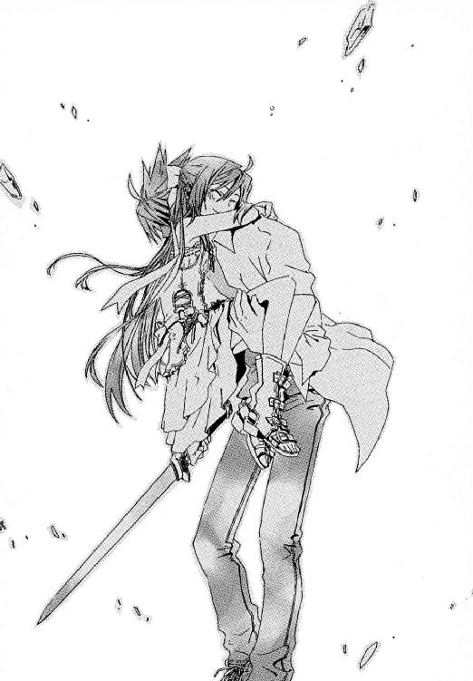
†
メイゼルと自分を比べて、きずなは勇気のなさが恥ずかしい。ひどい目に遭わせてしまったことを、あやまりたかった。だから、あどけない魔女の元気な姿に、いろんな感情がごっちゃになってなだれを打って、きずなはよろこびへと押し流される。さいなまれた苦難は終わり、楽しかった十崎家のあの空気が、よみがえるようで。
きずなはあそこへ行きたい。
幻影城が、メイゼルがジェルヴェーヌを指差して、タンカを切っている姿を見せてくれる。
「あんた。えらそうなこと言っても、単なるドロボーじゃない」
「こまっしゃくれたガキやなあ」
黒髪の魔女と、小さな魔女が、険悪な視線でおたがいを品定めしていた。
「あんた、その赤、下品だわ」
「お子様が、背伸びしすぎで見てれんわ」
同時に相手の赤い服をけなす。きずなは、戦場にあってまず服の色がかぶっていがみ合うふたりを、どこか似ていると思ってしまった。
瑞希は、聖騎士ふたりの猛攻を、しのぎ続けている。なにも語らず、表情ひとつ動かさず、友だちはただ行動で気持ちをあらわしてくれる。
メイゼルが、やつあたりのように、偽物の空へ向けてきずなを呼ぶ。
「なにしてんの！ さっさとおりてきなさい」
仁が、染血公主を牽制しながら、また必要以上にロマンチックになっている。
「みんなも、俺も頑張ってるからさ。ちょっとずつ、もう一度、俺たちの世界を好きになってくれないか」
「嫌いになる理由なんか、ないじゃないですか」
再演魔導師は水くさい台詞に、思わず文句をつけてしまう。「人を好きになったり、努力がむくわれたり、そんな小さな積み重ねが〝魔法〟でいい」と、彼女を支えてくれたのは仁だ。きずなは魔法使いになる前、どこにでもいる普通の女の子で、魔法はあると言い続けたロマンチックな父が好きだった。彼女が欲しかったのは、たぶんそんな、毎日をすこしだけ明るくしてくれる〝魔法〟だった。
決戦の舞台には、三分後にきずなの首をはねる予定の、団将グレアムがいる。けれど、雨に打たれながら見た破滅の未来へ、勇気を出して立ち向かってみようと思った。もし、やっぱりダメだったとしても、最期の場所くらい自分で選びたい。
立っているのもつらいほど怖くても、耳を澄ませばあの足音が、戦いの中、小刻みになっているけれど、まだ床をたたいている。絶望のふちをのぞいても長い階段をのぼり続けた、武原仁の足音が。
きずなちゃんなら、どこへ行きたい？
わたしは、────へ行きたいです。
目覚めたばかりの未熟な魔法使いでもたどり着ける方法を、本当に強く望めば再演大系の遺構は示してくれる。彼女は再演の祭壇へと、右手をさしのべる。
まばゆい力線が一条の光の柱となって、神の怒りの雷さながら、罪深い再演の塔をつらぬいた。祭壇を木っ端微塵に砕き世界を串刺しにするように、現れたのはあまりにも固い純白の空白。彼女は今、《神の辞書》たる極点に右手を縫い止められていた。
秩序が完璧であるがゆえ何も実物として存在する意味がない《極点》で、新米魔女が目を開けると、ジェルヴェーヌ・ロッソがいた。《神の門》にいるはずの、きずなを騙し、たくさんの罪を重ねた魔女が、ひとりきりで闇を覗いていた。
「あなたが、どうしてここにいるんですか？」
振袖の女がふり返る。その角度一度ごとに、時間が急速に巻き戻ったように染血公主が幼くなってゆく。きずなと目が合ったときには、メイゼルそっくりな、長い黒髪と黒い瞳の女の子になっていた。
「みずからの根元有たる妾を、ジェルヴェーヌがたわむれに呼び起こしたからじゃ」
そう言う黒髪の左手は、同じ顔をした、もうひとりの魔女の右手をにぎっていた。その隣にも、それぞれちがう魔法を使う異世界のジェルヴェーヌたちがつながっている。目で追えば無限に情報が引き出されて世界ができてゆくような、異様な光景に、きずなの理性はぐらぐらと揺れる。
「なにしてんの！ あんた、行きたいところがあるんでしょ」
よく知っている声が、きずなを叱咤する。同い年のおとなの魔女が並ぶ先に、ひときわ背が低いメイゼルがいた。お互いしっかり両手をつないだジェルヴェーヌたちの鎖に、ひとりだけぽつんと寂しく、結んでくれる手もなくしがみついていた。
「は、はい！」
慌ててこたえ、きずなは自分の〝魔法〟へと没頭する。《索引》でできた世界の、圧倒的な情報量の中から欲しいものをつかもうと、胸にほのかにともる、あたたかい感触をかみしめる。今も塔の中で戦ってくれている瑞希が言った、きずなも魔法使いだと。今は彼女にもわかる。《奇蹟に手が届く者》は、祈ってまつ怠惰を許されない。すべてを自分で手を伸ばして、実力でつかむのが、魔法使いの世界。
《神の辞書》が、求めにこたえておのずから彼女に奇蹟を刻んでゆく。そのぬくもりの中ですべての意味を知り、そしてたくわえていることができず失ってゆく。
そしてきずなは、父の幻影をかいま見た。
「お父さん、今までずっと、ありがとう」
目尻から、どうしようもなく涙が落ちる。今、すべてが叶う〝ここ〟で、夕方の弱かったきずなに干渉すれば、倉本慈雄を救ってこのバベル自体も帳消しにできる。無限に過去を書き換える再演魔術には、それができる。
「でも、ごめんね。わたしを助けようとしてくれた人が、こんなにいるんだよ。全部なかったことになんか、できないよ」
目を閉じると、倉本家の食卓を思い出す。十年以上暮らしてきたあのアパートに、帰りたい。お父さんに、死なないで欲しい。それでも、きずなは今日のあやまちを、もう繰り返さない。すべてを実力で手に入れるのが魔法使いだとしても、望まないことが起こるたび過去をやり直していたら、いつか、彼女は、何もたいせつだと思えなくなる。友だちの、メイゼルの、仁の気持ちを、何度も繰り返してもらうなんてできない。頭ではわかっていても、本当はつらくて、今、分別も何もかも捨てて取り戻しておかないと後悔することはわかっていて、きずなは顔を覆った。体がおかしくなったみたいに、ぼとぼとと涙がこぼれている。
「お父さん、いろいろわからないことばっかりだけど、ありがとう！ わたしを育ててくれてありがとう！ 今まで、守ってくれてありがとう！ わたし今、楽しいよ。魔法使いになって、前よりもすこしだけ、生きているって楽しいよ」
大声をあげたからといって、気持ちに整理などつくはずがない。泣いても笑っても、きずなの残り時間は、あと三分を切った。世界という本に確定した過去を操作する再演魔術では、未来は弄れない。だから、何千回過去をやりなおしても、彼女の時間は、そこより先にない。何か言ってもらいたくて、《極点》に武原仁の背中を探してみる。ここでも悪鬼である彼を、魔法は拒絶する。
もう前しか見ない。あの銀座のマンションの前で、きずなの世界と、武原仁や鴉木メイゼルの世界ははじめて交錯した。そして、十崎家で暮らして、彼が毎日のようにやってきて。
──きずなちゃんなら、どこへ行きたい？
彼女の答えは、決してあきらめない仁を想うと、体が変になったみたいにドキドキして、しあわせな予感がする小さな魔法で。そして瑞希、メイゼル、十崎京香、魔法に目覚めて出会えた、たいせつな人たちのところで。
そうして、きずなの世界は、彼の世界とひとつになった。
†
水しぶきが飛び散るように、七色の、微細な欠片が外へ向かって爆発した。
魔法消去に引っかけてしまわないように、メイゼルに瑞希の掩護を頼んでジェルヴェーヌと斬り合っていた仁も、それが何なのか最初はわからなかった。
《神の門》からすべての聖性がはがれ落ちるように、宝石はただのガラスに、黄金は色紙のついた鉄板へと。塔の外壁が、ベニヤ板の書き割りになったかのように、軽い音をたてて風に吹かれて飛んでゆく。
そして、すっぱだかのきずなが落ちてきた。
「ええっ、えっ、えっ、え～～～～～っ！」
悲鳴をあげる健康的な体を、黒刀をさやにおさめて両手で受け止める。さすがに十七歳の女子高生のボリューム感は、小学生とはわけがちがった。負傷中の右腕にきて、脂汗をたらしながらおりてもらう。
「よかった。本当に、よかった」
歯を食いしばって直刀を抜き直し、きずなを背中にかばう。ジェルヴェーヌは、奇蹟の宮殿の聖性失墜、つまり再演の完全な放棄を前にだらりと刀をおろす。聖騎士たちも、完膚なきまでに破砕された《神の門》のなれの果てを前に、呆然とするしかない。
「......うそやろ」
ジェルヴェーヌも、グレアムも、その意味を理解している全員が、予想外の展開に絶句していた。幻影城の補助で無理やり進行したとはいえ、今回の《神の門》の再演は、《媒介》と《観測者》がそろって発生した、ただの魔法暴発だ。だが、進行中の大魔術を強制停止させたこれは、制御された本物の再演魔術だ。
「あぁあ、再演はチャラかいな。そうか、そないやな。再演大系も索引型やから、《神の辞書》見れるんやな」
多くの人命が失われた歴史劇の、あまりにもあっけない幕切れに、結局なにも手に入れられなかった騎士たちは時間が止まったかのように立ちつくしている。
朽ち果てたように穴があいた天井から、気持ちのよい陽光がさしていた。
瑞希が、メイゼルが駆け寄ってくる。これでいいと思った。『人』はつながる、それぞれ望むところへ。その絆のために、仁たちは戦ってきたのだ。
どうしても今この瞬間ことばにしておかねばならないとばかりに、せっぱ詰まったきずなが、甲高くなってしまった声で言った。
「わたし、武原さんがす、スキです！」
仁の頭から一瞬、戦場がぶっ飛んだ。
突然のことに反応できず、盛りあがりにあおられて照れくさくなってきた仁が口を開くより前に、メイゼルが彼を押しのけた。
「な、な、いきなりナニ言い出すのよあんた！ すっぽんぽんで色ボケてんじゃないわよ、......せんせ、きずな見るの禁止！ 絶対禁止!!」
だが、人間らしい光景は、そこで終わりだった。仁はふたりの少女を、慌てて《魔獣使い》のほうへ突き飛ばす。
「神和！ メイゼルときずなちゃんを──」
頼むと叫びかけた言葉が、かき消えた。大気が暗転するように、すべての音が死んだ。
《無言の神音》。
『神意』を求めた騎士たちは、十名の仲間を失っている。失敗だからと退いてくれるようなあっさりした連中なら、神音大系と《協会》の交戦状態は一万年以上も続かない。
押し寄せるは、黄金の流星の嵐。仁は走りながら、柱も床も壁も音すら立てず等しく紙きれのように貫通する魔弾を必死でかわす。
「見苦しなぁ。再演は『人』の勝ちやて、もうひっくり返らんやろ」
悪女が、すそをからげて走りながら、魔法強化したのだろう日本刀で流星を打ち払う。
「バベルの塔、名づけて《灯台》と定義、保持済み概念《海原》と加算。......もう、しまいや！」
瞬間、塔の全域に黒い亀裂がからみつき、波濤のうねりがとどろいた。まるでダムが決壊したかのように、白いしぶきをあげる暴龍のような鉄砲水が、壁の裏側から、天井から押し寄せる。地上百メートルあるはずの、この舞台まで、海がせり上がってくるのだ。荒れ狂う水に、誰もが打たれる。渦を巻きながらあっという間に七十万トンを超える海水が、かろうじて残った外壁の内側に充ち満ちた。
立っていられない足場の揺れに、床にはっていた仁が、バベルを満たした巨大な海水プールをながめる。これが《染血公主》の切り札か。
神音楽器は、空気中への伝達を念頭に調整されているから、音の伝わりかたのちがう水中では正確な神音をかなでられない。エレオノールも、溺れながらは歌えない。それは力業だが、合理的な神音大系殺しだった。
無音で波間が爆発して、鎧の影が一騎、大気中に戻ってきた。水面がかたい床であるかのようにしっかりと足を踏み、壁に突き立てた騎士剣を抜くのは、案の定、黄金の髪の少女騎士。
団将グレアム・ヴィエンが、四つんばいで立ちあがれないきずなの頭上で、剣を大上段にかまえていた。『神意』に届かぬならと、再演魔導師を殺そうとした騎士を、友だちの神和瑞希が止めた。《気》の盾を展開して、首をたたき落とす寸前の凶刃を、素手でつかむ。
「......きずなを、犠牲に......絶対させない」
霧が白い花をつけた野バラの蔓へと変わり、グレアムの頭に何重にもからみつく。籠手でわしづかみにして棘もかまわず引きはがした騎士を、横殴りに走った人工稲妻が打ち、深い海へとたたきこむ。
仁はそれを追って、もみ合い複雑な波を立てる海へ躊躇なく飛びこんだ。悪鬼にとって魔法の水の中という環境は、一方的に有利だ。魔法で造られた海を、魔法消去で焼き切りながら、浮力を無視して自由落下に近い速度で団将を追いかける。水深十メートルにいるグレアムは、二絶対気圧、一平方センチあたり一キログラムもの水圧を引きずりながら、思うように紫炎の剣をふるえない。仁は水圧を感知しただけで魔法の水を消去できる。そして、一瞬の組み討ちで、黒刀は正確にグレアムののどを切り裂いた。
そして波間から潮の香りと太陽の下、揺れる舞台へと仁ははいあがる。
《魔獣使い》が、エレオノールとはげしく打ち合っていた。メイゼルも、死にかけたばかりだというのに、止める間もなく戦場へと飛びこんでゆく。
「せんせ、こっちはまかせて！」
《魔法という力》に魅入られた大量殺人犯が、美しい刃紋をぎらぎらと光に照り返させ、ずいぶん長く殺し合いをしている彼へと、共感のこもった笑みを投げた。
「そういうたら、まだ片づけなあかんのが、おったんやな」
「《染血公主》ジェルヴェーヌ・ロッソ。魔導師公館の専任係官として、おまえを抹殺する」
今しがた海中で騎士にとどめを刺した黒刀から、冷気が伝わってくるようだ。こんなところに、メイゼルを置いておきたくなかった。きずなに見せたくなかった。一秒でも早く、十崎家に、あの六年一組に帰りたかった。
歯を食いしばり、力のなえそうな足で床を強く踏む。瓦礫を爆薬に変成したジェルヴェーヌの魔法を、消去を作動させてつぶしたのだ。
宣名魔術には、かならず《対象》がある。だから、魔法消去状態で何かを感知できなくなれば、名づけがあろうがなかろうが、魔術はそこで発動している。標的位置がわかれば、消去を照準できる。
「無駄だよ。もう逃がさない、おまえの手札は全部見た」
《保持済み概念》に脳という生理的資源を割り当てる宣名魔導師は、奇蹟でカバーしきれない人間の限界にしばられる。ジェルヴェーヌが戦闘に耐える高速で扱える術は、数が多くない。だから、牽制と攻撃には爆薬をつくる《緋牡丹》、海を呼び出した《海原》、魔法生物を生成した《鈴虫》、刀の強化魔術、決戦でこの四種類の術しか使えなかった。《神の門》から索引を抜き出すため脳の領域を温存したがゆえか。
十五歩の距離をつめる間に、仁は七度、魔法を焼き尽くした。それは一歩ごとに、傲慢な奇蹟のあるじを丸裸にし、自分がただの無力な存在だと思い知らす悪夢。間合いは一足一刀。もはや、対象化という一行程ぶん手間のかかる宣名魔術より、剣のほうが早い。
「公館の鏖殺戦鬼で、一番こわいんは《沈黙》やて言うんな。サシやったらたいしたことない思てたけど、ちゃうんやな......」
揺らめく魔炎をながめているのか、これからふりかかる苦痛と死の予感に、恍惚と、染血の魔女が目を細める。
「──ああ、ほんま、こわいわ」
混乱の塔で、多くの魔法使いたちが、みずから信じるものや生き方を試されてきた。一瞬の交錯の後、とうとう魔法消去で防御魔術をも突破された、染血公主の番が来た。
死という、誰もに訪れる終焉のとき。
左横腹を背骨近くまで黒刀に切り裂かれた女は、帯から滝のようにおちる鮮血をおさえようともせず、波を打ち寄せる海を見ていた。
「......絶景やなあ。ひとりで楽しむんもなんやけど、海は、まただれか持って帰るやろ」
帯をきつく締めていなければ、確実に腸が飛び出していた傷だ。地獄の苦悶にさいなまれているだろう。それでも後悔も泣き言もなく、血刀をさげた仁がおぞけをふるうほど、何事もなかったように。
瞬間、大出血で蒼白になっていたジェルヴェーヌの顔面の右側半分が、はじけ飛んだ。頭蓋骨の破片が、脳漿のしぶきとともに、花火から飛び出た火の粉のように、散った。けれど、染血公主はその痛みこそをよろこぶように、悪意をこめて、にぃと笑うのだ。
「ああ、楽しかった」
そして、大の字に転がるように、ばたりと仰向けに倒れ、二度と動かなかった。
血まみれの歴史劇の主演女優は、死の瞬間まで、身勝手な悪人であることをやめなかった。犠牲者たちに比べて、理不尽なほど安らかに、ジェルヴェーヌ・ロッソは死んだ。怒りと憎悪で照らした巨大な黒い太陽の不在は、関わった者の負の感情に、暗色の濃い影を落とす。夕陽が、沈んでなお残照で、夜空を血の色にひたし続けるように。
澄んだ音を立てて、仁の足に、転がってきた小さな金属部品がぶつかった。とりあげるとそれは聖騎士の指輪で、ふり返ると最後の《神意》の代行者が鎧の籠手から抜き取られたことに呆然としていた。
「もうやめましょう！ これ以上やったって、意味なんかありません」
真っ青な顔で、舞台装置の屋上から、友だちから下着を借りたらしいきずなが切々と呼びかける。神音楽器の鍵になる指輪を、新米魔女が《無色の手》で弾き飛ばしたのだ。
返答は、泣き妖精の慟哭のような見えない魔弾の乱れ撃ち。
「きずなはさがってなさい！ もうちょっとで、せんせが死ぬところだったのよ。この女だけは、絶対にゆるさないんだから！」
メイゼルが叫んだと同時に、五人に増え、ひとりひとりが魔法陣を足もとに展開した。《破滅の化身》だ。その赤いドレスが咲き乱れる百花繚乱が、地獄のはじまりだった。
一番目のメイゼルが魔法陣を海面に展開し、急速に海水を原子へ解離させ電離電圧の拘束なく魔力をはぎとってゆく。強引に作られた電離気体を、ふたりめのメイゼルが誘導する。塔の構造物の残骸を満たしていた海水面が、目に見えて水位をさげた。
そして三人目がエレオノールの周囲を回転する膨大な魔力とイオンの流れを作り、四人目の役目はそれを加速してゆくことだ。
その一瞬、『神意』に透明な人間から感じるはずのないよどんだ殺意に打たれて、仁の上半身に鳥肌が立った。鎧乙女が、槍を投げるように渾身の力をこめてメイゼルへ剣を投擲した。剣を媒介にした奥の手の超高出力魔弾は光の尾を曳いて爆発的に加速し、黄金の火の粉を散らす不死鳥さながら、魔法に集中する小学生を貫かんとする。神速で割って入った瑞希が、鉄壁の気盾十二層をことごとく突破されながら、白い両手を血まみれに間一髪でわずかに軌道をそらす。電磁波が〝檻〟の外部に漏れないように魔法で殻を作った五人目のメイゼルが、《魔獣使い》を怒鳴りつけた。
「死にたいの？ 今すぐ、外、出て！」
仁ですら、メイゼルがここまでやれると知らなかった。手際よく展開してゆく極大魔術は、見る者を小さな蟻になったような無力感と昂揚と恐怖でもみくちゃにする。そして、これを魔法消去で強引に止めれば、小さな魔女の内臓損傷を止めている魔法をも破壊するから、見守るより仕様がない。
「やめろ！ メイゼル、これはやりすぎだ」
エレオノールが、見えない魔弾をはなつ。だが、もはや過剰なエネルギーをあたえられた大気を、正常に声が伝播するはずがない。
《破滅の化身》が一気に八人も数を増やした。エレオノールの周囲で、おのが尻尾を飲みこむ蛇のように始端と終端をつなげてめぐるプラズマ流へと、メイゼルたちが容赦なく磁力をかける。加速された魔力の大津波がイオンと衝突して熱を発し、あっという間に数千度に達する。もはや海水の電離も誘導も必要なくなったひとり目とふたり目も、すでにはげしい発光をはじめている光龍の制御に加わった。
「なんなんですか！ これ！」
きずなが、圧倒的な奇蹟の力を見せつけられて、わけもわからず大声をあげる。
「《天使の輪》だ。まともに見ると目がつぶれるぞ」
仁は、それでもまだ光の内側から、神音らしいものが聞こえることに驚愕する。だが、いかなエレオノールでも、ごくわずかな空間の内側を生存できる状態に維持するだけだ。プラズマ中の電流だけでも、《天使の輪》は、最大三千万度まで加熱する。《破滅の化身》で増えた赤いドレスの少女のひとりが、熱放射を食い止めてくれていなければ、全員まる焼けだ。透過しているのは可視光線だけだろうに、あまりにまぶしくて目を開けていられない。もはや太陽表面の温度を超えた、焦熱地獄になっているはずだ。なにも原形など留めていられるはずがない。
ようやく最大十六人から人数を減らしはじめたメイゼルが、暴れる光河の温度をさげはじめた。もはや誰も、何か言葉を発しようという気力はなくなっていた。
だから全員が、その光が散ったとき、そこに人間が立っていようなどと想像もしていなかった。
本物の高位魔導師は、超人の魂と誇りを抱くにたる、文句なしの化け物だ。髪はほとんど焼けこげ、熔けた鎧は皮膚に癒着し、熱で変質したタンパク質が異臭をはなっている。それでもエレオノール・ナガンは生きていた。二本の足で地面を踏みしめて。その目は、炯々と、まだ意志の輝きを失っていない。
鎧乙女の、肉の焼けた腕がもちあがり、かまえをとろうとする。その手に、もはや剣をにぎっていないことも気づかず。どれほどの別れを重ね、どれほど多くのものを彼女は失ったのか、まるで虚空へ手をのばすようで。
もうもうたる湯気が、雲の流れる青空へと立ちのぼってゆく。
「ニコライ、ニコライ、私は、立派に戦えていますか」
エレオノール・ナガンの目から青白い頰へと、涙が落ちていた。染血公主にとどめの一撃を打ちこんだのは、騎士ニコライと親しかったこの少女だったのだ。
もう神経すらまともに機能していない状態で、それでもまだ筋肉を震わせながら、鎧乙女は歌うのだ。メイゼルをかばおうとして、仁は異常に気づいた。本来なら彼らをまとめて吹き飛ばしたはずの声が、今はただ、心に切なく響くだけの歌だった。
「ニコライ、私は、あなたの誇りになれますか」
それでも戦いをやめられなかった最後の騎士が、重度の熱中症で大きくよろけて、しかし倒れることを拒絶する。神音は、人の意志を反映しない。人の願いを聞き届けない。神音は演奏家たる使い手の意志ではなく、正確に《索引》をなぞる音にしたがうだけだから。神音に透明になれず、自分の気持ちをこめずには歌えない者は、神音魔導師ではなく歌手だ。とけた皮膚をよろめくたび引きはがしながら足を踏ん張る、エレオノールはもう神意を運ぶ聖騎士ではない。重い鎧を身にまとった、ただの細い身体の少女だ。
「もういい。やめろメイゼル」
とどめの雷撃をはなとうとした生徒の手を、仁は止めた。あどけない目尻を上気させた眼差しが、あのジェルヴェーヌにそっくりで、やりきれなかったのだ。それが傲慢だとしても、本当は必要だとしても、この小さな魔女の手を汚させたくなかった。殺せば、恨まれる。人の命の重さを背負う。そんな業まで、まだ子どもの彼女に引き受けさせないでくれと、もしもいるものなら、いと高きものに願う。
きずなが、友だちの瑞希の肩にすがりついて、すすり泣く。ただひとり《神の門》のすべての悲劇を目にした彼女が、涙を流してやってくれるなら、聖騎士たちはすこしなりと報われるだろうか。
舞台に最後に残されるものは、『魔法という力』でも『神意』でもなく、いつも、ただ『人』でしかない。それが素晴らしい真実なのか、ヒトに科せられた呪いのか、奇蹟に見はなされた仁にはわからない。
「帰ろう。京香も待ってる」
ひとりで立つのが苦しくて、メイゼルの小さな肩を抱き寄せてやる。愛してくれたニコライを失い、憎悪にその透明だった色を濁らせ、奇蹟に見捨てられ、目的も何も果たせず、剣を持っていないことにすら気づいていない。最後の騎士の姿に、メイゼルは何を見たのだろう。死ぬまで戦うことを義務づけられた、刻印魔導師の少女が、緊張の糸が切れたように仁の腰にしがみつき、しゃくりあげはじめた。
幻影城に日が昇り、水晶の床を薄紫に染めた太陽は見る間に南中し、沈んでゆく。色のない半透明な建造物群は、生成と崩壊を、まるで波が打ち寄せ水平線へと引き戻される営みのようにくりかえす。あまりに変化がはげしくて、まるで実在すること、現実になることをおそれているようにすら見える。未来に救いは訪れる、いつか素晴らしいものが現れると、幻影城は時の果てへ可能性をつなぎつづける。
きずなは扉を開いて、彼女たちの現実へ、最初にそれをくぐった。内臓が破裂しているメイゼルは、《協会》へ魔法で治してもらいに戻った。神和瑞希は、魔導師公館へと、エレオノール・ナガンを連行したはずだ。《協会》幹部を倒しているあの鎧乙女がこれからどんな運命をたどるか、彼は知らない。
武原仁ひとりがここに残った。
《神の門》の痕跡は完全に消え去った。まるですべてが幻だったかのように、舞台装置も死体も消え失せた。広がるのは更地になった水晶の荒野。仁はすべてを失った鎧乙女の剣を手に、再演のはけた劇場に立ち続ける。
「なにもなくなっちまったな。ジェルヴェーヌが死んだのは、俺の正面から五メートル先だ。こっちには、聖騎士たちが沈んでる、小さな海がうねってたよ。いろんな世界の連中が、いろんな想いをぶつけ合った塔が、確かにここにあったんだ」
背中から、確かに聞き覚えのある声の男が、彼にたずねてきた。
「再演は『人』が奇蹟と神意を打ち破って、もう終わったのではなかったかね？」
「俺が受けた命令は、『幻影城内のすべての敵対魔導師を抹殺すること』なんだ。斬らなきゃならないやつが残ってたら、帰るに帰れない」
ふり返ると、長い髪を後頭部でくくった暗い瞳の男が、幻影城の万能通行証たる《鍵》を左手でもてあそんでいた。きずなの戸籍上の父、倉本慈雄だった。
幻影城内を自由に移動できる《鍵》の所在を考えれば、他に答えはなかった。ジェルヴェーヌの手にあったなら、《神の門》の再演が吹っ飛んだ時点で、さっさと逃げたはずだ。何十件という強盗殺人事件をおかして逃走中の女が、今さら撤退に禁忌などあるはずがない。命綱たる鍵を、あの狡猾な魔女がわたしたなら、相手は駅のホームできずなとジェルヴェーヌといっしょにいるところを目撃されている、倉本慈雄だ。
「心残りが出会わせたとは、奇縁だな。私は長い年月の思い出を、ちょうど今日、ここに捨てに来たところだ」
「戦わずに、一番いいところだけをかすめ取ったおまえが、どこへ行けるつもりだ？」
ジェルヴェーヌは、きずなが《神の辞書》から魔法を引き出したと言った。慈雄は、娘の後に続いてそれを手に入れただろう。「《鍵》を持つものは、遺構の内部を自由に移動できる」のだから。
慈雄が、腰にさげた鞘の金具に無理やり突っこんでいた紙箱を引き抜き、煙草を一本つける。鞘に籠手の指をすりつけて、神音で火をつける。
「もうここにはない遠い場所へ。『奇蹟は本当にある』と、今日が来ると信じて、何度も自分に言い聞かせたものさ」
魔導師たちの殺し合いを安全なところで観戦していた慈雄は、聖騎士のものと似た鎧に全身をかためている。十数年の間に作りあげた神音楽器が、各部にしこまれてごてごてしすぎだ。煙草の煙と騎士装束も、絶望的にバランスが悪い。
「余裕があったんなら、その趣味の悪い格好なんとかしとけよ」
悲劇の本当のはじまりを作った男が、目尻にしわを寄せ、ばつが悪そうに苦笑した。
「性能重視だ。すこしくらい大目に見てほしいね」
こんな茶番に巻きこまれた、聖騎士たちこそいい面の皮だ。もともと《鍵》は、公館職員の自宅に直接送りつけられた。《鍵》を送りつけた後、慈雄は魚釣りでもするように、じっとまち続けたのだ。誰かが欲にかられて《幻影城》を動かそうとする、そのときを。そして、ついに釣り針をみずからつかんだジェルヴェーヌに、《協会》の調べた情報ほしさに接近した。
「最後に答えろ。《神の門》で手に入れた神音を、使わずに凍結させておく気は、ないんだな？」
仁たちが生きる、守るべきこの世界は、残酷な事実として、許容限度を超えたものを弾き出して成り立っている。そのために、ジェルヴェーヌ・ロッソや、この倉本慈雄のような一線を踏みだした魔導師を倒すのが、専任係官である仁の役目だ。
「私は、旅立つ前に、きずなのことを整理したかったのだろうな。あの娘が魔法を使うのを十七年もまったおかげで、いろいろ染みついて困るよ」
「かなわない願いを教えた聖騎士の贖罪には、割り切れない気持ちも残るけどな。かなわない願いがかなう希望をぶら下げて、自分のために利用するのは下衆だろ。十七年も腹にためて考える時間がたっぷりあるんだから、ちょっとは『まずいだろ』くらい考えろよ！」
仁は胃のあたりがむかむかしてきた。きずなを、先に帰らせてよかった。
どうして自分が慈雄につっかかっているか、理解した。ただ一言、この父親に、きずなへあやまって欲しかったのだ。理由はどうあれ、十七年も倉本慈雄は、赤ん坊のときから彼女を育て続けたというのに。この男の手が、小さなきずなにほ乳瓶でミルクを飲ませ、おしめを替え、幼稚園や小学校に連れて行き、学費や洋服代、ランドセル、教科書、制服、何不自由させなかった。それは、道理や正しさで整理できる問題ではない。
「それでも、きずなちゃんを今日まで育ててくれて、ありがとう」
「やめてくれないか。まるで、娘をヨメにやる父親みたいだ」
引き締まった悪人の面は、父親らしい慈しみがよぎると、力なくたるんでしまう。仁も、きずなを育ててきた男と戦いたくない。最終的な結論がわかっているのに、割り切れない。一番にしなければいけない義務も、一番にやりたいこともわかってた。そして、仁と慈雄の、決して選べない二番目は同じ、すこしたれ目気味で、勉強はダメで、料理がじょうずで、すこし臆病だがやさしい倉本きずな。彼女を思い浮かべただけで、胸がはりさけそうだ。
だから、同時に剣をかまえた。
「さあ、始めようか」
仁は黒刀を腰の後ろにおさめたまま、刃渡り一メートル近いエレオノールの長剣で、力まかせに斬りかかる。もう死力を振り絞っても右腕に力なんか、ほとんどはいらない。長引かせれば、確実に負ける。だが、上段の打ちおろしは、拍子抜けするほどあっさり敵の額を割った。
血を噴きあげながら、頭蓋骨が陥没してくずおれる慈雄を、仁は呆然とながめていた。そして、斜め後方からおそった剣をよけそこねて、背中の肉を切り裂かれた。
「《ゆらぎの化身》の応用だよ。神音で自分自身を作れるなら、生身の似姿だって作れるさ」
倉本慈雄が、よろけた仁の背後で、吸いかけの煙草を捨てた。そうだ、きずなに彼がはじめて手をさしのべたあの雨の日も、同じ幻に多くの魔法使いがだまされたのだ。仁は魔法消去を作動する。
「魔法消去か。だが、それは攻撃が見えなくなって、かえって無防備になるな」
慈雄が、鎧の左肩の留め具を操作して、鋭く左正拳で空を打ち抜く。まだ間合いが遠いつもりでいた仁は、車にはねられたような衝撃に二メートル近くもはね飛ばされた。おそらく籠手に仕こまれた楽器が衝撃波をはなって、純粋な出力で、消去を突破してきたのだ。十七年かけて作り続けた神音楽器の威力は、なまなかなものではない。
背中を盛大にすって火傷した彼を待ち受けていたのは、水晶の床を嚙み砕きながら押し寄せる不可視の波だ。命がけで、透明な海にしぶきをあげる破砕音の源を飛びこえる。視線を向け聴覚を集中したのに、すねの肉をえぐられた。全感覚を動員して飛来軌道をしっかり観測してなお正面突破してくる威力の魔法は、消去なしで当たれば、まず一撃で死ねる。
散る花びらのように空へと巻きあげられた水晶の細片が、ルビーの雨と降りおちる。透明で堅い床に反射する幻影城の太陽は、短い一日の夕方を迎えようとしていた。
「そんなボロボロで抵抗する今の君はぶざまだよ。武原君、もう終わりにしよう」
誰より万全に準備を重ねながら、命を懸けた歴史劇に参加しなかった倉本慈雄が、仁を鼻で笑った。
「そうか、おまえには、ぶざまに見えるか」
傷だらけで、もはや立っているだけで精一杯で。それでも、限界をこえている腕が、自然にあがった。帰りたい場所守りたい人、死なせた人間たちの重さが、そうさせた。
「来いよ。今日一日の戦いを嗤うやつに、正直、負ける気がしない」
慈雄が、籠手のひじ側にはまった輪を、カチリと音が鳴るまで引っ張った。バネじかけで、オルゴールの歯のようなものがついたその輪が、一定速度で回りながら手首側へと移動してゆく。なのに、神音楽器は音を一切漏らさない。無音魔術だ。聖霊剣の高等技法を組みこまれた楽器が今、よほどの大魔術を準備しているのはまちがいない。
じりじりと空気が焦げるような、解放の瞬間をはかる一呼吸、ふた呼吸、三呼吸。
四呼吸目を吸ったそのときが、楽器が旋律をかなでおえる瞬間──。
慈雄が右手をわずかに動かしたと同時に、仁は消去を切断し、戦い抜きすべてを失ったエレオノールの剣を思い切り床へと突き立てる。索引型である神音魔術は、《観測者》と《媒介》があれば、魔導師の意志にかかわりなく作動する。
暴発した《無言の神音》が、沈黙の網に神音をからめとり、慈雄の大魔術を崩壊させた。
悪鬼から魔法が飛ぶと予想もしていなかった魔導師が、焦りに顔をこわばらせ、かかとの拍車で床を蹴る。石英の結晶がまるで水になったかのように、二メートルほども水晶の高波をはねあげた。《沈黙》は左手に隠し持っていた、きずながエレオノールの指から抜き取った指輪を、剣の神音装飾に走らせる。騎士剣がまたしても神音暴発で、白い虹の輝きをはなって聖別された。慈雄を守る《光背》などとっくの昔に焼き尽くされている。
そして騎士たちの恨みに導かれたように、魔刃は水晶の壁ごと、後ろに隠れた慈雄を串刺しにした。
「魔法消去を、しばらく切ってくれないか」
腹を深々とつらぬかれて横たわる慈雄が、死相の出た顔をゆがめた。遠くに望む四十九重の宝塔の上を、満月が夜空に浮かんだ船のように、すうるり流れてゆく。仁は、甘いとわかっていても、きずなを育ててきた父の最後の頼みを、無碍にできなかった。
死にゆく男が、重い籠手をわななかせながら、首からさげていた親指の爪ほどしかない小さな楽器を、血の気のない唇にくわえる。
そして、澄みわたった悲しい笛の響きが、凍った世界に溶けていった。そのとき仁の胸に、まるで昔からよく知っていたかのように浮かびあがってきたのは、しあわせな時間。清浄な銀の鎧に身をかためた栗色の髪の女が、真剣な面持ちで歌っていた。聖騎士たちが大規模な魔法儀式のときにやる神音合唱だ。この焼きレンガをアスファルトで固めた壁面は、バベルの塔内部。じっと見ていた彼の視線に気づいたように、〝彼女〟の澄んだ目がこちらを向く。その瞬間、恋する男の胸は、触れたら崩れそうで。
「ああ、そうか、そういうことか」
仁はそのどうにもならない現実を前に、泣いていいのか笑っていいのかもわからない。瀕死の父親も、少年のように若々しい苦悩に満ちた瞳になっていた。
三千年前、本物のバベルで、《神の門》を招く神音合唱は失敗した。同じ隊の女性騎士に恋したひとりの騎士が、誤って《彼女を恋する気持ち》の神音を、《神の辞書》から引き出してしまったせいだ。本物のバベルで最後の舞台にのぼった騎士隊唯一の生き残りとは〝彼〟で、恋した女は永遠に喪われた。そして〝彼〟は、面影に会える神音──仁が今、聞いた、まさにこの神音を楽器のかたちで残す。めぐりめぐって慈雄が首にかけた親指の爪ほどの古びた笛、この三千年の想いが、本当のはじまりだった。
男たちは、今回の再演で上級騎士ニコライが、三千年前の騎士と同じ罪をおかしたと、知らない。天罰のように慈雄をつらぬいた剣の持ち主、エレオノールが死んだ〝彼女〟の役をあたえられていたことも。身を捧げて真摯に生きた、三人目の男の愛情が、ついに悲劇の歴史を変えたのかも、誰にもわかりようがない。
慈雄が、きずなを捨ててまでほしかった奇蹟とは、結局何だったか。神音が引き出した恋で、同じ女に魅入られているからわかる。三千年の時間を戻す魔法──時をこえ本物のバベルで、名もまだ知らぬ面影の〝彼女〟を救い、自分が恋をかなえたいと。あり得ない、夢を見た。人間くさくばかばかしくて、だが〝人を好きになるという魔法〟にかかった男には、すべてを懸ける価値があった。もし楽器として残った想いが恋でなければ、その神音はバベルを再臨させ得ただろうか？
人だから、それが罪でもつながろうとせずにいられない、それぞれ望むところへ。
波乱の生をまっとうした慈雄が、あえぐような苦悶の形相をゆがめて、目を閉じる。
「悔いはない、......一生に一度の、想いに、......身を捧げたのだ」
幻影城の短すぎる夜が明け、瑠璃鏡の海にまた波の寄せるように紫から茜へ赤みを増し、闇は引き波のように西へ。日が昇る。もう、罪人は動かない。
去りがたい想いを振り切って、魔法消去を作動させる。胸にかすかに刺さる痛みだけを残して、罪深い恋は魔炎をあげ、燃え尽きた。
†
魔導師公館が《扉》のあった奥多摩の山中を捜索した結果、幻影城から弾き出された死体が多数、発見された。宣名大系魔導師ジェルヴェーヌ・ロッソ。団将グレアム・ヴィエン以下、聖騎士の死体は六名だけ。そして捕獲したエレオノール・ナガンをふくめた八人ぶんが、メイゼルの首帳に記載された。小さな魔女が自由を手に入れるまで、倒すべき敵はあと九十人。倉本慈雄の件は、公館内でなかったこととして秘匿あつかいになった。
公館へ戻ってきて仮眠をとって起きると、もう翌日の夕方だ。仁は書類仕事もそこそこに、包帯だらけの手で、十崎家の玄関の呼び鈴を押した。
とたとたと、軽い足音が駆けてくる。それだけで、なんとはなく、心が浮き立つ。玄関でサンダルを引っかけて、ドアを内側から開けたのは背の低い小学生だ。
「せんせ！ いらっしゃい」
元気いっぱいで、もう胃の修復は終わっているようだから、ほっとする。メイゼルの頭を、意味もなく、なでてやりたくなった。子どもあつかいされてむくれながらも、寄ってきて、まんざらでもなさそうに目を細める。
そして奥から、エプロンをかけたきずながやってきた。目があったそのとき、彼女がやさしく声をかけてくれる。
「おかえりなさい」
変に雰囲気にはまって、まるで新妻みたいだから、「ただいま」と返すのが恥ずかしくて、口ごもる。仁と見合わせたきずなの顔が、かあっと赤くなった。
「どうして、きずなが、せんせに『おかえり』言うの？」
小学生が、仁の腰にしがみついたまま、ドスのきいた声で素朴な疑問をぶつける。
「は、わ、わ、わたしは、ちょっと、ごはん作ってたら、なんか家族みたいだなーって！」
首まで紅潮させ恥ずかしがるきずなを前に、仁は花園の一歩先に奈落を覗いたように血が凍った。目の前の娘の、たったひとりの家族を、彼が殺した。今、告げられるはずもない。そもそも父、慈雄が、利用するため彼女を育てたと、娘は知っているのか。そんなことを今、確かめられるはずもない。
そして家族という言葉に、メイゼルのオモチャを買いに行ったスーパーで、きずなが教えてくれた昔話を思い出す。きずなは、母のことを慈雄にたずねた夜、父親が首からさげていた楽器を吹いているのを聞いた。そして、〝美しい女性〟の姿が浮かんで、胸が締めつけられたんですと、うれしそうにしていたのだ。
同じ幻影を共有したからこそ、言えない。その幻は、三千年前のバベルの騎士が罪深い神音を楽器化し、倉本慈雄へと受け継がれた、色あせない恋の残照。だが幼かったきずなは、面影の〝彼女〟を母親だと思いこんだ。胸をしめつける気持ちを素晴らしい、魔法みたいだと。
幻に囲まれてきたきずなが、他人ばかりのにせ家族を、まるで大事なものであるかのように愛おしむのだ。
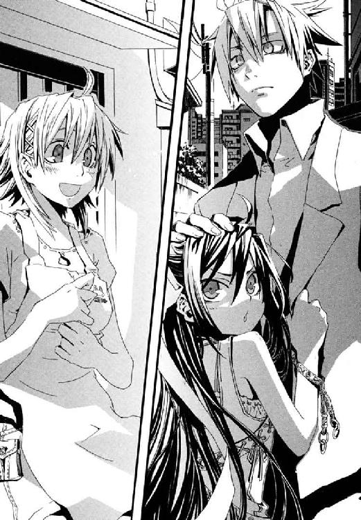
「ここをしばらく、わたしの居場所にさせてもらって、いいですか？」
「どうして、きずなはそれを、キョウカじゃなくてせんせに聞くの！」
スリッパの足を踏みならして、メイゼルがかわいらしく抗議する。
「許可しまーす」
家主の十崎京香が、廊下の角っこで、笑いながら少女たちを見ていた。
「きずなのくせに、あたしと、せんせ、取り合うつもり？ いい度胸じゃない？」
メイゼルは、甘えるのが下手だ。敏感に雰囲気を察するわりに、すぐどうしていいかわからなくなって、かまってほしい猫みたいに体ごと飛びこんでくる。
「こら、もうちょっと仲良くしろ」
本格的に彼にしがみつきはじめた小さな魔女の、肩をつかまえてぐいぐい押して廊下へのぼらせる。
きずなの前に出されて、ごめんなさいを言うのも下手なメイゼルが口をひらきかけ、うつむく。そのたび、しっぽのように、艶やかな長い黒髪とリボンが揺れる。
あたたかい家の奥から、おいしそうなごはんの匂いがした。
「今日は、ちょっとごはん簡単だけど、いいですか？」
「あたしを、食べ物でカイジュウできると思ったら、大まちがいよ！」
幻の家族から、新しいつながりへと。ほら、初めて差しのべたとき震えていた彼女の手が、家族みたいに暮らしはじめたメイゼルの手を、自然につかまえている。
「武原さんのぶんも、お茶わん用意してますから」
そして、切ないほどやさしく、今度はきずなのほうから手をのばしてくる。やっぱり「ただいま」と返せない、つらい秘密を隠した仁のほうへも。みんな人間だから、これだけのことを乗りこえて、やっぱり惹かれ合わずにいられない。
魔法みたいに。
翌日、御陵甲小学校六年一組の教室は、もうすぐ七月だというのに進歩がない。
窓の外はからりと晴れ、四時間目もなかばをすぎ、ようやく給食時間になって一息つけると、仁は教壇から教室をみわたす。教室の男子生徒の半分ほどが、仏壇でもおがむみたいに、手を合わせていた。合掌、インド人、カレーという失礼千万な連想からうまれた、【給食がカレーになるサイン】だそうだ。それは、合図ではなく、おまじないと言うのだ。
「おまえらな、小学校に六年通ってれば、給食なんか予定表どおりで急にメニューが変わらないことくらい、わかれ」
副担任として、この子どもたちに何をしてやれるものかと。メイゼルは男子たちの合掌大会に加わらず、かわりに仁と目が合えば【大スキ】の合図だ。こっちの色ボケさんも、どうしたものかと。
「でも、うちの家はかわりまーす」
イガグリ頭の兵頭直樹が調子に乗って、思い切り手をあげる。このまるぼうずが、合図を出し合う流行の発信源だ。突然、立ちあがると、胸をつき出して強調するように腰の裏に両手を当て、せき払いをしながらぷるぷると尻をゆする。そして、右手を腰からはなすと、横向きのチョキにしたその手をぱっちりした目にそえて、頭の悪そうなポーズを決めた。
「これが、【うちの晩ゴハンが肉になる】サイン！」
ニセ教師は、呆然と、口をあんぐり開けたまま、しばらく言葉を忘れた。兵頭家は五人の子宝にめぐまれた大家族だ。いや、せめてもうちょっとわからないように隠せっていうか、笑いごっちゃありませんよ？
すこしうつむいて頰を赤らめ、学級委員長の寒川紀子が眼鏡の位置を直した。
「お母さんがこれをやると、兵頭君のお父さんが仕事から早く帰ってきて、晩ご飯がお肉になるそうです」
それでもちゃんと説明してくれる生真面目さがステキだ。
「先生！ どういう意味ですか？」
「お父さんとお母さんに聞け！」
こっ恥ずかしさの泥沼に引きずりこむ亡者に足をつかまれたみたいに、男には床を踏んでいる感覚すらない。小学生と教師が、秘密の合図で【怒っている】【ごめんなさい】、そして【大スキ】。目が合った小さな魔女が、指で作ったハートマークの合図にかくれて、にんまり笑う。この小悪魔はいつかバレてむずがゆい思いをすることすら楽しみながら、仁にやらせてよろこんでいたのだ。この先おとなになっていったらどこまでエスカレートするのか、胃のあたりに冷たいものがおりてくる。
そして、たいせつな思い出を台無しにピンク色でぬりつぶしてゆく地獄の気まずさに、黒板へもたれかかった。穴があったらはいりたいんだ、いや、崖があったら飛びこむ。
「まあ、あれだ。大事なのは合図がどうこうより、たとえば人を好きになるみたいな、小さな魔法のほうだからな」
六年一組の生徒たちが、ざーっと音が聞こえそうなほどきれいに静まり返っていた。
「先生、それは生徒を引かせる魔法ですか」
ノートにメモをとっていた天瑞岬に、確認をとられた。委員長の寒川がため息をついて、縁なし眼鏡を押しあげる。
「魔法はどうでもいいですから授業をしてください」
幾万の魔法世界で、ただひとつ魔法に見捨てられた世界。ここは地獄──誰もが奇蹟より、ありふれた現実に振り回される場所。
〈ＦＩＮ〉
あとがき
ずいぶんお久しぶりです、長谷敏司です。新シリーズ『円環少女』開幕です。
あとがきをはじめに読むかた向けに内容をぶっちゃけますと、この物語は、表紙の魔法少女メイゼルが、戦ったり小学校でドタバタをまきおこしたりする話です。小学生はちょっとなあというかたには、高校生ヒロインも取りそろえておりますので、是非お試しを。今回は、いつもより八割増しくらいの、娯楽分大盛りでお届けしております。
ひょっとして現実の隅っこで、こんなことが繰り広げられているんじゃないかと、想像してみていただいても楽しいかも。舞台の特徴は、たぶん魔法もの作品中で最強ではないかと思われる、我々一般人の凶悪さです。
あと、ネタ的にちょろちょろと見たような名前が出て来ますが、娯楽なんで、宗教などとは一切関係ありませんからっ（ここは力一杯に強調）。
なんかセールストークみたいですが、新シリーズですし。今回も実は前作同様、出したタイトル案が十個ほど編集部却下されていて、没タイトルを並べるだけでアレな笑い（温度がヤな感じに低いやつ）をご提供できそうなのですが。ほら新シリーズですし景気のよさそうな話をですね。景気のいい話が売りこみかという突っこみは不可。
長谷のことをご存じのかたも、物語後半いつもどおり転がってゆきますのでご安心を。
今、この本を手にとっていただいておりますあなたに、ご愛顧いただけますとさいわいです。
そろそろ本編を読み終わったかた向けのあとがきをとも思ったものの、今回は二ページしかないのでまたの機会に。考えてみると、設定や用語の紹介ページが紙数の都合でとれなかったんですよね。もろもろそのあたりの質問などありましたら、角川書店気付の長谷敏司宛に、愛読者カードなりハガキなり手紙なりで送ってやってください。次巻のあとがきのとき、ご要望を考慮させていただきます。
それでは恒例ですが最後に謝辞を。深遊さん、素敵なイラストありがとうございます。角川書店の担当編集者さん。Pre-Proの企画担当者さん。チャンスをいただいて感謝しております。有馬啓太郎さん。浅井ラボさん。おふたりのご協力なしに、この本は今のかたちになっておりません。家族へ。毎度心配かけております。
そして、Ｔ・Ｍくん。結婚おめでとう。これまでほど一緒に遊べなくなるかもしれないけど、独り身時代よりしあわせになれ。
ご縁がありましたら、また二巻でお会いしましょう！
カバー・口絵・本文イラスト／深遊
カバー・口絵・本文デザイン／中デザイン事務所
円環少女
①バベル再臨
長谷敏司
平成25年9月1日 発行
発行者 宍戸健司
発行所 株式会社角川書店
〒102-8078 東京都千代田区富士見2-13-3
http://www.kadokawa.co.jp/
(C) Satoshi HASE 2005
本電子書籍は下記にもとづいて制作しました
角川スニーカー文庫『円環少女 ①バベル再臨』平成17年9月1日初版発行
平成20年8月25日第11版発行